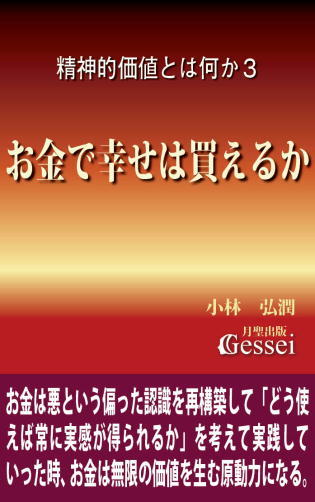
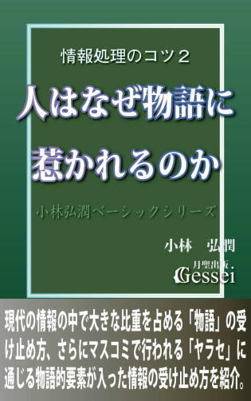

| 社会の学び方・政治経済編４: 社会秩序を保つ官の仕事とそれを支える政治の役割（月聖出版） | |
| 小林弘潤 | |
| Gessei Shuppan (2014) | |
社会の学び方・政治経済編４
社会秩序を保つ官の仕事とそれを支える政治の役割
小林弘潤
※更新履歴
2015/11/6 1.1版 ・Kindle用目次追加
※著者ツイッターで、「本の価格を上げる場合の時期」等の情報を発信しています。ご興味ある方はどうぞ（携帯からも読めます）。
まえがき ～警察、検察、裁判所に対する批判は、彼らの仕事の大変さを理解した上で行う必要がある
社会の中で法律違反や犯罪行為をした人を見つけ出して的確な判定と公平な処分を下す役割を担っているのが「警察、検察、裁判所」という治安維持機関ですが、これらの機関に対しては時おり「一方的な非難の声」が出ることがあります。
例えば、凶悪殺人事件のような世間を揺るがす大事件が発生したものの、犯人が狡猾で証拠を残さなかったために捜査が難航して犯人逮捕が進まない状況が進むと「犯人を捕まえない警察は反省しろ！」というような非難の声が出ることがありますが、私はこういう声を聞く度に「これを言う人は、証拠がない状況で犯人（容疑者）を逮捕することがどれだけ難しいことか知っているのかな」という思いになります。
この「警察、検察、裁判所が行っている的確な判定と公平な処分の難しさ」という視点は世間でほとんど言われないのでピンと来ない人が多いと思いますが、このことは「彼らの仕事とスポーツの試合で審判が行っている仕事のどちらが難しいか」を考えれば理解できると思います。
スポーツの試合では「ルール違反をした人への的確な判定と公平な処分」は審判が行いますが、スポーツの試合の場合は「判定をしたり処分を下す立場にある審判が、選手の動きを常に見ることができる状況にある」のに対し、警察、検察、裁判所の人は「法律違反をした人の行動が見られる状況にはない」と言えます。
ルール違反に対する判定や処分というものは「その行為を目撃した人がいるかいないか」によって大きく影響されると言えますが、計画的な殺人事件の場合は目撃者が存在せず被害者も亡くなっているのが普通なので「その行為を加害者しか見ていない」という状況になります。こうした状況において「証拠隠滅がなされて物的証拠がなくなり、加害者のアリバイ工作も行われる」ことにでもなったら、犯人を断定したり公平な処分を下すことは困難を極めることになってしまうと言えます。
犯人を断定するのが難しい状況であるのにもかかわらず、世間から「犯人を捕まえない警察は反省しろ！」という声が出るようになると、警察や検察は証拠不十分でも容疑者を逮捕せざるを得ない状況になってしまいます。その場合は「何の罪もないのに誤認逮捕され、重罰が科される冤罪」という、された方にとっては人生そのものが破壊されてしまうほどの大変な事態が起こる可能性もありますが、当然警察、検察は「冤罪をかけられた人が大変な苦痛を味わう」ことを知っていると言えます。
その意味で有罪無罪の判決を出す裁判所も含めて、彼らは「一刻も早く犯人を逮捕して社会に秩序を保たなければならない」という責任感と、「証拠不十分で逮捕・起訴し、さらに有罪判決を出した人がもし冤罪だったら......」という恐れによって生じるジレンマに常に苦しんでいる、という言い方ができます。
ただ、ここで私が言いたいのは「警察、検察、裁判所に対する批判をするな」ということではないので誤解なきよう願います。今の日本の警察、検察、裁判所におかしいところがあるのも確かで、例えば2010年１月に陸山会の土地疑惑で小沢一郎氏の元秘書３人を逮捕・起訴した検察と、彼らに有罪判決を下した裁判所の判断は明らかに「不当」だと思います（これに関しては電子書籍『小沢一郎の政治とカネの疑惑と裁判を解明する』で詳しい説明をしているが、偏見を排除して冷静にこの本を読めば誰でも「彼らの逮捕・起訴と有罪判決はおかしい」という意識になれると思う）。
その意味で、私自身も警察、検察、裁判所に対して批判をすることがありますが、そうした批判は彼らの仕事の大変さを理解した上で行う必要があると思います（少なくとも、そうした意識を持たない一方的な批判はフェアではないし、説得力も出ないと思う）。警察、検察、裁判所は大変な権力を持っているので「暴走したら大変なことになる」と言えますが、それでいて彼らも心の奥では「自分たちの仕事の大変さをわかって欲しい」という思いを持っていると思うので、私としては「時おり警察、検察、裁判所が暴走したり常軌を逸した判断をするのは、自分たちの仕事の大変さが理解されないことに対する反発心が背後にあるのかもしれないな」という思いになることがあります。
この『社会の学び方・政治経済編４』では、「警察、検察、裁判所の仕事も含めた社会秩序を保つためのシステム」から「そうした仕事を支える政府の役割」まで様々な知識を紹介していますが、マスコミ報道では見えてこない「政治の地味な部分」に対する理解が深まればと思っています。参考になれば幸いです。
1 ルール破りへの的確な判定と公平な処分が「ルール破りは損」の意識を生み秩序維持になる
この『社会の学び方・政治経済編４』はこのシリーズの４冊目の本ですが、ここで改めて「政治」という言葉の使い方について触れておきたいと思います。
政治という言葉はまず「法律や条例を制定する立法」という意味で使われます。例えば、「政治家」という存在は立法府や地方議会を構成する国会議員や地方議会議員を指すので、この場合の政治は「立法」の意味になっています（「立法と行政」と同じ意味で「政治と行政」と言うこともある）。
ただ、政治という言葉はもっと広く「立法の仕事だけでなく、行政や裁判や警察も含めた官の仕事全般の意味」で使われることもあります。この本でも政治という言葉をこちらの意味で使っていることが多いと言えます。
とはいえ、その場合は「政治の仕事＝官の仕事」という認識になって混乱してしまうこともあるので、この辺の意味の相違を明確にしておきたいと思います。
官というのは税金によって運営される組織すべてを含むので、行政や裁判や警察だけでなく「公立学校」なども含まれてしまいますが、「公立学校の仕事が政治の仕事」という認識になるとちょっと無理が出てくると思います。そこで、ここからは政治の仕事と官の仕事を明確に区別して「政治とは官の仕事を管轄し、コントロールするもの」という視点を出してみたいと思います。
『社会の学び方・政治経済編３』13節では「官は親から学費や生活費の面倒を見てもらうすねかじり学生」という言い方をしましたが、官から見て親に当たるのが政治を行う政府であると言えるため、「政府と官は親子関係」と考えるとスッキリした認識ができると思います。
また、これに対して政府と民間の組織との関係というのは、「インフラ設備等の便宜は図ってくれるが会社がつぶれても普通は面倒を見てもらえない」（公共性が高かったり全国的な影響力がある大手スーパーや金融機関等は別だが）ことが言えるため、アパートの管理人と住人の関係（住人が破産しても管理人が生活費の面倒を見る義務はないから）と考えると理解しやすいと思います。
では本編に入りますが、この『社会の学び方・政治経済編４』ではまず「官の仕事」の中でも重要な要素を占める「社会秩序を保つためのシステム」に関する話を紹介し、その後で「その仕事を支える政治の役割」として、官をコントロールする政府に関する話にも踏み込んでみたいと思っています。
社会全体の価値を高めるためには、社会を構成する各人が「努力によって価値を作る」という姿勢を持ち続ける必要があります。ただ、人はともすれば努力をするのではなく楽をする方向に流れてしまうところがあります。
楽をして価値を得ようとする行為の典型例が「お金の力で殺人などの犯罪をもみ消す」とか「暴力によって他人が苦労して作った価値を奪い取る」という行為ですが、こうした行為を防ぐために必要なのが「法律等を作って様々なきまりを作り、人間の行動を規制する」という発想です。
規制とは「人間が向かう方向性を楽をするのではなく努力する方向に向かわせる」ためにあり、この目的に沿って様々なルールとそれを守らせるしくみが社会の中で作られてきたと言えます。
その意味で、そうしたルールが目指すべき方向というのは「人々が、努力や成果に応じた公平な価値が配分される方向」に集約されます。
このことを一段具体化しますと、「社会全体の価値を高めるために貢献をした人にはそれに応じた価値を配分し、反対に価値を損なう行為をした人にはそれ相応の償いを与える」ということで、こうしたルールやしくみが社会で的確に運用されれば不満や不公平感が高まることなく社会の秩序は保たれると言えます。
価値を損なう行為をした人への償いは「罰則」として与えられることが多いですが、『社会の学び方・政治経済編１』４節でも指摘したように罰則というものは受けた人間にとって多大な労力や苦しみになるため、罰則を適用された人は「それ以降の自分の生き方の方向性を変えようとする意識」を持ちやすいと言えます。
また、罰則を受けた当事者ではなくそうした様子を知った他の人が「同じような価値を損なう行為をしたら自分にもそうした罰が与えられる以上、自分はこうした行為をしないぞ」という意識になることもあるので、このことがさらなる価値の損失を防ぐための抑止効果を生むこともあります（これを一罰百戒効果と言う）。
「ルールを制定し、ルールを破った者がいたらそれを的確に判定して相応の罰則を与えるしくみ」というものは、古今東西のあらゆる国家だけでなくその中にあるほとんどすべての組織で採用されています。その意味で、こうしたしくみは「国家や組織の秩序を保つための唯一無二のやり方」と言うことさえできます。
人は誰でも「なるべく労力をかけずに価値を手に入れたい」という意識を持っているため、余計な労力をかけずに済む選択肢がある状況ではそちらの方向に流れやすいものです。
例えば、昔の人が道を歩いて旅行していたとします。目的地に着くまでの道が険しい一本道しかなかった場合、旅人は覚悟を決めてその道を歩くしかなくなりますが、「途中で道が分かれて険しい道と楽な道を自由に選べる」という状況になった場合、誰でも楽な道を選ぼうとするものです。
人生というのは一本道ではなく、常に様々な分かれ道があるものです。そして人間は誰でも自由意志を持っているため、どの道を選ぶかはその人自身の意思で決めることができます。そのため、険しい道と楽な道のどちらかを選べる状況では「何もなければ楽な道を選んでしまう」のがこの世界に生きている人間の特徴と言えると思います（これに対しては「善人か悪人かに関係なく、大なり小なり誰でも同じ」という認識が必要だと思う）。
もちろん、楽な道を選ぶことがその人や社会の幸福につながるならそれでもいいのですが、楽な道を選ぶことがその人を堕落させたり他の人の価値を損なったり、社会に迷惑をかけてしまう結果になることも多いものです。そこで周囲の人間はその人に楽な道を選ばせないようにする工夫をする必要が生じ、それは例えば「楽な道の先に岩を置いたりして通りにくくする」ようなことです。
一般的に、ルールや法律を守ろうとする際は労力がかかります。例えば、学校に通っている子供に対しては「朝の特定の時刻までに登校しなければならない」というルールが課せられていますが、このルールを守ろうとする場合は「眠いのを我慢して早起きをする」ことによる労力がかかります。
子供が目が覚めた時というのは「眠いのを我慢して時間通りに起きる険しい道を選ぶか、そのまま寝坊する楽な道を選ぶかの選択を迫られている時」と言えます。ここで、「楽な道の先に岩が置かれるなどして通りにくくなっている」という状況があれば、その子供は「眠いのを我慢して起きるのは大変だけど、このまま寝坊したらもっと大変だから起きるしかない」という意識になることができます。
この場合の「楽な道の先に岩が置かれている状況」というのは、寝坊しようとしても親が起こしに来るとか、遅刻したら学校が成績を下げるなどの罰を与えることを指します。こうしたことがあれば、子供は「大変だけどルールを守って早起きするしかない」という意識になれるので、最低限の労力で時間通りに起きる選択をしやすくなるのです。
これは少し余談ですが、子供が引きこもりになった時、その状態から脱出させるためにはトイレ掃除や洗濯、浴槽掃除などの家事をやらせることが有効になるようです。なぜなら、子供が引きこもり状態を続けてしまうのは「何の労力をかけずとも生きていられることに慣れてしまう」からで、「家の中で学校や仕事に行く以上の労力を課す」ことにすれば、相対的に学校や仕事に行くことが苦にならなくなるからです。実際、「家事をするくらいなら学校に行く方が楽だ」という意識になって、引きこもりから抜け出した子供もいるようです（心療内科医の中川晶氏の話。産経新聞07年11月23日付）。
ここで言いたいのは、この「楽な道の先に岩を置く」ことが罰則の本質だということです。「人間は労力がかからない方の道を選びやすい」「ルールを守ることには相応の労力がかかる」ことから、「それ以上の労力になる罰則を用意すること」がルールを守らせるために必要になるのです。
ただ、ルールやきまりというものは「作ってしまえばそれで万事ＯＫ」というわけではなく、それを守らせるしくみができて初めて機能するという性質を持っています。
なぜなら、ルールを作ったにもかかわらず「ルールを破っても簡単には発覚しない」とか「破ったことが発覚しても相応の罰則が科されず労力がかからない」という事態になった場合、社会や組織の構成員の中には「ルールを破った方が得で、守った方が損をしてしまう」という意識が出てくるからです。それでは構成員の中に、ルールを守らなければならない意識（遵法精神）は生まれず、ルールが有名無実化して何の意味もなくなってしまいます。
その意味で、社会の構成員が「ルールを守るという選択肢しかない」「ルールを破ったら損をする」という意識になるためには、人々の行為がルール破りの行為かどうかを的確に判定し、それに対して公平な処分が与えられるしくみを作る必要があります。こうした「的確な判定と公平な処分」が整備されている社会であればあるほど、秩序が保たれた平和な社会と言うことができるのです。
そこでこうした「ルールとそれを守らせるしくみを作ることで社会や組織の秩序を保つ」ことの具体的な話を紹介してみたいと思います。
『社会の学び方・政治経済編１』５節でも触れましたが、スポーツの試合が行われる場合は試合をする選手やチームだけでなく「審判」という立場の人が存在し、選手のプレーに対する的確な判定をしたり、反則があった場合に処分を行う役割を担っています。
スポーツの試合で審判が的確な判定ができないと、選手の間で反則が横行して審判が試合をコントロールできなくなることがあります。例えばサッカーの試合が「反則やケンカ等が次々と行われてイエローカードやレッドカードが続出する」という状況になった時、そうした試合は「審判がコントロールできなくなった荒れた試合」と言われるものです。
こうした試合で選手が〝荒れて〟しまう際には必ず、選手が反則をしても審判が気づかなかったり判定が的確でなかったり、さらには処分が不公平という状況があるものです。こうした状況では選手が「ルールを破った方が得だ」という意識になってさらに反則をする方向に流れやすかったり、「相手チームの処分は軽いのに、自分たちは重い」という不公平感が不満として蓄積されてしまう状況になっているからです。
サッカーの試合で秩序を保つには、「フリーキックのポイントが少しずれていても注意してやり直させる」というような的確な判定や、反則があった場合に公平性を十分考慮した処分が必要になります。例えば、サッカーＷ杯の主審を務めたこともある上川徹氏は「選手と信頼を築くために大切なことは何ですか」という質問に対して、「一つ一つのプレーごとに公平な判断をするための努力を惜しまないこと」という答えをされています（読売新聞06年９月13日付）。
サッカーなどのスポーツの試合では、ルール違反をした人への判定と処分を持つ権限が審判のところに一元化していますが、これに対して政治の世界では「法律に違反した人を判定して逮捕したり起訴する段階」と「そうした人に処分を下す段階」が分かれており、前者を警察と検察、後者を裁判所が担当するようになっています。
その意味で、こうした警察、検察、裁判所が職務を行う際も審判と同じように、「法律違反をした人に対する的確な判定と公平な処分」を行う必要があり、それをおろそかにした場合は社会全体の秩序が失われて〝荒れて〟しまい、法律違反や理不尽な暴力等が横行することになると言えます。
ただ、一般的な社会の中で法律違反や犯罪を行った人を見つけて的確な処分を出すことは難しいものです。少なくとも「スポーツの試合で反則をした選手に対して的確な処分を出すことよりも難しい」ことは間違いがないと思います。
なぜなら、スポーツの試合の場合は「判定をしたり処分を下す立場にある審判が、選手の動きを常に見ることができる状況にある」ものですが、警察、検察、裁判所の人は法律違反をした人の行動が見られる状況にはないからです。
2006年に行われたサッカーＷ杯の決勝の試合中、フランス代表のジダン選手が試合中に相手チームの選手に頭突きを喰らわして退場処分になった事件がありましたが、この行為は主審が見ていないところで起こったので、主審が即座にジダン選手を退場処分にすることはできず、処分を出すまでに少し時間がかかりました。
ただ、近くにいた副審がこの行為を見ていたので主審は副審から話を聞くことができ、それによって主審も「この行為は退場に値する」という判断ができたと言えます。さらに、もし主審だけでなく副審もこの行為を見ていなかったとしても、「テレビカメラがそのシーンを映していて世界中で20、30億人もの人々が見ていた」と言えるので、仮に試合中に退場処分が下されなかったとしても、試合後のジダン選手に重い処分が科されることは確実な状況だったと言えます。
このように、ルール違反に対する判定や処分というものは「その行為を目撃した人がいるかいないか」によって大きく影響されます。
サッカーなどスポーツの試合の場合は、判定や処分を行う立場にある人が選手の動きを見ていますし、さらには観客や視聴者も見ているので的確な判定や処分が下されやすいと言えます。しかし、一般の社会での法律違反や犯罪行為の場合は判定や処分を行う立場にある人がそうした行為を見ていることはまずありませんし、その行為を見ていた人が誰もいないことも珍しくありません。こうした状況で法律違反や犯罪行為をした人を見つけ出し、的確な判定や処分を下すのは非常に難しいと言えると思います。
例えば交通事故が起こった場合、「その事故の目撃者がいる場合」と「いない場合」では大きく状況が異なります。目撃者がいない場合は事故の加害者と被害者しかその様子を見ていないことになるので、双方の言い分が食い違った場合は的確な判定や処分が非常に困難になります。
これは大阪の主婦の人がしていた話ですが、雨の中を車で走っていて交差点が青だったので直進したところ、左から信号を無視して突っ込んできた車に衝突されたようです。ところが衝突してきた相手は「こっちが青だ」と主張し、さらに保険会社の調査員からも「あなたにも非があるはずだ」という冷たい態度を取られたため、この人は「必ず証人を見つけてみせる！」と奮起して事故現場に毎日通い、雨の中で張り込みや聞き込みもし、数日後にようやく一人の証人を見つけて自分には非がなかったことの証明に成功したようです（産経新聞06年６月24日付「負けないおばちゃんパワー」より。ご本人の投書から引用）。
こうした「警察も顔負けの捜査」を行って執念で証人を探し出したこの人の〝おばちゃんパワー〟には感服しますが、同時に「的確な判定をするためには目撃者や証人が一人でもいることが大きい」ことがこの話からよくわかると思います。
ただ、世の中で様々に起こる法律違反や犯罪行為の中では「目撃者が存在せず、探しても見つけようがない」ことは珍しくありません。典型的なのが「（衝動的、突発的ではない）計画的な殺人事件」で、この場合は目撃者が存在せず被害者も亡くなっているのが普通なので、その行為を加害者しか見ていない状況になります。
こうした状況において「証拠隠滅がなされて物的証拠がなくなり、加害者のアリバイ工作も行われる」ことにでもなったら、犯人を断定したり公平な処分を下すことは困難を極めることになってしまうのです。
2 犯罪行為の判定や処分の検証を慎重に行うのは、それが社会の秩序を保つ最善の方法だから
人間にとって法律違反や犯罪行為が発覚して処分を受けることは、自分の価値が損なわれたり周囲からの評価や信用が失墜してしまうことを意味するため、法律違反や犯罪行為を犯した人はそうした行為を発覚させない行動を取りやすいところがあります。
この世界に生きている人間は心の中が他の人には見えないようになっているので、人間はともすれば「犯罪を行ってもそれを表に出さないようにすれば問題はない」という発想をしてしまい、それによって虚偽報告（ウソ）や改竄や偽装、（証拠などの）隠蔽をする方向に走ってしまうことがあります。
法律違反や犯罪行為をした場合、それがジダン選手の頭突きのような「多数の目撃者が存在して自分の行為が既に多くの人に認知されている状況」であれば、罪を認める選択肢しか選べない（罪を認めなかったらそれ以上の重い罰を受けることが明確な状況だから）ので、「覚悟を決めて処分に従う」という意識になりやすいところがあります。
それに対して、目撃者がいないなど簡単には自分の行為が発覚しない状況というのは、罪を認めない選択肢も選べる状況（罪を認めなくても重い罰を受ける可能性は低いと思える状況だから）になっているため、こうした状況における人間は「正直に罪を認めるなど損であり、虚偽報告や改竄や隠蔽によって罰から逃れた方が得だ」という意識になりやすいと言えます。
その意味で、法律違反や犯罪行為をした人を見つけ出して的確な判定と公平な処分を下す役割を担っている警察、検察、裁判所の方々は、「事件において虚偽や改竄や隠蔽が行われて判断が難しい状況でも、的確に法律違反や犯罪を行った人を見つけ出して処分を下さなければならない重責」を担っているところがあります。
「判定をする側が虚偽や隠蔽に騙され、凶悪犯罪を行った人が何の罰則も与えられない」ことになった場合、正直者がバカを見る不公平な世の中になってしまうことになるので、こうした立場にいる人たちは「虚偽や隠蔽に騙されないための努力」を行おうとするのが普通です。
しかし、こうした状況で的確な判定や処分を行うためには大変な労力がかかるものなので、それが様々な弊害につながってしまうと言えます。
法律違反や犯罪を捜査し、法律違反や犯罪を行った疑いがある人（被疑者、容疑者）を逮捕する役割を担っているのが警察や検察ですが、警察や検察が被疑者を逮捕するには法律違反や犯罪をしたことの「証拠」が必要になります。証拠がないのに逮捕してもいいことになったら、実際には犯罪を行っていない人が無実の罪で逮捕される「冤罪」という事態が続出してしまうからです。
ただ、この証拠というものは、多数の目撃者がいてその人が犯罪を行ったことが明白である場合は簡単に提示できますが、目撃者がいない交通事故や計画的な殺人事件のような状況で見つけ出すのは非常に難しいものです。
有力な証拠になりうる要素の基本は「目撃者の証言」「血痕や凶器などの物的証拠」「本人の自白」ですが、犯人が最初から計画して「目撃者がまったくいない状況で犯罪を行い、凶器などの証拠隠滅もし、虚偽報告をして自白もしない」ことになると証拠は簡単に出なくなり、的確な判定をするためには大変な労力がかかることになってしまうのです。
人は「簡単には自分の行為が発覚しない状況」に置かれた場合「虚偽報告によって罰から逃れた方が得だ」という意識になりやすいため、実際には犯罪を行った人でも「やっていません」とウソをつくことが多くなります。
すると、犯罪捜査をする方も「虚偽や隠蔽に騙されないためにも、容疑者が言う『やっていません』という言葉を安直に信じてはいけない」という意識が強くなり、さらに証拠が簡単に出てこない難しい事件では「早く解決させなければならない」という焦りも出てくるため、「やっていませんという言葉をウソだと判断し、実際には犯罪を行っていない人でありながら逮捕して重罰を科す」というような事態も起こるようになってしまいます。
こうした「何の罪もないのに誤認逮捕され、重罰が科される冤罪」は、された方にとっては人生そのものが破壊されるほどの大変な事態で、冤罪によって人生を狂わされたり無念の死を遂げた人間はいつの時代も後を絶たなかったと言えます（世界史上最も有名な冤罪が、キリスト教の始祖イエスの死刑判決と十字架刑と言える）。
日本の場合、戦前の時代は証拠不十分での逮捕による冤罪が多かったようで、戦後はその反省から「明確な証拠を見つけない限り逮捕しない」とか「疑わしきは罰せず」という意識が強くなったところがあります。それによって冤罪による人権侵害は以前と比べて少なくなったようですが、この「疑わしきは罰せず」の意識が強くなった場合はまた別の弊害が生まれてしまうと言えます。
それは「警察が冤罪発生を恐れ、容疑者が浮かんでも簡単には逮捕しない」ようになってしまうことで、「実際に犯罪を行った人が逮捕されないため、凶悪犯罪が発生した地域の人が犯罪に脅えた生活をしなければならなくなったり、罪のない多くの人がさらなる犯罪の犠牲になってしまう事態」です。
こうした「ウソに騙されないようにする意識が冤罪を生み、それが問題になって逮捕に慎重になると社会不安や犯罪被害が増える」という展開は、いつの時代のどの地域の警察でも直面してきたジレンマと言えます。
現代の日本でも、冤罪を恐れるあまり逮捕や判決に慎重になる傾向がどこかにあると思いますが（特に、無実の人に対する誤認逮捕が発覚してそれが世間で大きく報道された後など）、こうした傾向は日本だけではなく欧米などのキリスト教圏の国々でもよく見られると思います。キリスト教圏の場合は「イエス・キリストが冤罪で不慮の死を遂げた」ことが影響して、冤罪を発生させることに対する潜在的な恐怖があるという感じがするからです。
アメリカの刑務所の看守と死刑囚を巡るドラマを描いた『グリーンマイル』という映画では、奇跡を起こせる不思議な能力を持った男が殺人事件の容疑で逮捕されて死刑判決を受けたものの、担当の看守が「この男の罪が実は冤罪であり、自分はキリストのような人間を処刑しようとしているのではないか」と悩むシーンがあり、私はこの様子を見て「規制が厳しいように見えるアメリカでも冤罪への恐怖は根深いものがあるんだな」という思いになったものです。
治安維持をする側が「冤罪への恐れ」を持ちすぎると必然的に逮捕や処分が甘くなるので、結果として犯罪の増加とそれによる社会不安が起こるようになります。そうした治安悪化と社会不安が一定の段階を越えるとその反動として「厳罰化を望む傾向が高まって安直な逮捕でも是認されるようになり、それによって人権侵害や冤罪が多発する」という結果になってしまうものです。その意味でも、どこかで「冤罪を恐れて逮捕に慎重になり過ぎたらその後は反動が来るので、それがさらなる冤罪の発生につながりやすい」という冷静な視点を持つ必要があると思います。
電子書籍『社会の学び方・世界史編３』では「キリスト教国家が十字軍や宗教戦争、帝国主義によって多数の人々を殺してきた背景に、キリスト教の権威を悪用した殺人を正当化する思想があった」という分析を行っていますが、これについてさらに考えていく中で「十字軍以前のヨーロッパでは冤罪を恐れるあまり犯罪容疑者の逮捕や処分が甘くなってしまい、それによって治安悪化と社会不安がピークに達していた事情があったのではないか」と感じたものです。
当時の警察担当者や裁判官が冤罪への恐れでがんじがらめになり、犯罪者が逮捕されずに社会不安が広がっていたからこそ、「神や教会の敵である異教徒や異端者は殺しても罪にはならない」という殺人を正当化する思想が彼らの心をつかんで広がっていったのではないか、という感じがします。
法律違反や犯罪行為を的確に対処するのはこれだけ難しいことである以上、社会に秩序を保つためには警察などの専門の機関だけに頼るのではなく、一般の人々も彼らの仕事に積極的に協力する必要があると思います。
ところが、現代の日本では警察が犯人逮捕のために一般の人に職務質問をしても、「警察はよくやってくれている」という声ではなく「私は疑われた」とか「人権を侵害された」という被害意識を持つ人が多く、それが警官の職務意欲を落としているようです（産経新聞00年３月15日付）。
「泥棒を100％検挙するためには国民１人当たり２人の警官が必要」という話も聞いたことがありますが、現実には現代の日本の警察は「１人の警官で500人以上の国民を担当する」という大変な状況にあるようです（欧米でも１人あたりの担当数は200～300人程度らしい。読売新聞06年12月６日付）。ただ、そうした日本の警察の大変さが世間で大きく取り上げられることはあまりない感じがします。
これは現代の傾向だけではないと思いますが、秩序が保たれて平和になった社会では「警察や検察はいつも犯人を捕まえて当たり前」とか「裁判所は常に的確な判決を出すのが当たり前」という意識が社会に蔓延しやすいと思います。
当事者が懸命の努力を重ねて社会の治安を保つことに成功した場合、安全や平和が常態化して人々は価値の実感ができなくなることが多くなります。それは、治安維持を担当する人たちが努力をすればするほど、そうした仕事の価値が忘れ去られてしまうことを意味します。
そして、こうした常態化の意識が蔓延した場合、警察や裁判に関してマスコミが報道したり世間で話題になるのは「警察が不祥事や誤認逮捕などの問題を起こした時」とか、「事件が解決しなかったり偏った判決が出された時だけ」という傾向になってしまうものです。
世間では、大きな事件が未解決の段階で報道されて犯人逮捕が進まないと「犯人を捕まえない警察は反省しろ！」という非難の声が飛んだり、「今の裁判にはおかしなところが多すぎる」というような一方的な批判の声が聞かれますが（もちろん、一部には怠慢な職務を行っている警官や裁判官もいるとは思うが）、そうした人たちはもっと警察や裁判の地味な仕事の様子や「彼らの仕事がどれだけ治安維持に貢献し、社会に秩序が保たれているか」を知る努力をするべきだと思います。
もし「社会から犯罪を減らして平和にしたい」と本気で思っているのであれば、最低限「治安維持の仕事の大変さを十分理解し、職務質問等があったら警察に積極的に協力する」くらいのことは行う必要があると思います。
現代の場合、警察が証拠をつかんで誰かを逮捕した段階では、逮捕された人は「法律違反や犯罪を行った可能性が高い被疑者（容疑者）」と呼ばれ、「犯罪を行った犯人」とは呼びません。
そうした被疑者に対する有罪か無罪かの判定と、有罪だとしたらどのくらいの罰則を与えるか（量刑）を決めるのが裁判所の役割で、長時間の審議の後で有罪判決が出て初めてその人が犯罪を行ったことが確定することになります。
スポーツの試合では、審判がプレーを見た瞬間に選手に退場などの罰則を与えることが普通ですが、こうした迅速な判定と処分のあり方と比較した場合、一般の社会における裁判というのは相当な時間と手間をかけて行われていると言えます。世間ではたまに「もっと裁判を迅速に」などという声が出ることがありますが、裁判に時間と手間をかける一番の理由は「法律違反や犯罪を的確に判定することは簡単ではないため、慎重に検証しなければならない意識がある」からだと思います（もちろん、必要以上に時間をかけ過ぎる裁判が問題であることは確かだが）。
ただ、これだけ慎重に時間と手間をかけ、できる範囲の努力を行って検証をしても「有罪か無罪かの的確な判定や、犯した行為に見合った公平な処罰がいつも確実にできるわけではない」というのが現状です。それは、一度出た判決に不服がある場合に控訴や上告をして上級の裁判所で審議ができる上訴制度（日本の場合は三審制）が、世界中の国々の裁判制度に当然のように組み込まれていることだけでわかります。
人には誰でも「努力による価値を大切にしたい思い」があるため、「いじめられて大変な苦痛を受けた」とか「愛する人を無残に殺された」とか「長年苦労して作ってきたお金や財産を盗まれた」というような、自分が大切にしてきた価値を損なわれる事態に見舞われた場合、自分の価値を奪い取った人に対して相応の償いを求める心理になるものです。
その償いの一つに「自分が受けた苦しみを相手にも味わってもらうこと」があり、犯罪被害を受けた人が加害者に復讐したくなる思いはこういうところから来ると言えます。
ただ、法治主義の社会では被害者が私的に加害者に復讐する権利を認めていない（近代国家では特に、私的復讐を徹底して禁止している）ところがあり、加害者に対する〝復讐〟はその社会の警察、検察、裁判所が行う判定と処分に委ねなければならないことになっています。
なぜ私的復讐が認められないのかと言いますと、「被害者は感情的になって冷静な判断ができなくなっているので、私的復讐を認めたら加害者ではない違う人に苦痛を与える冤罪の発生原因になったり、加害者に必要以上に重い罰や苦しみを与える可能性もある。それでは暴力の連鎖が進んで社会の秩序が保てなくなってしまう」という思惑があるからです。
ただ、だからといって個人ではなく国家に任せればすべて的確な判定や処分が下されるわけでもなく、犯罪者への処罰が国家に委ねられているのは「国家が行う方が的確な判定や処分になる確率が多少は高いから」という程度の話であるのが現実だと思います。
そのため、昔の時代から犯罪被害者やその関係者の中で、国家が行う判定や処分に対して不満を抱いてしまう人は少なくなかったと言えます。そして、そうした被害者の声を聞いて同感した人も多かったと思うので、昔も今も「罪を犯しながら的確な罰を下されない犯罪者に復讐したくなる思い」は多くの人の心の奥底で渦巻いている感じがします。
それは、物語のジャンルの中に「復讐劇」があることからわかります。物語というものは人々が心の中で求めているものと合致した時以外は広まらないので、復讐劇が物語のジャンルになるということは、人々の心の中にそうしたものを求める意識が強くあったことを意味するのです。
日本で昔から有名な復讐劇が『忠臣蔵』ですが、この物語は300年前に作られて以来、小説、講釈（軍記物等を朗読する寄席の演芸の一つ）、歌舞伎、演劇、映画、テレビ等の様々な媒体によって演じられ続けてきたと言えます。講釈師は「冬は義士、夏はお化けで飯を食い」と言い、歌舞伎では「忠臣蔵は芝居の独参湯（いつ上演しても必ず当たるので不入りの際に出す演目という意味）」と言われているようです（読売新聞05年11月23日付）。
小説家であり政治家も務めているある方が「昔は『忠臣蔵』『ニーベルンゲンの歌』『モンテクリスト伯爵』などの復讐劇の名作に事欠かなかったが、私的復讐が禁止された近代以降は復讐劇の名作は姿を消してしまった」という話をしていたことがありますが、個人的には「そんなことはないのでは」という思いになります（読売新聞06年４月16日付。この「小説家であり政治家」とは石原慎太郎氏のこと）。
むしろ、私的復讐が徹底して禁止されて人々の心の中に〝復讐したい思い〟が蓄積されている現代だからこそ、「復讐の要素が入った物語」に人々は惹かれやすくなり、復讐劇の名作も生まれやすいのではないかと思います。
少し前、「名前と顔がわかれば人を殺せる能力を持った人間が、報道された犯罪容疑者を次々と殺していくことで犯罪が激減し、次第に世界中の人々の支持を得るようになった」という内容の物語が大ヒットし、日本だけでなく海外でも人気を集めて大きな話題になったことがありましたが、こうした物語が多くの人の心をつかんだ要因にこの「復讐したくなる思い」や「法律違反者や犯罪者に対して的確な罰が下されていないという人々の不満や鬱屈感」が影響していると思います（週刊少年ジャンプで連載された漫画・大場つぐみ／小畑健『DEATH NOTE』のこと。この作品は「復讐劇」とは言えないが、個人的には「過去の復讐劇の名作より『DEATH NOTE』の方がはるかに面白い」と思っている）。
この作品では「犯罪容疑者を次々と殺していくことが犯罪の抑止効果を生んで世界中の犯罪が激減して戦争がなくなり、一時的にではあるが世界が平和になった」というストーリーが展開されており、私は最初この話を読んだ時に「もし実際にそういう能力を持った人間が現れたら、現実に社会が平和になるのでは」という妙なリアリティーを感じたことを覚えています（そう感じさせるところに、この作品の物語としてのレベルの高さがあると言えるが）。ただ冷静に考えてみれば、この状況で社会が平和になることはありえないと言えます。
なぜなら、この物語の主人公は「人の心の中を見て、罪に見合った的確な判定をして罰を与えている」わけではなく「報道された情報を鵜呑みにし、どんな罪の人でもひたすら極刑を下している」だけなのですが、これは特殊な能力などなくても警察や検察などの公的権力がやろうとすれば十分できるからです。
「公平性を考慮して慎重な検証をした後で処罰を与える意識」を持たず、容疑者にすべて厳罰を科すことで秩序が保たれて平和になるのなら、「警察、検察、裁判を維持するためにかかる労力が激減し、官の仕事が大幅に削減できて税金が安くなる」ことは間違いがないので、現実に実行しようとする国が出てきてもおかしくないと思います（経済が停滞して財政破綻しているような国は特に）。
結局、容疑者に次々と極刑を下す行為によって現出するのは平和どころか「人々が冤罪や厳罰の恐怖に脅えて暮らす暗黒社会」でしかないと思います。
国家が多大な労力がかかっても犯罪行為の判定や処分を慎重に検証することを重視しているのは、それが「長年の経験によって得た社会の秩序を保つための最善の方法」という認識があるからだと思います。
3 法律の条文は、適用される範囲が拡散せず誰でも明確に判定できる記述である必要がある
スポーツの試合で、審判が選手にプレーに対する判定や処分を行う場合、事前にそうした判定や処分の基準になる「ルール」が存在します。審判が行う判定や処分というのはあくまでも「事前に定められたルールに対する忠実な判定や処分」でしかなく、審判はルールから逸脱した自分独自の基準に基づく判定や処分を行うことは許されていません。
同様に、警察、検察、裁判所の役割も「あらかじめ作られた法律の内容に忠実な判定や処分をすること」にあり、その意味でこうした組織は「法律に盛られた理念を具体的に展開させる執行機関」という言い方もできます。
法律を具体的に執行する段階で警察や裁判所が「的確な判定や公平な処分」が行えるためには、法律に盛り込む規定や条文の作成をする際に様々な配慮が必要になります。そこで次に、法律を具体的に展開させる段階の前にある「法律を作る段階（立法、法制化）」の話を紹介してみたいと思います。
これに関して最初に考えてもらいたいのは「なぜ法律に盛り込まれている文章は難しくて面白さがないのか」という観点です。
六法全書などの法律書を読んだ時に「一度読んだだけで内容がスッキリ頭に入り、面白くてたまらない」と感じる人はあまりいないと思いますが、古今東西のどの国の法律でも「子供でもわかるほどのわかりやすくて面白い法律」というものは存在しなかったのではないかと思います。
私は紙の本『情報処理のコツ』第一章の中で、「難しい文章を誰でもわかる言葉に置きかえて説明できることは一つの知的能力だが、そうした能力の重要性に気づいていない人が多い」という主張をし、「仏教の僧侶が意味のわからない漢文のお経を唱える」ことや「政治家や役人がお役所言葉で説明する」ことを事例としてあげています。
この記述を読まれた人の中には「この人は、法律に盛り込まれている文章も漢文のお経やお役所言葉と同じであり、法律の条文も誰にでもわかる理解しやすい文章にするべきだと言いたいのだろう」と感じた方もいらっしゃるかもしれません。ただ、私は法律の条文に関しては「こうしたものが理解しにくい難しい文章になってしまうのはある程度仕方がなく、必要以上に理解しやすい文章にした場合はかえって弊害をもたらす」という認識を持っています。
なぜかと言いますと、法律の条文が一般の人が読んでも簡単に理解できず難解な内容になっているのは、「なるべく恣意的な解釈をされないよう、様々な状況を想定した複雑な書き方をしている」からです。
ここで意識する必要があるのは、『社会の学び方・政治経済編２』９節で少し触れました「解釈」という観点です。法律の条文というのは恣意的な拡大解釈をさせないようにするため、解釈できる範囲を狭める記述にする必要があるのです。
法治主義の国家における法律には強制力があるため、盛り込まれた規定や条文から解釈できる範囲を狭めるような配慮がない場合、自分勝手な人にとって都合のいい恣意的な解釈が行われ、法律に盛られた趣旨がねじ曲げられて多くの人に害を及ぼす恐れがあります。
例えば、刑法に出てくる傷害罪に関する規定が「人を傷つけた者は処罰する」というような簡単なものでしかなかった場合、読む方にとってはわかりやすいかもしれませんが、現実の法律がこうなってしまったら大変なことになります。
というのも、「傷つける」という表現は「人の感情を少しでも害すること」と解釈することもできるので、場合によっては「その国の独裁者を批判する人間を処罰するための口実」として悪用されてしまうこともあるからです。
こうした悪用を防ぐためには、法律の条文の中に「この場合の傷つけるということは、肉体面で人に傷害を負わせるという意味である」とか「治療が必要なほどの大きな傷害の場合は該当するが、かすり傷程度の小さな傷害は該当しない」というような具体的な記述を入れるなどして、適用される範囲が拡散せずに誰にでも明確に判定できる記述の仕方をする必要があります。
こうした記述がされていない法律では的確な判定ができないので、執行する段階で大変な労力がかかって社会にとって大きな負担になったり、『社会の学び方・政治経済編１』９節で紹介した冠位十二階や九品官人法のような、当初の趣旨とはまったく違った運用がされる結果になってしまうこともあります。だからこそ、法律の規定や条文というものは、恣意的な解釈をさせないように様々な状況を想定した複雑な記述を行う必要があるのです。
法律を元にした判定を行う状況というのは「人間の行為（言葉や内面の思いを含むこともある）が法律の規定に違反している可能性がある時」ですが、中には人間の行為が法律の規定に違反しているかどうかの判定が非常に難しい場合もあります。
人間の様々な行為の中で、例えば傷害とか殺人等の行為は比較的判定しやすいと言えますが、中には似たような行為との違いがわかりにくい場合もあります。そこで、このことに関する具体例として「子供に対するしつけと虐待をどう区別するか」という問題を取り上げてみたいと思います。
親が子供を虐待して深い傷を負わせたり死なせてしまうような悲惨な事件を防ぐためには、虐待という行為を禁止し、そうした行為を的確に判定して処罰する必要がありますが、こうした児童虐待を防止する法律を作る際は「しつけと虐待は外から見ると区別が難しい」という観点を考えなければなりません。
虐待の定義が不明瞭なまま法制化されてしまった場合、親が子供の成長を考えて行っている「しつけ」の行為すらも虐待と判定されてしまうこともあり、それによってそうした親が逮捕されて重い処罰を科されるという可能性があります。こうしたケースが実際に出てくると親がしつけをする際に過敏に反応したり消極的になる傾向が生まれるため、その結果甘やかされて善悪の区別がつかない子供があふれてしまう可能性すら生じます。
日本では2000年に児童虐待防止法が制定されましたが、この法律の法案作成においては「しつけと虐待をどう区別し、どういう行為になったら法律違反と判定して虐待をやめさせるか」に関する議論が百出したようです。
この問題が非常に厄介なのは、外から見たら明らかな過度の暴力による虐待であっても、それを行った親が「虐待ではなくしつけだ」と主張することが多いということです。実際、子供に殴る蹴るの暴力を平気でやっていながら「これは子供のためを考えたしつけであり、程度が少し行き過ぎただけだ」と主張する親も多いようです。
もし法律における虐待の定義を「親が虐待と認識していた場合に限る」としてしまった場合、子供がひどい暴力を受けて死んでしまったとしても、親がしつけと主張すれば処罰は与えられないことになるため、虐待防止法など何の意味もなくなってしまいます。そのため、こうした虐待の正当化を防ぐための一つの考え方としては、虐待の定義を「子供が虐待と認識した場合にすること」があげられます。
しかし、こうなった場合は「子供が親から叱られたとか、ちょっとした罰を与えられたことまですべて虐待だと主張してしつけができなくなる」という可能性も出てくるので、「親が虐待と認識したものが虐待」と定義しても「子供が虐待と認識したものが虐待」と定義しても、どちらにも問題が生じることになるのです。
児童虐待防止法の法案審議では様々な議論の末、虐待の定義を「身体に外傷が生じたり生じる恐れがある暴行（身体的虐待）」「猥褻な行為（性的虐待）」「心身の正常な発達を妨げるような著しい減食や長時間の放置など育児の放棄（ネグレクト）」「著しい心理的外傷を与える言動（心理的虐待）」の４つにすることが決まり、しつけと虐待の兼ね合いについても「児童の親権を行うものは、児童のしつけに際してその適切な行使に配慮しなければならない」という文言を入れることで決着したようです（読売新聞02年７月８日付「法律物語 児童虐待防止法」）。
この法律が成立して虐待の定義づけができた後、虐待を判定する立場にある児童相談所の中からは「法律ができる前と比べて親にきちんと説明でき、対応しやすくなった」という声もあったようです（とはいえ、それでも虐待の判定を的確に行うのは難しく、虐待による子供の死亡は法律施行後も少なからずあるのが現実と言える）。
ただ、この虐待という行為の判定の場合、人間が行う無数の〝行為〟の中では比較的判定しやすい部類に入ると言えるかもしれません。これに対して「人権侵害」とか「差別」という行為になった場合、何を人権侵害や差別と判定するかは困難を極めることになります。
先に紹介した「警察のちょっとした職務質問でも人権侵害と認識されてしまう」というような状況では、定義が曖昧なまま人権侵害を禁止する法律を作った場合、警察が職務質問をするたびに人権侵害と認定されて何の捜査もできなくなってしまう可能性もあるので、こうした「差別や人権侵害に対する具体的な運用規定が入った法律や条例」は今まで様々に検討されながら頓挫してきたという経緯があります（条文の中で努力規定や禁止の理念が盛り込まれたことはあったようだが）。
2006年に千葉県で「具体的な運用規定が入った障害者差別を禁止する条例」が制定されましたが、この条例に対しても「何が差別に当たるかの基準が曖昧」という声があります。
障害者の人を雇用した企業が「自分たちの一方的都合で立場が弱い障害者の採用を拒否したり解雇する」ことはもちろん問題だと思いますが、この条例ではこうした行為を禁止する条文が「業務の本質的部分の遂行が不可能な場合や合理的理由がなく、（障害者の）採用拒否や解雇はできない」という内容になっているようです。
ただ、この場合は「業務の本質的部分」とか「合理的理由」が具体的に何を指すのかを明確にしておかない限り、「障害者の失敗が実際は些細なものでしかなかったのに、経営者側が本質的部分の遂行が不可能になったと言いがかりをつけてそれを口実に解雇する」こともできれば、「障害者が一般の社員なら解雇されるような損失を出したり不祥事を行っても、本質的部分の遂行が不可能な状態にはなっていないと主張すれば解雇されない」というケースが出てくることもありえます。
後者のような事態が起こった場合、「それを見ていた一般の社員の不公平感が高まる」という結果になるので、それによって一般の社員が障害者にいじめを加えたり排除しにかかるとか、企業が口実を作って障害者を採用しない方向に走る可能性もあり、それによって障害者がさらに差別されたり雇用が失われるなどの条例の趣旨とはまったく逆の結果になる恐れさえあります。実際、千葉県の企業からは「障害者雇用の意欲が抑制される」という声が県に寄せられているようです（読売新聞06年10月13日付「障害者差別撤廃条例」、産経新聞06年10月26日付「明解要解 千葉県の障害者条例」より）。
判定が難しい状況でありながら無理に法制化しようとした場合は「状況を考慮することなくとにかく禁止」という形になってしまうこともあります。
男女雇用機会均等法という法律がありますが、この法律の1999年の改正では「男性のみ、女性のみの求人募集の禁止」という規定が盛り込まれたと言えます。この改正の趣旨は「企業等が社員を募集する際に男女差別をしないで雇用の機会を平等にする」ことにあり、機会の平等を大事にすることが多くの人の意欲を生むことを考えた場合、この趣旨自体に賛成する人は多いと思います。
ところが、改正機会均等法ではこの趣旨の適用のさせ方を「状況を考慮することなくとにかく男女の区別をすること禁止」という形にしてしまったため、この法律が施行された後は就職活動の現場で相当な混乱が生じたようです。
例えば、就職活動をしていた男性が求人誌を見て求人の採用事項を見ても、そこに「女性社員のみ募集」という記載がないため、当然男性でも募集しているのだろうと判断して電話をかけたら「求人は女性だけ」と言われて断られたことが何度もあったり、女性の求職者が電話だけでなく面接会場にわざわざ出かけて行った後で初めて「実は男性だけと言われた」ということさえあったようです。
ムダ足を踏ませられる状況に疑問を持った求職者がハローワークや地方自治体に尋ねても、「同じような苦情はいっぱい寄せられています。私たちも困っているんです」とか「そうしたことは政治家に相談して下さい」と言われたという話もあります。
求人する企業側もこうした状況に困惑しており、仕事の性質上女性中心の採用をせざるを得なくても「女性社員募集」というはっきりした書き方ができないため、「女性多数活躍中」などと訳の分からない求人広告になってしまうという話もあります（読売新聞03年６月25日付、産経新聞05年４月１日付、読売新聞05年５月19日付より）。
企業が「男性中心の採用にしたい」とか「女性の人材を募集したい」という思いになるのは片方の性別を差別しようという意図からではなく、「仕事の性質上どちらかにしか務まらない」とか「企業の男女構成のバランスを考えるとそうせざるを得ない」ということも多いと思います。
そうした現実的な事情を考慮せずに「とにかく禁止」としてしまった場合、求職者にとっても企業にとっても多大のムダが生じてしまうことがこうした実例からよくわかると思います。
こうした「無理して法制化をしたことで弊害を生んでいる」ことも難しい問題ですが、これは同時に「無理して法制化をすることの弊害を恐れ、法制化の必要性が主張されながらなかなか実現しないケースもある」ことをも意味します。その典型的な事例として「延命治療や尊厳死に関する法制化」の話を紹介してみたいと思います。
近代以降の医療技術の進歩によって人間の平均寿命は急激に上昇し、現代という時代は昔では考えられなかったほどの長生きができるようになっています。こうした状況もあって、医療が目指すべき目的や方向性が「どんな状況であっても人間をできるだけ長く生きさせる」というものになり、このことが「回復の見込みがない重病になり、自分の意思が表現できず意識不明状態に陥った患者に対しても、体中にチューブをつないだ延命治療をして死んでいく過程を引き延ばそうとする現象」を生んだところがあります。
もちろん、回復の可能性がわずかでもある患者に対して延命治療を施すのは当然と言えますが、そうではなく「回復する可能性がゼロ」の状況で延命治療を行うことに対しては「死んでいく過程を引き延ばすだけの意味のない行為」という解釈もできるため、患者やその家族の側から「延命治療を行わない選択肢（尊厳死）も認めて欲しい」という声が次第に大きくなってきているようです。
それは、延命治療というのは場合によっては「チューブだらけで血管がボロボロになっても点滴され続け、意思表示ができない患者は痛いとも言えず、ただ涙が流れていた」という悲惨な状況になることもあるため、「無意味な延命治療は患者や家族に苦痛を与えるだけの非人間的行為」という見方さえできるからです。
患者が事前に「延命治療拒否」を文書等の明確な形で示している場合は普通延命治療は行われないことになっていますが、事前にそうした明確な意思表示がなく、患者が終末期になって意思表示ができなくなっている状態で家族が「延命治療をしないで静かに見送りたい」と主張したとしても、病院側が勝手に人工呼吸器をつけて延命治療を強行することもあるようです（場合によっては、患者が明確な延命拒否の意思表示をしていたにもかかわらず延命が強行されることもあるらしい）。
ただ、病院側としてもそうせざるを得ない事情があります。なぜなら、延命治療を中止することは患者の死を意味し、病院や医師がそれを行ったら殺人罪（患者の延命拒否の意思がない場合）や自殺幇助（意思がある場合）で告発される恐れがあるからです。家族が延命中止を要請した場合でも、後になって別の親族が違うことを言い出す可能性があるために「トラブルを避けるためには延命治療を行わざるを得ない」という意識を持っている医師も多いようです。
こうした状況では医師の側も、刑事事件を問われる恐れと患者や家族の願いとの板挟みになって苦悩することが多く、「駆けつけた家族に『なぜ呼吸器を着けたのか』『着けてほしくなかった』と責められるのはつらい」という医師の声もあります（産経新聞06年４月６日付、読売新聞06年８月４日付、同06年８月１日付より）。
医師が悩むことなく本人や家族の意向通りに延命治療の中止を行うためには「どういう状況になれば治療の中止が可能か」の基準が法律等で明確に定められている必要があるため、「延命治療や尊厳死の法制化を行って欲しい」という声は患者側だけでなく医師の側からも根強くあるようです。
さらに現実的な問題として、終末医療費が国の医療費や財政の大きな負担になっているという観点も無視できないところがあります。「死亡前１ヶ月の終末医療費は一人当たり平均120万円で年間の総額は9000億円にのぼる」という話もありますが（06年時点でのデータ。産経新聞06年４月６日付）、延命治療は患者の家族の経済的負担になるだけでなく国の医療費を膨らます要因になっているという現実を考慮した高齢者の中には「尊厳死を認める法律を作って欲しい」と主張される方もいます。
2002年に新聞に掲載された81歳の方の投書の中には「政府に負担をかけたり人の手を借りてまで長生きしたくないので、自力で何とか生活していける間にできるだけ早く尊厳死を認める法律を作っていただきたい。よろしくお願いします」という話があったのですが（産経新聞02年11月12日付）、この時から10年以上が経過した現在でも法制化は実現していません（05年２月に国会議員による尊厳死法の法制化を目指した議員連盟の結成があったものの頓挫し、その後09年の政権交代の影響によって動きが止まり、ようやく14年の通常国会で法案が提出されるという話になったものの、それも見送りになったらしい）。
ただ、医療現場の中には「延命治療中止の基準は状況によって判断が様々に変わってくるので一律の法制化やガイドラインはなじまず、現場独自の判断で対処するしかない」という声もあり（産経新聞06年５月５日付）、こうした意見に接してもつくづく「延命治療や尊厳死の法制化というのは難しい」という思いになります（ちなみに、外国ではオランダ、ベルギー、ルクセンブルグなどの国が尊厳死や安楽死に関する法制化を行っており、アメリカでもオレゴン州、ワシントン州、バーモンド州に安楽死を認める法律があるらしい）。
4 何でも規制をの発想だけでなく「規制や罰則はない方がいい」という発想も弊害を生む
この立法や法制化に関する論点として次に、「法制化をしたり規制をかけるかどうかの判断の問題」について述べてみたいと思います。
法制化や規制というのは「なんでもかんでもした方がいい」わけではなく、行き過ぎたものになったら問題になることも当然あります。例えば恋人同士のルールとして「約束したデートの時間に遅れない」とか「他の女性にモーションをかけない」というものは適度な規制と言えますが、「ミニスカートをはくな」とか「俺がキレたら敬語を使え」などというルールは行き過ぎた規制と言えます（こういうルールを恋人に押しつける男性が実際にいるらしい）。
ただ、どういう状況で規制をかけるのが的確かの判断は簡単ではなく、各人の価値観の違いから「この状況では規制をかけた方がいい」「いや、規制をせずに各人の常識やマナーに任せるべきだ」という意見が分かれるケースもあります。
この「規制をかけるべきか、それとも自由に任せるべきか」の判断が難しい事例として最初に、路上喫煙（歩きたばこ）の規制という問題をあげてみたいと思います。
この問題に関しては、以前は「各人のマナーの問題」という意識が強くて法律や条例による規制はほとんど行われていなかったものの、次第に社会の中で「放置したら受動喫煙による被害だけでなく、やけどを他人に負わせる危険性もある」という意識が高まったことで、2002年以降には路上喫煙における罰則規定（違反者に2000円の過料を徴収）もある条例を制定する自治体が出てくるようになったと言えます。
最初に罰則付の条例を実施した東京都千代田区では「ＪＲ秋葉原駅前のポイ捨てたばこが02年９月の995本から07年８月には30本に激減した」などの効果が出ているため、同じような条例は全国に広がっているようです（産経新聞06年２月６日付、読売新聞07年９月30日付）。
ただ、自治体の中には「路上喫煙は基本的にはマナーの問題」とか「怒られてやめるのではなく、自発的行動でないと長続きしない」等の理由から規制に慎重なところも多いので、この規制が適切かどうかについての共通した認識を持つのは難しいという印象を感じます。
規制に賛否両論ある事例としてもう一つ、「ファッションショーのモデルが過剰なダイエットをすることによるやせ過ぎを禁止する規制」をあげてみたいと思います。
ヨーロッパではこれに関する規制が進んでいるようですが、こうした規制が行われた理由は「モデルが体重を落とすために何ヶ月もレタスとダイエットソーダだけで暮らしたため、ショーの最中に倒れて死亡する事件」があったことや「モデルをまねようとする若い女性が健康を損なうなど悪影響が出るという懸念」等にあるようです。この規制に対しては「健康的なイメージも大事」という理由から賛同する業界もありながら「あからさまな禁止は取るべき方法ではない」と主張して反対するところもあるようです（産経新聞06年９月26日付）。
男性がこういう言い方をしても説得力はないかもしれませんが、個人的には「女性が、とにかくやせればきれいになるという意識から過剰なダイエットに走る」という風潮には警鐘を鳴らす必要があると思うので、個人的には「程度にもよるが、こうした規制もやむを得ないのでは」という気持ちがあります。
ただ、もっと大事なことは世の男性たちが「女性はやせ過ぎればいいのではない。本当に美しいのは太り過ぎず、やせ過ぎもしない健康的な女性だ」という価値観をしっかり持つことだとも思います。
規制や罰則というものに対して「何でも規制をかければいい」という発想は問題ですが、同時に「規制はなるべく撤廃するべきだ」とか「罰則などはない方がいい」という発想も弊害を生むことがあります。
この「罰則はない方がいい」という発想は日本の教育界でよく見られる傾向で、個人的には「本来必要な規制を撤廃してしまったことが昨今の教育に関連する問題の一因になっている」と感じることがあります。
昔の学校には謹慎室というものがあって、校則違反をした生徒が罰としてそうした部屋に隔離される処分が行われたことがあり、そうした学校では生徒の中に「この部屋に入るのは不名誉」という意識が生まれて校則違反をさせない抑止力として機能していたようです（読売新聞06年12月16日付。ただ、これは私立学校の話で、公立学校でこうしたやり方は聞いたことがない）。
それに対して昨今では「校則違反」という言葉がかわいく感じられるほど悪質な迷惑行為や反社会的行為をする子供が以前より増えている感じがしますが、そうした状況でも「謹慎室のようなものを学校に設置して違反をさせない抑止力にする」という発想は教育改革の議論の中ではほとんど出てこない感じがします。
そうした「処罰として生徒を特別な部屋に隔離する」という発想は刑務所を連想させるために教育の世界ではタブーになっているのだろうと推測しますが、こうしたことを考えてみても「ルール違反に対する的確な判定と公平な処分がされないと、違反をした方が得だという意識が生まれて組織に秩序が保てなくなる」という古今東西のどんな社会にも通用する当たり前の発想が、「日本の教育界ではほとんど考慮されていないんだな」という思いになります。
このことの象徴的な事例が「学校給食費を払わない家庭が急増している」という給食費滞納問題で、2002年頃から給食費を滞納する家庭が目立ちはじめ、05年には全国の公立小中学校の合計で18億円以上という巨額の滞納が明らかになったようです。ただ、この問題は未払いに対する判定と処分のしくみをしっかり作って的確に実行すれば十分解決すると思います。
給食費を支払わない親の中には生活保護世帯だけでなく、高級外車を乗り回したり携帯電話の通話代に何万円も使っているケースもあり、さらにこうした家庭では学用品やＰＴＡ会費、卒業アルバムの代金も支払わないケースも多いという話もあります。
ただ、よく考えてみればこうした家庭でも「高級外車の代金や携帯電話の代金はしっかり払っている」と言うことができ、他の費用は払いながら学校関係の費用だけ払わないということは「学校の場合、払わなくても給食などのサービスが止められることはないだろう」と甘く見ているだけだと思います。
実際、学校関係者の方の中でも「滞納が増えている原因は罰則がないため」という話がありますし、学校が給食費未払いの家庭に対して「修学旅行は費用を払わないと連れていきません」と話したところ、給食費はさておいて修学旅行の費用だけは支払ってきたというケースもあるようです（読売新聞06年11月27日付、読売新聞06年５月２日付、産経新聞06年10月５日付）。
この本の１でも触れましたが、「人生というのは一本道ではなく様々な分かれ道があり、人間は険しい道と楽な道のどちらかを選べる場合は誰でも楽な方を選びたがる」と言えるので、安直に楽な道ばかり選ばせないためには「楽な道の先に岩を置く」という発想が必要になります。
最初の頃は楽な道ばかり選んで安直に人生を生きていた人であっても、楽な道を選んだことでかえって労力が増えて大変な思いをする体験をした場合、「これからは多少の労力がかかっても社会のルールに従おう」という気持ちになれることもあります。
これは他人事で言っているわけではなく個人的にも経験があります。以前、ある月刊新聞を購読していたことがあったのですが（教員だった頃の教育系の新聞）、内容に興味が持てなかったことから代金を払う気になれず滞納していたことがありました。
最初の頃の督促がそれほどしつこくなかったことで「これなら踏み倒せるのでは」という意識になってしまったのですが、しばらく経ってからその会社の人がこちらの職場まで押しかけてきて、請求書を出して払って下さいと迫ってきたため、「職場の人にバレてしまった以上、観念するしかない......」とあきらめて降参したことを覚えています。
今思い出すと恥ずかしい話ですが、私の場合はこうした「労力がかからないで済むと思ったのに大変な労力がかかってしまった体験」をしたことで、それ以来「二度とこういう思いを味わわないためにも、払うものはしっかり払おう」という意識が自分の中で浸透したところがあります。
給食費滞納問題の場合、生活保護世帯の家庭に対する特別な処置とか未払いの家の子供への配慮も意識する必要はあると思いますが、これらの問題の判定をしっかりと行ってから「いつまでも払わない家庭には法的処置を取る勧告をする」などの処分をすれば、それまで学校を甘く見ていた家庭の中では「そこまでされたら仕方がない」という意識になると思うのでたいていは解決すると思います（実際、法的処置の勧告などを行ったら未払いが激減した事例もあるらしい）。
大事なことは、学校などの教育現場ではなく教育行政を行う側が「親のモラルの問題だけではなく、今まで給食費滞納に対する罰則がなかったから問題が深刻化したのだ」ということに気づいて全国レベルで的確な対策を行うことだと思います。
現代の日本の教育が「謹慎室のような処罰の発想がタブー視される」という状況になった一因として、以前にあった「規制や処罰を行わないことが理想の教育」という意識や風潮が今でも根強く残っていることが考えられます。
昔の時代に〝教育県〟と呼ばれていたある県では、「青少年の健全育成のためには、条例による規制や罰則ではなく住民運動を主体とした取り組みで青少年教育を進めていくべきだ」という風潮が長く続いており、「条例を作って罰則でどれだけ効果があるかも考えなくてはならない」とか「子供を（有害情報から排除した）無菌状態に、純粋培養に置いていたらどうなるのか。冷静に考えて判断しなければならない」等の理由から有害図書の規制（ポルノ雑誌などを18歳未満の者が安易に購入しないよう、包装して成人専用コーナーに陳列する等の規制）すら行っていなかったようです（ちなみに、この県を除いた他の46都道府県では有害図書の規制などの条例が既に制定されていた。産経新聞06年10月７日付地域版。ただ、その後はさすがにこの〝元教育県〟であっても「有害図書の規制」は行うようになったようだが）。
こうした「子供の問題には処罰以外に大事なことがある」というような主張は、この〝元教育県〟に限らず全国的によく聞かれますが、こういう話は規制や処罰を行うことでのメリットとデメリットの比較考量が的確にできる人が言うべきことであり、「判断力が未熟な子供に、様々な誘惑への道を解放したままにすることのデメリットがどれだけあるか」という視点を最初から考えようとしない人が言っても何の説得力も出ないと思います（私などは逆に反発を感じてしまう）。
もちろん、規制や処罰の導入に慎重になる背景には「ルール違反が顕著になると冷静さを失った厳罰主義が蔓延しやすいため、慎重にならないといけない」という心理があることもわかるのですが、同時に「冷静さを失った厳罰主義」と「冷静な比較考量を行った上で罰則を科すこと」は外見は同じだがまったく違うという視点も考えるべきだと思います。
もし、「冷静な比較考量を行った上での罰則さえ頭から否定する」ような人がいた場合、それは規制をかけることによって付随する判定や処分のしくみ作りをするのが大変であるため、〝罰則のない教育こそ理想〟という美名を隠れ蓑にして面倒なことから逃避しようとする心理以外の何物でもないと思います。
「路上喫煙規制」「やせすぎ規制」以外に規制が必要かどうか議論が分かれている例として、「子供が携帯電話を持ったりインターネットを使うことの規制」の問題があると思います。
これに関しては地域レベルでの規制の動きが進んでおり、例えば携帯電話の場合は自治体の中で「小中学生に携帯電話の危険性を訴え、携帯電話を持たせない運動」が行われているところもあるようです（読売新聞07年６月７日付）。こうした「子供に携帯電話を持たせない規制」を行うことは現状を考えれば個人的には賛成で、住民運動や自治体レベルの条例による規制だけではなく全国レベルの法制化を行ってもいいのではとさえ思います。
こうした話を聞いて「いや、子供を無菌状態に置くのはよくない。安直な規制はするべきではない」という感じを持たれる方もいらっしゃると思いますが、私などはそうした方に対して「判断力が未熟な子供たちを携帯やネットの世界にさらすことがどれだけ危険か、それに関する現実をあなたはご存じですか？」と聞いてみたくなります。
例えば、ネットの世界では学校が公式に作るサイトだけでなく、学校関係者や親が知らないところで生徒たちが独自に作る「学校裏サイト」なるものがかなりの数あり、そこでは匿名で自分たちの学校に関する様々な話題が書き込まれているようです。
そうした裏サイトの中では特定の生徒への誹謗中傷の書き込みなどはよくあるようで、例えば特定の個人を名指しして「裏切り者」「意気地なし」「うざい」「学校来るな」「死ね」等の書き込みが行われるような卑劣ないじめが行われ、さらにそこには顔写真とメールアドレスも記されているので標的になった子供にはその後誹謗中傷メール等が大量に送られてくるようです。
あと、中高生が情報交換で使うプロフというツールでも様々な悪口や中傷が横行しており、中には「この子を集団暴行しませんか」と書かれた女子高生もいるという話もありますが、こんな例は広大なネットの世界におけるほんの一握りの話だと思います。
携帯やネットの問題に関しては、『社会の学び方・政治経済編３』６節でも触れましたように「大人よりも子供の方が知識を豊富に持っている」ことの重要性に気づいていない大人があまりにも多すぎることに大変な危惧を感じます。ネットの世界というものは、子供であっても知識と悪意のある人間にかかれば、警察等の追跡があっても巧妙にアドレスを変えるなどして自分のサイトを〝無法地帯〟にすることさえできるのです。
例えば、学校裏サイトが報道されて学校関係者に知られるようになった後、サイトの管理者の子供は自分のサイトを検索してもヒットしないように工夫し、さらにはサイトへの接続に際してパスワードを設けて学校関係者を締め出すことぐらいのことは普通に行っているようです。
ネットの世界というのは「相手の顔が見えずに匿名でやり取りが行われる」ので面と向かっては言えない悪意を吐き出しやすく、さらには「そうした行為を隠蔽したり逃げることができやすい世界」と言えます。また、相手の立場を考えられずに判断力が未熟な子供というのは「自分が発した言葉に対して相手がどれだけ傷ついているか」がわからないことが多いので（これは子供だけではないかもしれませんが）、相手を徹底的に傷つけたにもかかわらずそうした行為の重大さにまったく気づいていないこともあるものです。
こうしたことから、大人が運営する子供向けサイトの掲示板でも相当な数のトラブルがあるらしく、例えば小学生向けの登録者が3000人ほどのサイトの場合、４年間で１万件以上のトラブルが発生し、「朝から晩まで不適切な書き込みの監視と対策をしないと健全な場として維持できない」という話もあります（産経新聞07年10月23日付、同07年10月24日付、読売新聞07年６月６日付。この「学校裏サイト」は07年頃に話題になった話で、最近はまた別の形態になっていると言えるが）。
こうした状況である以上、私などは「これは公的な規制が必要な状況ではないか」という思いになります。規制のやり方としては、例えば車の運転免許のように相応の適応能力（迷惑メール、チェーンメールが来たらどう対処するか等の対処能力）と判断力を持っている人にだけ資格を与えてそれを更新制にするとか、犯罪行為をした人間には刑事罰を与えるだけでなくブラックリストに載せてその後は携帯電話やパソコン機器に対して一定期間所持や購入をさせないようにするなど（悪質な場合は永久に購入させなくしてもいいと思う）、方法はいくらでもあると思います。
『社会の学び方・政治経済編３』６節でも述べましたが、今の日本の教育に対する考え方の中には「ひたすら命令や要求をする断定型の指導をすれば子供はついてくるものだ」とか「幼い時期に偉人伝さえ読ませれば立派な大人になるはずだ」というような、古い発想にこだわるだけで状況に応じた対処の視点がないものが多すぎると思います。
「罰則のない教育こそ理想であり、安直な規制はするべきではない」という発想も同様だと思いますが、こうした「過去の栄光や古い発想に凝り固まって硬直している傾向」を大人たちが抜本的に変えようとしない限り、自分の身を守るための最低限必要な知識さえ持たない子供たちが「ネットという無法地帯」で次々と犯罪被害に遭っていくだけだと思います。
5 的確な判定が難しい状況での厳罰化には、厳罰を恐れた逃走や隠蔽という危険性が生じる
前節では、「冷静さを失った厳罰主義は問題だが、冷静な比較考量を行った上での罰則は社会にとって必要」という指摘をしましたが、罰則に対する発想が冷静さを欠いた行き過ぎたものにならないためには「どういう罰則のかけ方が適切なのか」に関する知識も必要になってきます。そこでこの節では「冷静な罰則とはどういうものか」についての基礎的な説明をしてみたいと思います。
法律違反や犯罪行為をしてしまった人は「自分に科される罰則が犯した罪にふさわしい罰かどうか」という点に敏感になるところがあります。
そうした罰が「犯した罪にふさわしい」という認識が持てれば、これならば仕方がないという意識になれるものですが、そうでない場合は「この罰は重すぎるから承服できない」という意識になるものです。例えば「スピード違反をしたら死刑」というような法律があった場合、罪に対する罰があまりに重いのでとても承服できないという意識になるのが普通だと思います。
それに対し、政治を行う政府の方は「罪に対する罰を重くすれば犯罪行為が抑えられるはずだ」という意識になりやすいところがあります。罰則には、一部の人に重い罰を与えることによって、他の人に犯罪行為をさせない抑止力になる一罰百戒効果があるので、今も昔も犯罪が多発した場合は厳罰化の動きが起こりやすくなります。例えば、飛鳥・奈良時代の貨幣発行で行われたと言われる「ニセ金作りは斬首」の罰則がその一つと言えます。
現代でも、ニセ金が横行したら貨幣経済に重大な支障をもたらすためにニセ金作りにはかなり重い罰則が科せられるようになっていますが、最も重い罰である死刑を適用するというのは現代の人でも「なんでそこまで？」という気持ちになると思います。
おそらく、当時はニセ金作りが横行して貨幣経済が浸透せず、律令政府としても対策に苦慮していたため「一罰百戒効果によってニセ金作りを減らし、貨幣経済を浸透させたい」という意識があったのだと思います（産経新聞04年２月10日付。ちなみに、日本よりすべての面で刑罰が厳しいと言われた中国の唐帝国でもニセ金作りの最高刑は死刑ではなく遠流の流刑だったよう。ただ、ニセ金作りに死刑を当てはめたのは律令政府だけではなく、特に「ニセ札作りに対する死刑」は他の時代や地域でもあったと言える。例えば、中国の元帝国が発行した紙幣や日本の福井藩が出した藩札には「偽造者は死刑」という言葉が入っていたらしい。産経新聞05年１月29日付）。
ただ、単純に「厳罰化をすれば法律違反や犯罪は減る」という発想をするとかえって問題が生じるものです。最も重い罰が死刑ですが、もし「窃盗や傷害程度の罪ですぐに死刑」と法律に規定されてしまった場合、そうした軽い罪を犯した人が「どうせ死刑になるのなら、もっと重い罪を犯しても同じだ」という意識になりやすいからです。
古代中国の秦帝国の時代には「万里の長城までの軍役の期限に遅れたら死刑」というとんでもない規定があったようですが、それによって、長雨に遭って軍役の到着期限に間に合わないことがわかった陳勝という人が「同じ死ぬなら反乱を起こした方がまし」という意識になって陳勝・呉広の乱を起こし、その結果秦帝国は滅びてしまったと言われています（電子書籍『社会の学び方・世界史編２』２節参照）。
社会の治安維持のためには「軽い罪を犯した人が重い罪を犯させないようにする工夫」が必要で、軽い罪を犯した人が「軽い罪による罰を受けるのは仕方ないが、重い罪は犯さないぞ」という意識になるためには「軽い罪による罰」と「重い罪による罰」に対して差をつける必要があります。この〝差〟がなければ、新たな犯罪に対するブレーキが利かなくなる恐れがあるのです。
例えば「どんな状況でも１人の人を殺したら死刑」という罰にした場合、故意ではなく誤って人を殺してしまった状況に置かれた人が「１人でも２人でも同じだから......」という意識になってしまい、新たな犯罪に対するブレーキが利かなくなる可能性があります。その意味で、行為に応じた罰の付け方というのはそれ以上の犯罪を誘発させないためにも慎重に決める必要があるのです。
行為に応じた罰の重さの比較のごく簡単な例としては「窃盗や傷害より殺人の方が罰が重い」という観点、「同じ殺人でも意図的な殺人とそうでない殺人（悪質ではない交通事故によって死亡したケースなど）では、意図的な方が重い」という観点、そして「罪を犯しても逃走や虚偽や隠蔽などをせず潔く逮捕されれば若干軽くなるが、逃走や虚偽や隠蔽があった場合はその分だけ重くなる」という観点があげられます。
最初の「窃盗や傷害より殺人の方が罰が重い」というのは、家の人に発見されて警察に通報されそうになった泥棒が「窃盗の罰も殺人の罰も変わらないなら家の人を殺してしまえ」という意識になるのを防ぐために必要と言えますし、最後の「逃走や虚偽や隠蔽があったらその分重くなる」という規定が明確になって社会に浸透している場合、「逃げて見つかったらさらに重い罰になる以上、潔く捕まった方がいい」という意識を生む可能性が上がると言えます。
ただ、的確な判定が難しい状況であったり、状況に応じた罰の差の調整に不備がある場合、差があることが逆に徒になってしまうこともあります。
2006年８月に福岡の３児が悪質な飲酒運転をしたドライバーに追突されて死亡した事故がありましたが、この事故の報道に接して多くの人が憤った理由の一つに「事故を起こした加害者が飲酒運転をごまかそうとして現場から逃走したり、飲酒運転の隠蔽のために大量の水を飲んだこと」があると思います（読売新聞06年９月12日付）。
悪質な飲酒運転では危険運転致死傷罪（最高刑が懲役20年）という重い罰が適用されますが、「事故現場から逃走することで大量の飲酒が検知されなければ（時間を置いて酔いが覚めたところで出頭すれば）この罪は適用されない」ことになっていたため、人をひいてしまった加害者がすぐに被害者を救助すれば被害者の命が助かるような状況であっても、飲酒運転の発覚を恐れて加害者に逃走される事態さえ起こってしまうことがあるのです。
こうした「飲酒運転をした車にひき逃げされ、救助が遅れたために被害者が亡くなった」という事態は、06年の福岡３児の死亡事故以前にも起こっています。
03年に大分県で起こった飲酒運転によるひき逃げ事件では、加害者の少年はひき逃げをしたにもかかわらず現場から逃走し、酒が抜けた４時間後に出頭したようです。それによって危険運転致死罪が適用されなかったため、被害者が亡くなったにもかかわらず「業務上過失致死罪による懲役３年の罰」しか科されなかったようです。これは被害者の遺族の方にとっては許し難い大変な事態で、被害者の母親の方は「（加害者の少年が）現場から逃げなければ、息子の命は助かったかもしれない」という無念の思いを語っていたものです（産経新聞05年５月９日付）。
このような事態が起こってしまった要因は主に三つあると思います。一つは「疑わしきは罰せず」という犯罪捜査の基本方針から「高濃度のアルコールが検出される」等の明確な証拠がない限り危険運転致死罪を適用することができなかったこと。二つめは交通事故で人をはねたことは「意図的な殺人ではない」ために意図的な殺人と比べて軽い罪を規定せざるを得なかったこと。そして三つめは「危険運転致死傷罪での懲役20年の罰と、業務上過失致死罪の罰（ひき逃げとの併合罪になっても最高が懲役７年６ヶ月）の罰の〝差〟の大きさ（あるいは危険運転致死傷罪の罰の重さ）」が逆に徒となり、加害者が逃走と隠蔽工作に走る心理を招いてしまったことです。
これによって加害者が「飲酒運転の証拠隠滅をすれば（体内からアルコールが検知されなくなった後で出頭すれば）罰が軽くなる」という心理になって被害者の救助をせずに逃走してしまったのだとしたら、何ともやりきれない皮肉な結果だという思いになります。
「疑わしきは罰せず」という精神は大事ですし、飲酒運転を起こさせない抑止のために「危険運転致死傷罪の新設」という厳罰化も必要だったと思います（この罰則は01年に新設され、その後は飲酒運転による死亡事故が激減したらしい。読売新聞02年４月８日付）。
ただ、その一方で「ひき逃げの罰が軽い状態」がそのままになったことで「危険運転致死傷罪での懲役20年と、業務致死罪とひき逃げを合わせた懲役７年程度の罰の〝差〟の大きさが拡大する」という事態になり、その結果飲酒運転で人をはねた加害者が「重い罰を受けるよりは、ひき逃げをして隠蔽をすれば軽い罰で済む」という心理を生んで助かる命が助からなかったという可能性があると思います。
ひき逃げの厳罰化を求める声は以前から悪質なひき逃げによって家族を失った遺族の方からあったようですが、最初は法務省はそうした訴えを聞いても「厳正な審査によって〝逃げ得〟ということは起きていないはず」などと慎重姿勢だったようです。ところが、そうした空気が福岡３児の死亡事故が大きく報道されて話題になったことで一気に変わり、その後は法改正が急ピッチで進んだところがあります（読売新聞06年12月29日付。ただ、福岡３児の死亡事故の裁判で加害者に危険運転致死傷罪が適用されなかったことを考えても、的確な判定をするのは本当に難しいという思いになる）。
処分や罰則に関する話ではもう一つ「100％の公平性を保つのは不可能」という観点も指摘してみたいと思います。
ルール違反の行為に対して処分が行われた場合、「実際に違反をしていた人が発覚を逃れるケース」ということも少なからずあるものです。違反や犯罪が行われてもすべての人が処分されるわけではないために、判定の際に罰を受けた人は何らかの不公平感を持ってしまうのが現実です。
もし、ルール違反の判定と処分の正確性と公平性が100％という完璧なものであれば、重い罰を受けた人でも「仕方がない」という納得した思いになれるものですが、この確率が低くなった状況では「他にも同じ違反をしている人がいるのに自分だけ重い罰を受けた。不公平だ」という意識はどうしても出てしまうところがあります。
これが上川徹氏のようなＷ杯の主審に選ばれるほどの優秀な審判が行うサッカーの試合であれば、試合中は100％近い公平な処分が行われることもあると思いますが、目撃者など簡単には見つからない一般の社会における処分の公平性の確率はどうしても低くなってしまうため（１人の警官で500人以上の国民を担当しているような国では特に）、「どんなに公平な処分をしようとしても、100％は無理」ということを最初から意識する必要があると思います。
世間では「ルールや法律とは公平・普遍であるべき」という意識があり、もちろんこうした姿勢は目指すべき方向性として大事にする必要があると思いますが、同時に規制を行う側が「どんな状況でも常に100％の公平性を確保しなければならない」という意識になってしまった場合、無理が生じてかえってよくない結果になることもあると思います。
ルールとそれを守らせるしくみを整備して実際にルールを適用させた場合、罰を受けた人の中で「自分だけ重い罰を受けた。不公平だ」という思いになる人は出てくるものですが、そうした場合でも「そうした様子を見た他の人がルール違反はやめようという意識になる」という抑止効果があるのは確かだと思います。
大事なことは「罰を受けた人の不公平感と、罰を科したことで生じる抑止効果を冷静に比較考量し、抑止効果の方が大きくて社会や組織の利益になると判断したら断行する」という姿勢だと思います。
6 法制化で権威重視が進むと、曖昧な定義づけの法案が無理に制定されることもある
次に、「法制化において公平性や現実感覚ではなく権威を重視する問題」について触れてみたいと思います。この問題は特に「宗教の経典の権威を重視する」ことが様々な問題につながっているところがあり、まずはそうした具体例を紹介してみたいと思います。
イスラム教国のパキスタンではレイプ犯罪に対する判定と処分をフドゥード法という法律に基づいて行っているようですが、この法律の中に「イスラム教徒４人の証人がそろわなければレイプ犯罪が成立しない」という規定があり、４人の証人をそろえられなければ逆に「訴えた既婚女性が姦通罪に問われる」ことさえあるようです。
しかし現実には「４人の証人をそろえるのは不可能に近い」と言えるので、レイプ被害に遭ったことで勇気を出して訴えたものの、証人がそろえられなかったために姦通罪で逮捕されてしまった女性は少なくないようです（産経新聞06年９月17日付）。こうした状況では、レイプ被害に遭いながら、訴えることもできずに泣き寝入りしている女性の数は相当いるという感じがします。
なぜこうした「４人の証人がそろわなければレイプ犯罪が成立しない」という現実離れした規定が法律に入っているのかと言いますと、コーランの中にこれに似た規定があり、政教一致の傾向が強いイスラム教国ではこうした規定や慣習を尊重しないとイスラムの教えに背くとして反発を受けるからです（コーランのどの記述かは明確にはわからないが、おそらく「妻が不貞をなした場合は、まず証人を４人喚んでくること」という第四章19節が影響していると思う。ちなみに、こうしたとんでもない規定が入ったフドゥード法は1979年から施行されているらしい）。
こうした状況に対し、アメリカをはじめとする世界の人権団体が「ひどい女性差別だ」と批判し、こうした批判やアメリカ政府の圧力を受けてパキスタンの政府も法改正に着手したものの、それでもイスラム教指導者や保守派議員から「コーランの教えに反する」と反発を受けて改正に難航しているという話です。
こうした「宗教の経典の権威重視」による問題はイスラム教だけでなくキリスト教にもあります。
電子書籍『社会の学び方・世界史編１』でも紹介しましたが、カトリックの勢力が根強い南米のチリでは「離婚が法律で禁止されており、妻は家庭でどんなに夫から暴力を受けても離婚ができない」という状況が120年も続いていたという話があったり、アメリカでキリスト教の勢力が強いサウスダコタ州では「レイプや近親相姦による妊娠でも中絶を認めない」という妊娠中絶禁止法が成立したことがあったようです（産経新聞06年11月１日付、同06年11月９日付。その後の住民投票では反対派が優勢となり否決されたようだが）。
こうした「どんな状況でも離婚や中絶は禁止」などという現実離れした規定が法律になってしまう理由は、キリスト教の経典の中にそう解釈できる教えがあるからです。
離婚に関しては新約聖書のマタイ福音書19・５～６に「人は父母を離れてその妻と結ばれ、二人は一体となる。神が結び合わせてくださったものを人は離してはならない」という記述がありますし、中絶については聖書ではありませんが、原始キリスト教の時代では新約聖書正典と同等の地位にあったと言われる「使徒教父文書」の「十二使徒の教訓（デイダケー）」２・２の中に、「堕胎をしてはならない。新生児を殺してはならない」という記述があります（同５・２には「堕胎によって神の像である人間を殺すことは死の道である」という記述さえある）。
歴史と伝統があることで多くの人に認められた宗教の場合、「経典を書いたのは人間ではなく神であり、神が書いた経典の教えを人間は絶対的に従うべきである」という考え方があります。そうした「経典の権威」「神の権威」を公平性より重視してしまう傾向が、現実離れした規定が法律の中に盛り込まれてしまう大きな要因だと思います。
こうした「コーランや聖書の記述の影響で、イスラム教圏やキリスト教圏の国では法律に現実離れした規定が盛り込まれることがある」という話を日本人の人が聞いた場合、「そんなことがあるなんて信じられない。まあ、宗教の影響力が強くない日本でこんなバカな話はないだろう」というような印象を持たれる人も多いと思いますが、日本でもこうした「公平性より権威を重視する発想を平気でしてしまい、政治判断に影響したり法律にも盛り込まれるような事態」は結構あると思った方がいいと思います。
というのも、宗教に関連した権威重視の発想は「経典の権威」「神の権威」だけの問題ではなく、「宗教に関連した考え方に権威がついていることの弊害」という視点も考慮する必要があるからです。そこで、これに関する象徴的な例として「何か問題が起こっても、お題目を唱えてスローガンの押しつけをすれば解決するという発想をする人が多い」という話をあげてみたいと思います。
日本で凶悪な少年犯罪やいじめによって子供が自殺する事件などが報道されて社会問題化した場合、文部科学大臣とか教育委員会のお偉いさんのような人から緊急アピールと称して「命は大切だ」というスローガンがよく繰り返されています。
2006年頃にいじめ自殺が社会問題化した際、教育行政のトップの方々から飽きもせず同じスローガンが繰り返されていましたが、ある評論家の方が似たような緊急アピールを聞いて「こういう文章って、何年たっても変わらないのね」と失笑したという話があり、私としても大いに同感したものです（読売新聞06年12月12日付。こうしたアピールを聞いて失笑した評論家とは大宅映子氏）。
もちろん、教育行政に携わる人がそういう問題が起こった際に「何かをしなければ」という気持ちになるのはわかるのですが、「ひたすら命の大切さを子供たちに訴えれば解決する」という発想しかできない状況が一向に変わらない様子に接すると、やっている方は真剣であるだけに見ている方は滑稽さや哀れさすら感じるものです。
ここで言いたいのは、こうした「スローガンさえ唱えていれば解決する」という発想は日本仏教の浄土真宗や日蓮宗にある「念仏や題目を唱えれば唱えるほど救われる」という考え方に影響を受けているということです。
浄土真宗の始祖の親鸞や日蓮宗の始祖の日蓮という人は現代日本でも人気が高くてかなりの権威を持っているので、こうした「念仏や題目を一生懸命唱えれば何でも願い事がかなうし、何か問題があっても奇跡が起こって解決するものだ」という発想は、多くの日本人の心の奥底に根深く巣くっている感じがします。
その意味で、私などはこうした「スローガンさえ唱えていれば解決する」という発想は、イスラム教圏やキリスト教圏の国で行われるものと同じ「宗教に関連した権威重視の発想」以外の何物でもないと思います。
ちなみに、アメリカでもいじめ問題は頻繁にあるようですが、対処の仕方は「命の大切さというお題目をひたすら繰り返す」という日本のやり方とはまったく違っているようです。
アメリカでは、いじめの定義やいじめ防止のルールを明確に規定してそれに応じた判定や処分を厳格に行っているところがあり、例えば「級友のズボンを下げた男子生徒には出席停止１日半、女子生徒にセクハラとみなされる発言をした男子生徒には同２日半、靴ひもを級友の首にかけた男子生徒は同５日間とする」とか、「特別ケアを受けられる学校への転校を勧告する」とか「暴力を伴わなければ初回は警告、２回目は出席停止１～２日、３回目は同10日以上とし、言葉によるいじめを40人以上に行った生徒には転校を勧告する」というような状況に応じた具体的な規定が定められており、いじめの芽を早期に摘み取るための情報収集も徹底されているようです（読売新聞06年12月12日付）。
いじめ問題の場合は、虐待としつけの区別と同じような「いじめとふざけの区別の難しさ」という問題もあるので、現実的なルールが明確に定まっていても実際の判定と処分における問題はどうしても出てくるので、「こうした事前の対策さえしっかりできていれば完璧」というわけでもないと思います。
ただ、日本の教育行政におけるいじめ対策のパターンになった感のある「きれい事の緊急アピールを出したり小手先の対策を協議してその場をしのぎ、時間が経ってほとぼりが冷めたら忘れ去られる」という現状よりははるかにましだと個人的には思います。
日本では06年にいじめ問題が社会問題化した後、国家レベルの教育行政が行った対策としてはきれい事の緊急アピールの他にも「いじめの定義の見直し」「いじめ相談ダイヤルの設置」等が行われたようですが、国家レベルでいじめ問題を解決しようと参議選に出馬して当選した方（義家弘介氏）の話によりますと、「日本では未だにいじめと犯罪の区別さえ曖昧」なのが現状のようです。
メンバーとして参加した教育再生会議において、義家氏は多くの批判が寄せられることを覚悟の上で「犯罪に抵触するような悪質ないじめをした生徒は出席停止にすべきである」という主張を行ったようです。
ただ、こんな「犯罪行為をした人間に相応の重い罰則を与える」という判定と処分のシステムというのは社会の秩序を維持するためには当たり前のことであり、多くの批判が寄せられることを覚悟しない限りこうした主張ができないところに、「硬直した古い発想を変えようとしない今の日本の悲惨な現状」を見るような思いになります。
義家氏は教育再生会議で「出席停止は最終手段ではあるが、この措置を取れないと荒れた学校では教育ができない」と主張したようですが、これに対して再生会議の中では「児童生徒が放置されるだけだ」とか「教育放棄は絶対してはいけない」などの反論が相次いで、結局出席停止の活用について明確な方向性を打ち出せなかったようです（2007年時の状況。産経新聞07年10月25日付、読売新聞07年１月７日付）。
こうした「権威や理想にこだわるばかりで硬直した古い発想を変えることができず、冷静で現実的な視点は排除される」という悲惨でお寒い状況は教育行政だけの問題ではないという感じもするので、私としては「政治判断や法制化における権威重視の傾向は、世界の中で日本が一番ひどいんじゃないか」とさえ思います。
さて、この話をしたついでに、「命の大切さ」以外に権威重視の発想がされやすい（それによって公平性や現実的な対処が軽視されやすい）項目をあげてみたいと思います。個人的には、「自由」「平等」「人権」「平和」「友好」「民主主義」「愛」「言論の自由」「科学的」「環境」が代表的な項目として浮かんできます。
権威が高い項目や言葉というのは、内心や本音を悟らせないよう表面や体裁を取り繕うために使われることが多いので、そうした視点を持ちながら社会の事象を見ていけば「この言葉は権威が高いからここで使われたんだな」ということがわかると思います。例えば、『社会の学び方・政治経済編２』６節で少し触れました「朝鮮民主主義人民共和国」という国名を見るだけでも、「民主主義」とか「共和国」という権威ある言葉を国名に使うことで体裁を取り繕おうとする雰囲気がわかると思います。
今はこの国のことを「北朝鮮」という言い方で呼ぶのが普通ですが、少し前までは（日本の）テレビの報道番組でこの国を呼ぶ際に「朝鮮民主主義人民共和国」という言い回しが不自然にアナウンスされていたことがあったものです。それは、この言い回しをつけないと北朝鮮からテレビ局等に対して「北朝鮮という俗語で呼ぶとは我が共和国に対し失礼だ！ 正式な国名で呼びなさい」というようなイチャモンをつけられたからのようですが、こうしたことからも「外見や体裁を取り繕うために権威ある言葉が利用されることはよくある」のがわかるのではないかと思います。
あと、「自由」「平等」「人権」「平和」「民主主義」等に比べますと権威の程度は落ちますが、「新しい」という言葉にも相応の権威が付随しているので外見や体裁を整えるためによく使われます。例えば、小中学校の教科書で「新しい算数」とか「新しい国語」「新しい社会」というタイトルがついたものはよく見かけますが、それに対して「古い算数」「古い国語」というタイトルの教科書を私は今までに一度も見たことがありません（私などは「このタイトルをつけた教科書を市販すれば、話題になるから売れるんじゃないか」とずっと思っている）。
少し余談も入りましたが、ここで念のために断っておきたいことがあります。それは、ここで私が言いたいことは「権威ある言葉は必要以上に重視され過ぎて公平性や現実感覚がおろそかにされやすい」ということであって、「こうした言葉に込められた概念まで否定しているのではない」ということです。
例えば、自由、平等、人権、平和という概念そのものは非常に大事だと私も思いますが、こうした言葉に含まれた権威を必要以上に重視し過ぎますと、「人権侵害だと言われたら何もできない」「平和教育だと言われたら従うしかない」というような、言葉に含まれた権威の力に太刀打ちできずに思考停止になってしまう事態が様々にあることも事実だと思います。
その意味で、「権威ある言葉を使ったり意識する際は、権威重視になって公平性や現実感覚を軽視することがないよう意識する必要もある」ことがここでの話の趣旨であることを断っておきます。
ともあれ、ここで言いたいのは「法制化を行う際の権威重視の発想の問題」ということですが、法制化において権威重視の発想が前面に出てしまった場合、多くの人が感情的になって現実感覚が失われてしまうので、「曖昧な定義づけしかできていない法案を無理して制定する動き」が進むことがよくあります。
例えば、「差別を防ぐ」とか「人権を守る」という抽象的な課題を法律にして的確に機能させるには、法制化の過程において「様々な状況に応じて具体的な対処を想定する作業」がどうしても必要です。しかし、現実的な対処をする意識が定着しているアメリカと違って日本ではそうした意識が社会全体に浸透していないため、現実感覚がおろそかになって曖昧な定義づけしかされない法律が制定されてしまうことは少なくないと思います。
こうした法律が施行されて現実に適用されてしまいますと、それを執行する役人や警察官や裁判官等は的確な判定を行うための労力が増えて大変なことになるものです。
法律に不備があることで執行が大変になりますと、やがて執行機関の中で「面倒だから証拠不十分でも検挙してしまえ」とか「拷問して自白さえ取れば証拠になるからどんどん拷問していい。犯罪者には人権などなく何をしても構わないんだ」という傾向が生まれ、慎重な検証をすることなく多くの人を摘発、逮捕し、非人間的な拷問を加えるような風潮が生じることになってしまうのです（これが戦前の特高警察の暴走を生んだ一因と言える）。
権威や理想を重視しすぎて公平性や現実感覚が軽視されてしまった場合、「人権侵害を防止するために制定された法律が、多くの人の人権を侵害する」という事態すら起こるものだという認識が必要だと思います。
戦後日本の場合は戦前の風潮への反発が強いところがあるので、不備がある法律が制定されてもそれを執行する役人や警察は戦前の特高警察とは逆に「何もできずに委縮してしまう」という可能性が高いと思いますが、その場合でも「法律が有名無実化したり弊害を生んで、法制化とそれを執行するためにかかった労力がムダになる」という結果になることは間違いがないと思います。
さて、この立法や法制化の話に関しては最後に「社会における安全対策のシステムは、人が死ぬなどの深刻な事態にならないと変わらない」という観点を指摘してみたいと思います。
国家などの大きな組織全体に適応させる法律というものは、作ったり改正しようとしてもかなりの労力がかかるため、簡単には変わらないところがあります。特に食品や交通機関や施設等における「安全対策」というのは、何も起こらない段階では変える必要性が多くの人に認識されないため、一部の人が不備を指摘してもそうした提案は却下されることが多いと言えます。安全対策の法律やシステムというのは、社会が深刻な危機に陥ったり多くの人が死なないと変わらないところがあるのです。
なぜそうなるのかと言いますと、人間には「労力がかからない選択肢と労力がかかる選択肢がある場合、労力がかからない道を選びやすい」という性質があるからです。
何も問題や事故がない状況であれば、労力をかけて法改正をしたり改善を行う選択肢はなかなか選べないものです。それに対し、人が亡くなるなどの大きな事故が起こった場合は「何もしなければもっと大きな労力がかかってしまう（さらに人が亡くなって損害賠償がかさんだり、企業の信用が失墜して倒産するかもしれない）以上、小さな労力を覚悟して改善した方がいい」という意識になれるところがあります。
ただ、こうしたことはサービスを提供する側の問題だけではなく「お金を払う側の意識の問題でもある」という認識が必要になります。
例えば、「安売り競争が続いていた航空機業界」において多数の人が死亡する大きな事故が起こり、その原因が過度の競争によるコスト削減や整備不良で起こったことが立証された場合、顧客としても「二度と同じような事故を起こさないためには、航空運賃が値上げされてもやむを得ない」という意識になることができるものです。
それに対し、事故がまだ起こっていない段階で航空会社が「このままでは事故が起こって多数の人が亡くなる可能性が高いから、値上げにご理解を」と顧客に呼びかけたとしても、顧客の大半は「危機感を煽った便乗値上げだ」とか「経営努力で何とかしろ」と反発して実行できないのが普通だと思います。
こうしたパターンは、前節でも触れました「2006年の福岡３児の死亡事故という悲惨な事故が報道されて多くの人の関心を集めたことで、飲酒運転に対する風向きが変わって法制化が一気に進んだ様子」を見ればよくわかると思います。
ああした悲惨な事故がなかった場合、一部の人が「社会から飲酒運転を徹底して追放しましょう！」と呼びかけたとしても、多くの人に反発されて頓挫するのが普通だと思います（特に飲食店業界からは「それではドライバーに反対されて売り上げが落ちてしまう。死活問題だ」という反対の声が出ていた可能性が高かったと思います）。
あの事故の様子が大々的に報道されたことで「飲酒運転を野放しにしたらこれほどの悲劇が起こるんだ」という認識を多数の人が共有でき、それによって社会全体の中で飲酒運転をなくすための労力の覚悟ができるようになったという感じがします。
こういう言い方はあまり好きではないのですが、個人的には以前から「今の日本は飲酒運転に対して甘すぎる。多くの人は常識が麻痺しているのでは」という感じを持っていました（同時に、それを他の人に言う勇気もなく、周囲の人が平気で飲酒運転していても何も言えず口をつぐんでいたのが正直な話だが）。
そうした飲酒運転に甘い異常な空気があの事故がきっかけになって急激に改善され、今では「飲酒運転を根絶しましょう！」というような過激にも見えるキャッチコピーが普通に出ている状況になっていますが、こうした社会の激変ぶりに対して私は「数年前までの状況を考えると信じられないな」という気持ちになったことを覚えています。
06年からの飲酒運転に対する社会の意識の激変に対し、私としては最初「何を今さら......」という冷ややかな思いもあったのですが、その後は「人が死なないと変わらないのは相変わらずだが、死んでも変わらないよりはましかな」という気持ちになってきています。
あと、こうした人が死なないと変わらない傾向というのは「多数の人の支持を受けない政策は採用されない民主主義の社会」では顕著に出やすいと思います。民主主義の社会というのは一部の人だけが法改正の必要性を認識しているだけでは変わらず、多数の人が認識するところまで行かないと変わらないと言えるからです。
冷酷な言い方に聞こえるかもしれませんが、民主主義の社会には「何も起こらない段階で少数の人が事前に警告しているだけでは変わらず、事が起こった後で多数の人の共通認識になった後で初めて変わる」という性質があることを前もって認識しておいた方がいいと思います。
7 現代では唯一の統治方法となった法治主義と、その中で心がけるべき遵法精神について
ここで、立法や法制化の話に関連しまして、「法治主義や遵法精神」に関する話も紹介してみたいと思います。
どんな組織や社会であっても「ルール」が存在します。国家という組織の中で最も大事なルールは法律（憲法も含む）であるため、国家という組織の秩序維持の根本は「法律に基づいて社会秩序を保つこと」にあります。
ただ、一口に「法律に基づいて」と言っても、「統治において法律をどれだけ優先しようとしているか」に関しては国によって様々に違います（そうした違いは、時代や地域や思想の違いによって生じると言える）。そのため、中には「法律はあるものの、それを最優先にはせず別のものを優先して統治する国家」も存在します。
これは古代中国の話ですが、儒教の始祖である孔子が主張していた理想の国家にはこういう側面があったようです。孔子が理想とした統治の仕方は「法律が他のものに優先する法治主義」ではなく、「法律よりも統治者の徳を優先させるスタンス」だったと言えるからです。論語には「刑罰で統制していくなら、人民は法網をすりぬけて恥ずかしいとも思わないが、道徳で導き礼で統制していくなら、道徳的な羞恥心を持ってそのうえに正しくなる」という考え方が記されています（為政第二３節）。
現代の国家が行う統治方法は法治主義が当たり前になっているので、法治主義の発想から見るとこうした「徳治主義（法律よりも為政者の徳を優先させる統治の仕方という意味）」というのは理想的すぎて、現実的ではないように見えると思います。ただ、だからといって「法治主義のあり方を何の疑いもなく鵜呑みにする」という発想もどうかと思いますので、「法治主義にもデメリットがある」という視点を持っておく必要があると思います。
法治主義のデメリットとして言えることに「法律の条文を杓子定規に解釈すると融通が利かなくなる」ことがあげられます。
例えば、法律に「刃物で人を傷つけた場合は処罰を与える」という規定を入れてしまった場合、「外科医が手術のために患者の体にメスを入れる行為」に対しても処罰をしなければならなくなります。ただ、これでは手術ができなくなって多くの患者の命が失われてしまうので、「この場合は法律より常識を優先させるべきだ」という声が主流になるものです。
ただ、それによって法律より常識を優先させて外科医に何の処分も下さなかった場合、「法律なんて守らなくてもいいんだ」という意識が広まって法律が持つ権威が失墜し、その結果社会秩序が保てなくなってしまうこともあります。
このように、法律の条文というのは融通が利かないところがあるので、法治主義を徹底させようとして杓子定規に解釈するだけでは弊害が生じることもあるという視点が必要になります（ただ、この事例であれば法律の中に別の規定を入れれば解決する。実際の法律では「正当な業務による行為はこれを罰せず（刑法35条）」という規定もしっかり入っており、外科医の行為はこの正当業務行為に該当するので患者の体にメスを入れても傷害罪にはならない）。
外科医がメスを入れることよりもっと難しい事例として、「事前に法律で銃規制や殺人罪が定められている国が外国に侵略されてその支配下に置かれたが、その後民衆の一部が独立を回復するために義勇軍を組織して反乱を起こし、祖国解放に成功した」という状況をあげてみたいと思います。
この状況で独立を回復した後、新たにできた法治主義の政府が最初にやるべきことは「祖国解放のため命を賭けた義勇軍を銃刀法違反や殺人罪で処罰すること」という話があり、私はこの話を聞いて「確かに一理ある」と思ったものです（産経新聞05年３月28日付。ただ、この場合でも法律の条文に対して「主権喪失時は法の適用範囲外」と解釈すれば何とかなるかもしれない）。ともあれ、「法治主義を徹底するには、非情とも言える手段を取らねばならないこともある」という認識は持っていた方がいいと思います。
こうした話を聞くと「それなら法治主義より孔子が主張した徳治主義の方がいいのでは」と思われる人もいるかもしれませんが、法律よりも統治する人間の意向を優先する統治方法になった場合は、「法律よりも権力者の意向を優先するしくみができ、権力者の言うことには逆らえない独裁国家が出現する可能性」が高くなります（ただ、ここで言いたいのは「孔子の考え方では必ずそうなる」というニュアンスではなく、国家の規模を考えるとそうなる可能性が高いという意味）。
というのも、孔子がイメージしていたのは「千人や一万人程度の、規模が小さい少人数の国家での統治の仕方」である可能性が高いからです（孔子が生きていた春秋戦国時代の中国では、中国全土を統一する巨大国家はまだ存在していなかった）。
実際、少人数の国家の場合は徳治（人治）の方が法治よりいい統治ができることもあるかもしれませんが、それに対して現代のように社会が複雑になり、何百万、何千万、何億人という人口規模にまで膨らんだ状況では「法律によって明確な基準を作り、その基準を権威にすることで秩序を保つ」という発想をしないと国をまとめるのは不可能だと思います。
法治主義という発想は儒家のライバルである法家が主張した統治方法だったと言えますが、その後の歴史の流れとしては「法家が主張する法治主義が、中国だけでなく世界各地の当たり前の統治方法になった」と言えます。ただ、このことは「法家の主張が正しかった」ということではなく、「国家が次々と巨大化していく中では法治主義を採用する以外に選択肢がなくなった」と言った方がいいと思います。
現代の国家の場合、たいていの国は法律が他のものに優先する法治主義の形式を取っていますが、実際には法律以外のものを優先させる統治が行われることもあります。
例えば儒教の発祥の地である中国は「法律よりも権力者の意向が優先される人治主義」と言われたり、ロシアの場合は「法律よりも力が優先される力治主義」と言われることがあるので、こうした国と対外交渉をしたり経済的な取引を行う場合は事前に「こうした国では法治主義の考え方は通用しない」という意識を持つ必要があると思います。
とはいえ、日本という国も「法律よりも和の精神が優先される和治主義」（何でも話し合いで決めるとか、裁判では白黒つけるのではなく和解が推奨される傾向など）と言われることがあり（産経新聞06年９月28日付）、私としても「日本は本当の意味での法治主義ではないというのは当たっているな」という認識を持っています。
太平洋戦争から敗戦後の進駐軍占領時代の日本は、物資不足によって生活必需品すら自由に買うことができず、これらの物資は政府からの配給によって手に入れるしかない状況になっていたと言えます（それを定めたのが食糧統制法）。しかし、配給では生活必需品が満足に届かず、遅配や欠配が続いてその日に食べる物にすら満足に配給されない事態になったため、各地に「非合法で物資を販売する闇市」ができるようになったと言えます。
人々は「法律違反ではあるが命には代えられない」という思いから闇市に出向いて多くの物資を購入し、闇市は生きることに必死だった多くの人々のエネルギーで活気にあふれていたようです。警察も形式的な取り締まりは行っていたもののほとんど黙認という状態だったようで、「総理の奥さんも国会議員も、警官も闇市にやってきた」という話もあります。
こうした闇市が行われていた地域は事実上無法地帯になっており、それを政府も警察も黙認していたようです。このことは「暴力団が占拠した無法地帯に政府も警察も屈し、法治主義が崩壊していた」も同然の状況なのですが、現代の日本でこの時期の闇市を語るトーンは「やむを得ない事情があったにせよ、法治主義を踏みにじったことには慚愧の念を禁じ得ない」というものではなく、「焦土から立ち上がった日本人にとって、闇市は思い出の詰まった出発点」という言い方などがあるように、〝懐かしい思い出〟として語られることがほとんどという感じがします。
東京の上野駅近辺にアメ横と呼ばれる商店街がありますが、この名前は「上野の闇市では300軒もの飴屋がひしめいていた」ことに由来があるようです（読売新聞05年12月14日付）。この名前が数十年が経過した現代でも普通に残っていることなどを考えるだけで、「日本人は法治主義を公然と踏みにじったことを深刻に考える意識が薄く、懐かしい思い出という印象しか持たない」ことがわかると思います。
以前、テレビで「子供時代、闇市でこういうものを買い、こういう楽しい思い出があった」ことを堂々と語っている著名の年配者がいて、見ていて「法律違反の行為を公の場で嬉々として語るのはどうなのだろう」と違和感を抱いたことを覚えています。
もちろん「法律を遵守したら命にかかわる状況では違法行為もやむを得ない」とは思いますが、社会に与える影響も考えず、テレビという公共の場で権威のある年配者の方が違法行為を嬉々として語っている様子に「日本は本当の意味での法治国家ではないことの象徴」を見たような思いになったものです。
最近の日本では、建築技師や食品会社や製紙会社等の様々な偽装事件が発覚して次々と報道されているため、たまに「相次ぐ食品偽装の背景にルールを守る意識が弱まっているという気がするが、暗い気持ちになる」という声を聞くことがありますが、私などはこうした意見を聞くと「日本人というのは以前から法律違反の行為を公の場で堂々と語ったり、法律違反の闇市に由来のあるアメ横という名前を平気で残すくらいノーテンキなところがあるんだから、ルールを守ろうとする意識が弱いのは今だけの問題じゃなく昔からずっと続いてきたんじゃないかな」という思いになります。
社会の中で遵法精神を徹底させたいと本気で思っているのなら、社会の風潮を嘆いたり愚痴を言うだけで終わるような後ろ向きのみみっちい精神ではなく、「法治主義を公然と踏みにじった闇市を徹底して糾弾する」とか「アメ横の名前を改定する運動を起こす」というような積極的な行動を起こすべきではないかと思います（念のため断っておくが、これは「社会の風潮を嘆いたり愚痴を言うだけで終わる後ろ向きで情けない風潮への皮肉を込めた言い方」なので、本気にしないよう願いたい）。
そこで、ここからは私なりの「法令遵守や遵法精神に対する考え方」について紹介してみたいと思います。
曲がりなりにも法治主義を標榜する国家であれば、所属する国民が相応の遵法精神を持つことは当然だと思います。ただ、私としても物資不足で配給も遅配していて「闇市から物資を購入しなければ命にかかわる」というような極限状況では違法行為も仕方がないと思うので、「法律の権威を失墜させないため、どんな些細なことでも遵法精神を心がけるべきだ」と言いたいわけではありません。遵法という観点についても、現実的な視点を入れた「状況に応じた対処」の発想が必要だと思います。
現実的に考えてみますと、法治国家に所属する人々であっても「どんな些細なことでも法律を忠実に守って生きている人」はおそらく皆無だと思います（例えば、誰でも信号無視や車の運転での速度オーバーなどの軽い法律違反はしたことがあると思う）。正直、私も速度オーバーのような行為は日常的にしているところがありますが、私に限らずたいていの人は軽い法律違反は何らかの形でしているのが現実だと思います。
ただ、こうした現実を自分の問題として直視して「確かに自分も軽い法律違反はしている」と認めることには抵抗を感じてしまうのが普通だと思います。それは、人は誰でも「自分に厳しく他人に寛容に」の発想が大事だという意識を持っており、「自分が法律違反をしていると認めてしまったら、法律違反をしている他人に要求することができなくなる」という印象になってしまうからです。
特に、子供に対して「法律違反をしてはいけない」と教える立場にある人の場合、「自分が法律違反をしていると認めたら子供に教育することができなくなってしまう」という印象を感じるので、自分が法律違反をしていると認めることはかなり抵抗を感じるのが普通だと思います。実際、誰でも「自分が実践していないことを他人に要求する行為」を見せられたら何らかの反発はするものなので、子供の中には口には出さなくても「法律違反はするなと言っている親や教師だって、平気で違反しているくせに......」という反発心を抱いている場合がほとんどだと思います。
中には頭のいい子供もいて、親や教師から自分の違法行為を注意された時に「そう言うお父さんだって法律違反はよくしているんじゃないかな。違法行為を平気でしている人間が他人に説教したり要求する資格はないんじゃないの？」などという巧みな反論をしてくることもあると思いますので、そうした反論に的確に答えるための考え方を紹介してみたいと思います。
まず言っておきたいのは「子供にこうした反論をされないためにも、これからは軽い法律違反であっても絶対にしないようにしよう」と決意して実践しようとしても、現実的には無理なことも多いという点です。
例えば、車の速度違反をやめようとして「常に法定速度を忠実に守る運転をしよう」と決意しても、場合によっては車の流れを止めて周囲の迷惑になることもあり、そうなると多大な労力や負担感を感じてしまうものなので「こうした実践は長続きしないのが普通」と言えと思います。
また、「他の人が平気で破っているルールを自分だけ守る」という行為を続けると、「自分だけ損をしている」という思いが蓄積されて後で反動が来るのが普通です。人は誰でも「自分がした努力を大事にする思い」を持っているので、努力しても努力しても自分だけ損をしているという意識が蓄積していった場合は、やがて努力をする意欲がなくなったり感情が不安定になるなどの反動が来るものなので、そうした「現実」についても冷静に考慮する必要があると思います。
そこで私がお勧めしたいのは、「守るべきところは守りながらも、損をしている意識が強くなったら周囲の状況を見て程度問題で考える」という発想です。
遵法精神を考える際は「どんな些細なルールでも守らなければ」と思うよりも、「どうしても守らなければならないルールと、それほど重要でないルールの区別を意識し、状況に応じた程度問題で対処する意識を持つこと」の方が大事だと思います。
「どこまでなら許される範囲で、どこからなら許されない範囲か」の判断は難しいですが、仮に「これは許される違反では」という判断をしながら警察に捕まったような場合でも「このことは自分の判断ミスだ」と思って潔く受け入れる気持ちを持つことが大事だと思います。
また、子供から「違法行為を平気でしている人間が他人に要求する資格はないのでは」という問いかけがあった場合は、「自分は常に許される違反かそうでないかの判断を心がけており、それに対する責任を負う覚悟も持っている」という話をすればいいと思います。安直な法律違反が問題になるのは、その行為が「何の労力もかけず、楽をして価値を得る行為になっている場合」であり（法律によって行われる規制の目的自体がここにあるから）、相応の労力やリスクを覚悟しているのであれば大義名分は立つと言えるからです。
大事なことは「的確な判断をすることや責任を覚悟する労力を常にかけていること」であり、実際に判断や責任の覚悟を持つ労力をかけている人がこうした話をするのであれば、それを聞いた子供にとってはむしろ「判断や責任の大切さを考えるいい機会」になると思います。
法令遵守を柔軟に判断する必要があるケースとして、「法律の規定に不備があったり、現実から乖離している」という状況があります。国家が定める法律に限らず、組織が定めるルールの中に不備があったり現実から乖離していることはいくらでもあるため、「これはやむを得ない」と判断した場合は遵守しない判断をしてもいいと思います。
例えば現在の道路における法定速度規定の場合、最高速度の上限である「一般道路では時速60㌔、高速道路では普通車時速100㌔」という規定は1963年以降見直されておらず、車の性能や道路における安全性が向上した今の時代には既に合わなくなっているという声はよく聞かれます。特に高速道路の場合、「法定速度を守って走行を続けると車の流れに乗れずに危険を感じる」という話を聞くこともあるので（読売新聞06年11月14日付）、「今の法定速度規定は現実から乖離しているところがあるから、柔軟に対処しよう」という判断をしてもいいケースだと思います。
ただ、法律やルールの些細な不備を大げさにとらえて「不備がある以上遵守しなくてもいいんだ」という意識になってしまった場合、弊害の方が大きくなるので注意する必要があります。例えば、今決まっている法定速度が現実から乖離していると言って、「時速30㌔や40㌔オーバーのような無茶な運転を平気で行う」ような行為は慎むべきだと思います（とはいえ、どのくらいオーバーすれば「無茶な運転」になるのかの判断は難しいが）。
人々が法律やルールを遵守しない判断を濫発するようになった場合、法律やルールの権威が失われて社会や組織の秩序が乱れ、その結果「建築技師や食品会社が偽装事件を起こす」というような多くの人に迷惑をかけるような現象が起こると言えます。
このように、ルールが現実から乖離した場合は「ルール違反をしてもいい大義名分ができる」ので、結果として社会の秩序が乱れるという認識が必要だと思います。ただ、この現象が起こった場合は社会の一部から「何とか社会の秩序の乱れを食い止めたい」という動きが起こることもあり、その典型例が「ルールを遵守すれば命が奪われるような状況でありながら、〝悪法も法なり〟という判断をして従容として命を絶つ人間が現れること」だと思います。
こうした選択をした人として世界史上有名なのが、「不当な死刑判決に従って毒杯を飲んで死んだ」と言われる古代ギリシャの哲学者ソクラテスですが、日本でも同じような道を選んだ人がいます。
敗戦直後の物資不足の中では、多くの日本人が「生きるためには法律違反を承知で闇市で物資を購入するしかない」という判断をしたと言えますが、それに対して法律を率先して守る責務がある裁判官という立場上「配給以外の食べ物の購入を拒否する」という道を選んだ人がいました。
それは当時の東京地裁判事だった山口良忠という裁判官で、彼は「食糧統制法は悪法だ。ソクラテスが悪法だと知りつつも、その法律のために潔く刑に服した精神に感服している。自分はソクラテスならねど食糧統制法の下、喜んで餓死するつもりだ」と日記に記し、実際に栄養失調で死去したようです（読売新聞05年12月14日付）。
私としてはこうした「遵法精神を貫いて命を絶つ」という行為をした人をことさら英雄視する気はありません。ただ、「違法行為を真摯に受け止める姿勢が社会から完全に失われないためにも、たまにはこういう人が出てくる必要があるのかもしれない」とも思います。
ここで遵法精神の問題に関連しまして「罰を覚悟した意図的な法律違反は許されるのか」という観点についても触れておきたいと思います。
法治主義の中には「人々に悪の行為や罪を犯させないために、罪に対する罰を用意して社会の秩序を保つ」という精神があると言えます。人は誰でも、自分の価値が損なわれる罰は受けたくないという意識になるため、法律によって罪と罰を明確に定めることで罪に対する罰が抑止力として機能し、法律違反が行われる確率が自然に抑えられると言えますが、そこで指摘したいのは「あらかじめ罰を受ける覚悟を持ち、罪を犯した後で潔く刑に服するのなら、法律違反をしてもいいのかどうか」という観点です。
このことに関して、「罰を受ける覚悟があれば法律違反も許される」という判断をして確信犯的に法律違反を行った人の典型例が『忠臣蔵』で描かれた大石内蔵助（と赤穂浪士）で、彼はあらかじめ極刑を覚悟した上で、法律違反である殺人行為（主君の仇である吉良上野介を殺す行為）を行ったところがあります（詳細は電子書籍『社会の学び方・日本史編２』第四章）。
忠臣蔵が300年もの間「冬は義士、夏はお化けで飯を食い」と言われるほど絶大な人気を保ち続けてきたことを考えますと、「日本人が、罰を覚悟した意図的な法律違反の行為に対してどういう印象を持ってきたか」は容易に判断できますが、私としても赤穂浪士の判断を非難する気持ちはなく、大事なことは自分の行為で生じた責任は自分で取るという姿勢だと思っています。
歌手の淡谷のり子さんは戦時中、中国の上海に駐屯していた日本軍を慰問していた時に、当局に禁じられていた歌（「暗い運命」とか「うらぶれた」等の歌詞が入った歌）を歌ってくれと兵士たちから迫られたそうです。そこで淡谷さんが「罰を受けてもいい」と腹をくくって歌ったところ、監視役の将校が気を利かせて席を外してくれたようです。
そして淡谷さんが歌い終えて会場を出ると、退席した将校がこの歌を窓越しに聴いており、廊下で泣いていたとのことです（読売新聞07年８月11日付）。
ただ、ここで言いたいのは「どんな人でも罰を覚悟した意図的な法律違反をしてもいい」ということではなく、社会的に影響力のある人は自分の行為によって生じる責任を事前によく考えた方がいいと思います。
というのも、社会的に影響力のある人の場合、その行為が社会に多大な影響を及ぼすことがあるので、「自分の責任だけ取ればいい」という思いでは済まないからです。その場合は事前に「自分の行為が社会にどんな影響を与えるか」を慎重に考えておかないと、後になって「こんなに大変な責任を負わされることになるのなら、あんなことしなければよかった」と後悔してしまうこともあると思います。
赤穂浪士討ち入り事件が『忠臣蔵』という物語になって有名になり、その後も300年にわたって国民的物語として語り継がれるようになることなど、当時の大石や赤穂浪士たちは夢にも思っていなかったと思います。
そう考えますと、「忠臣蔵がこれだけ広まって日本人が飽きもせず語り継いでくれるから、自分たちが責任を取る範囲がとてつもなく広がったじゃないか。こんなことなら討ち入りなんかしなければよかった......」という後悔の念に苛まれている赤穂浪士もいるのではないかと思ってしまいます。
8 税金への不満を軽減するため、政治の恩恵を意識する努力や公平な税金のかけ方を知ること
ここまでに紹介してきました「ルール違反の判定や処分を行う警察、検察、裁判の仕事」や「ルールを作る立法や法制化の仕事」は官の仕事の一部ですが、他にも様々に存在する官の仕事を運営していくためには元手としての資金が必要になります。
そのお金は国民から徴収された税金を集めて予算を組み、そこから警察、検察、裁判所、政治家、役所、官庁、公立学校、インフラ整備用、社会保障用など、官の様々な機関や仕事に配分されるようになるわけですが、この「租税徴収」と「予算配分」という仕事は官を支える政治の役割として非常に大事と言えます。そこでここから、「税金をどう集めるか」「予算をどう組んでお金を配分するか」という観点についての基礎的な話を紹介したいと思います。
租税徴収に関してはまず「税金に対する一般の人々の認識の仕方」について取り上げてみたいと思います。
「税金を払うことは好きか嫌いか？」と聞かれた場合、「好き」と答える人は滅多にいないと思います。ここで、「なぜ嫌いなのですか？」と突っ込んだ場合は様々な答えが返ってくることが予想できますが、その中には「自分で苦労して稼いだお金を払う行為だから」という答えが含まれると思います。
ただ、そうした答えをする人であっても「お金を払う行為のすべてが嫌い」ということはないと思います。なぜなら、同じお金を払う行為として「買い物」がありますが、「税金を払うのは苦労して稼いだお金を払う行為だから嫌い」と答えた人の中でも「買い物をするのは好き」と思っている人は少なくないと言えるからです。
これはいつの時代のどの地域の人にも共通した現象だと思いますが、同じ「お金を払う行為」でありながら、買い物をすることと税金を払うことに対する人々の好悪の感情はまったく違うところがあり、「税金を払うこと」はいつの時代のどの地域の人からも不満や嫌悪感等のマイナス的な認識しか持たれなかったと言えます。
中には、自分の給料から天引きされた税金の額にため息をついて「なぜ税金なんて納めないといけないのか」という思いを毎月のように抱いていたり、税金という言葉を聞いただけで嫌悪感を覚えて感情的になってしまう人もいるかもしれませんが、そこでここから「税金がとことん嫌われるのはなぜか」とか「税金に対する不満や嫌悪感を軽減するにはどうすればいいか」という問題に対する私なりの考え方を紹介してみたいと思います。
個人的に、人々が税金を嫌う傾向や「税金はできれば安い方がいい」という意識になってしまう大きな理由は、「政治の仕事がどれだけ自分たちの恩恵になっているか」ということの認識（実感）がしにくいことにあると思います。
税金への不満が込められた意見として、「一般的に、お金というものは支払えば何らかの見返りがある。買い物なら商品が手に入る。年金の場合も生涯保障されることになっている。それに対して税金は納めっぱなしで見返りがないように思えてならない」という話を聞いたことがありますが（産経新聞07年２月25日付）、実際は「見返りがない」わけではなく、見返りがあることの実感がしにくいだけだと思います。
『社会の学び方・政治経済編１』３節でも触れましたが、これが一つ一つの商品やサービスに応じて対価が決まっている民間の商品やサービスであれば「このサービスにはこれだけの価値がある」ことが比較的実感しやすいものです。しかし、政府や官が行う行政サービスの対価は税金という形でまとめて支払うしかないため、一つ一つのサービスの価値が実感しにくいと言えるのです。
税金を払うことによる見返りや恩恵というのは例えば、警察力が機能している（少なくとも現代日本の場合、他国のように賄賂にまみれていない）ことによる社会の治安の維持、道路や橋などの公共インフラが整備されていること、貨幣が安定して供給され金融システムが機能して労力のかからない取引ができること、公立学校があることで低料金で教育が受けられること（小中学校の場合は教科書代が無料）の恩恵等、探してみれば様々なものが出てくると思います。
普通の買い物の場合、「これを買う」と決めた時というのは、その商品やサービスに自分が支払う対価（労力）以上の価値があると認識できた時なので、買い物をする際は自分がかけた労力以上の価値を手に入れたことによる「実感」を味わう機会が多くなります。それに対して税金を払うという状況では、払ったお金がどのサービスの対価なのかが実感しにくい（また、買い物のように自発的に行うことではなく、義務や強制で払わされている感じになることも大きい）ために、労力ばかりかかってしまうような印象になるのです。
税金を払うことによる見返りや恩恵は現実には様々にあるにもかかわらず「実感がしにくい」ことが、「税金を払うのは嫌い」という不満や嫌悪感や、「税金は納めっぱなしで見返りがないように思えてならない」という意見が出てきてしまう一番の理由だと思います。
この視点を考えることで「税金への不満や嫌悪感」を軽減するための対処も少し見えてくると思います。
つまり、こうした不満を軽減するためには、政治の力による恩恵を意識して実感する努力をすればいいからです。例えば、治安維持、インフラ整備、社会保障等の政治や官が行っているサービスを列記して「一つ一つのサービスに対し、自分が払っている税金を割り当てていく作業」を行ってみれば、不満は多少なりとも軽減するのではないかと思います（とはいえ、この作業を継続して行うのは難しいとも思うが）。
また、「会社から支給される給与は本来すべて自分のもの」という考え方を変えてみることも大事だと思います。例えば、会社から支給される給与が20万円でありながら１割が税金として天引きされたため手取りが18万円（実際は保険料もあるので手取りはもっと低くなるが）という場合、普通は「自分が本来もらえる金額は20万円なのに、そこから税金を差し引かれた」というような「損をした」という認識になってしまうものです。
それに対して、「治安維持や貨幣や道路等のインフラの恩恵がなければこんなに稼げるものじゃなく、自分の功績は最初から18万円分だけなのだ」という発想が身につけば、「損をした」という意識にはならず不満も出てこないので、こうした発想の転換ができるかどうかは大きいと思います（例えば、Ｌ・マーフィー／Ｔ・ネーゲル著『税と正義』名古屋大学出版会には「政府は租税なくしては成り立たないのだから、個人の所得は税によって支えられた政府なしには存在し得ない。だから本人が正当な所有権を主張できるのは課税前ではなく課税後の所得に対してだけ」という主張がされている）。
また、税金に対する不満を軽減することは個人レベルだけではなく啓蒙する行政の側で工夫をすることも可能で、例えば「払った税金がどういう使われ方をしているか具体的に広報すること」が一つのやり方としてあげられます。外国では、買い物をした時にもらうレシートに税金の使い道が記されていることもあるようですが、納税者としても「自分が払った税金がこういう有効な使われ方をしているんだ」という意識になれるだけでも違うものです。
あと、日本で会社に雇われているサラリーマンの場合、自分が知らないところで給料から天引きされて勝手に納税されることになっていますが（源泉徴収制度）、このやり方では納税の手間は省けるものの税金を払っている自覚から生まれる納税意識を持ちにくいため、「源泉徴収ではなく、自分で申告することで納税をする制度をサラリーマンにも導入するべきだ」という声をよく聞きます（産経新聞00年９月22日付）。
この意見は税金への不満を軽減するというより、「自分が払っている税金がどういう使われ方をされるかに関心を持ち、政治や官による使い道を監視する意識を高める」というニュアンスが強いと思いますが、これを現実化しようとする場合は「源泉徴収による労力軽減のメリット」と「申告制度にすることによる意識の高まりのメリット」の比較考量を行う必要があると思います。
ただ、本当の意味で税金への不満を軽減するためには、徴税や納税のやり方について本質的なところから考え、「どういう税金のかけ方が望ましいと言えるのか」を考察する必要もあると思います。そこでここから、税金の種類に関する知識も紹介してみたいと思います。
税金というものを単純に社会の行政サービスの対価として割り切った場合は「すべての人が同じような恩恵を受けている以上、サービスの対価としての税金も一律の額にするべきだ」という考え方もできます。
昔はこうした考え方から「年齢や性別や所得に関係なく一人一人に均等の納税額を課す税金」である人頭税があり、これはある意味〝平等な税金〟という言い方ができます。ところが、この人頭税は近代以降は世界各地で廃止され、現代で導入を検討する国があっても反対されるのが普通です（石弘光『税金の論理』講談社現代新書29頁）。
なぜ人頭税が近代以降下火になったのかと言いますと、〝平等な税金〟である人頭税では各人の所得に応じた公平なかけ方にならないからです。人頭税では、大金持ちでも無一文の人でも同じ額の税金を払わなければなりませんが、例えば「国民全員が年間10万円の人頭税を払わなければならない」ことになった場合、年収１億円の人が払う10万円と年収100万円の人が払う10万円というのは重みが違うため、「人頭税は公平な税金ではない」という判断がされているからです。
人頭税廃止の動きは近代以降の世界で広がったと言えますが、このことから「どういう税金のかけ方が望ましいか」の考え方が昔と今とで変わったことがわかります。
どんな人でも一律の額を支払う人頭税があった昔というのは「税金とは一人一人が受けている行政サービスの対価として払うもの」という意識が強かったのに対し、近代以降では「税金とは各人の所得に応じて公平な額を払うもの」という発想が主流になり、近代以降の世界における望ましい税金というのは「各人の所得に応じた公平な税金（平等ではない税金）」の意味になっていると言えます。
産業の中心が農業だった昔の時代は、農産物という価値を生む「土地」に応じた税金である地租（土地税）が税金の主役でしたが、産業革命による産業構造の変化が税制にも影響を及ぼし、近代以降は個人の所得に課される所得税と、企業の所得に課される法人税が多くの国で税金の主役になっています（前掲『税金の論理』37頁）。
これは近代だけでなく昔からの傾向ですが、税金がかかる時は「お金が動く時」が普通です。
お金が動く時というのは大きく「お金が入ってくる時（所得、収入）」と「お金を使う時（消費）」の二つに分かれ、所得に対してかける税金の代表例が所得税と法人税で、消費に対してかける税金の代表例が付加価値税（消費税）、酒税、たばこ税、揮発油（ガソリン）税と言えます（他にも相続税や地価税のような、財産を保有することでかかる税金もあるが）。
消費に対してかける税金は昔からあったと言えますが、この中でも付加価値税（日本では消費税）が税金全体に占める比重が世界的に見て上がっているところがあり、ヨーロッパ諸国の中では「所得より消費にかける税金の割合が高い」という状況も出てきているようです。
こうした「近代以降は各人の所得に応じた公平な税金のかけ方がよい税制という発想が主流になっている」という視点と、「消費にかかる税金の比重が上がっている」という視点を元に、どういう税金のかけ方が望ましいかを考えていくと様々な論点が出てきますが、ここでは以下の二点を取り上げたいと思います。
一つは「所得に対する公平な課税とはどういうものか」という論点で、もう一つは「付加価値税（消費税）は公平な税制と言えるか」という論点です。
9 望ましい税金のかけ方における「一定割合の課税と累進課税のどちらが公平な課税か」という問題
最初の「所得に対する公平な課税とはどういうものか」という論点では、一定割合の課税と累進課税の違いという視点を指摘してみたいと思います。
一定割合の課税（フラットタックス）とは例えば「所得に対して誰でも10％の税金を支払う」というような発想です。この場合「年間200万円の所得がある人は20万円の所得税を払えば済む」のに対し「年間2000万円の人は200万円払わなければならない」ことになりますが、これはこれで所得に応じた公平な課税という見方ができます。
それに対して累進課税というのは所得が高いほど税率を高くする課税の仕方で、例えば「年間所得が1000万円以下の人なら税率10％だが、1000万円を超えている人は税率20％」という場合は、年間200万円の所得なら税額20万円に対し、2000万円の所得なら400万円払わないといけないことになります（ただ、実際の累進課税では所得全体に最高税率をかけるわけではなく、超えた部分ごとにそれぞれの税率を当てはめる形が普通で、例えば「1000万円を超えた分のみが税率20％」というような課税の仕方になる。そのため、この場合に年間2000万円の人が支払う所得税は400万円よりも少し安くなるので注意）。
この累進課税というやり方は「所得が高い人が税金の形で資金を社会に配分し、所得の少ない人に還元している」という見方もできるため、累進課税がもたらすしくみのことを所得再配分機能と言うことがあります。
現代の先進国の所得税のしくみは大半が累進課税の方ですが、このやり方は乱暴な言い方をしますと「お金持ちからたくさん取り立てて貧乏人に配分する」という意味になります。これは高所得者層の人にとって「所得が高いというのはそれだけ働いていることを意味するのに、多額の税金を持って行かれたら働く意欲が起きてこない」という不満が起きやすいところがあるため、累進課税に対しては「努力する意欲を低下させる課税の仕方」とか「逆の意味で不公平になっている」という解釈もできると思います。
同じ累進課税でも累進性の設定の仕方は様々にあります。これが「一定所得を越えたら10％を20％にする」という程度の累進性ではそれほどでもないと言えますが、1980年頃の日本では最高税率が所得の88％になったことがあったようです。
この数字では「１億円の所得に対して6000万円ほどの税金がかかる」（8800万円ではないのは、所得全体に最高税率の88％をかけるわけではないから）というような状況になるので、高額所得者の意欲の低下や脱税の頻繁化という事態を招いたところがあったようです。こうした極端な税率の税制が実行されたことに対しては「日本人の中にある、お金そのものやお金儲けは悪という感情的な認識やお金持ちに嫉妬する心理の影響」という分析がされることがあります。
こうした「お金そのものが悪の発想」は電子書籍『お金で幸せは買えるか』でも述べましたように日本人の心理の中にかなり根深くある感じがするので、私としても「異常な最高税率の高さは、日本人のお金持ちに対する嫉妬の心理が影響している」という分析にはそれなりの説得力を感じます。
こうした認識が政治家や官僚の間に浸透していったのか、それ以降の日本では所得税の最高税率を下げる動きが進んで、1999年以降は「所得税と住民税合わせて最高税率が50％程度」という他の先進国並に下がったようです（欧米の国々の最高税率は40～50％程度らしい）。
ただ、高額所得者の中には「まだ高い」という不満を持たれる方もいらっしゃると思います。そうした方の中からは「いっそのこと累進課税ではなく一定割合の課税にして一律10％というような税制にした方がいいのではないか。その方が公平だし高額所得者も働く意欲が出て結果的に経済が活性化して税収も増える」という意見もあると思います。
ただ、私としては「一定割合の課税が公平な税制とは言えない」という認識を持っています。そこで指摘したいのは、所得の額が常に努力の量や質に比例するわけではないという視点です。
例えば「年間200万円の所得があるＡさん」と「2000万円の所得があるＢさん」を比べた場合、「二人の所得に10倍の差があるのは、Ａさんは怠けて働かず、Ｂさんは一生懸命働いているからだ」とは必ずしも言い切れないと言えます。高額所得者の人でも所得相応の努力をしている人も少なくないとは思いますが、中には高い価値を生む財産を持っていたことや、高額所得を得る効率的なしくみを持っていることで所得を増大させている人も多いからです（特に、そうした財産を自分で努力して作ったのではなく親から相続されて手に入れたという場合）。
高い価値を生む財産として代表的なのが「土地」で、例えば「親から相続された土地を持っていたことで何の苦労もせずに2000万円の所得を得たＣさん」と「一生懸命努力して200万円の所得しか得られなかったＤさん」を比べたとします。この二人に対して所得への一律10％の課税を行った場合、Ｃさんは何の苦労もなく1800万円が手に入ることになるのに、Ｄさんは一生懸命努力したのに180万円しか手に入らないことになり、「これでは公平とは言えないのでは」という感じがする人は少なくないと思います。
政治の基本は「楽をするのではなく努力して価値を作る方向に皆を導くこと」にあります。そう考えた場合、「楽をして高額所得を得た人には税率を上げて重い負担をさせ、努力しながら低所得しか得られない人には負担を軽くする方が公平」という考え方は理に適っていると思います。
また、一般的な職業の場合「低額所得者は簡単には高額所得を獲得できない」ところがあるため、一度所得格差が広がるとそれが固定化されて変えられなくなり、時間が経てばさらに広がるという現象が起こりやすくなります。そうしたことを考えてみても「最高税率を上げすぎても問題だが、ある程度の累進性を維持して高額所得者の課税率を高くする」という発想が、所得に対する公平な課税として多くの人の賛同を得やすいと思います。
10 ピクティが格差の固定化を防ぐ対策として提言したのが「累進課税による富裕層への課税強化」であることは注目に値する
この「所得に対する公平な課税とはどういうものか」「累進課税は公平な課税か」という問題に関連しまして、フランス人経済学者であるトマ・ピケティという人が書いた『21世紀の資本論』という本が、2014年に世界中（特にアメリカ）で大ブームになっている話を紹介してみたいと思います。
この『21世紀の資本論』（邦訳は14年12月に刊行予定らしい）は700頁に及ぶ経済の専門書ながら、14年３月に米国で発売されるや、米アマゾンで売上ランキングのトップに躍り出るなど経済の専門書としては異例の売上を記録しているようで、ニューヨークタイムズ紙のベストセラー欄に掲載されたとか、著者のピケティが国連で講演したり米財務長官と会談するなど、米欧の言論界の話題をさらっているという話です。
私はこの本のフランス語の原著や英訳書を読んだわけではないので、他の方の書評からの引用の話になりますが、この『21世紀の資本論』の内容は「近年、各国で貧富の格差が拡大しており、資本主義は貧富の格差を生み出す宿命から逃げられないことを過去200年以上の膨大なデータを分析して実証的に論じている本」とのことで、米国の経済学者ポール・クルーグマンが「この本は人々のものの見方と既存の経済学に根本的な転換を迫るもの」と絶賛するなど、ピケティの主張は、米国のリベラルを中心とした知識層に急速に浸透しつつあるようです。
書評から判断できるこの本の具体的な内容を紹介しますと「米国の富の不平等は、1910年には上位10％の富裕層が国全体の富の80％を占めていた。大戦後にその比率は60％程度にまで減少したが、2010年には再び上昇して70％近くになっている」「こうした不平等拡大の背景には、資本対所得比（国内総生産に対して国民全体が持っている資本蓄積の割合）の上昇がある。1910年には、資本対所得比は約700％の高い水準だったが、戦後、戦災による設備や家屋、インフラの損耗などもあり、200％程度にまで下がったものの、2010年には500～600％へと増加している」「資本対所得比が上昇しているということは、蓄積された資本が投資などでうまく回れば、資本所得（企業収益、配当、賃貸料、利息、資産売却益など）が増えることを意味する。つまり、富を持つ者はそれだけ大きな所得を得て、ますます豊かになっていく」「相続税制の抜け穴が利用されて、事実上の世襲制が復活し、金融資本主義が政治と結びつくことで、経済成長率以上に資本家が富んだ」とのことで（齋藤精一郎「世界経済の行方、日本の復活」nikkei BPnet 2014年5月20日付、産経新聞2014年5月28日付「米国覆うピケティ旋風」から引用）、ピケティは様々なデータを元に「資本主義は貧富の格差を生み出す宿命から逃げられない」と結論づけているようです。
私はこの「『21世紀の資本論』という本が世界中で話題になっている話」を10月になって知ったのですが、最初に感じたのは「明らかに一般向けではない特定の読者を対象にした難解な専門書（しかも700頁という重くて持つのも大変な分量の本）が、なぜランキング１位になるほど売れるんだ？」ということです（あと、「アメリカ人から見たら外国人」であるフランス人の著書がここまでアメリカで話題になっていることも気になったもの。というのも、アメリカに比べると本国フランスではそれほど話題になっていないようだから）。
考えていく中で思ったのは「アメリカ人にとってこの本は、所得格差や資本主義に対する従来の考え方の転換を迫られたところがあるのでは」ということです。アメリカという国の魅力は「誰にでも成功のチャンスがある」ことにあると言えますが、それが従来のアメリカ人の「格差はあっていい」という考え方につながっていたと思います。
というのも、アメリカ人には「機会の平等が与えられていることが大事で、結果として格差が生じても仕方がない（一度格差が生じても逆転の可能性もあるから、格差が生じるのが悪いことではない）」という考え方がある感じがするからです（飯田泰之明治大学准教授によると、「米国では『そのぐらい格差があってもいいじゃん、逆転可能なんだから。脱出できない貧困、乗り越えられない格差は存在しないんだよ』という言説が支配的だった」「『自助努力で乗り越えられない格差は存在しない』という"常識"、それが米国を支えてきた」とのこと。山中浩之氏の論評。2014年9月12日付）。
そしてアメリカ人にとっては「機会の平等を与えてくれるシステム」が資本主義で、ピケティによって「資本主義は機会の平等を与えてくれるのではなく、むしろ格差を固定化させるシステムだ」という指摘をされたことで、格差や資本主義に対する根本的な認識の転換を迫られているという感じがしたものです。
私は人間という存在を一言で言うと「努力によって価値を生み出す生物」だと思っています。古今東西のどんな人間であっても「自分がした努力が価値を生み出すかどうか」に大変なこだわりを持っているところがあり、努力が価値を生まない結果になった時は苦しみとか不満、不公平感を蓄積させてしまうことがあります。
『社会の学び方・政治経済編１』３節では、個人的に定義している政治の根本理念を「社会の構成員が努力によって価値を生み出す手助けをし、一部ではなく社会全体の利益を高めること」としており、その具体的項目として「公平性の確保」という視点をあげていますが、公平性の確保が重要なのは「各人の努力を公平に評価しなかった場合、人々は不公平感を蓄積させて社会に秩序が保てなくなってしまう」ことにあります。
『社会の学び方・政治経済編２』４節では「同じ『平等』でも機会の平等が大事で、結果の平等はよくない」という指摘をしていますが、なぜ機会の平等が大事なのかと言いますと「スタートラインから大きな差をつけられた場合、どんなに努力しても先を行っている人々（富裕層や特権階級）との差が開くばかりで、自分の努力が報われない」という思いになるから、という言い方ができます。アメリカ人にとってピクティの主張は「資本主義は機会の平等を与えてくれるのではなく、逆に格差を固定化して機会の平等を失わせているのではないか」というものに見えた可能性があり、そうした「根本的な認識の転換を迫られていることによる関心や危機感」がこの本がアメリカで大ブームになった一因ではないか、という感じがしたものです。
あと、個人的に大変興味深かったのが、この『21世紀の資本論』でピクティが「格差の固定化を防ぐための具体的対策」として提言したのが「累進課税による富裕層への課税強化」という発想だったことです。ピクティが提言しているのは「グローバル累進課税」という制度のようで、それは「一種の富裕税をグローバルに創設して年0.3％から最大で10％を資本に課税し、次に年間所得50万ドル（5000万円）以上に対して、80％程度の税金（限界税率）をグローバルに取り立てる」というやり方で（グローバルにする必要があるのは「一国だけ累進課税を強化しても富裕層が税率の低い他国に逃げるから」と言える）、私はこれを知った時に「これは一昔前の日本が採用した（他の先進国は採用しなかった）やり方と言えるけど、『累進課税という富裕層に対する課税強化が公平性の確保になる』という発想は日本だけでなく、世界的に見ても一定の支持がある考え方なんだな」という思いになったところがあります。
このピクティの提言に対しては相当な批判があるようで、米国の保守派から「ピケティはマルキスト（マルクス主義者）だ」といった批判がわき起こったり、英国のエコノミスト誌などから「所得を創出するのはそもそも資本ではないのか。累進課税でその資本を封じ込めたら元も子もない」という批判も多いようです（前掲の齋藤精一郎氏の論評から）。
私にはピクティの提言の是非については判断できませんが、米国の保守派などの批判にも一理あるという感じがします。というのも、こうした「累進課税という富裕層に対する課税強化」というやり方を行った場合は「社会主義の悪夢の再来」（しかもそれが世界的規模で）という結果になる可能性もあるからです（社会主義国家の失敗については『社会の学び方・政治経済編３』９節に記載）。
格差の固定化を防ぐための具体的対策としては他にも「労働者の最低賃金の引き上げ」とか「富裕層が自発的に富を社会に還元しやすくするための制度作り」など様々なやり方があると思いますが（素人考えだが、個人的には「いきなり強制的な課税強化をやるのではなく、まずは富裕層の良識に期待するやり方を試してみた方がいいのでは」と思っている）、言えることは「政治が的確な対策を施すことに失敗し、このまま世界的に格差の固定化が進んだ場合に行き着く先は明らかだ」ということです。
個人的に、ピクティが提示したデータを見ていて「やはりそうなんだ」と思ったのが「戦争が起こると格差が縮小する」ことです。先に引用したデータにも「米国の富の不平等は、1910年には上位10％の富裕層が国全体の富の80％を占めていた。大戦後にその比率は60％程度にまで減少した」というものがありましたが、私はこれを見て「これだと格差縮小のための他の対策が失敗した場合、人々の心理が戦争に向かうのは当然の流れなのかもしれないな」という思いになったものです。
世の中で戦争が起こる理由は様々にあると言えますが、私はその一番の理由は「努力が報われないことによる人々の不公平感の蓄積にある」と思っています。電子書籍『なぜ戦争は起こるのか』では「社会の中で厭戦的な意識が好戦的な意識に変わる背景」の一つとして「生きることに絶望するほどの貧富の格差の深刻化」という視点をあげましたが、貧富の格差によって「生きることに絶望する」人々が続出してしまうのも、結局は「人間は誰でも自分がした努力に対してこだわりを持っており、努力が報われないことが続くとそれによる不公平感が蓄積していくから」という言い方ができると思います。
『なぜ戦争は起こるのか』では、今から二千年前のイスラエルで起こった「ユダヤ戦争」が勃発した経緯について触れていますが、この戦争が起こった一番の理由は「当時のイスラエルの人々の中に渦巻いていた不満や不公平感」にあったと言えます（それに関する具体的な様子を電子書籍『開戦 イエスと弟子たち第二部７』で描いています）。それでいて「1910年（第一次大戦が勃発する４年前）には上位10％の富裕層が国全体の富の80％を占めていた」というデータを見る限り「当時の人々の格差の固定化に対する不公平感は相当なものだった」ことが推測できるため、私としてはつくづく「ユダヤ戦争に限らず、たいていの戦争が起こるベースにあるのは人々の不満や不公平感なのかもしれないな」と思わされたものです。
ここで私が主張したいのは「このまま格差の固定化が進めば必ず戦争に向かう」ということではなく、「税金のかけ方というのは社会の秩序を保つための公平性の確保という役割も担っている」ことと「政治の役割としての公平性の確保（その具体的項目としての格差是正のための対策）はそれだけ重要だ」ということです。政治に携わる方々に対しては「格差是正のための対策が失敗し、戦争になった場合は政治の敗北だ」ぐらいの覚悟で真剣に取り組んでもらいたいものだ、という気持ちになります。
11 所得ではなく消費にかける付加価値税（消費税）は公平な税制と言えるか
次に、「どういう税金のかけ方が望ましいか」のもう一つの論点として、「付加価値税（消費税）は公平な税制と言えるか」という話を取り上げてみたいと思います。
近代以降は「各人の所得に応じた公平な税金のかけ方がよい税制」という発想が主流になっているため、現代では「所得に応じた負担という発想がない人頭税」を採用するのは非常に難しい状況になっています（20世紀後半にイギリスで〝鉄の女〟と言われたサッチャー首相が退陣した理由の一つに、人頭税に似た税制を導入したものの国民の不評を買ったことがあったらしい。前掲『税金の論理』29頁）。
人頭税は所得に関係なく一人一人に均等に課される税金ですが、誰でも同じ平等な額が課されるということは「所得が高い人にとっては負担率が低く、低い人にとっては負担率が高くなる」ことを意味するため、逆累進的課税と言われることもあります。
ただ、こうした逆累進的な特徴は付加価値税にもあり、消費をする際に一定割合の税金を払わなければならない付加価値税というものは、所得の高低に関係なく一律の額が課税される側面を持っており、人頭税と同じように「公平ではない税制」という見方もできると思います。
付加価値税の日本版が消費税ですが、この税金は様々な理由によって日本人に嫌われているところがあり、その影響によって「消費税率を少しでも上げようとしたら政権が崩壊する恐れがあるので相当の覚悟が必要」と言われるほど、政権の命運を左右する爆弾的存在になってきたところがあります。
「消費税には逆累進税的な側面がある」という話を聞くと「公平な税制ではない消費税が嫌われるのは当然だ」という印象を持たれる人も多いと思いますが、世界的な視野で見た場合、この税金は広く受け入れられて定着しているという見方もあります（『税金の論理』における石弘光氏の見方）。
付加価値税は1970年前後にヨーロッパ諸国で初めて導入されてから世界中に広まり、ヨーロッパでは所得税以上に税金における重要な位置づけを占めているようですし（人頭税に似た税制が受け入れられなかったイギリスでも、付加価値税が全体の税収に占める割合は高いらしい）、さらに「一度導入するとその後決して廃止されたことがない」と言われるほど安定した税制として機能しているようです。
こうした「逆累進的な側面を持った付加価値税の世界的な導入が進んでいる」という状況は一見、「所得に応じた公平な税金のかけ方がよい税制」という近代以降の流れとは逆行しているような印象を受けます。
ただ、付加価値税というのは一概に「逆累進的で不公平な税制」と言い切れるわけでもなく、「高額所得者にとっても適切な課税になる」という側面も持っているようです。
というのも、所得税の場合は「所得の申告は基本的に自己申告なので正確な所得額の把握がしにくく、高額所得者ほど所得額をごまかした脱税をしやすい」と言えますが、それに対して消費の段階で課税する付加価値税は高額所得者からも確実な課税ができるからです（さらに、所得が高い人ほど高額の商品を購入しやすい以上、高額所得者から相応の課税ができるという見方もある）。ヨーロッパ人の中では、自分の所得額を他人に把握されたくない意識が強く、それによって「所得額が税務署に筒抜けになる所得税」よりも付加価値税の比重が高くなったところがあるようです。
ただ、付加価値税が公平な税制と言えるかは税率の設定の仕方によって変わってくるところがあります。それは、日本の消費税のような「取引や商品に対してすべて一律の税率をかけるやり方」では、毎日のように購入する生活必需品の付加価値税の税率が高いと公平性が損なわれると言えますが、それに対して商品ごとに税率を変え、必需品の税率は低めにして高額商品の税率を高くすれば案外公平な税制になる、という見方もあるからです。
ヨーロッパでは、一般の付加価値税は20％程度という高率が多いですが、その分生活必需品にかける税率を低くして低所得者層に対する負担を軽減しているようです。例えばイギリスの場合、標準税率が17・5％と高率ですが、家庭用の燃料や電力は５％で食料品の税率はゼロだそうです（2003年頃の話。読売新聞03年１月30日付）。
日本で消費税の税率が議論される際は「８％が10％になったら、生活必需品が値上がりして低所得者が大変なことになる！」という一面的な危機感を煽るトーンが多いですが、それは昨今の日本人の〝消費税のイメージ〟が「すべての商品に一律の税率をかける」というものに固定化されているからだと思います。もっと「複数税率にするなどのやり方を工夫すれば、消費税は公平な税制になる」という視点も考慮して、冷静に考えた方がいいのではと思います。
（14年10月時点での補足）こうした消費税に対する私の見方は、最初にこれを書いた07年頃のもので、今は「日本の消費税」に対する認識がかなり変わって「消費税増税は間違っている」という立場に立つようになったことを補足しておきたい。消費税に関する私の認識が変わった理由については近刊『日本の官僚支配の実態』で詳しく述べる予定。
税金に関してはもう一つ、「揮発油（ガソリン）税の暫定税率の問題」についても少し触れてみたいと思います。
徴収する税金に対しては「広い範囲の支出に充てる目的で徴収する普通税」と「特定の支出に充てる目的で徴収する目的税」という分類の仕方もでき、例えば所得税、法人税、消費税は普通税に位置づけられるのに対し、自動車購入時にかかる自動車取得税は「道路整備という特定の支出に充てるための目的税」という位置づけになります（それに対して揮発油税は元々普通税だが、1953年制定の臨時措置法によって道路整備に限定する目的税になった経緯があるらしい）。
この「使途を道路整備に限定する目的税になった揮発油税（を含めた道路特定財源）」に対し、道路整備だけでなく広い範囲の支出に充てようとする一般財源化を進める動きが2005年から始まったものの、07年に自民党が参院選で敗北したことで「政府は地方の声を聞いてさらに道路を建設するべきだ」という声が主流になり、それによって道路特定財源の一般財源化は見送られることになったと言えます。ところが、原油価格高騰によってガソリン代が上昇したことから「ガソリンにかかる揮発油税の重税感」がクローズアップされ、それによって「揮発油税を一般財源化しないなら、本則の税率を越えた分の暫定税率を廃止してガソリンの値段を下げるべきだ」という声が野党から起こり、この問題が国会の主要議題になったこともあると言えます。
この問題にはいろいろ複雑な要素が絡んでいるので一概に言い切れないところがありますが、私がこの問題に対して一番感じたのは「税金を上げることが本当に難しいことがよくわかる」ということです。例えば、「暫定税率」というのは本来「一時的に税額を上げ、時期が過ぎたら元に戻す」ことを意味するわけですが、揮発油税に暫定税率分を上乗せすることは1974年に「２年間」という規定で始まったものの、２年後に延長が決まっただけでなくその後も延長に継ぐ延長を重ね、結局30年以上続くという事態になっています（読売新聞05年10月24日付、同08年２月１日付記事、産経新聞07年11月15日付、同08年２月１日付）。
「暫定措置が次々と延長される」というのは誰が見ても変な話だと思いますが、このことの背景には「本則の税率を上げる政策は反発されやすく、暫定の形にした方が理解を得やすい」という事情があります。この税率による財源を維持しようとする際も「暫定ではなく本則に組み込んでこの税率を維持する形に変更する」ことにしたら反発されやすいため、「今の暫定税率をこのまま続ける」という形がずっと続いてきたのだと思います。
揮発油税の暫定税率維持の主張をする側からは「暫定税率を廃止したら貴重な財源が失われ、必要なところに予算が回せずに国民生活が混乱する」という声も聞かれますが、この言い方からは「暫定税率が廃止されても他の税収によって財源を確保すればいい」という発想が今の政治状況ではできないことがわかります。
選挙で政権交代ができる民主主義国家では「税金を上げることは本当に難しい」ことがこの問題から見えてくると思います。
12 「労力以上の価値を作る」予算配分の判定の難しさと単年度予算による使い切りについて
税金を払うことは、払う方の個人や企業にとっては「支出」になりますが、それを徴収する国家や地方にとっては「収入」になります。誰でも「収入は少ないより多い方がいい」と思うものですが、政府の立場に立って考えてみると「収入としての税金を何とかして増やしたい。そうでないと満足な政治の仕事ができない」という意識を持っているものです。
国家や政府は、税金等によって得た収入を使って「どう支出するか」を考えます。それは、家計における「会社から与えられた給料などの収入を使ってどう支出するか」を考えることと同じです。
家計の場合は「食費はこのくらい、家賃はこのくらい、子供の教育費はこのくらい、娯楽代や小遣いはこのくらい、公共料金や税金はこのくらい、保険料はこのくらい、残った貯蓄はこのくらい」というように考えますが、政府も「社会保障費は、教育費は、科学振興費は、地方への交付金は、公共事業費は、防衛費は、今までの国債の返済は」とか、「収入だけでは足りないから、国債によるさらなる借金がこのくらい」ということを考えます。こうした、政府が支出の内訳を検討する作業のことを予算配分や予算編成と言います。
予算配分では「限られた労力の中から労力以上の価値を生むようにどう配分するか」がポイントで、政治の仕事における「補助」という視点から考えた場合、予算が投資としてどう成果を生むかをしっかり考慮する必要があります。この視点がなく、労力以上の価値を生まないところに予算を回す行為のことを〝バラマキ〟と言うわけです。
予算を受ける側の役所をはじめとする官の組織にとって、組織の収入はほとんど政府から配分される予算で賄われるようになっていると言えます。このことは「予算がどれだけ配分されるかで、自分たちが行った仕事や努力が評価される状況」と言えるため、それを受ける政治家を含めた官の組織は「できるだけ予算を獲得したい」という意識になります。予算編成をめぐっては例年、すさまじい分捕り合戦が行われており、そうした会場では国会議員や業界関係者が押しかけ、様々なバトルが繰り返されるなど「熱気というより狂気」という雰囲気になっているようです（石原信雄『官かくあるべし』小学館文庫１６１頁）。
予算編成というのは予算を管轄する中央官庁（日本では財務省）が一方的に決めるわけではなく、「まずはそれぞれの官の組織が必要な予算を要求し、財務省がそれを調整する（そのまま承認されることもあれば、却下されたり減額されることもある）」という形になりますが、「自分たちにはこれだけの予算が欲しい」と要求する側の方は、「全体ではなく、自分たちの組織の利益」しか見えていないことが多いと言えます。それを判断する方は「全体の利益」を考慮して分配しないといけませんが、この判断は簡単なことではありません。そこで「どこに予算を振り向けるかの判定の難しさ」がわかるような事例をあげてみたいと思います。
これは2005年に報道された話ですが、自衛隊の運用を指揮する防衛省（当時は防衛庁）の統合幕僚長の官舎に対する予算要求の話を紹介したいと思います。
統幕長というのは日本国内で有事が起こった際の責任者である以上、防衛省としては「大規模災害で交通が寸断されてもすぐに登庁できる都心の一等地」に統幕長の官舎を選定したいと考えたようです。外国軍の要人訪問を受けることもあるために建物には相応の広さと設備が必要で、既存の公務員宿舎は不向きで都心の民間物件を探したところ、月額賃料が50万円以上するマンションしか見つからなかったようです。
防衛省側はこの官舎の家賃をすべて予算で賄おうとしたわけではなく、統幕長に３割を負担してもらって残りを予算要求したようですが、昨今の「防衛予算が削減気味の状況」ではこの要求が財務省に通るかわからず、幹部の一人は「効率的な部隊運用のためには必要な予算だが、財務当局と世論の理解を得られるかどうか......」と不安顔だったという話です（産経新聞05年９月18日付）。
予算を要求して受け取る側は「自分たちの組織の利益中心」で考えることが多いため、予算配分を判定する側としては要求を簡単に鵜呑みにするのではなく「一部の利益に惑わされず全体の利益を考慮した判断」をしようとします。ただ、中には「現場の人にしかわからない事情」というものもあり、現場の人は「そうした事情を財務省などの判定する側の人に何とかして理解してもらいたい」という意識を持っているものです。
大事なことは「予算を要求する側が、自分たちの組織だけでなくなるべく全体の利益も見ようとする意識を持つこと」と、「予算配分を判定する側が、現場にしかわからない事情に対してできるだけ配慮する努力をすること」だと思います。
2007年に報道された話では、文部科学省による「教職員増員のための予算要求」の話も興味深かったので紹介したいと思います。いじめや学力低下、理不尽な要求をする保護者などの教育現場の問題への対処として、文科省は「公立小中学校の教職員約7000人増員」のための予算を財務省に要求したようですが、地方公務員への予算を削減しようとしている財務省としてはあまり乗り気ではなく、両者の間で論戦が繰り広げられたようです。
例えば、文科省が「日本の公教育支出の対ＧＤＰ比は先進国平均の4･9％より低い3･6％という数字である以上、この予算を認めるべきだ」とデータを示して増額の必要性を主張しても、財務省は別のデータを使って「児童生徒一人当たりの支出額は先進国平均を上回る」と反論したり、文科省が「教員は事務的な業務や生徒指導に時間を取られていて、子供に向き合う時間が少なくなっている」と主張すると、財務省主計局は「教員は文科省や教育委員会などからの調査やアンケートに忙殺されている現実がある。文科省が先頭に立って改革を行い文書量を減らす努力をすればいい」と反論するなどして、簡単には予算の増額を認めなかったようです（結局、人数を大幅に減らした「1195人の増員」で合意したよう。産経新聞07年11月15日付。個人的に以前、公立中の校長先生から「文科省や教委からのアンケートから多くて大変」という話を聞いたことがあったので、ここで紹介された財務省の「教員は文科省や教委からの調査やアンケートに忙殺されている。文科省が先頭に立って改革を行い文書量を減らす努力をすればいい」との反論に対して、「これは文科省は痛いところを突かれたな」という思いになったもの。財務省の主張には「まずは文科省が自分たちがやるべきことをやる必要がある」という意味があるので、それに関しては大いに同感したもの）。
この「どこにどの程度の予算が配分されるかの判断」は、その時の社会や世界の動向によって様々に変化するところがあります。時には、大きな事件の影響によって人々の認識が変わり、「それまで重視されていなかった分野に予算がつぎ込まれる」こともあります。
そうした例として世界的に有名な話として、1957年に「旧ソ連の人工衛星スプートニク１号の打ち上げ成功のニュース」が世界中に流されたことでアメリカがショックを受け、「ＮＡＳＡの設立や宇宙技術に予算を振り分ける動きが進んだ話」をあげてみたいと思います。
この「スプートニク・ショック」はアメリカにとって、〝真珠湾以来の衝撃〟とさえ言われたようです。以前のアメリカでは、連邦政府が基礎研究に予算を投入することはほとんどなかったようですが、59年に承認された全米科学財団の予算は前年より１億ドル（120億円）近くも増えて１億3400万ドルに達したようです（読売新聞07年１月１日付）。こうしたアメリカ政府の判断はその後の宇宙開発の進展だけでなく、他の分野への様々な波及効果を生むという成果をもたらします。
この事件以降の意識の変化によって、その後は「科学技術の水準が国防に直結する」という認識がアメリカ政府の中で浸透し、さらには軍需産業を公費で育てることが航空機や通信の産業の成長につながり、やがてそれに関連した民間事業が活性化するという結果も出るようになります。60年代には、核攻撃を受けて回線の一部が切断されても交信を途絶えないようにする通信網の開発が行われ、それによってインターネットの原形である「アーパネット」が開発されるという大きな副産物も生んでいます。
ただ、科学技術の開発というのは「短期間では結果が出ない」ものが多く、科学技術にどう予算を振り分けるかの判断は容易ではありません。科学技術の中でも様々な分野がありますが、中でも「基礎研究」というのは地味な研究が多くて成果が出るまでに時間もかかるので、予算の振り分け方の判断が非常に難しいところがあります。
科学技術や医療技術は極めて多くの基礎研究に支えられて成り立っているところがありますが、「予算を配分するほどの価値がある研究」として認められるのはこうした地味な基礎研究ではなく、流行の後追い的な派手な研究が多くなってしまうようです。
日本の場合、科学研究補助金の申請書類を評価するのは大学関係者の審査員ですが、審査員に評価されるのは流行の後追い的な研究が多く、そうではない「独自の基礎研究」の採択率は全体の１割程度という話があります（読売新聞06年３月３日付）。
現在では実用化されて様々な分野で活躍している「液晶ディスプレー」「光ファイバー」の技術も元々は地味な基礎研究から始まり、成果が出て実用化されるまでに約100年の歳月を要しているようです。ただ、政府の財政が豊かでない状況ではすぐに成果を出すことが求められたり、「本当にそんな研究に予算を振り分けて成果が出るのか」という疑問も出るようになります。それに対して研究する側は「国が求める３年や５年という短期間では成果は出ない」と反論し、予算がカットされるのを防ごうとするものです。
ただ、基礎研究の中には実際には「時間をかけても成果が出ない」ものもあるもので、「短期間では成果は出ないからもう少し長い目で見てくれ」という主張は言い訳でしかないこともあると言えます。予算の配分ということでは、こうした「はるか先に大きな果実を生む研究」と「そうでない研究」をどう識別するかということも難しい問題と言えます。
どの研究が重要かを審査して判定する方も大変なところがあります。審査に携わった方からは「我々には税金を有効に使い、優れた研究を推進する責任があるが、低い順位をつける作業は一年間で最もつらい仕事だった」という声も聞いたことがあります（読売新聞04年１月６日付）。
この問題への対処の仕方は、「どの研究の重要性が高いのかの判定の精度を高めること」が基本だとは思いますが、もちろんそれだけでは対処できない問題という気もするので、どこかで「最大限の努力をしても常に的確な判定ができるわけではなく、投資に見合った成果が出るかどうかは運で決まるもの」というような開き直る意識も必要だと思います。
予算編成において、国や地方の収入が足りない場合は借金をしますが、それが国債や地方債と言えます。今の日本政府ではこれによる過去からの借金が累積していている状況になっており、こうなった理由は様々にあると思いますが、その理由の一つに、国や地方自治体における予算編成の基本理念としてずっと続いている「単年度予算による使い切りの発想」があると思います。
家計の場合、収入と支出を比べて支出が少なく余裕がある場合は「余ったお金を貯金して次の年に回す」という発想をします。それに対して国の予算の場合「余ったお金を貯金する」という発想がありません。予算の場合、官の様々な組織に配分されたそれぞれの予算を「その年のうちに使い切ること」が求められるようになっているのです。
配分されたその年の予算の中で使い残しが出た場合、監査する側から「それは最初から不要な政策だった」という烙印が押され、それによって次年度の予算カットの口実になることがあるようです。「獲得した以上予算はビタ一文残さず何としても使い切る、それこそが優秀な官僚」と言われることもあるようですが、予算を配分したり監査をする財務省や会計検査院の意識は「予算通りの執行が行われていたかが最優先事項で、状況に応じた節減努力がなされたかということは関心の外」という話もあります。
３月終わりの年度末になるとあちこちで道路工事が行われ、工事期間はどこも判で押したように「３月25日まで」となっているという話は日本中どこにでもありますし、「国から下りた予算はお上から拝領した大事なものなので、残しては不敬になる」として、使い切るのが礼儀と考える人がいるという話も聞いたことがあります（読売新聞01年３月24日付）。
中には、道路の全面舗装の工事直後に（わざわざ道路をもう一度掘り返して）水道工事を行ったりしている例もあり、それに対して役所に勤めている人の中で「こうしたことは税金の無駄使い」ということがわかっている人も多いようです。ただ、わかっていても使い残しが出たら次年度は予算がカットされるので、意見が言えなくなってしまうのです。役所に勤めている人が「予算使い切りが優先するから上に意見しても変わらない。意見しすぎると俺の立場が悪くなる」と語っていたという話を聞いたこともあります。
この使い切りの発想というのは、「配分された予算より少ない支出にしかならなかった」ということを「実際は必要のない予算を要求していた」と解釈していることを意味します。しかし、配分された予算よりも少ない支出に留まったことには「必要のない余分な予算を要求した場合」だけでなく、「努力して節約した場合」もあるのです。単年度予算による使い切りの発想にはこれに対する配慮がまったくないと思います。
例えば防衛省の官舎の問題の場合、最初の年に「月50万円の予算要求」（実際は統幕長が３割負担するので35万円だが、わかりやすくするためにこの額を使う）が認められた場合、何も問題がなければ来年度もこの予算が通りやすくなります。しかし、もしかしたら次の年には都心の一等地に30万円という格安の家賃で似たような条件のマンションが建つかもしれませんし、地価が下がったり競争が激しくなることで値段が下がることは十分考えられると思います。
しかし、既に来年度も月50万円の予算が認められる場合、「苦労して安い賃料のマンションに引っ越ししよう」という気持ちにはならないものです。ここで、「努力して支出を減らせば別のところでその組織にメリットがあるしくみ（その分の貯金ができること等）」になっていない限り、「安い賃料のマンションを見つけたのでそこに引っ越すぞ」という行動など起こせるはずがないと思います。
このような「20万円の支出の削減努力」というのは積もり積もれば大変な額になると言えるので、こうした努力ができるかできないかはものすごく大きいと思います。その意味で、こうした使い切りが常に行われる現在の状況では「相当な額の税金の無駄遣いが生じている」という感じがします。このことによる無駄遣いの額は、世間でよく報道される「公金横領」「汚職」「談合」等による無駄遣いより、ずっと巨額にのぼっているのではとさえ思ってしまいます。
様々な事情があってこうした状況を改善するのが難しいのはわかるのですが、削減の努力ができないしくみがいつまでも続いている以上、全体の歳出が削減できずに赤字がどんどん増えるのは当たり前のことだと思います。
また、地方自治体からしばしば発覚する「裏金問題」も単年度予算による使い切りの弊害と言えます。2006年に長年の裏金作りが発覚した岐阜県の場合、94年度と98年度に４億円以上もの裏金を不正な経理で捻出していたようですが、中には処理に困った職員が「400万円を焼却した」とか「100万円を捨てた」という話もあるほどです（読売新聞06年８月５日付）。「税金から配分された大事なお金」でありながら、焼却したり捨てたりするとんでもないことが起こってしまうのは、単年度予算というシステムによって「その年の予算を使い切らないと次の予算がカットされる」という恐れが職員の中にあったからだと思います。
自治体の裏金問題の中で「発覚して報道されている事例」などはほんの一部でしかなく、「単年度予算による使い切りのシステムを続けている官の組織というのは、大半が裏金や無駄遣いが常態化しているもの」と認識した方がいいと思います。
とにかく不思議に思ってしまうのは、「単年度予算の使い切りシステムが続いている限り、税金無駄遣いや裏金問題などいくらでも起こるのは考えればすぐわかることなのに、なぜ単年度予算システムという諸悪の根源が改善されることなく延々と続いているんだろう？」ということです。これは政府や地方自治体をはじめとする官の問題だけではなく、今までこの問題が本質的なところから報道されていないことも大きいと思います。
私もこの問題の重大さに気づいた後、「なぜ単年度予算というやり方が主流になったのか」「使い切りによる無駄遣い問題を改善するにはどうするのか」「他国ではどうしているのか」等のこの問題に関する詳しい記述がありそうな本を探してみたのですが、「一般の販売ルートの本でこの問題を扱ったものは皆無」という印象を受けました。ネットなどを調べれば断片的な情報はそれなりに目にしますが、本格的な姿勢で根源的なところからこの問題を取り上げたものを今まで見たことがありません。私としては「これだけ国（政府）の財政赤字が積み重ねられているのに、なぜこんな大問題を大々的に取り上げないのか？」と不思議で仕方がありません。
累積している政府の財政赤字の改善を考える際は「歳入を増やすための税金を上げる前にまず歳出の見直しを行い、無駄な予算は削る」という方針が必要だと思いますが、そのためにはこの「予算使い切りの問題」の徹底的な議論と改善が必要だと思います。様々な議論の結果「官の予算編成はどうしても使い切りで行わざるを得ない」ことが理解できれば、「それならこれ以上歳出を削るのは難しそうだから、財政赤字を増やさないためにも税金が上がるのも仕方がない」という気持ちになれるのですが、この問題を棚上げにしたまま「もう歳出削減は無理だから増税にご理解を」などと言われても納得できる人はほとんどいないと思います。
その意味でも、財政赤字の改善のためには「予算使い切りの問題に本格的なメスが入ること」（それができるような啓蒙活動があること）が必要不可欠になると思います。
（14年10月時点での補足）私がこの「単年度予算の問題についてはメディアでまるで報道されないばかりか、一般的な文献すらも皆無」という状況に気づいたのは2007年だが、それから７年が経過した14年時点でもこの状況はまったく変わっていないと思う。この７年の中で唯一、この問題がメディアで取り上げられたのが09年の政権交代によって誕生した民主党政権が「予算制度の見直しと複数年度予算の導入」を検討した時で、この時でさえ「マスコミが単年度予算の問題点を大々的に報道する」ことはなかったと思う（結局、この時民主党が検討した複数年度予算の導入は財務省の抵抗にあって失敗し、その後は検討された形跡すらない）。
単年度予算に問題があることは明らかなのに、「メディアでその問題が報道されない」「さらには一般的な文献すらも皆無」という状況が延々と続いている現状に対してはミステリーであると同時に「不気味さ」さえ感じてしまう。
13 日本の地方は自治ができず中央政府に従属している状況と補助金漬け行政という悪弊
この『社会の学び方・政治経済編４』の最後に、国家における中央と地方の関連について触れてみたいと思います。
誰でも子供時代では学校の社会の勉強の中で、自国の地図を見て様々な勉強をします。日本人の子供であれば、日本の地図を見せられて「自分たちは日本という国家の中にいるんだ」ということを学ぶものです。たいていの日本地図では「都道府県ごとの行政区画を定める線（県境）」が入っているため、それによって「日本というのは様々な都道府県に分かれている」ことが認識できます。
そして歴史を学べば、現代だけでなく昔の時代の日本地図でも「地域ごとの線」が入っていることが目に留まると言えます。例えば戦国時代の日本地図にも「地域ごとの線」が入っているため、そうした線によって区分けされた様子を見ることで「戦国時代の地域ごとの区分けは、現代の都道府県による県境と同じものもある（昔の国と今の県が同じ形をしていることもある）」という印象を持つ生徒も多いと思います。
ただ、そうした生徒に対して「今の日本が都道府県に分かれている状況と、戦国時代に諸国が分立している状況がどう違うのか説明しなさい」という問題を出しても、ほとんど答えられないのではないかと思います。このことは私自身が学生時代を振り返ってみて「これについては教科書にも説明がなく、まったく教えられたことがなかった」と感じたことなのですが、これに気づいた時は「こういう肝心な知識がどうして教えられてないんだろう？」という気持ちになったものです。
この「今の都道府県と戦国時代の諸国の違い」を簡単に言いますと、「都道府県が日本の中央政府に従属する立場にあるのに対し、戦国時代の諸国は互いに独立していたことにある」と言えます。
今の日本政府と都道府県は「一つの国における中央と地方の関係」にあるわけですが、これは一言で言うと「地方は中央の指示や命令を聞かなければならず、聞かなければ罰を与えられる関係」となります。それに対して戦国時代の諸国というのは「室町幕府という中央政府の命令を聞かなくても罰が与えられない状態にあった」と言うことができきます。
この違いは紙の本『人を信じるとはどういうことか』第三章で指摘した「上位組織と下位組織」の視点に当てはめることもできます。つまり、「今の日本政府と都道府県は上位組織と下位組織の関係にある」と言えますが、昔の室町幕府と戦国時代の諸国の場合は「幕府の統制力が衰えたことで、上位組織と下位組織の関係ではなくなった」という言い方ができるということです。
このように、一つの国家における地方という存在は「中央の指示や命令を受けなければならない立場」にあります。ただ、中央と地方の関係にも様々なものがあって、中央と地方の権力の配分の違いで「中央集権型」と「分権型」に分かれます。中央集権型では中央の権力が強くて、地方は独自の権力がなく中央に手足を縛られるような形になることが多いですが、分権型の場合は地方にかなりの主体性や権力があり、アメリカなどの連邦制国家ではそうした傾向があります。
中央集権型か分権型かを分ける要素は様々にありますが、「地方に独自の法律制定権と租税徴収権があるかどうか」が大きな目安と言えます。アメリカなどの連邦制国家では、地方の行政単位である州に独自の憲法や法律制定権と租税徴収権（中央である連邦政府とそうした権限を分け合う形で）が与えられています（この本の３で「アメリカではオレゴン州、ワシントン州、バーモンド州に安楽死を認める法律がある」という話を紹介したが、このことは「アメリカでは各州が法律制定権を持っており、この３州以外の州では安楽死を認めていない」ことを意味する）。
日本の場合、諸国が独立していた戦国時代を統一してできた江戸幕府による幕藩体制でも「租税徴収権はそれぞれの藩にあった」ので、連邦制に近い分権国家だったと言えます。それが明治時代になって「租税徴収権を中央に集める中央集権型」に改革されたわけですが、これは当時の日本人や明治政府の中に「欧米列強国による植民地化を防ぐため、国力をまとめて効率的に力を発揮する体制を作りたい」という意識が強かったからと言えます。
ただ、「権力を中央に集める中央集権型の国家」を作るのは簡単ではありません。例えば19世紀初頭のドイツがナポレオンの侵略を許した主な理由は、国家が分裂していて力を統合できなかったからと言えますが、ドイツの人々はこの時の悔しさや屈辱をその後も持ち続けていたので、この時期のドイツでは「国力統一の必要性を感じる意識」がかなり高かったと言えます。しかしそれでも中央集権型にすることは難しく、地方の主権もある程度認める連邦制にすることで何とか統一ができたようです。
明治初期の日本が、様々な混乱がありながらも中央集権型に改革できたのは「欧米列強の外圧の大きさ」だけでなく、それまでの江戸幕府の支配を地方や住民が甘受しようとする〝お上意識〟など、中央集権型が受け入れられる素地が当時の日本の中にあったからだと思います（この問題については電子書籍『日本を千年王国にした女性・持統天皇１』でも少し触れている）。
ここで言葉の問題を触れておきます。連邦制国家を構成する行政単位のことを「州」と呼びますが、私は以前から何かスッキリしない印象を持っていました。というのも、行政単位の名称には「州」に似た概念として「邦」という言い方もあり、連邦というのは「邦が連なる」という意味なので、「連邦制と言うからには、行政単位は〝邦〟であるはずなのに、なんで〝州〟なんだろう？」という感じがしたからです。
「州」と「邦」というのは似ていますが、「邦」を使う場合は主権を持って独立した「国」の意味と考えていいと思います。例えば、今のアメリカの各州は相応の主権は持っていますが、それでも合衆国憲法の従属下にあるので国（邦）ではありません。それに対して、「アメリカが独立戦争に勝って独立を承認されてから合衆国憲法ができる前まで」の段階の13州（正確に言うと13邦）というのは、合衆国憲法がまだなかったわけですから「邦」でした。それぞれの邦が、合衆国憲法ができて完全な独立国家ではなくなったことで「州」になったという言い方ができます。
こうした「邦に比べると州は若干主権が制限されている」という視点に気づいた後、私などは「連邦制」という言い方に違和感を覚えてしまったものですが（邦の意味がわかると連邦という言い方に「独立国の集まり」という印象を感じてしまうため）、これはもう言葉の訳し方のミスとして「本来なら〝連州制〟と言うべきところを、間違って〝連邦制〟にしてしまったんだ」と思って割り切るしかないと思います。
ついでに、行政単位としての「州」と「県」の違いにも触れておきたいと思います。簡単に言いますと「強い権限を持って自治が認められていて、ある程度主権を持っているのが州」で、「主権がなく自治もほとんどできず、中央政府の従属下にあるのが県」ということになるので、日本の行政単位としての〝都道府県〟に対してはそうした「中央政府の従属下にある」という認識を持っていればいいと思います。
都道府県と市町村を含めた地方公共団体のことを「地方自治体」と言うこともありますが、現実には「日本の地方自治体は〝自治体〟ではなく、中央政府の従属下にある」と言えます。このことを権力の要素や力関係の知識を使って説明してみたいと思います。
相手より優位に立って命令や要求ができるための権力の要素の中には「人事権」と「経済力」がありますが、まず現代日本の中央と地方の場合として「中央政府は地方の首長の人事権を持っていない」と言えます。それは、地方自治体の知事や市町村長はその地域の住民の選挙で選ぶようになっているからです。
そして「経済力」ですが、政府や自治体の経済力は大半が住民から徴収する税金で決まります。ところが、現行の租税制度では中央に行く国税と地方に行く地方税を比べると国税の割合が高く（平均すると国税60％地方税40％のようで、例えば2005年度の国及び地方全体の税収の87･1兆円のうち、国に納められた国税は52･3兆円で地方に納められた地方税は34･8兆円）、地方自治体がちゃんとした行政の仕事をするには国税から配分した補助金をもらわないといけないようになっています。地方に対してどれだけ補助金を配分するかは中央政府を構成する官僚が決めているため、「補助金をもらえないと成り立たない地方」は中央政府に頭が上がらないと言えます。
これは「中央政府は地方に対して人事権はないが、経済力によって中央は地方より優位な立場にあって何でも命令ができる状況」と言えます。これでは、地方自治体の首長を民意による選挙で選んでいても「自分たちの意思で組織を運営している」とは言えません（知事の実力の判定の仕方に対して「上京して官僚と交渉し、どれだけ予算が獲得できるかで決まる」と言われることさえあるよう）。地方が中央官僚に逆らった場合、「補助金に影響しますよ」と露骨な脅しをかける官僚もいるようですが（読売新聞03年３月18日付）、こうしたことからも「日本の地方自治体は〝自治〟ができず、中央政府の従属下にある」ことがわかると思います。
しかも、その中央政府は「選挙で選ばれた国会議員による首相や大臣が官僚を統制できている」とは言えず、選挙で選ばれない官僚が政治の主導権をかなり握っているところがあるので、今の日本の実態は「民主主義国ではなく、中央官僚が地方の政治の権限すら握っている寡頭制国家」と認識した方がいいと思います。
戦後日本において、中央官僚が配分する権限を持っている「補助金」には国庫補助金と地方交付税の二種類があります。
国庫補助金というのは使い道が限定されている補助金なので、「苦労して支出を抑える努力をしても余った分を他の事業に回せない」ところがあります。さらに予算の単年度使い切り原則のため、余った分を国に返したら次の年からその分が削られてしまうため、自治体の中では「やり繰りのしようがなく硬直的。結局、使い切るから無駄遣いも多い」と不満と反省の入り交じった声が聞かれることもあるようです（読売新聞04年１月15日付）。
もう一つ、地方交付税というのは自治体の財源不足額に応じて配分される補助金です。こちらは地方が自由に使える補助金ですが、これも使い切りのため支出削減の努力をする意欲など期待できるはずがなく、それによってコスト意識が生まれず「足りなくなったら国からもらえばいい」という意識になりやすいと言えます。
地方の支出削減が進まないことは「民間企業と公務員の給与格差問題」を見るとよくわかります。特に地方公務員の給与というのは地元企業と比べて以前から高額だったようですが、この状況は国の財政が厳しくなった後もほとんど改善されていないようです。特に地方で給食の担当者や運転手、清掃職員などの技能労務職の給与は国家公務員より２割高いという話がありますが（産経新聞03年11月６日付、同06年11月20日付）、「人件費を削減しても国からもらえる地方交付税が減るだけ」という事情によって、国の財政悪化が言われながらも人件費圧縮への努力がなかなかされないようです。
また、地方自治体は補助金に沿った施策を作るだけで仕事が成り立ってしまうため、地方の職員が思考停止に陥りやすいという問題もあります。補助金というのは「自分たちで稼いだお金」ではないので、『社会の学び方・政治経済編３』で指摘した「勤労学生とすねかじり学生の違い」と同じように、お金に対する意識がまるで違ってしまうものです。
これが自分たちの地域の住民からの税金であったら、「この地域に住む人々が苦労して納付してくれた税金なのだから、大切に使うぞ」とか「住民が納税してくれた額に見合った行政サービスをするぞ」という意識が生まれて無駄遣いは最小限に抑えられるものですが、補助金の場合は「所詮は他人の金だ」という思いになってコスト意識が出てこないものです。
学生の場合は、卒業して就職したら（民間企業の場合）自分が稼いだお金を大事にするコスト意識が持ちやすくなりますが、補助金漬けで思考停止になってコスト感覚がなくなった公務員というのは「いつまでも独り立ちできないすねかじり学生の意識を持ち続けている」とさえ言えます。
あと、税金を払っている地域の住民の側が「自分たちが払った税金が無駄に使われていないか」を確かめるなどの政治参加が日本ではなかなか進まないことが、補助金漬けによる自治体の無駄遣い傾向が変わらない一因になっていると思います。
地域住民が行政に参画して無駄な支出が削減できた場合でも、日本では「税金が下がるなどの見返りがない」ために政治参加への意欲が続かないのが普通です。欧米では政治参加することで「結果が出れば税金が下がるなどのメリットがある」ために政治参加がしやすい土壌ができているようですが、日本でそれをやろうとしても「努力を明確に評価するしくみができていない」ために長続きしないことが多いと思います。それによって、補助金行政という悪弊がなかなか変わらないのです。
ただ、補助金行政に関しては「補助金自体がよくないからすべて廃止すればいいのだ」という発想をするのは片手落ちだと思います。「国は地方に補助金など交付せず、何でも地方が自立してやればいい」という意見も出ることがありますが、現実にはこれを実行するのは簡単ではありません。というのも、地方自治体の税収というのは「巨額の税収が入る大企業や大規模な国の施設があるかどうか」でまったく違うからです。
例えば、成田空港がある千葉県成田市の場合、空港関連でかなりの税収が入るので開港した翌年から地方交付税を受けなくて済むほどの収入があるようですが、それに対して空港周辺の自治体の財源調達能力は成田市に比べてかなり劣っており、そうした自治体の間では「成田市は空港の恩恵を独り占めしている」という意識が強いようです（読売新聞03年６月５日付）。
地方交付税のような財政調整制度がなければ、義務教育や消防のような基本的な公共サービスを維持できなくなり、住んでいる住民の立場に立った場合は「同じ税負担をしているのに地域が違うことで受けられる公共サービスの水準が違ってしまう」ことを意味します。そうした不公平をなくす意味でも、中央政府が地方行政に対して行う最低保障としての財源調整制度は必要と言えます。
こうした財源調整制度の理念は戦後の占領政策の頃からあったようです。戦後日本の税制改革を提言した「シャウプ勧告」では、行政事務は可能な限り市町村に移し、市町村ができない仕事は都道府県が行う「補完性の原則」による税財政が提案されましたが、これは非常に健全で理に適った考え方と言えます。
ただ、その一方で「どんなに努力しても地域の経済状態によって税収の乏しい地域が出てくるのが現実」であるため、そうした格差を補うために「地方財政平衡交付金」が創設され、それがやがて地方交付税として中央と地方の格差を是正する財源調整制度となったのです。
しかし、この制度によって毎年当然のように補助金が配分されるようになったことで、地方では「足りなくなれば補助金がもらえるから努力なんてしなくていい」という努力放棄と思考停止の意識が出始め、さらには中央の方も「補助金を地方をコントロールするための手段にする」ようになってしまい、こうした両者の思惑が一致して本来の趣旨を逸脱していき、補助金配分の割合がどんどん肥大化していったと言えます（読売新聞06年３月13日付）。
さらにもう一つ、日本の国会議員は地元での選挙に勝つために「中央のお金をできるだけ獲得して自分の選挙区に分配し、それによって人々の支持を獲得する」というやり方が一般的になってしまったことも大きいと言えます。中央官僚や地方自治体だけでなく、国会議員の中でも「補助金はあった方がいい」と思っている人が多いようですが（読売新聞02年11月８日付）、選挙によって選ばれる議員がこういう状況では補助金漬けの悪弊を改革する動きが進まないのも当然という気がします。
14 「中央が子離れできず地方も自立する意志がない状況」が分権や道州制改革を阻んでいる
こうした補助金行政の悪弊を改善し、「中央政府の従属下にある地方」を正真正銘の〝地方自治体〟として独り立ちさせようとする地方分権改革の動きは以前からあり、そうした地方分権の論議の代表例が「道州制論議」と言えます。昨今の道州制論議には二つの側面があり、一つめが「地方を補助金行政から脱却させて自立させる」という側面で、もう一つが「社会の変化にふさわしい行政区画を再編する」という側面と言えます。
そこでここから、「技術の進歩や社会の変化が起これば、行政区画を再編したり改革する必要性が生じる」という話をしてみたいと思います。
日本の地方制度の一つである都道府県制度は、明治政府による廃藩置県を始めとする府県制度の整理が一段落した1888年以来延々と続いており、「100年の安眠」という言い方もあります（市町村は合併が頻繁に行われるが、ここ100年以上都道府県が分割したり合併することは一度もなかったから。産経新聞02年５月20日付）。
明治時代の日本が中央集権体制になったのは欧米の外圧に対抗して力を結集することが一番の目的だったと言えますが、それがある程度達成された日露戦争以後も、さらには太平洋戦争の敗戦による抜本的改革によって国家の屋台骨である憲法が大きく改定された時も、都道府県の形には手が付けられることがなく戦後もずっと「47都道府県体制」が続いて現在に至っています。
ただ、100年以上の時間が経つ中では当然「社会は様々に変化する」ものです。社会が変化すればそれに合った行政区画の変革が行われるのが普通で、それは時おり「市町村合併」が行われることでわかると思います。戦後は２回の大きな合併が実施されましたが、それぞれ「昭和の大合併」と「平成の大合併」と呼ばれています。
昭和の大合併というのは、明治時代からあった小さな町や村を交通の発達や経済の拡大に合わせて再編するというねらいがあり、さらに平成の大合併の場合、戦後まもなくの「自転車や郵便が主な交通通信手段だった頃の市町村」を自動車やＩＴの普及で格段に広がった生活圏に合わせて再編しようとした試みと言えます（読売新聞02年６月11日付）。
今までの日本の地方行政のしくみは「国が政策を立案して都道府県を通して市町村に実施を促す」という形で行われており、これまでの市町村というのは「都道府県の下働き機関」という性格があったようです。ところが平成の大合併によって市町村の行財政基盤が強化されたことで、市町村を監督指導する立場の都道府県の存在意義が薄れたところがあります。それによって、都道府県よりももっと広域で行政を管轄するしくみである「道州制」がクローズアップされるようになったのです。
今の都道府県では既に行政が効率的に行えなくなっているという現場の声もあります。例えば、元岩手県知事の増田寛也氏は知事時代の2002年頃に「一県だけで政策を考えて済む時代ではなくなった」という話をしています。
今の企業は県単位、国単位ではなく「東アジア全体」というスケールで考えるようになっており、例えばそれまで岩手県で35年も創業してきた電子機器工場が県から撤退し、人件費が安い中国や東南アジア全体を見据えた生産拠点の再編に踏み切ったようです。こうした「人件費の安さによる製造業の海外移転」を防ぐためには地域に独創的な産業技術が必要ですが、それを実行するには一県だけではなく周囲の県も巻き込んでそれぞれの試験研究機関を統合し、地場企業の高度技術を支援する必要があるようです。
また、地方自治体が医療施設の整備をしようとしても各県単独の試みでは最先端医療には手が届かず、地方の人は東京の病院へ行かなければならない状況が続いているようです。そこで、一県だけでなく近隣の県が協力して機能を分担し、全体の高度医療体制を整備する作業をしなければならない状態になっているという話もあります（読売新聞02年６月11日付、同07年４月３日付）。
あと、「他の地域に県産品のアンテナショップを置こうとした時、県単独だったら裏通りだったが青森と秋田に協力を求めたことで一等地に進出できた」という話もありますが、こうした話だけで「今は都道府県制度を広域の道州制に改変する必要性が高まっている」という雰囲気が感じられると思います。
ではその「道州制」とはどういう制度かですが、道州制になった場合は国の仕事は減って外交、防衛、全体的な経済運営等、国の存立や全国的に統一すべきものに重点化されるようです。
道州制では連邦制のように「地方が独自の立法権や司法権まで国から移譲される」わけではないですが、都道府県と違って地方税の割合が上がってちゃんとした自主財源を持つことができるので〝自治〟を行うことはできると言えます。「最低基準は国が示しながらも社会保障や教育が地方に任せられることになり、福祉や学校教育は地域ごとに強い個性が出る」という話もあります。
こうした道州制にも様々なビジョンがあり、中には「道州制は市町村合併の都道府県版」という言い方もあります。ただ、「道州制＝都道府県合併」という認識の仕方をすると事の本質が見えなくなると思います。それは、単なる都道府県合併になってしまったら「効率的な行政を行う」という道州制の目的とまったく反対の結果になるケースもあるからです。
典型的なのが、隣接する県の数が８県ある長野県のケースです。隣接する県が多いということは、県内の市町村が隣接するそれぞれの県との関わりが深いことを意味し、長野県の場合は「東部の佐久市近辺は関東地方、南部の飯田・伊那・木曽地域は中京地方、北部の長野市近辺は新潟や北陸地方に密着している」という状況にあります。
長野県南端にある根羽村では、ごみや屎尿の処理を隣接する愛知県側の村長と協同で行っており、「役場から長野県庁まで行くには車で４時間かかるが、名古屋市にある愛知県庁までは２時間で行ける」という話です。この村だけでなく、近くの飯田市も自動車など愛知県内の好調な産業に関係する企業が多く、根羽村長は「道州制では飯田や伊那の地域は中京圏と一緒になるしか考えられない」という話をしています（読売新聞06年６月８日付地域版）。
こうした話からも、単なる都道府県単位の組み合わせでは道州制のメリットは小さく、むしろ不便になる可能性が高いと思います。道州制を実施するなら都道府県合併ではなく、現場の実情を十分考慮した本格的な地域の再編成を行わないと、「効率的な行政を行う」という目的を達することは最初から無理だと思います。
しかし、こうした道州制への変革はまだ〝論議〟の段階で留まっており、道州制まで行かない「権限と財源を少し地方に移譲する分権改革」でさえなかなか進まないのが現状と言えます。改革が進まない大きな理由は、国家の行政を担当する中央官僚が改革に抵抗していることだと思います。
中央官僚というのは政治家と違って、マスコミの場に出てきて自分たちの言葉で語ることがほとんどないので「何を考えているかわからない」と感じることが多いですが、他の人を通して間接的に報道されている話の中から個人的に「これが本音じゃないかな」と感じたものを紹介してみたいと思います。
官僚が分権改革に反対する理由としては、地方に自主財源を持たせたら地方をコントロールできなくなることによる「自分たちの権力が侵害されることに抵抗したい意識」がまず考えられます。
ただ、これは単に「過去の栄光を潰されたくない、自分たちの既得権益を守りたい」という心理だけでなく、彼らの中に「良い行政を行うには中央が規格を決めて地方はそれに従うべきで、地方に自主財源を持たせたり重要な政策を任せたら行政効率が落ちて無駄遣いが多くなる」という考え方があるように思います（読売新聞06年７月11日付）。つまり中央官僚は、地方という存在に対して最初から「自分たちが親であり、子供である地方は独り立ちなどしないで永遠に親の言うことを聞いていればいいのだ」という意識を持っているということです。
確かに、こうした「中央と地方を親とすねかじりの子供の関係にしたシステム」によって戦後しばらくの間は機能したとは思いますが、今はもうこの考え方が通用する時代ではなくなっていると思います。子供というのは最初は親の庇護下、従属下にあるものですが、やがて様々な知識と経験を積んで親から自立していくものです。官僚の側としては「子供はいずれ親から自立していくものだから、いつまでも子供を自分たちの従属下に置くことにこだわってはいけない」という発想を持つ必要があると思います。
今の補助金漬け行政のシステムを続けていたら、いつまで経っても地方が〝自治体〟になれません。それに、「過剰な補助金や単年度予算による使い切りなどによって大変な無駄遣いが毎年生じている」ことを考えてみれば、「中央に任せれば無駄遣いは生じない」という主張には何の説得力もなくなっていると思います。中央官僚が「地方は中央の言うことさえ聞いていれば良い行政ができるはずだ」という考え方をいつまでも変えられないとしたら、「それこそガキの発想で、まずはあなた方が古い硬直した考え方を変えて大人になるべきではないか」と言いたくなります。
ただ、分権改革が進まない理由は「中央官僚がいつまでも子離れできないこと」だけではなく、「地方がいつまでも親離れできないこと」も大きな理由だと思います。一時期、〝改革派知事〟と呼ばれる知事たちが分権論議や道州制論議を盛り上げたと言えますが、彼らが「長期間知事に留まることで生じる権力の固定化」を懸念して短期間で知事を降りてしまったので、その後が続かなくなってしまった感じがします。
今の地方には明らかに「いつまでも中央の従属下に置かれるのはご免だ！ 何とかして自立してやる」という強い意志が感じられません。これでは、いくら中央官僚が「もう親のエゴを押しつけるのはやめて、そろそろ子離れするか」と決意しても、子供に自立の意志がなければ分権は永遠に実現しないと思います。
今の日本では「地方がいつまでも親離れできず、中央から自立しようとする意志もない」という風潮が続いており、小泉内閣時代に「三位一体改革」という名前で行われた「中央から地方へのちょっとした権限と税源移譲」の分権改革でさえ、すったもんだの議論が繰り返されて実施されるまでに大変な時間がかかったと言えます（さらに民主党政権時代に行われた「地域主権改革」も本格的な改革とは程遠い状況で終わったと言える）。こうした状況を見ると私などは思わず、「室町時代の人が現代の分権改革を見たらどう思うだろうなあ」と考えてしまいます。
何しろ室町時代の分権改革（？）の場合、道州制も連邦制もすっ飛ばして「地方の独立」という段階に行ってしまったと言えます（もちろん、この時代に道州制や連邦制などという概念はなかったとは思うが）。それだけ当時の地方というのは独立心旺盛だったと言えますが、室町時代の人が今の状況を見たら「オイオイ、今の地方というのは独立どころか自立すらできねえのかよ......。今の日本人というのはオシメも取れていない赤ん坊と大して変わらねえな」と思ってしまうのではないかと感じます。
もちろん、世界的な視野で見た場合は「地方から分離独立の動きが起こることが国際問題につながる」こともあるので、一概に「独立心旺盛なのがいいことだ」と言いたいわけではありませんが、「他国の状況と比べて日本の地方がなぜここまで独立心も自立心もなくなってしまったのか」という観点はもっと検討する余地があると思います。
例えば隣国の中国の場合、日本と違って台湾、チベット、ウイグル等の「独立の意志を持っている地方」がいくつか存在すると言えます。これは今の日本人から見ると考えられない話ですが、中国は台湾の独立の動き（あくまでも中国側の主観による表現。台湾の方では中国の主張を認めず「自分たちは中国の従属下に置かれたことはない」と主張している）を警戒して法律まで作ってしまったところがあります。
その法律とは2005年に中国で成立した「反国家分裂法」です。この法律では「台湾が独立につながる行為を取ったら非平和的方法を採ることができる」と定められており、これは台湾の独立の動きに対して武力行使に法的根拠を与えたことを意味します（読売新聞05年３月９日付）。このことだけで、「中国という国は地方が独立の動きを見せることを徹底して警戒している」ことがわかると思います。
台湾問題は、近隣国である日本の命運にもかかわってくるので日本にとっても大変な問題と言えますが、同時に感じるのは「どうして今の日本と中国では地方の意識がここまで違うんだろう？」ということです。中国政府からはよく「一つの中国」という声が聞かれますが、日本の場合は「一つの日本」というスローガンを掲げる必要も、地方の独立の動きを警戒する必要もまったくなく、むしろ「仮に中央が地方に自立を要求しても、地方にその意志がない状況」と言えます。
たまに物語などのフィクションの世界で「沖縄独立」「北海道独立」等のテーマの話が出てくることがありますが、こういう話に現実味を感じる人はあまりいないと思います。それほど、今の日本では「一つの日本意識」が全国津々浦々に浸透していると言えます。
その意味で、こういう話をしても現実味は感じないかもしれませんが、ここで「地方が自立するためには、いざとなったら独立する気概が必要だ」という話をしておきたいと思います。
今の日本で地方から分権の動きを現実化させたい場合、中央省庁との交渉において有利な立場を確保する必要があります。そのための最後の切り札は「いざとなったら独立する」という気概と覚悟です。交渉が不利に進んだ場合は「分権に賛成する隣接県も巻き込んでその地域が連合して新政府を造り、徴税権を中央から奪い取って独立国家体制を作る」ことを覚悟することです。
ただ、財源を中央に握られ、実力行使のための軍隊もなく、さらに「一つの日本意識」が人々の間で浸透した今の日本で、この気概を持つのはまず無理だと思います。今後、地方分権を精力的に進めようする知事が現れて中央と本気で権限移譲のための交渉をし、「交渉における最後の切り札として独立カードを切ろう」としても、その地域の住民がついてこないのは目に見えているので中央との交渉で有利に立てるはずがありません（最近になって「沖縄独立論」が言われるようになったが、まだ現実味が感じられる段階ではないと思う）。
この状態では、地方が分権改革を議論として盛り上げることはできても、中央（特に首相）の指導力がない限り改革を進めるのは無理だと思います。
とはいえ、分権改革も含めた様々な改革を成功させない限り、これからの日本は国力を衰退させていくだけだと思います。技術の進歩によって遠距離の人や物の移動が簡単にできるようになり、それによって世界経済が一体化するようになった現代では、旧態依然とした社会システムがいつまでも温存された場合、日本の国が投資に見合った国とは認知されなくなります。それでは世界から投資資金が集まらずに国家は経済的に衰退していくしかないと思います。
近年ずっと続いてきた「構造改革」とは、日本という国を「労力以上の価値を作るシステムにするための改革」と言えます。今後の日本が衰退していくかさらに繁栄するかは「予算使い切りの改善や効率的な会計制度の導入、さらには本格的な分権改革に成功して地方で効率的な行政が行われるようにすること」等の改革がどれだけ進むかにかかっていると思います。
※関連する電子書籍（Kindleストアで購入できます）
社会の学び方・政治経済編１、２、３
なぜ戦争は起こるのか
開戦 イエスと弟子たち第二部７
社会の学び方・日本史編２
社会の学び方・世界史編１、２、３
お金で幸せは買えるか
日本を千年王国にした女性・持統天皇１
日本の官僚支配の実態１
※関連する紙の本（月聖出版ＨＰから購入できます）
社会の学び方・政治経済編 2400円＋税
社会の学び方・日本史編 1200円＋税
社会の学び方・世界史編 1600円＋税
精神的価値とは何か 1200円＋税
日本を千年王国にした女性・持統天皇 1400＋税
著者紹介と出版社紹介（17/2/8更新）
小林弘潤
横浜国立大学教育学部卒。小学校教諭、専任家庭教師を経て2004年４月に月聖出版を設立。
同年９月から紙の本『勉強のコツ』『人間関係のコツ』『情報処理のコツ』『社会の学び方・日本史編』『世界史編』『政治経済編』『精神的価値とは何か』『イエスと弟子たち』『小沢一郎と平清盛』『日本を千年王国にした女性・持統天皇』等の本を刊行。
2014年からは電子書籍の刊行も始め、アマゾンKindleストアで『日本のマスコミの実態』『日本の官僚支配の実態』『橋下市長・大阪都構想敗北の分析』『善光寺』『勉強のコツ３ 秘伝編』『西郷隆盛とは何者か』『日本国憲法の実態』『月聖出版とは何か』等、70タイトル程の電子本を刊行。
「イエスと弟子たちシリーズ」では阿川弘聖氏の構想を受けて執筆を担当（非キリスト教徒）。
月聖出版
2004年4月設立の出版社で、学習参考書、人間心理系、自己啓発系、ビジネス関係、日本史、世界史、政治経済、宗教、歴史小説等の多彩なジャンルの本を紙の本16タイトル、電子書籍で約70タイトル刊行しています（2016年までの売上は紙の本約3000部、電子書籍約3000部。販売事例『社会の学び方・日本史編１』約250部、『日本を千年王国にした女性・持統天皇１』約220部）。一時的な流行にとらわれず、多くの人の協力を得ることで後世に残る本の刊行を目指しています。
※月聖出版刊の電子書籍では「広がってメジャーになってはいけないと思われる内容を持った本（「不健全な内容」という意味ではなく「物事の核心部分に踏み込んでいるため秘密にする必要がある内容」という意味）」を「非メジャー系の本」と位置づけ、安易な購入を防ぐために1250円～5000円という高額の値段をつけています。そうした非メジャー系の本は他の一般向けの本と区別するため、表紙に大きなロゴマーク（色が濃いほど秘密度が増していく）を入れています（詳細は電子書籍『月聖出版とは何か』本論５節）。
・ホームページアドレス→http://www7.plala.or.jp/koujun
付録：13年前に既存の出版社に認められなかった悔しさが今の「人材発掘に力を入れる行動」につながっている (17/1/17)
～月聖出版ホームページ「舞台裏288」より
年が変わって2017年になっても「昨年６月から始まった副業先の問題にかかりきりの状態が続き、本業の執筆活動にかけられる時間がまったくと言っていいほど取れない」という感じで、現時点では「もう数ヶ月は新刊の刊行ができないだろうなあ」という思いです（おそらく次の新刊は「仕事術に関する本」になると思うが、４月か５月あたりに刊行できればと思っている）。
実は、昨年11月の段階で「こうなったら今の副業先の店を辞めるしかない」という気持ちになり、店のオーナーにも話して12月15日付か１月15日付のどちらかで辞めるつもりでいたのですが、様々な人から引き留め工作などがあって次第に「これはもう少し続ける必要がある」という気持ちになっていっただけでなく、最後に「どんでん返し」のようなことが起こって「もう少し続けることが決まる」という結果になったものです（それが決まったのが１月４日で、月聖出版を作る決断をした時と同じように「決めた」ではなく「自然に決まった」という感じだった）。
ただ、前回の舞台裏でも少し触れましたが、私としては副業先の問題を「本業の執筆活動や出版活動とは違う別の世界の出来事として認識している」わけではなく、「副業先で様々にやっていることが将来的に見て本業に役に立つ結果になることは間違いない」と思っています（本の執筆は滞っているものの、その代わりに「今後の執筆や出版の力になる環境作りや基礎研究」に力を入れているというイメージ）。
副業先で主にやっている活動というのが「人材発掘」と「ある特殊能力の研究」ですが、前回の舞台裏でも触れましたようにそれに関する具体的な話を「非メジャー系の本を熱心に読んでくれているコアな読者の方を対象にしたメール」という形でまとめて送信していまして、「関心のある方は連絡していただければ」と思っています（ただ、「人材発掘」はともかく「ある特殊能力の研究」というのは相当ヤバイ話なので、そのメールの中でも核心部分の話は書いていない）。
そのメールは「副業先の問題の報告」というタイトルで昨年の12月２日までに３回ほど送信したのですが（続きもきっかけがあれば書くつもりだが、優先度はそれほど高くないので３回で終わってしまう可能性もある）、その中の「第２回」で「副業先の店で私がやっている人材発掘とスカウト活動の話」に関して触れたものです。
これはその第２回の分を読まれた方に対する補足説明になりますが、私自身が「人材として高く評価している」のは自分の職場で見つけた３人（その後さらに増えているが）だけでなく、そのメールを送信している方々に対しても「相当な素質と能力を持った有望な人材として高く評価している」ことを言っておきたいと思います（そうでなければそうしたメールを送る判断はしていないので）。
現時点でそのメールを送信しているのは３人ですが、この３人の方はいずれも「電子書籍『善光寺２』『月聖出版とは何か』などの非メジャー系の本を熱心に読んでいる」ことと「こちらに連絡をしてくれている」という条件を満たしており、私としては「この条件を満たしているだけで十分評価できる」と思っています。
非メジャー系の本の中でも私が「必読書」という位置づけをしているのが3000円の値段をつけた『善光寺２』と『月聖出版とは何か』ですが（ただ、「この２冊は必ず読んでくれないと条件は満たされない」と思っているわけでもなく、臨機応変に判断しているつもり）、現時点での販売状況は『善光寺２』が９部、『月聖出版とは何か』が７部なので、私としては「もう数人は候補がいると思うけど、こちらに連絡をしてくれれば相応の評価ができる可能性もあるんだけどな......」という思いです。
特に『月聖出版とは何か』の場合、タイトルから「私や月聖出版という出版社に関心がある人でないとまず購入しようとは思わない」と言えるので（何せ値段が3000円で、現時点でこの本は「無料読み放題のKindle Unlimited」には登録していないので、それまで月聖出版の本を知らなかった方が「ちょっと読んでみるか」程度の軽い気持ちで購入することはまずないと思う）、「この本を購入して読んでくれただけで相応の評価はできる」という気持ちになれるのですが、「連絡をしてくれない以上はどうしようもない」という気持ちです（さらにこの本は「６月の段階でアメリカとカナダでも売れていた」のでそれも驚きで、著者としては「どういう方がどういう経緯で購入されたのか、是非事情が知りたいなあ」と思ってしまう）。
『月聖出版とは何か』本論14節では「この〝私塾〟（チーム孫悟空）に入門するためのハードルはかなり高く、相当な人を門前払いしている「狭き門」という雰囲気がある」という言い方をしていますが、私としては以前から「本を熱心に読んでくれる方であっても、こちらに連絡することに対して抵抗を感じてしまう傾向があるのではないだろうか？」という疑問（ある意味不安）を感じてきたところがあります。
それに関して、「以前から交流を持っていただけでなく、こちらの本を熱心に読んでくれた読者の方」から聞いた話を紹介したいと思います。その人は月聖出版の本を「自分で読む」だけでなく、「知り合いの人に本を勧めてくれて大量の注文を取ってくれる」という行動をしてくれたところがあり、紙の本の刊行に力を入れていた2010年頃までに合計110部ほどの注文を取ってくれたものです（この人の行動力と実績はダントツで、今思い出しても「本当にすごいな」という気持ちになる）。
これは酒席の場でその人から聞いた話ですが（たぶん2007年か08年頃だったと思う）、その人が「自分のところに、小林さんの本を読んでくれた人から本に対する感想が届くことがある。最近はこういう好意的な感想があった」という話があったのですが、そうした感想はこちらには一切届いていなかったので「そうなの？」という思いになり、その人に「そういう感想が聞かれることは嬉しいけど、なんで自分に直接来ないんだろう？ 直接そうした話を聞けた方が嬉しいし、返事も書けるのに」という話をしたものです。するとその人から「どうも小林さんに直接感想を伝えることには抵抗を感じるようです」という話があったので「ええ？ どうして？」という気持ちになったものです。
その後はその人に何度も「本を読んでくれた方々に「小林さんが直接感想を聞きたがっているので、もしよかったらどうですか？」という話をしてもらえないか」と頼んだのですが、結局「その人の知り合いの読者の方」からはほとんど感想が来なかったので、「なんでそうなるんだろう？」という思いになったものです。
ちなみに、その話をしてくれた読者の方とは、08年４月刊行の紙の本『社会の学び方・政治経済編』の「あとがき」に名前を紹介することになった人で（この本を持っている人なら名前を確認できると思う）、私は以前から「この人は将来の日本を抜本的に変えるほどの大政治家になる」と思っていたものです（今は「雌伏の時」という感じで苦労しているが、どこかで必ず道が拓けて「日本を変える有能な政治家として全国各地にその名が知れ渡る」ことになると思う。個人的には「安倍首相とか橋下前大阪市長以上の大変な力を持っている」と高く評価している）。
ただ、最近はその人からも連絡が来なくなったところがあり、「こちらから連絡をしてもなしのつぶて」という状態なので、「なんでだろう？」という気持ちです（以前は頻繁に連絡を取ったりサシで酒を飲んだりもしていたのに、「突然連絡が来なくなった」という感じ。「こちらで何か彼を怒らせるようなことでもしたのかな」とも思っているが）。
こうした現象についてはこちらから検証することは難しいので「そう簡単に結論は出ないだろう」とも思っていますが、仮に「熱心な読者の方でもこちらに連絡することに抵抗を感じてしまう傾向がある」（何者かが意図的にそうした処置を施しており、相当高いハードルができている）ことが事実だった場合、「連絡しようという思いになってくれただけでなく、それがこちらに届いて返事なども受け取っている方はそうしたハードルを乗り越えた方だ」と思えるので、その結果「十分評価できる」という気持ちになれるということです。
これから本が売れて収入が増えれば「従業員を雇う」ことも真剣に考えたいと思っていまして、現時点では「せめて１人や２人は雇ってちゃんとした給料を払うところまで持って行きたい」「とにかく出版社に関連した雑務とか情報集めなどをやってくれる秘書が欲しい」という気持ちを持っています（そうした従業員になるためには「相応の素質がある」「本を読んで月聖出版の思想をある程度理解している」等の条件を満たす必要があり、一般的な「情報誌などで募集をかけて人を集める」というようなやり方はまったく考えていないことを言っておきたい）。
「副業先の問題の報告」のメールの第２回では「副業先の職場で「この人は相当な素質がある」と思えた人をスカウト活動している」という話をしましたが、現時点では「副業先にいる方々は月聖出版の本をほとんど読めていない」（中には「本そのものが読めない」という変な人もいる）ので、「月聖出版の思想をどれだけ理解しているか」に関しては基本的に「副業先で見つけた人材よりも、そのメールを送信している３人の方が上だろうな」と思っています。
ただ、それでいて私としては「今メールを送信している３人」に対しては「出版社に入ってもらいたい」という気持ちではなく、「各人の持ち場で頑張ってもらいたい」と思っていることを言っておきたいと思います。
この辺は電子書籍『人間関係のコツ１』第四章４で少し触れました「適度な距離を取ることの重要性」という発想に関連するのですが、人間関係においては「深く理解し合えた者同士が距離を近くするといい結果が出る（例えば、「深く愛し合った男女が結婚すれば必ず幸せになれる）」とは限らず、「相当な信頼関係ができた人とは少し距離を離した方がいい」こともあるものです。
最近はこの「人間同士の距離の取り方」についてよく考えるのですが、痛感するのは「家族として生活を共にしている人や、職場で日常的に会うような人とはあえて距離を離した方がよく、できるだけ本音を言わない方が良好な関係が保てる」ということです。
この「適度な距離を取ることの重要性」という発想は世間ではまったくと言っていいほど言われないため、私が見る限り99％以上の人が「人間というのは距離を近くすればするほどいい関係になれる」とか「深く愛し合った男女が結婚すれば必ず幸せになれる」というような認識を持っていると思います。その意味で、「良好な関係を保つためには距離を離した方がいい」と言われても「何を言っているんだ？」という感じでピンと来ない人が多いと思いますが（『人間関係のコツ１』第四章にも書いたが、この発想を聞いた大半の人が反射的に「冷たい」という印象を持つと思う）、この辺の理論はいずれ本としてまとめたいと思っています。
この「人材発掘」の話に関連して紹介したいのが、最近世間で話題になった「講談社編集次長が妻を殺害した容疑で逮捕された事件」に関するニュースです。
この事件を最初に報道したのは週刊文春のようですが、文春が報道した「「進撃の巨人」産みの親 別冊少年マガジン元編集長の妻が怪死」というタイトルの記事の一部を引用してみたいと思います。
「大ベストセラー漫画「進撃の巨人」(講談社)を立ち上げたカリスマ編集長A氏(41)の妻が、変死を遂げていたことが「週刊文春」の取材により明らかになった。A氏は警察の事情聴取を受けているという。
「進撃の巨人」は2009年、A氏が編集長として立ち上げた「別冊少年マガジン」で、創刊と同時にスタートした作品。昨年12月に刊行された同作の最新単行本は初版202万部で、累計発行部数は6千万部を突破した。講談社関係者は「いまや社の業績を支える屋台骨。無名の若手で実績の無かった諫山創さんの起用を決断し、『進撃の巨人』を世に送り出したAさんのセンスは並外れていると言わざるを得ません。社内では畏敬の念を込めて"鬼才"と呼ぶ人もいるくらいです」と話す」（週刊文春2017年1月19日号『スクープ速報』より。その後、警察はこの「A氏」である朴鐘顕容疑者が妻の死亡に関与した疑いが強いと判断して１月10日に逮捕に踏み切り、講談社の朴容疑者の机などを家宅捜索したらしい）
文春がこの記事に「「進撃の巨人」産みの親 別冊少年マガジン元編集長の妻が怪死」というタイトルをつけ、人気漫画「進撃の巨人」と関連づけた報道をしていたことに対し、「進撃」のファンの方からは「進撃の巨人は関係ないから結びつけるな」とか「編集者は産みの親ではない」という批判も出ていたものです。ただ、個人的にはそうした批判に対して「進撃の巨人の産みの親は作者であり、編集者は関係ないという論法は極端ではないか」という思いになったものです（ちなみに私は「進撃」の大ファンです）。
というのも、先に引用した記事の中にある「無名の若手で実績の無かった諫山創さんの起用を決断」という話が事実なら、「この作品が世に出たのは元編集長の功績が大きい」ことは間違いなく、おそらく作者の諫山氏もこの元編集長には多大な恩を感じているという感じがするからです（そうである以上、「妻殺害を擁護する気はさらさらないが、それとこれとは話が別という発想が必要で、作品にこの人が果たした功績は認めるべき」というのが私の立場）。
この事件に対して私がこう感じてしまうことには理由がありまして、というのも私自身が月聖出版という出版社を作った理由が「既存の出版社や編集者から、自分の本（さらに言うと自分の能力）を認められなかった」ことにあるからです。
出版社を作る決断をした2004年３月当時の私も「無名の若手で実績の無かった作家」ですが（というか今でもそうだが）、もし私がこの時期に「諫山氏の起用を決断した元編集長」のような編集者と出逢って自分の作品を世に送り出させてもらっていた場合（そしてそのおかげで社会に認められていた場合）、その編集者の人に対して「一生かけても返したくなるような多大な恩を感じていた」ことは間違いないと思っています。
私の場合「既存の出版社や編集者からは認められなかった」と言えますが、それでいて「早くから自分の素質や能力を認めてくれた人」は存在するため、「そういう人がいてくれただけでも本当にありがたい」と思っています（その人に対してはそれこそ「一生かけても返したくなるような多大な恩」を毎日のように感じているところがある）。
その意味で、今の私が「人材発掘」に力を入れている理由は「13年前に既存の出版社や編集者から認められなかった悔しさ」（とはいえ、今では「既存の出版社が自分の素質を見抜くなど、最初から無理な話だから仕方がない」と開き直っているが）と「自分がある人から素質を認められたことの恩返しとして、何とかして自分の周囲にいる素質のある人材を見つけ出したい」という気持ちの表れなのかもしれないな、という思いになります。
今の私としては「副業先の店に勤務している従業員」だけでなく、本を読んでくれる読者の方の中からも「一人でも多く素質や能力のある人を見つけたい」と思っていますので、是非そうした機会を生かしてもらいたいという気持ちです。
※「舞台裏」の他の文章は、月聖出版ＨＰから閲覧できます。
月聖出版刊の電子本の紹介（17/2/8更新）
※イエス本シリーズは「小林弘潤・阿川弘聖」著で、他は小林弘潤著です
※アマゾンのトップ画面やKindleストア画面から「小林弘潤」で検索すればタイトル一覧が表示されます。
※本の価格は変更する場合があります。予めご了承下さい。
・イエスと弟子たち第二部上廉価版 250円
・イエスと弟子たち第一部廉価版 250円
・月聖出版とは何か・序論 250円
・日本国憲法の実態１～３ 100円～2500円
・西郷隆盛とは何者か１～２ 250～350円
・社会の学び方・日本史編１～３ 250円
・社会の学び方・世界史編１～３ 250円
・日本を千年王国にした女性・持統天皇１～３ 250円
・たった2ヶ月で勢力を1000倍に拡張させた男・源頼朝 350円
・善光寺１～３ 250円～3000円
・社会の学び方・政治経済編１～４ 250円
・イエスと弟子たち第一部完全版１～３ 1250円
・イエスと弟子たち第二部上完全版１～３ 中完全版１～３ 下完全版１～４ 1250円
・なぜ戦争は起こるのか 100円
・世界最大のベストセラー・聖書の問題点１ 250円
・中高生のための勉強のコツ１～３ 100～350円
・精神的価値とは何か１～３ 100～2500円
・人間関係のコツ１～５ 250円
・情報処理のコツ１～７ 250円～350円
・日本のマスコミの実態１～２ 100～250円
・橋下徹論序論２ 橋下市長・大阪都構想敗北の分析 350円
・橋下徹論序論１ 上西議員除名問題の考察 250円
・八紘一宇発言問題の考察 250円
・運転免許取得に30万円かかる日本のシステムはおかしい 1250円
・小沢一郎と平清盛 350円
・小沢一郎の政治とカネの疑惑と裁判を解明する 250円
・日本の官僚支配の実態１ 250円
・サッカー日本代表を惨敗させた「信じれば奇跡が起こる」の弊害 250円
・Jesus and his Disciples: beta version100円
※月聖出版刊の電子書籍では「広がってメジャーになってはいけないと思われる内容を持った本（「不健全な内容」という意味ではなく「物事の核心部分に踏み込んでいるため秘密にする必要がある内容」という意味）」を「非メジャー系の本」と位置づけ、安易な購入を防ぐために1250円～5000円という高額の値段をつけています。そうした非メジャー系の本は他の一般向けの本と区別するため、表紙に大きなロゴマーク（色が濃いほど秘密度が増していく）を入れています（詳細は電子書籍『月聖出版とは何か』本論５節）。
イエスと弟子たち第二部上廉価版
 現代の人口の３分の１に相当する20億人以上の信者を擁する世界一の巨大組織・キリスト教は「絶対的リーダーだったイエスが十字架で処刑される」という衝撃的な出来事をきっかけに始まった。しかもそれを始めたイエスの弟子たちは、当時の社会において何の力も持っていない人々だった......。
現代の人口の３分の１に相当する20億人以上の信者を擁する世界一の巨大組織・キリスト教は「絶対的リーダーだったイエスが十字架で処刑される」という衝撃的な出来事をきっかけに始まった。しかもそれを始めたイエスの弟子たちは、当時の社会において何の力も持っていない人々だった......。
なぜ何の力もなかったイエスの弟子たちが、過酷な迫害に耐え抜いて教えを広めることができたのか？
一時は消滅寸前だったイエスの教団が、なぜ次々と外の世界に拡張していくようになったのか？
現代のキリスト教が「世界一の宗教」であることは世界中の誰もが認める事実だと思いますが、不思議なことに一般の人だけでなく教会関係者の方でさえ「イエスの死後に弟子たちが教えを広め、キリスト教が世界宗教になる基盤を作ったこと」がごく当たり前の話として認識されている感じがします。
ただ、聖書に書かれた記述を元に当時の状況を冷静に考えた場合、絶対的リーダーだったイエスに頼り切っていた弟子たちにとってイエスの処刑による衝撃と失望は計り知れないものがあったと思うので、そのショックで彼らは散り散りになり、教団は消滅して終わるのが普通の流れだと思います。
ところが、弟子たちはその後結束してイエスの教えを各地に広める行動を起こし、やがて教団はローマ帝国の隅々にまで広がって国教となり、徐々に世界各地に浸透していって最終的に「全世界に数十億の信者を持つ世界一の宗教」になってしまいます。このことは私たちが認識している世界史の中では「史上最大の大逆転劇」ではないかと思います。
なぜイエスと比べて何の力もなかった弟子たちが結束し、過酷な迫害に耐え抜いて教えを広めることができたのか。そして、なぜ一時は消滅寸前だったイエスの教団が勢力を蓄えて外の世界に拡張していくようになったのか。この『イエスと弟子たち第二部』ではそうした過程を描いていきたいと思っています。
今までの電子書籍版では「注と解説をつけたものを分割して刊行する」という方針でやっていましたが、その後「注と解説を切り離したものを廉価版として刊行した方がいい」という思いになりまして（詳細は電子書籍『月聖出版とは何か』本論16節に記載）、第二部一～六章（紙の本の『第二部上』と同じ）を一冊にまとめた形で刊行することにした次第です。
「注と解説」（執筆する際に聖書や資料のどこを引用したのかを明記した注と、小説で描いたエピソードが実際にあった可能性の検討などの解説）は「完全版」の方に収録していますが、これを読めば「小説で描いた話が現実にあったかもしれないリアリティー」が感じられると思うので、この『イエスと弟子たち』を一層楽しんでもらえると思っています。
ローマ帝国の支配下にあったイスラエルの地で独自の教えを説き始めたイエスは、伝統あるユダヤ教を冒涜し民衆を扇動する危険人物としてユダヤを統治するエルサレム衆議会に敵視され、様々な妨害を受ける。そして「奇跡を起こしてイスラエルを解放する王」であることをイエスに期待した民衆たちも、期待に応えないイエスの姿を見て失望する。
過越の祭りにおいて民衆は再びイエスを熱狂的に支持するが、策謀によってヘロデ・アンティパスを操り、洗礼者ヨハネを葬ったアンナスがユダを利用してイエスを逮捕する。そしてピラトの公開裁判で民衆を扇動して十字架刑の判決を出させ、最大の敵を処刑することに成功する。
ペテロは追いつめられた恐怖のあまりイエスを知らないと言ってしまったことを後悔し、自信喪失状態に陥ってしまう。そして、イエスの弟子たちは誰もが精神的支柱を失って虚脱状態となり、教団はいつ分裂してもおかしくない瀬戸際に立たされていた。
『イエスと弟子たち第二部上』目次
第一章 復活
第二章 始動
第三章 殉教
第四章 回心
第五章 離脱
第六章 懇願
イエスと弟子たち第一部廉価版
 ユダはなぜイエスを裏切ったのか？
ユダはなぜイエスを裏切ったのか？
民衆の支持を集めたイエスがなぜ十字架にかけられたのか？
『イエスと弟子たち』は2006年12月に刊行した小説で（聖書の研究書とか、学術的な論考ではありません）、キリスト教の始祖イエス・キリストの生涯のドラマ性と「裏切り」を行うユダの心中を詳細に描いた物語です。聖書研究の成果を踏まえて聖書に描かれたイエスの生涯の枠内はしっかり守りながら、物語としての面白さを十分に取り入れたつもりなので、普通の物語として読んでも面白いという印象を持ってもらえると思います。
刊行部数が少なくまだ世間的には認知されていませんが、この本を最後まで読まれた方からはかなりの高評価をいただいており、「とにかく面白い」「最初から止まらなかった」「２日で読み終えた」「今４回目に入っている」「非常に惚れ込んだ」「名著と言っても過言ではない」「続編が読みたい」などの声が届いたり、「面白くてどこにでも持っていって暇さえあれば読んでいるので、本が傷んでしまった」という理由で２冊目の注文（2940円の本）をしてくれた方すらいたものです。
今までの電子書籍版では「注と解説をつけたものを分割して刊行する」という方針でやっていましたが、その後「注と解説を切り離したものを廉価版として刊行した方がいい」という思いになりまして（詳細は電子書籍『月聖出版とは何か』本論16節に記載）、第一部全十二章を一冊にまとめた形で刊行することにした次第です。
「注と解説」（執筆する際に聖書や資料のどこを引用したのかを明記した注と、小説で描いたエピソードが実際にあった可能性の検討などの解説）は「完全版」の方に収録していますが、これを読めば「小説で描いた話が現実にあったかもしれないリアリティー」が感じられると思うので、この『イエスと弟子たち』を一層楽しんでもらえると思っています。
洗礼者ヨハネの後継者として独自の活動を開始したイエスの周囲にユダ、ペテロ、ヨハネらの弟子たちが集うが、「救世主宣言」によってエルサレム衆議会に敵視され、パリサイ派や祭司から執拗な妨害を受けるようになる。愛の教えが民衆に受け入れられず失意のイエスの前に現れるマグダラのマリア、保身からイエスを逮捕しようとする大祭司カヤパ、必死の思いで論戦を挑む祭司ボアズ、そして敵たちを背後から操る黒幕の存在......。
「ラザロの復活」によって民衆は再びイエスを熱狂的に支持するが、衆議会はユダを利用してイエスの逮捕に成功し、ピラトの公開裁判で民衆を扇動して十字架刑の判決を出させる。「裏切り」を行ったユダの心中には「過去の体験で刻まれた強い決意」があった。
二千年来の「謎」である、「ユダはなぜイエスを裏切ったのか」「民衆の支持を集めたイエスがなぜ十字架にかけられたのか」という問いに対する一つの答えがここにある。
序 章
第一章 洗礼
第二章 説法
第三章 宣言
第四章 捕縛
第五章 論戦
第六章 失墜
第七章 涙
第八章 過去
第九章 エルサレム
第十章 裁判
第十一章 十字架
第十二章 イエスとユダ
月聖出版とは何か・序論
 私（小林弘潤）は自分の著作を世に出そうと志して2004年４月に独自の出版社である「月聖出版」という出版社を作り、2014年からは電子書籍に軸足を移して現在までに「16タイトルの紙の本と70タイトル程の電子書籍」を刊行してきましたが、12年が経過した2016年４月になっても「本が売れない状態」が続いているため（販売実績は紙の本3000部と電子書籍2500部程度で、年平均になると500部弱しか売れていないことになる）、今の私の立場（社会的地位）は「社会に何の力も持たない無名の一作家」になると思います。
私（小林弘潤）は自分の著作を世に出そうと志して2004年４月に独自の出版社である「月聖出版」という出版社を作り、2014年からは電子書籍に軸足を移して現在までに「16タイトルの紙の本と70タイトル程の電子書籍」を刊行してきましたが、12年が経過した2016年４月になっても「本が売れない状態」が続いているため（販売実績は紙の本3000部と電子書籍2500部程度で、年平均になると500部弱しか売れていないことになる）、今の私の立場（社会的地位）は「社会に何の力も持たない無名の一作家」になると思います。
おそらく、私が刊行してきた「月聖出版の本」を読まれた方の多くは本に対して「世間に無数に存在する作家の一人が書いた本で、読んでみて何か参考になったり面白いと感じられるところがあれば十分」という認識を持ってこられたと思います。私としては「本をどう読むかは著者ではなく読者が決めることなのだから、そうした見方で一向に構わない」という気持ちをずっと持ってきたのですが、最近になって見方が変わってきまして、もっと「月聖出版の本を読むことがどういう意味を持つのか」とか「本を読むことで何が得られるのか」を読者の方に積極的にアピールした方がいいのかもしれない、という思いになってきたものです。
私がそれを感じるようになったのは、2016年２月に電子書籍『日本国憲法の実態２』を書いていく中で「本質と表面の違いを見分けることの大切さ」に気づいたことにあります（20節に記載）。この本では「憲法改正問題を考える際は「日本の憲法の特殊性」とか「（様々な団体の新憲法草案の中によく出てくる）元首規定の危険性」について真剣に検討した方がいい」という主張をしているのですが、私はずっと以前から「この「日本の憲法の特殊性」とか「元首規定の危険性」なんて話は、自分の中ではとっくの昔に〝当たり前〟になっている話なのに、なぜ世間の人はこれらの話の重要性に気づかないのだろう？」という疑問を持っていたものです。
それに関して思ったのは「これは認識の仕方に大きな要因があり、世間の人の多くは本質からさかのぼった認識ができておらず、表面的な事象をバラバラの状態で認識しているからだ」ということです。例えば「元首規定の危険性」の場合、私の場合は「元首規定と統帥権規定は本質が同じもの」として認識しているものの（統帥権規定とは「戦前の日本を悲惨な戦争に導いた軍部の暴走の元凶」とさえ言える明治憲法第11条のこと）、世間の多くの人は「元首規定と統帥権規定は何の関連もないバラバラのもの」として認識していることで、「元首規定の危険性に気づかない」という現象が起こっているのだと思います。
さらに考えていく中で思ったのは「あるいは〝国民的作家〟と呼ばれて今でも絶大な社会的影響力を持っている司馬遼太郎であっても、軍部の暴走の本質や統帥権規定がなぜ問題なのかということに気づいていなかったのではないか」ということです（これに関しては司馬が昭和前期の日本を論評する際に「魔法の森」とか「魔の季節」というようなオカルト的な表現を使っていることに出ていると思う。詳細は『日本国憲法の実態２』21節）。これは決して「自分は司馬より偉い特別な人間だからこの人が気づかなかったことに気づいた」という意味ではなく、「自分の場合、常に物事の本質と表面の違いについて徹底的に考え、本質からさかのぼって人間や世界を認識しようとする考え方をしているから気づいただけ」ということです。
私自身は自分のことを「普通の人とは違う特別な人間」とは思っていませんし（というか「思いたくない」というのが本音）、「エリート主義」とか「選民思想」というような「自分たちを特殊な人間とみなして他の人と差別化する発想」が大嫌いなところがあります。大事なことは、こうした「本質からさかのぼった認識を心がけ、常に訓練を積み重ねた人であれば、こうした発見をすることは誰でもできる」ということですが、私としては「月聖出版の本には様々なところで、こうした本質からさかのぼった発想の重要性を盛り込んでいるから、本を読むことでそうした発見ができる人が増えていくのではないか」（そうである以上、もっと月聖出版の本の〝効用〟のような話を積極的にアピールした方がいい）という思いになった、ということです。
電子書籍『勉強のコツ３ 秘伝編』14節では、受験勉強を経て晴れて大学に入学した方を対象に「大学の勉強など最低限の時間と労力で済ませ、浮いた時間をアルバイトや「月聖出版の本の内容の分析や解読」に使ってもらえれば」という言い方をしましたが、私は月聖出版から出ている様々なジャンルの本を読みこなせば「大学の勉強以上に様々な知識が身につく可能性も大いにある」と思っているところがあり（それでいて「授業料」などほとんどかからないと言える）、ある意味月聖出版の本を「一種の天才教育の場」とさえ思っているところがあります（例えば月聖出版から出している歴史系や政治系の本を読み込んで相当な理解をした人であれば「司馬遼太郎の〝司馬史観〟に匹敵するような歴史観を打ち出す」ことも十分可能だと思う）。
こうした話から「月聖出版とは単なる出版社ではなく、様々な可能性が秘められている」ことを感じてもらえればと思いますが、私としては「月聖出版の本を読んだ人の中から今後の日本や世界を変える人が出てくる」と本気で思っているところがあります。参考になれば幸いです。
日本国憲法の実態１ なぜ憲法は改正できないのか
 自民党の安倍晋三政権が安定した政権運営を続けている中（2016年１月現在）、「憲法改正の気運が高まっている」と言えます。
自民党の安倍晋三政権が安定した政権運営を続けている中（2016年１月現在）、「憲法改正の気運が高まっている」と言えます。
戦後日本の最高法規である「日本国憲法」を改正するためには「国会発議のための衆参両院それぞれで総議員の３分の２以上の賛成」と「その後国民投票で過半数の賛成」が必要という厳しい条件が課せられており、今まではどの政権であっても「国会発議のための改憲勢力による３分の２以上の議席」がクリアーできずに「憲法改正の必要性を痛感する政治家や政党であってもことごとく断念してきた」と言えますが、2012年12月に発足した第二次安倍政権ではまず衆院の３分の２の（自民と公明の連立与党による）議席確保をクリアーし、2016年７月に行われる参院選によって自公合わせて３分の２の議席が確保できれば（さらに改憲派であるおおさか維新の会などと連携すれば）「安倍首相の悲願だった憲法改正のための国会発議の条件が満たされる」ことになると言えます。
安倍氏も2016年初頭のテレビ討論の場で「与党だけで３分の２の確保は大変難しい。改憲に前向きな人たちと３分の２を構成していきたい」と語ったようですが、メディアからは「改憲勢力による３分の２の確保は十分可能」という事前予測も出ているため、長年憲法改正の必要性を訴えてきた改憲派の中には「ついに我々の悲願だった憲法改正が実現する時が来た。この機会を生かして何としても改憲を実現させなければ！」という気持ちになっている方々も少なくないのではないかと思います。
そうした改憲派の方々にとっては水を差すような言い方になると思いますが、私としては改憲の必要性を感じている人間でありながら、「現実的に考えるとこの時期の憲法改正は不可能に近く、安倍政権のみならず今後10年や20年の間の改憲は無理だ」と思っています。
念のために言っておきますが、私は「９条改正絶対反対！」を叫ぶ護憲派ではなく、改憲派が言われる「９条をはじめとする現憲法の内容には時代に合わない部分が数多く出てきている」という主張はその通りだと思っており、「憲法改正の必要性」を訴える改憲派の方々の気持ちもよくわかるという気持ちを持っている人間です（私も2010年３月までは「バリバリの改憲派」だったので）。
ただ、それでも私は「今の時期の憲法改正は不可能」と思っており、改憲派の方々に言いたいことは「まずはそうした現実を逃げずに受け止めるべきだ」ということです。なぜ私が「今の時期の改憲は不可能」と思っているのかと言いますと、まずは「改正条項という条件さえ満たせば改憲はできる」という認識を持っている改憲派のほとんどの方が「日本の憲法の特殊性に気づいていない」という気がしてならないことにあります。
改憲派がよく使う論法に「日本以外の他国では何度も改憲を行っている。だから日本も改憲するのは当然だ」というものがありますが、この論法は「日本の憲法と他国の憲法は同じようなものだ」という発想から生まれていると言えます。私はこういう意見を聞く度に「日本の憲法の特殊性について本当に知らないんだな」という思いになりますが、まずは「日本の憲法は他国の憲法（特にアメリカやフランスやドイツなどの憲法）とは根本から違う」ということをしっかり押さえる必要があると思います。
改憲論者からはよく「憲法は〝不磨の大典〟ではない。改正をタブー視してはいけない」という意見が出ます。例えば、民主党の前原誠司議員は2013年に「96条先行改正の動き」が話題になった際の新聞インタビューで「同じ第二次大戦敗戦国のドイツは何十回も憲法を改正しているのに、日本は60年あまり何も変わっていない。憲法96条が規定する改正手続きが憲法を「不磨の大典」にしている要因となっています」と言っていたのですが、こんな意見などピント外れもいいところだと思います。なぜなら、「不磨の大典」と呼ばれたのは現憲法だけでなく明治憲法も同じであり、「両方の憲法が同じように「不磨の大典」と呼ばれて手をつけられなかったのは、(96条の問題ではなく）日本の憲法にはそうなってしまう特性があると考えるのが自然」だからです。
もう一つ、改憲派が改憲の必要性を訴える際の論法としてよく「現憲法は占領下でGHQが作ったものだ。だから日本人の手で作り直すべきだ」というものがあります。私としてはこうした主張をする人たちに「もし現憲法が本当にGHQが作った〝占領憲法〟なら、そうした憲法が70年近くも存続しているのはおかしいと思いませんか？」と言いたくなります。
〝バリバリの改憲派〟と言える石原慎太郎元東京都知事は「思い返してみるがいい。敗戦の後占領された国家で、占領支配による有効な国家解体の手立てとして一方的に押しつけられた憲法なるものが独立を取り戻した後にも正統性を持つ訳がどこにあるのだろうか。前文からして醜く誤った日本語でつづられた法律が、自主性を取り戻した国家において通用するといった事例は人間の歴史の中でどこにも見当たらない」と言っていたことがありましたが（産経新聞2012年３月５日付）、私はこれを読んだ時に石原氏に対して「占領下にアメリカ人の手によって作られた占領憲法が、70年近くもまったく改正されないなんて、おかしいとは思いませんか？」と言いたくなったものです。
これが「憲法ができて10年や20年の話」ならわかります。しかし現実は、「憲法ができてから70年近くが経っている」のです。現憲法が本当に「アメリカ人が軽い気持ちで作った占領憲法」なら96条に書かれた条件など関係なく、有事など何らかの危機をきっかけにして「何としても日本人の手による自主憲法を！」という声が出てとっくの昔に改正されるのが自然だと思います（仮に日本人が「外国人が軽い気持ちで作った憲法を後生大事にし続けるほど、愛国心のない薄情な民族」であればそうなるのもわかるが、私には日本人がそこまで薄情な民族だとは思えない）。
石原氏はよく「歴史を勉強しておらず、歴史認識ができていない政治家が多いのには困ったものだ」という愚痴を言っていましたが、「憲法に関してはあなたも同じだ！」と言わせていただきます。
私がこの『日本国憲法の実態１ なぜ憲法は改正できないのか』を通じて改憲派の方々に言いたいことは「なぜ憲法は改正できないのか」ということに対する問題意識がなさすぎる、ということです。本当に憲法を改正したいのなら、まずはこのことに対する問題意識を持つべきで、「この問題を徹底的に考えない限り憲法改正など未来永劫できない」と断言させていただきます。
日本国憲法の実態２ 憲法と天皇はどちらが上か？
 現代においては世界中のどの国でも「憲法」というものを持っていると言えるため、「国家であれば憲法を持つのは当たり前だ」という認識が世界中で浸透していると言えますが、実際にはそうした政治体制は「世界における文明国家が誕生した当初から存在した絶対普遍の真理」でもなんでもなく「18世紀末のフランス革命以降に生まれた、ここ200年あまりの現象にしか過ぎない」と言えます（一時的な流行、という言い方もできる）。
現代においては世界中のどの国でも「憲法」というものを持っていると言えるため、「国家であれば憲法を持つのは当たり前だ」という認識が世界中で浸透していると言えますが、実際にはそうした政治体制は「世界における文明国家が誕生した当初から存在した絶対普遍の真理」でもなんでもなく「18世紀末のフランス革命以降に生まれた、ここ200年あまりの現象にしか過ぎない」と言えます（一時的な流行、という言い方もできる）。
憲法（近代憲法）に対しては「フランスで生まれ、アメリカで花開いた」という言い方がされることもありますが、この「憲法に基づいた政治体制」が近現代の世界を席巻した理由は単純で、それは「憲法を整備した国が（大まかには）国力を増大させ、その国の国民が幸福を享受するようになったから」と言えます。幕末期の日本が「黒船来航」を象徴とする欧米列強の脅威を痛感して明治維新という社会変革を起こし、その後「明治憲法（大日本帝国憲法）に基づく国家作り」という道を選んだのも「当時の列強国であるアメリカ、フランス、イギリス、ドイツなどの国が憲法に基づいた政治体制の国であり（イギリスは多少違うが、「立憲主義に基づいた国」であることは間違いない）、彼らに倣って憲法に基づいた政治体制を作れば独立が確保できるだけでなく、国力が増大する可能性が高い」という算段をしたから、という言い方ができると思います。
憲法という概念を一言で定義しますと「国家の枠組みを定めた法律」という言い方ができますが、運用が軌道に乗ってその国に定着した場合は「全国民だけでなく為政者や君主の行動や判断すらも縛る圧倒的な権力を持った存在」と化すため、憲法とはある意味「専制君主や独裁者よりも強大な力を持つ、権力の塊」という言い方すらできます。
フランスと並んで「近代憲法発祥の国」と言えるアメリカの場合、20世紀前半から世界のトップとして君臨し続けたと言えますが、そのアメリカの発展と繁栄の背後に「合衆国憲法」の存在が大きく影響している（それをアメリカ人の圧倒的多数が認めている）ことは「1787年に制定された合衆国憲法が230年近くが経過した現在でも生き残っている」（もちろん、日本の憲法と違って何度も部分改正はしているが）ことが如実に示していると思います。世界における憲法の平均寿命は約20年と言われているため、この「合衆国憲法が230年もの長寿を保っている」ことは「合衆国憲法が（他国の憲法の中でも突出して）権力の塊となり、絶対的な存在として世界で君臨している」という意味になるのではないかと思います。
ただ、この「合衆国憲法が230年もの長寿を保っている」ことは憲法の歴史から考えると「異例であり特殊」という言い方ができ、というのも他国の憲法は一般的にもっと寿命が短いと言えるからです（ジェファーソンは大体の憲法の寿命を19年と見積もっていたようだが、大まかにはその程度と言える）。
基本的に、憲法が廃止されたり全面改正（部分改正ではなく根本的に入れ替わる事態）される時というのは「国内におけるクーデターとか対外戦争の敗戦や侵略によって、政治体制がひっくり返された時」という言い方ができます。日本の場合も、1945年の太平洋戦争の敗戦で「それまでの体制がひっくり返された」ことによって「明治憲法が廃止されて現憲法が制定された」と言えますが、それでも56年という年月の間継続したので「明治憲法は世界的に見ると〝長寿〟の部類に入る」と言えると思います。
そして現憲法も「占領期にアメリカ人の手で作られた〝占領憲法〟」などと散々に言われながら、悠々と70年近い長寿を保っていると言えますが、それでいて日本の憲法（現憲法だけでなく明治憲法も含む）は「230年の長寿を保っている合衆国憲法以上に異例であり特殊な憲法」という言い方ができると思います。
それが言わずと知れた「制定以来一度も改正（部分改正）がされていない」という要素で、前作『日本国憲法の実態１ なぜ憲法は改正できないのか』でも触れましたが、合衆国憲法は1992年５月までに18回改正してこの間27ヶ条を追補、ドイツは09年７月までに57回、フランスも08年７月までに24回改正しているのに対し、現憲法は施行から69年の年月が経っていながら「ただの一度も改正されていない」と言えます。
第１巻では「現憲法が70年近く一度も改正されない理由についてもっと問題意識を持つ必要がある」という主張をしましたが、そこで続編である『日本国憲法の実態２ 憲法と天皇はどちらが上か？』では、その「理由」の一つとして私が考えている「日本の憲法が持つ、他国の憲法にはない特殊性」という視点について詳しく述べてみたいと思います。
第１巻の最後では「それに関する踏み込んだ話は改憲派の方々に衝撃を与えてしまうため、自分としても公開するかどうかを慎重に考えてきた」という言い方をしましたが、この部分を読まれて「何を偉そうに......」とか「衝撃を与える？ できるものならやってみな」というような気持ちになられた改憲派の方々も少なくないと思います。
私としては、「こういう挑発的な言い方をした方が改憲派の方々の注意を喚起するのではないか」と思ってあえてこうした言い方をしてみたのですが、取りあえず本書を読まれる前にこの本の副題にしました「憲法と天皇はどちらが上か？」という問題を考えていただければ、と思っています。
言っておきますが、この質問に対する答えは一つしかなく、「もう一つの答えが成り立つ余地はない」と言えます（個人的にこの６年ほど「もう一つの答えが成り立つ余地があるか」を徹底的に考えてきたつもりだが、「どう考えても成り立つ余地はない」という結論に達したところがある）。この時点でも「この質問が意味する恐ろしさ」を多少なりとも感じられた方がいらっしゃるのではないかと思いますが、この質問に対する答え（それに付随する恐ろしい現実）を突きつけられても動揺せずに耐えられるという覚悟を決められた方のみ、本書を読む資格があると思います。改憲派の方々は、どうか安易な気持ちで本書を読むことのないよう、お願いいたします。
日本国憲法の実態３ 現憲法を作ったのはマッカーサーではない
 1947年５月に施行された日本国憲法に対しては「敗戦後の占領下でアメリカ人に押しつけられた憲法で、日本人が自主的に作ったものではない」という意見が根強く、例えば安倍首相は2013年４月の新聞インタビューで「憲法を戦後、新しい時代を切り開くために自分たちでつくったというのは幻想だ。昭和21年に連合国軍総司令部（GHQ）の憲法も国際法も全く素人の人たちが、たった８日間でつくり上げた代物だ」という言い方をしています。
1947年５月に施行された日本国憲法に対しては「敗戦後の占領下でアメリカ人に押しつけられた憲法で、日本人が自主的に作ったものではない」という意見が根強く、例えば安倍首相は2013年４月の新聞インタビューで「憲法を戦後、新しい時代を切り開くために自分たちでつくったというのは幻想だ。昭和21年に連合国軍総司令部（GHQ）の憲法も国際法も全く素人の人たちが、たった８日間でつくり上げた代物だ」という言い方をしています。
安倍氏が総裁を務め自民党は1955年の結党以来、60年にわたって憲法改正を党是に掲げ続けていますが、自民党が結党以来「憲法改正、自主憲法制定を悲願にしてきた」一因に「現憲法は日本人が作ったわけではなくアメリカ人によって押しつけられたものだから、日本人が独立の精神を取り戻すためにも日本人の手による改憲は必要であり当然」という意識があることが推測できます。
安倍首相だけでなく自民党の政治家の中にも「現憲法が実質的にはGHQ（その総司令官であるマッカーサー）が作ったものであることは事実」という認識を持っている方々が少なくない雰囲気があり、例えば自民党の礒崎陽輔議員は「GHQが作った憲法で日本は良いのか。だから自主憲法を制定するというのが党是だ。多くの国民は憲法制定の経緯を知らない。善しあしではなく、英文で米軍が書いた憲法を訳せと言われたことを歴史の事実として知って欲しい」という言い方をしています。
ただ、私としてはこの「現憲法はGHQやマッカーサーが作った」という説が事実とは限らないという認識を持っており、関係者の方々に対して「現憲法はマッカーサーが作ったという前提に立つといろいろ違和感や不審な点が出てくるところがあるから、そうした前提をもう一度考えてみる必要があるのではないでしょうか？」と言いたくなることがあります。
その「違和感や不審な点」の象徴が、このシリーズの第１巻でも指摘しました「そうした〝外国人が作った占領憲法〟が70年近く一度も改正されない（他国の憲法は頻繁に改正しているのに、現憲法は70年近く一度も改正したことがない）」「しかも憲法草案を作った当時のGHQのスタッフであっても、そうした事態を夢にも思っていなかった」ことだと思います。この『日本国憲法の実態』シリーズの第１巻では「改憲派の方々は、〝占領憲法〟が70年近く一度も改正されないことにもっと問題意識を持つべきだ」という主張をしましたが、私はこの「なぜ外国人が作った憲法なのに一度も改正されないのか？」という〝謎〟に対する納得の行く答えを出すことはそれほど難しくないと思っており、それは「外国人ではなく、日本人が作った（そしてその日本人が「この憲法はそう簡単には改正させないぞ」という強烈な意志を込めた）」と考えれば辻褄は合う、と言えるからです。
実は私は「現憲法を作ったのはマッカーサーではなく、正真正銘の日本人だ」という認識を持っています（2010年３月に気づいて以来様々な検討を重ねた結果「どう考えても間違いない」という結論に達したところがある）。私としては「仮にこの説が世間で認められて定説になったらどうなるかな」と想像してしまうこともあるのですが、「現憲法や憲法改正に対する多くの人の認識が根本からひっくり返ってしまう」ことになるだけでなく、自民党の結党以来の党是と言える「自主憲法制定」という概念の前提がなくなってしまうことになるため（自主憲法制定という概念は「現憲法は外国人が作った」という前提で成り立っているため、「日本人が作った」となると必要性が一気に低下してしまうと言える）、「安倍首相をはじめとする改憲派がショックを受けてやる気をなくすだけでなく、自民党の存立基盤にまで影響するだろうな」という思いになってしまうところがあります。
この「現憲法は押しつけ憲法ではなく日本人が作った」という説は世間でも出ることがあり、それは「現憲法のベースとなっているマッカーサー草案は鈴木安蔵などが作った「憲法草案要綱」をモデルにしている以上、鈴木をはじめとする憲法研究会が作ったと言っても過言ではない」という意見です。私もこの説は検討してみたのですが、「もちろんマッカーサー草案が憲法草案要綱に影響を受けている可能性はあるだろうけど、この説に立った場合は「現憲法が70年近く一度も改正されずに続いている」ことの説明がまったくできないだろうな」という思いになったものです（この草案には「遅くても10年以内に国民投票による新憲法を制定すべき」という条項があり、この草案を作った人々の中に「暫定憲法という意識しかなかった」ことが明らかだから）。
その意味で、この本で私が紹介したい「現憲法を作った日本人」というのは鈴木安蔵や憲法研究会ではなく、別の人物だと言っておきたいと思います。もちろんそれは「当時の日本人の総意」というような抽象的な概念ではなく「ある特定の人物」で、少なくとも個人的には「この人が作ったと考えれば、現憲法が70年近く一度も改正されない理由が全部納得できる」という思いを持っています（ちなみに、この人は鈴木安蔵よりもずっと名前が知られている）。
ただ、私が提示する「現憲法を作ったのはマッカーサーではなくこの人だ」という説については、「確実な証拠」まで出せるわけではなく、「傍証（間接証拠）の積み重ねしかできない」ことを言っておきたいと思います。それは「この説については自分でも半信半疑」という意味ではなく、個人レベルでは「100％の確信」は得ているのですが、「その確信（証明）というのは自分自身の中でしかできず、客観的な証明ができる段階には行っていない」ということです。
ですから、この第３巻を最後まで読み終えた方でも「現憲法を作ったのがこの人であることに対する確信が持てる」という段階に行かないと思います（というより、「そう簡単に納得してもらっては困る」という気持ちがある）。さらに言いますと、私は宗教的な発想はしない人間なので、自分が確信できたこと（自分にとっての事実）に対して「これは事実なのだから皆さんも信じるべきだ」という言い方を一切しません。それは「自分にとっては事実でも、他の人にとっては事実にならない」ことが最初からわかっており、「そうした場合は世間で様々な議論をする中で各人の判断を大事にしてくれればいい」と思っているからです。
ただ、「現憲法を作ったのはマッカーサーではなくこの人だ」という説が「解釈として成り立つ」という段階に行くことは間違いなく、あとは「この本で書いた話を参考意見として、各人が判断するなり世間の中で議論して決めてくれれば」という気持ちです。
おそらく、今まで「現憲法を作ったのはマッカーサー」という認識を長年抱いてきた方々にとっては第２巻だけでなくこの第３巻も相当な衝撃をもたらすと思いますが、私としては「一時的な産みの苦しみは仕方がない」という覚悟を決めているところがあります。そうした衝撃を耐え抜いた人にはおそらく「未来への希望」が見えてくると思いますので、この本が「未来の日本の針路を指し示すための一里塚の役割」を果たせればという気持ちです。
西郷隆盛とは何者か１ 西郷は実像以上に美化されている
 幕末維新史上最大の英雄とも言われる西郷隆盛という人物に対しては、当時の時代から現代にかけて（戦場指揮官としても政治家としても、そして人間としても）一貫して高い評価が続いている」という言い方ができます。
幕末維新史上最大の英雄とも言われる西郷隆盛という人物に対しては、当時の時代から現代にかけて（戦場指揮官としても政治家としても、そして人間としても）一貫して高い評価が続いている」という言い方ができます。
西郷という人に対しては「江戸城無血開城の交渉では敵となった勝海舟が「100万の市民が殺されもせずにすんだのは実に西郷の力だ」と西郷を絶賛し、その後は西南戦争で朝敵となった西郷の名誉回復のために奔走した」とか「西郷が戊辰戦争で賊軍として敗れた庄内藩に寛大な処分を下したことで、その後の庄内藩は大の西郷びいきになった」というような「西郷と敵対した陣営すらも感服してファンになってしまうほどの寛容さや徳の高さ」がよく語られるため、「凡人には想像もつかないほどの巨大な器と人間的魅力を持った人格者」として認識されることが多いと言えます（西郷に会った人が次々とこの人に魅了されてしまう様子について、司馬遼太郎は「大磁石」、高橋英樹氏は「人間ブラックホール」と言っていたもの）。
ただ、その一方でこの人のことを詳しく調べてみると、この人が「自分に敵対する勢力に対して情け容赦なく叩きつぶそうとする非情さ」や「そうした相手に対しては陰険姑息な策謀すらも躊躇しない策略家」という側面も持っていることがわかります。
こう言いますと熱心な西郷ファンの方から「西郷さんはそんな人じゃない！ 敵だった勝海舟や庄内藩が西郷を絶賛したのはこの人の器の大きさや徳の高さに感服したからだ」という反論の声が聞こえてきそうですが、実際には現代で西郷を研究する人の多くは「西郷には人格者の側面だけでなく策略家という側面もある」ことを認めている雰囲気があり、例えばNHKBSで放送された「ＢＳ歴史館」で西郷を扱った回（2012年4月22日）に出演した３人の西郷研究者の全員（高橋英樹氏、加来耕三氏、青山忠正氏）が「西郷は相当な策略家だ」というトーンの話をしていたものです（一番印象的だったのが、ドラマで西郷を演じた経験がある俳優の高橋英樹氏が「江戸開城すらも西郷の策略ではないか」という趣旨の話をしていたこと）。
このことは「一般の人と（西郷を詳しく調べた）研究者の間には、西郷という人物に対する認識にギャップがある」ことを意味すると思いますが、そうしたギャップの象徴として紹介したいのが、「ＢＳ歴史館」において司会の渡辺真理氏と加来耕三氏の間であったこのやり取りです。
渡辺「西郷さんと駆け引きというのが（結びつかないのですけど）」
加来「すでに西郷マジックにかかっているわけです」
私自身は従来からの西郷研究者でも何でもなく、西郷という人物に関して本格的に調べてみようという思いになったのはごく最近なのですが（その意味で「素人が偉そうなことを言うな！」という批判を浴びるのは承知の上です）、調べていく中で「当時の関係者（例えば勝海舟や庄内藩）だけでなく現代の研究者であっても〝西郷マジック〟にかかっている人は想像以上に多いのではないか」という思いになったところがあります。
私がそう思ったきっかけは、番組で渡辺氏に対して「すでに西郷マジックにかかっているわけです」と指摘した加来氏本人が「西郷マジックにかかっていながらそれに気づいていないのではないか」と感じたことにありまして、というのも加来氏は「策略家としての西郷」を冷静に論評していながら、一方で「人格者としての西郷」を無条件に絶賛している雰囲気があり、「西郷さんを捨てたとき、日本人は最も大切なものをなくしてしまったのではないか」という主張を全面に出した著書まで書いているからです（そしてそうした雰囲気は、高橋氏、青山氏の論評を聞いていても感じたもの）。
加来氏らが「日本人は人格者のお手本として西郷を見習うべきだ」という心理になってしまった一因に、西郷が後世に残した有名な「命もいらず、名もいらず、官位も金もいらぬ人は、仕末に困るもの也」という言葉があると思います。この言葉に対して加来氏は「欲も何もかも捨てて国のために、人のために生きていく、そういう人間が政治をしなければならないとはっきり言っている。そういうリーダーが日本の歴史にいたのかなと思いますね」という論評をしていたのですが（高橋氏がこれに応えて「いないでしょうね。ほとんどが欲の中での戦いでしょうからね」と言っていたもの）、私はこの「人格者としての西郷を絶賛するやり取り」を聞いていて「この言葉には「策略家としての西郷を冷静に論評できる研究者」さえも魅了してしまう魔力のようなものが込められているな」という思いにさせられたところがあります。
個人的には西郷という人を徹底的に考えていく中で「以前かけられていた西郷マジックはかなり解けたのではないか」という感触が持てるようになったのですが（まだ完全ではないとも思うが）、そうした「マジックが解けた状態」で改めて世間に出ている西郷に対する論評に接してみると「西郷に対する美化や誤解に基づくものが多いんだな......」と痛感したものです。
例えば「西郷隆盛は、薩長同盟、あるいは江戸城の無血開城など、戦わずして勝つことを目指していた」という論評などは「すごい誤解だな」という気持ちになりますし、江戸開城を受け入れた西郷の判断に対して「慶喜を切腹させるなんてのは目的じゃないわけです。内戦を早く終わらせるんだと。そこからお互いの誠実さを付き合わせて、なるべく平和的に早く戦争を終わらせる道はないかと」という研究者の論評に対しては、「美化や誤解という問題に留まらず、本末転倒とさえ言えるな......」という思いになったところがあります。
私が西郷という人を考える中で思ったのは「今の時代に必要なのは、かつてのように「人格者としての西郷を絶対化して聖人のように崇拝・信奉すること」ではなく、タブーを排して冷静で建設的な分析と批判をすることではないか」ということです。個人的に検討する中で「これはどうしても批判的な指摘をする必要がある」という思いになったことの一つに「西郷に敵対することになった人や組織がことごとく（というのは大げさかもしれないが）悪人のレッテルを貼られていること」があり、例えば西郷が執念深く討伐にこだわった徳川慶喜、薩摩藩の実質的な君主でありながら西郷がとことん嫌った島津久光、西南戦争までは西郷の盟友だった大久保利通、そして新政府に逆らった「朝敵」「賊軍」として悲惨な運命を辿ることになった会津藩はいずれも「西郷に敵対することになったことで悪のレッテルを貼られた」という言い方ができると思います。
そうした「彼らに対する悪のレッテル」が、その後の多くの日本人の認識に影響したことで彼らは不当な評価をされ続け、「現代に至るまで彼らの名誉回復はなされていない」と言えますが（一度は会津藩と同様に「朝敵」とされた西郷が、勝海舟などの力によってすぐに名誉回復がなされたことと比べると、不公平としか言いようがない）、私は「この問題はいずれ日本人は直視しなければならない。こうした現実から目を背け続けた場合、どこかで必ずしっぺ返しが来る」と思っています。
私としては西郷という人をことさら貶めるつもりはなく、「評価できるところももちろんある」と思っています。それでいて「これはどうしても指摘しておかないと、今後の日本の命運にも影響してしまうのではないか」という危機感を覚えたため、あえてこの本では「西郷という人（さらに、西郷を信奉する方々）に対するかなり辛辣な批判」もしているところがあります。
そうしたこともあり、この本は熱心な西郷ファンの方にとっては「ショッキングな内容」になっているかもしれず、正直「そうした方にはお勧めできない」という気持ちがあります。ただ、西郷という人に対してそれほど思い入れのない方であればこの本は「ハラハラドキドキのサスペンス」という感じで面白く読めると思います。多くの方にとって「それまで各人が抱いていた西郷像がひっくり返るような内容」になっていると思いますので、そうした「自分の認識が転換する様子」も味わってもらえればと思っています。
西郷隆盛とは何者か２ 西郷が敢行した「東征」に込められた意味
 1868年（慶応４年）１月、西郷隆盛が主導する薩長軍は旧幕府軍との間で行われた鳥羽伏見の戦いで奇跡的勝利を収めると、勢いに乗った薩長は「官軍」を名乗って天皇の権威を背景にした全国支配を画策し、「新政府」に降伏しない佐幕派勢力が多数存在する東日本の諸藩を武力で降伏させるための「東征」を敢行します。
1868年（慶応４年）１月、西郷隆盛が主導する薩長軍は旧幕府軍との間で行われた鳥羽伏見の戦いで奇跡的勝利を収めると、勢いに乗った薩長は「官軍」を名乗って天皇の権威を背景にした全国支配を画策し、「新政府」に降伏しない佐幕派勢力が多数存在する東日本の諸藩を武力で降伏させるための「東征」を敢行します。
（薩長同盟以降の）幕末維新史の流れが大まかに紹介される際は「薩長同盟、第二次長州征討、大政奉還、龍馬暗殺、王政復古クーデター、鳥羽伏見の戦い、江戸城無血開城」という展開になることが多く、これらの出来事は「それぞれが本になるほど様々な議論が繰り広げられている」と言えますが、それに対して「鳥羽伏見の戦い」の後で新政府が決めた「東征」という判断についてはほとんど議論になることがなく、「この出来事は幕末維新における重要なポイントだ」と指摘する研究者や識者など皆無という言い方ができます。
私は「この東征の判断というのは幕末維新における重要なポイントで、ある意味で王政復古クーデターや鳥羽伏見、さらには江戸開城よりも重要な、幕末維新史の中でも一番のターニングポイントなのではないか」と思っているのですが、こう言われても「はあ？」という感じでピンと来ない人が多いと思います。
なぜ私が「東征は幕末維新における重要なポイントだ」と考えているのかと言いますと、「いくら鳥羽伏見の勝利があったと言っても、この状況でこんな判断をするのは正気の沙汰ではなく、常識的に考えてあり得ない」と思っているからです。
というのも、いくら鳥羽伏見で勝ったと言っても当時の新政府というのは「大規模な軍を長距離遠征させられるような予算」など一切なく、しかも「敵である慶喜が恭順なり講和なりの姿勢を見せている」という状況であるからです（これが「慶喜が徹底抗戦の構えを表明して江戸城にでも籠城した状況」であれば無理をしてでも遠征軍を派遣する必要も生じるが、私などは「なぜ慶喜が降伏した状況で大規模な遠征軍など派遣するんだ？」という気持ちになってしまう）。
さらに言いますと、新政府がこの「東征」という判断をする際に「遠征のために必要な財源を確保する」とか「勝算がどれだけあるかを徹底検討する」という作業をまったくと言っていいほどしていない「見切り発車であり一か八かのギャンブル」という性質のものであることは明らかで（この時の新政府が見切り発車で東征を決めていたことは「赤報隊の悲劇」を見るだけで明らか）、私などは「冷静で常識的な発想をする人間であれば、こんないい加減で無謀な判断はまずしないだろうな」という思いになってしまうところがあります。
こう言われてもピンと来ない人が多いと思うので「最近あった政治の話」に絡めて言いますと、「この時の新政府の発想というのは、「政権を取れば財源が出てくるはずだ」という見切り発車で「子ども手当」などの大甘の公約を掲げ、それによって2009年から３年３ヶ月の間政権を担った民主党政権の発想と同じ」（あるいはそれ以下かもしれない）ということです。
ある意味「同じ発想をしていながら、民主党政権は酷評され、明治政府は称賛されている」と言えますが、これは「民主党政権は失敗し、明治政府は（奇跡的に）成功したから」というだけの話だと思います。
私が言いたいのは、「この時の新政府（私はこれを決めたのは西郷だと思っているが）が決めた東征という判断は常識的に考えるとあり得ないぶっ飛んだ発想であり、そこにもっと問題意識を持つべきだ。それができなければ幕末維新の本質は決してわからない」ということです。
ところが、この「東征は幕末維新における重要なポイントだ」という主張が世間で聞かれることなど皆無で、幕末維新の研究者や識者の中で指摘する人が誰もいないだけでなく（その影響で、幕末の大まかな流れが紹介される際は「鳥羽伏見の戦い」の後で即「江戸城無血開城」という展開になるものが多く、「新政府、東征決定」という出来事はたいていすっ飛ばされてしまうと思う）、テレビの歴史番組とか小説やドラマなどでもテーマとして取り上げられることなどまずないと言えるので、私としては「なんで皆さんこの出来事の重要性に気づかないんだろう？」と不思議で仕方がない思いになります。
「幕末維新史上最大の事件は江戸開城」という声はよく聞かれますが、「東征という判断がなければ江戸開城もなかった」という言い方ができます。江戸開城が幕末最大の事件と言うなら、その前提である東征という出来事に対して「この判断は常識的に考えると理解できるものではないので、その裏には相当な秘密が隠されているのではないか」という問題意識を持つべきではないか、というのが私の意見です。
電子書籍『西郷隆盛とは何者か１ 西郷は実像以上に美化されている』では、「西郷を人格者や聖人としか認識できず、この人が〝世界史上屈指の策士〟であることがわからなければ、幕末維新の流れや本質は決してわからない」という主張をしてみましたが、私は明治維新が成功した秘訣はこの「東征」と、その後に行われる「東京遷都」の成功にあると思っています。
私がそういう判断をしている理由は「この東征と東京遷都が、日本のはるか昔にあった出来事と重なって見える」ようになったことにあります。そこでこの『西郷隆盛とは何者か２ 西郷が敢行した「東征」に込められた意味』では、その「日本のはるか昔にあった出来事」と、そこで浮かび上がってくる「西郷とある人物との類似」という視点について論じてみたいと思っています。この本は前作以上に「西郷という人物の秘密に深く切り込んだ内容」になっていると思いますので、楽しんでいただければと思っています。
社会の学び方・日本史編１ 古代、飛鳥、奈良、平安、鎌倉時代
 歴史好きの人はともかく、学校で教えられる「社会」や「歴史」という科目に対して「意味がわからない人名や用語を暗記するだけのつまらない勉強」という印象を持っている人は少なくないと思います。
歴史好きの人はともかく、学校で教えられる「社会」や「歴史」という科目に対して「意味がわからない人名や用語を暗記するだけのつまらない勉強」という印象を持っている人は少なくないと思います。
私がこの『社会の学び方・日本史編』で主張しているのは「本来の歴史とは面白い勉強であり、ちょっとした基礎知識を入れるだけで印象はまったく変わる」ということですが、同時にこの本では「人間社会の成り立ちや政治という概念を根本的なところから説き明かし、それを古代からの日本史の話につなげている」という要素もあるため、元々歴史が好きで様々な歴史物語や解説書を読まれてきた方であっても「こんな見方は今まで聞いたことがなかった」という思いになることもあると思います。
日本の政治体制の歴史には「古代から現代にかけて一貫して続いている一本の流れ」があります。この視点を考慮することなく各時代ごとの人物や出来事に関心を持つだけでは「日本の歴史が理解できた」とは言えないと思いますし、「日本を知った」ことにもならないと思います（この「一本の流れ」とは、世界の様々な国の中で日本という国だけが持つ特殊性と言えるから）。
この本で紹介している様々な視点が「日本という国を理解する」ための参考になれば幸いです。
日本という国には革命思想が成り立ちにくいという事情があるために、日本において社会の変革が行われる際には、「天皇が頂点に存在する」という政治体制はそのままに、その下の機関が実権を握るという「権力と権威の分離」というやり方が発明されたのです。それはまず摂関政治や院政という形で行われ、それを発展させて「日本の政治を、皇族や中央貴族ではない人間が行う」という形を明確にうち立てたのが源頼朝ですが、その後の日本における統治のやり方はすべてこの流れの中にあります。
「天皇が担う権力と権威の比重」は時代によって様々に変わりますが、鎌倉時代、室町時代、戦国時代、江戸時代の「武士政権の時代」を経て、さらにそれが終わった後にできた明治新政府においても、さらに太平洋戦争の敗戦によるアメリカ軍占領によってできた「日本国憲法を中心とする統治システム」すらも、「権力と権威を分離し、天皇は権威を体現する存在」という流れの中にあるのです。
つまり、この「天皇が頂点に存在する」という日本の政治体制は、太古の昔から現代にかけて気が遠くなるような長い時間の中、一貫して続いてきたと言うことができるのです。
～「第二章12 日本史で王朝交代が起こらないのは「革命思想が成り立ちにくい」という事情があるから」より
社会の学び方・日本史編２ 室町、戦国、安土桃山、江戸時代
 この『社会の学び方・日本史編』シリーズ（全３巻）は、古代から江戸時代までの日本史の大まかな出来事を概観する中で「日本史の背後に流れる一本の筋と様々な出来事のつながりを解き明かす」という内容で、第１巻では鎌倉時代までの主要な出来事を取り扱っているのに対し、この第２巻では室町時代から江戸時代後期までの大きな流れを論じた内容になっています。
この『社会の学び方・日本史編』シリーズ（全３巻）は、古代から江戸時代までの日本史の大まかな出来事を概観する中で「日本史の背後に流れる一本の筋と様々な出来事のつながりを解き明かす」という内容で、第１巻では鎌倉時代までの主要な出来事を取り扱っているのに対し、この第２巻では室町時代から江戸時代後期までの大きな流れを論じた内容になっています。
現代の日本では、根本法である憲法を基軸にした法治主義と、「自分たちは日本という国家に所属する日本人」という国家意識が社会の隅々にまで浸透していますが、昔の日本はそうではなかったと言えます。
古代の飛鳥時代に聖徳太子、天武天皇、持統天皇らによって天皇を頂点にした国家のしくみ（この中には律令を基軸にした法治主義の要素も含まれていた）ができたと言えますが、その後の日本は次第に国家としてのまとまりを欠き、各地の様々な勢力が独立意識を持つ分裂国家のようになってしまったと言えます（鎌倉幕府の支配力と統制力が増した時期であっても、全国には幕府の統制下に服さない独立勢力が多数存在した）。
そうした分裂状況は室町時代になるとさらに加速し、「日本史上最弱の幕府」と言える室町幕府の権威と統制力が地に墜ちた後は、戦国時代と呼ばれる「地域の実力者が大名となってそれぞれの領土を支配し、そうした戦国大名たちが覇を競う群雄割拠の時代」に突入していくことになります。
長く続いた分裂状況を解消して「統一による平和」を実現するためには「絶対権力の確立」が必要だったと言えますが、それを最初に推し進めてあと一歩という段階まで達したのが織田信長と言えます。信長の死後、彼の後継者である豊臣秀吉が天下統一を実現し、さらに徳川家康が徳川家を中心にした絶対権力の確立に成功したため、その後の日本は２６０年ほど大きな戦乱がない平和な時代（江戸時代は古代ローマ帝国の「パクス・ロマーナ」になぞらえて「パクス・トクガワーナ」と呼ばれることもある）となります。
ただ、この「平和を実現するためには絶対権力の確立が必要だった」という言い方には違和感を覚えた方も多いと思います。それは「絶対権力」という言葉には悪いイメージがあり、それが「平和」という言葉から生じるイメージと合わないからだと思いますが、そうした違和感は「現代では憲法を基軸にした法治主義と、民主主義的政治体制が絶対権力となっており、それが現代の社会秩序を根本から支えている」という現実に気づいていないことで出てくる感覚だと思います。
その意味で、室町から江戸時代にかけての日本史は「最初は混乱していたものの、絶対権力が確立されたことで混乱が収まって平和になっていった時代」という言い方ができますが、この『社会の学び方・日本史編２』ではそうした「混乱期から絶対権力の確立へと向かう歴史の流れ」を概観してみたいと思います。
社会の学び方・日本史編３ 聖徳太子虚構説と古事記偽書説から浮かび上がる日本の黒幕
 「聖徳太子はいなかった」
「聖徳太子はいなかった」
十七条憲法や冠位十二階を制定し、「和を以て貴しと為す」の精神はその後の日本の〝国是〟となるなど、日本史に大変な影響を与えた聖徳太子という人物に対する「虚構説」が、21世紀に入って専門研究の世界だけでなく世間でも話題になり、 新聞の社説に「近代の実証的歴史学の結論は『聖徳太子はいなかった』で、どうやら決定的らしい」という論評が載ったり、歴史教科書にもこの説が記載されるなど、大変な反響を巻き起こしたと言えます。
個人的には「聖徳太子虚構説」に対しては「どこかピントがずれている」という印象を感じているのですが、それに関連した「十七条憲法は太子作ではなく、『日本書紀』の編纂者による創作である」という説には相当な説得力を感じています。もちろん、この説に対しても世間では賛否両論あると言えますが、この問題を考える際のポイントは「もしこの説が事実だった場合、なぜ日本書紀の編纂者はそうした創作をしたのか」という部分だと思います。
もう一つ、これは世間ではまったく話題になっていませんが、「日本最古の歴史書」として日本書紀よりも人気がある『古事記』という書物に対して「序は８世紀に書かれたわけではなく、後世の人間が書いたニセモノである」という「偽書説」があり、私はこの説にも説得力を感じています。ただ、この「古事記偽書説」は「聖徳太子虚構説」に比べると不思議なほど世間で認知されていないため、私としてはずっと「なぜだろう？」という違和感を抱いていたものです。
私は最近まで「十七条憲法が日本書紀の編纂者の創作である可能性」と「古事記偽書説が世間で認知されない理由」を別々の問題として考えていたのですが、やがてこの二つの問題が「一人の人物を介して一つにリンクする」ことに気づいたものです。その人物とは「1300年の間埋もれていたものの、近年になって徐々に研究者の間で注目を浴びるようになった古代の大物政治家」で、私は「この人が日本史に与えた影響は凄まじいものがあり、聖徳太子よりもはるかに重要な人物と言えるのでは」という思いになったところがあります（ちなみに、その人物とは私が『日本を千年王国にした女性・持統天皇』の中で「日本史における最重要人物」と指摘した持統天皇ではありません）。
古代から鎌倉時代までの日本史の流れを概括した『社会の学び方・日本史編１』では、「日本の政治体制の歴史には、古代から現代にかけて一貫して続いている一本の流れがあり、それは日本という国の頂点に天皇がいる天皇制である」という指摘をしていますが、私は「天皇制が現代でも続いているのは持統天皇の意志とこの人物の実行力にある」と思っています。
『日本史編１』では「天皇制を理解しなければ日本という国を理解したとは言えない」という指摘もしていますが、この『日本史編３』で紹介しています「古代の大物政治家」がどんな人物かを知ることは「日本という国を理解する」ためにも重要になると思います。参考になれば幸いです。
社会の学び方・世界史編１ 世界史の基礎知識「根本思想とその権威化」について
 2001年にアメリカで「9・11テロ事件」が起こった際、イスラム教の過激派が何千人もの民間人を残酷に殺すという事件を起こしたことに対して「イスラム教そのものにテロの温床がある」という意見が聞かれたものです（特に欧米で多いと思う）。こうした意見に対しては「イスラム教の経典であるコーランに戦争を奨励するような記述がある」という事情を考えれば当たっていると言えますが、それによって「イスラム教だけに問題があり、キリスト教など他の宗教には何の問題もない」という考え方になってしまった場合、的外れもいいところになると思います。
2001年にアメリカで「9・11テロ事件」が起こった際、イスラム教の過激派が何千人もの民間人を残酷に殺すという事件を起こしたことに対して「イスラム教そのものにテロの温床がある」という意見が聞かれたものです（特に欧米で多いと思う）。こうした意見に対しては「イスラム教の経典であるコーランに戦争を奨励するような記述がある」という事情を考えれば当たっていると言えますが、それによって「イスラム教だけに問題があり、キリスト教など他の宗教には何の問題もない」という考え方になってしまった場合、的外れもいいところになると思います。
キリスト教を擁護する人からは「聖書には平和や隣人愛を奨励する素晴らしい話が数多く書かれている以上、キリスト教は（イスラム教と違って）世界平和に貢献する正しい宗教なのだ」という論法が出ることがありますが、そうした論法に反論するために聖書に書かれた一つの文章を引用してみたいと思います。
それは新約聖書のヨハネ福音書8・44にイエスが語った言葉として書かれている「あなたたちは悪魔である父から出た者であって、その父の欲望を満たしたいと思っている」という文章です。
この「あなたたち」というのはユダヤ人を指します（この箇所はイエスがユダヤ人を相手に語っている状況であるため）。これは「ユダヤ人は悪魔から出た者だ」という、ある意味最低のユダヤ人批判と言えますが、このヨハネ伝の文章が「ナチスドイツが行ったホロコーストという残虐行為を正当化する理論になった」という指摘があります。
これは大澤武男『ユダヤ人とローマ帝国』に書かれていた話ですが、ドイツでユダヤ人の強制輸送が始まった頃の1941年12月の反ユダヤ宣伝紙に「この神に呪われたユダヤ人の血統繁殖の危機に本当の終止符が打たれるべきであるなら、その道はただ一つ、つまりこの民族を絶滅する他はない。なぜなら彼らの父は悪魔だからである」という記述があるようです。
この中にある「彼らの父は悪魔だからである」という表現がヨハネ8・44のそれを指していることは明らかである以上、「聖書の文章がホロコーストという残虐行為を正当化する結果になった」という可能性は高いと思います。
ただ、私がここで言いたいのは「実際の聖書には平和に反した悪辣で差別的な記述が様々にあり、キリスト教そのものに問題がある」とか「聖書にこうした記述を入れた作者の責任は重い」ということではありません。
なぜかと言いますと、新約聖書というのは二千年も前に書かれた書物であり、「後世のキリスト教徒が聖書に書かれた辛辣なユダヤ人批判の記述を削除していれば問題はなかった」と言えるからです。
しかし、現実問題として歴史と伝統がある宗教が「経典の編集や削除をする」のは非常に難しいと言えます。というのも、そうした宗教の関係者は経典の内容を「神の言葉」と認識しており、そうした「神の権威の力」に逆らうことは容易ではないからです。
この『社会の学び方・世界史編１』では、世界史の流れを知るために必要な基礎知識を紹介していますが、その中でも「根本思想（宗教思想）とその権威化」という視点は、世界史を本質的なところから理解するためには避けて通れない知識だと思います。世界史に関心のある方だけでなく、「歴史上、なぜ宗教が様々な問題を起こしてきただろう？」という疑問を持たれている方にも参考になるところがあると思います。
旅客機ごと高層ビルに突っ込み、何千人もの民間人を残酷に殺すという９・11テロ事件を実行した犯人たちは、「自分たちは悪いことをやっている」とはまったく思っていなかったと思います。なぜなら「すべては神の言葉であり絶対的な権威」である『コーラン』に、このような「戦争を肯定して敵を殺すことを奨励するように解釈できる記述」が存在するからです。
こうした残虐な事件を起こした人たちが「自分たちは悪ではなく正義だ」と思ってしまう原因は、ひとえに「権威の悪用」にあります。歴史上だけでなく現代の世界でも頻繁に起こる「宗教に関係した犯罪や戦争や残虐行為」を行う人はほとんどすべてが、この「権威の悪用」をしています。ここで紹介した内容を元に様々な事件が起こった過程を見ていけば、すべてがこのパターンに当てはまっていることがよくわかると思います。
人は何の拠り所もなく「悪」を行うことはできないものです。自分一人の判断で「大変な悪」「残虐な行為」というものをすれば、どんな人間であっても「自分は大変なことをしてしまった」という罪悪感で苦しむことになるからです。しかし、「権威の悪用」をして「残虐な行為であっても、権威によって正しいと認められているのだから、自分に罪はない。自分がやっていることは正しい」という発想をしてしまった場合、「罪悪感を抱くことなく平気で」残虐な行為ができてしまうのです。これが権威の悪用の恐ろしいところだと思います。
～「5 権威化の弊害における最大の問題点は「権威の悪用をして悪を正当化すること」にある」より
社会の学び方・世界史編２ 儒教国家中国とイスラム教国家の興亡
 学校の授業に「道徳」という科目があるように、日本では昔から「徳」という概念が重要視され、理想的人間や目標とすべき人間像に対して「徳ある人」という言い方がされてきたと言えます。
学校の授業に「道徳」という科目があるように、日本では昔から「徳」という概念が重要視され、理想的人間や目標とすべき人間像に対して「徳ある人」という言い方がされてきたと言えます。
この「徳」という概念の出所は古代中国の思想（キリスト教、仏教、イスラム教と並ぶ根本思想の一つ）である儒教にあると言えますが、中国の歴史を作ってきた漢、魏、隋、唐、宋、元、明、清などの歴代王朝はこの「徳ある人（その一族）が天命を受けて中国を統治できる」という儒教的な有徳者王思想をベースに政権を握ってきたという言い方ができます。
有徳者王思想というのは「中国という広大な領土を統治する一番の条件は徳があることで、徳のない人（一族）は皇帝になれず中国を統治できない」という考え方と言えますが、私は学校の授業や中国史について書かれた文献などでこうした知識を学んだ際「何か違うのではないか......」という違和感を覚えていたものです。
というのも、中国の王朝や皇帝の中には「徳ある人」には見えない人が多いからです。歴代皇帝の中には人民に過酷な徴税義務を負わせたり部下の大量粛清をするなど、相当ひどいことをやっている人物も少なくないため、中国史を知れば知るほど「中国の統治原理は『徳ある人が皇帝になれる』という有徳者王思想にあるというが、なぜ中国では、こんな理想と現実が乖離した状況が延々と続いてきたのだろう？」という疑問を持っていたものです。
そうした疑問が解決したのは『社会の学び方・世界史編１』で紹介した「思想の権威化」という視点に気づき、「儒教が権威化したことでその中にある有徳者王思想が悪用され、新興勢力に前王朝を倒すための大義名分として使われたのだ」という思いになったことにあります。
あと、現代の「ヨーロッパやアメリカという欧米諸国が世界のトップに立つ国際秩序」の中に生きている私たちはつい「世界の中心はいつも欧米だったのだろう」と思いがちになりますが、現実には欧米諸国が世界をリードしたのはここ2～300年の間だけで、それ以前の1000年ほどの時代で世界のトップの地位を争っていたのは「中国とイスラム教諸国だった」と言えます（当時のヨーロッパなど、中国やイスラム諸国と比べると文明が発達していない辺境の田舎でしかなかった）。
こう言いますと「なぜ中国とイスラム諸国が世界のトップでいられたのか？」という疑問が出てくると言えますが、同時に「なぜ以前は世界のトップだった中国とイスラム諸国が、勢力を衰退させて欧米に支配されるようになってしまったのか？」ということも興味深いテーマになると思います。
この『社会の学び方・世界史編２』では、そうした「かつての世界のトップ」であり、欧米などよりもはるかに「先進国」として高度な文明を誇っていた中国とイスラム教国家の興亡を概括してみたいと思います。高校の世界史で習う知識や用語をベースにしながら、様々な出来事のつながりがわかる記述を心がけてみましたので、読んでいく中で「歴史の流れが生き物のように見えてくる」という感覚が味わえると思います。
社会の学び方・世界史編３ キリスト教国家の発展と世界征服への道
 この『社会の学び方・世界史編３』は、古代のギリシャ・ローマ時代から19世紀末までのヨーロッパ史（欧米史）を時代順に概説した内容で、古代からの大まかなヨーロッパ史を把握したい方にとっては気軽な入門書になっていると思います。
この『社会の学び方・世界史編３』は、古代のギリシャ・ローマ時代から19世紀末までのヨーロッパ史（欧米史）を時代順に概説した内容で、古代からの大まかなヨーロッパ史を把握したい方にとっては気軽な入門書になっていると思います。
中学や高校で習うヨーロッパ史に出てくる用語や知識をベースにしていますので、「世界史の勉強とはひたすら用語を暗記し、無味乾燥な知識を頭に詰めこむしかない」という認識を持ってきた方にとっては「断片的だと思っていた知識が様々につながっていくことによる面白さ」を味わえると思います（世界史を専攻する受験生だけでなく、既に学校で世界史を学び終えた社会人の方にとっても「歴史ってこんなに面白いものだったのか」という思いを持ってもらえると思う）。
ヨーロッパ史は中国史やイスラム史と違って「小国の動きが様々に絡み合って全体の歴史を作っている」ところがあって非常に複雑で、時代ごとのつながりを理解することは容易ではありません。それに対し、この本ではヨーロッパ史の流れが理解しやすくなるために様々な工夫をしてみましたので、世界史を理解するための基礎知識を紹介した『社会の学び方・世界史編１』の内容も参考にすると、様々な場面で「そういうことだったのか」という手応えがつかめると思います。
「人類史上最大の文明国家」ローマ帝国の体制変革に成功したオクタヴィアヌスの手法、十字軍という侵略行為の背後にある「キリスト教の地獄観による人々の罪悪感」の影響、大航海時代の先駆けとなったポルトガルの未知の世界の開拓は「生き延びるための必死の努力」だったこと、宗教改革によるキリスト教思想の変化がその後のヨーロッパの発展の土台になったこと、世界の覇権国がポルトガル・スペイン・オランダ・イギリスと変遷する様子、ピューリタン革命・アメリカ独立革命・フランス革命が起こった経緯とその後の歴史への影響、フランス革命後に登場したナポレオンが民衆の支持を確固たるものにしたのは「所有権の不可侵」にあったこと、当初は綿織物工業という一分野から始まった技術の進歩が「産業革命」として社会全体を変えていった様子、南北戦争でリンカーンがこだわった「連邦維持」の方針がアメリカを世界の覇権国にする結果になったこと、そして国民国家体制によって「列強国」となった欧米諸国が植民地獲得競争をする帝国主義の時代が到来し、それが「かつて世界一の国力を誇った中国」を屈服させ、幕末の日本にもその波が押し寄せてそれ以降の日本史が変わっていく様子。そうした「19世紀末までのヨーロッパ史や世界史の流れ」が一望できる本になっていると思います。
日本を千年王国にした女性・持統天皇１ 天皇家存続の背後にある持統の強烈な意志
 「千年王国」という言葉があります。
「千年王国」という言葉があります。
これはキリスト教の新約聖書に出てくることで欧米のキリスト教国で有名になった概念で、ここから「千年という時間を一区切りとして考え、千年続いたものには特別の価値が付与されている」という考え方が生まれていると言えます。
日本で「千年以上続いたもの」として「天皇」という存在があることは、大半の日本人が知っていると思います。多くの日本人から「天皇家が千年以上存続してきたのは大変なことだ」とか「なぜ天皇家や天皇制はここまで末永く続いてきたのだろう？」という問題提起がなされていると言えますが、個人的にも2005年に刊行した紙の本『社会の学び方・日本史編』の中で、古代から鎌倉時代までの歴史の描き方として「天皇制をベースとした描き方」を心がけてみたところがあります。
これは05年当時の私も意識していなかったことですが、日本には他にも「国家規模で千年続いたもの」がいくつか存在します。それは「律令」という名の根本法、「日本書紀」に基づく歴史観、そして「平安京」という都です。
日本には「天皇」「律令」「日本書紀」「平安京」という４つの〝千年物〟が存在すると言えますが、注目していただきたいのが「この４つが始まった時期」です。
「天皇」の場合、この名称が成立したのは天武・持統期という説が有力と言えますが、律令も日本書紀も同じ時期に編纂が始まっているため、「天皇」「律令」「日本書紀」「平安京」という４つの〝千年物〟のうち３つまでが「天武・持統期という時代（飛鳥時代後半）に起源がある」という言い方ができます。
「日本史の中で最も重要な時代は何時代だと思いますか？」という質問をした場合、「戦国から安土桃山時代（織豊政権から江戸幕府成立まで）」とか「幕末から明治維新の時代」という答えはよく出ると思いますが、「飛鳥時代」と答える人はほとんどいないと思います。ただ、私としては「天皇、律令、日本書紀という３つの〝千年物〟がこの時代に集中して生まれている」ことを考えた場合、「飛鳥時代が最も重要な時代としか思えない」という気持ちになります。
ただ、一方でこの「飛鳥時代」に対しても偏った見方が蔓延している雰囲気があり、それは「飛鳥時代と聞いて真っ先に思い浮かべる人物は誰ですか？」という問いかけをすれば見えてくると思います。大半の人はこの問いに対して「聖徳太子」という人物を意識すると思いますが、私はこれは「日本書紀史観から生まれた偏った見方」だと思っています。
個人的に、日本書紀史観から多少なりとも自由になれた現在では「飛鳥時代で最も重要な人物は誰か」と問われた場合、迷わず（聖徳太子以外の）一人の人物の名前を出せるようになれたものです。
その人物とは、天武天皇の皇后として日本の大改革に邁進した後、自ら皇位に就いた持統天皇という「女帝」です。
私が「日本史で最も重要な時代は飛鳥時代」「飛鳥時代で最も重要な人物は持統天皇」と思っているということは、「日本史における最重要人物は持統天皇」という認識を持っていることを意味しますが、実を言いますと私がこうした認識が持てるようになったのはごく最近で、2013年に入って飛鳥時代のことに関心を持ち、様々に調べていく中で「飛鳥時代こそが日本史における最も重要な時代で、さらにこの時代を引っ張っていたのは持統天皇じゃないか」ということに気づいたものです。
現代人に人気のある日本史上の人物と言えば、聖徳太子、源義経、織田信長、豊臣秀吉、徳川家康、坂本龍馬、西郷隆盛などがあげられますが、私は彼らよりも持統天皇の方が日本史に与えた影響ははるかに大きいという認識を持っています。現代の「戦国時代と幕末に関心が集中した偏った歴史観」（例えば「ＮＨＫの大河ドラマでは、戦国と幕末以外の時代の話はなかなか視聴率が取れない」というような状況）ではこうした話はなかなかピンと来ないと思いますが、本書の内容がそうした認識を激変させるきっかけになればと思っています。
日本を千年王国にした女性・持統天皇２ 古代最大の内乱・壬申の乱勃発の真相
 「日本史における天下分け目の決戦」と言いますと、現代日本人の大半の人は「豊臣秀吉亡き後に徳川家康と石田三成が戦った関ヶ原の戦い」を思い浮かべると思いますが、個人的には「関ヶ原の戦いより、古代日本で起こった壬申の乱の方がはるかに重要な事件だ」という認識を持っています。
「日本史における天下分け目の決戦」と言いますと、現代日本人の大半の人は「豊臣秀吉亡き後に徳川家康と石田三成が戦った関ヶ原の戦い」を思い浮かべると思いますが、個人的には「関ヶ原の戦いより、古代日本で起こった壬申の乱の方がはるかに重要な事件だ」という認識を持っています。
というのも、壬申の乱の前と後では「歴史が完全に分断している」という可能性があるからです。その雰囲気が多少はわかるのが「日本号と天皇号が成立したのが壬申の乱後の天武・持統期である（その可能性が高い）」ことで、例えば「日本」という国号は紀元689年の飛鳥浄御原令から701年の大宝律令の制定へと至る過程で生まれたという説が有力なようですが、これは「天武・持統期にそれまでの『倭』という国号を『日本』に変更した」ことを意味します。
この「国号を変更する」ことは余程のことがないと起こらないと言うことができ、それは「天武・持統期から現代にかけての1300年の間、一度も『日本』という国号が変更されていない」ことから判断できます。関ヶ原の戦いに勝った家康だけでなく、様々な抜本的改革を成功させた織田信長でさえ「日本」という国号には手をつけていないと言えますが、さらに言いますと「日本史上最大の構造改革」と言われる明治維新の諸改革を成功させた明治政府であっても「日本」という国号を変えることはできなかったと言えます。
仮に現代の日本に「カリスマ的能力のある政治家」が現れて様々な抜本的改革を成功させたとして、その後で「日本という国号は古いしいろいろ問題もあるから、抜本的改革の象徴として国号を変更しよう」という動きを起こしたとしても、成功するのはまず無理だと思います。
さらに「天皇号」が成立したのも天武・持統期という説が有力なようですが、このことから「天武・持統期にそれまで『大王』だったこの国の君主の称号が『天皇』に変更された」「この時期に国号変更と君主の称号の変更が同時に行われた」ことがわかると思います。
この「国号と君主の称号の変更を同時に行う」というとてつもない大改革が成功した背景に、「壬申の乱で〝反乱者〟だった大海人皇子が勝って近江朝廷を滅ぼしたことで、それまでの秩序が根本からひっくり返って大改革がやりやすくなった」という事情が考えられると思います。
こうしたことが私の「壬申の乱の前と後では歴史が完全に分断している」という印象につながっているのですが、そこでこの『日本を千年王国にした女性・持統天皇２』では、「古代最大の内乱」であり「歴史を完全に分断した（その可能性がある）戦い」でもある壬申の乱勃発の真相に迫ってみたいと思います。
日本を千年王国にした女性・持統天皇３ なぜ式年遷宮は1300年続いているのか
 2013年、三重県伊勢市にある伊勢神宮はこの年に行われた「式年遷宮」と昨今のパワースポットブームの影響もあり、参拝者数が激増したそうです。
2013年、三重県伊勢市にある伊勢神宮はこの年に行われた「式年遷宮」と昨今のパワースポットブームの影響もあり、参拝者数が激増したそうです。
記録が残る1895（明治28）年以降、参拝者数が最も多かったのは2010年の約883万人だったようですが、13年の参拝者数はこの数を500万人以上も上回る1420万にのぼったようです。式年遷宮が行われる年は参拝者数が増えると言えますが、それでも戦後に３回あった遷宮の年の参拝者数は、1953年が約482万人、73年が約859万人、93年が約839万人だったようなので、いかに13年の参拝者数が突出しているかがわかると思います。
この年に伊勢神宮への参拝者が激増した一因に、伊勢神宮という存在が「行けば元気をもらえるパワースポットとして注目され、リピーターが増えた」という事情があるようです。
式年遷宮の報道の中では「週末のバスツアーを使って関東から何度も伊勢神宮を参拝している熱心な神宮ファン」の人の話があったのですが、その人は「いつもと違う空間にいた感じで、癒されたり不思議な力が得られる」「日常生活に戻った後も、ここでの雰囲気がしばらく持続する。前向きな気分で働けたり生活が送れる」と語っていたものです。
この「平成のお伊勢ブーム」の影響もあり、13年10月に行われた「第62回式年遷宮」は新聞やテレビをはじめとするメディアの関心もかなり高く、「内宮の遷御の儀が行われる10月２日」を中心に様々な報道で取り上げられていたものです。
ただ、私は式年遷宮に関する一連の報道に接していて「肝心なことが語られていないのでは」という違和感が拭えなかったものです。式年遷宮に関しては「伊勢神宮の内宮と外宮で20年に一度行われる御神体を新しい神殿に遷すための一連の儀式で、それに伴ってすべての社殿を新しく造り替えるだけでなく、社殿の中の宝物などもすべて新しいものと入れ替える」とか「飛鳥時代の690年に第１回が挙行されて以来、途中で中断期間はあったものの1300年以上続けられて現在に至っている」という話は頻繁に報道されたのでご存じの方も多いと思いますが、「神宮や式年遷宮に詳しい人であってもこの問いかけには即答できないんじゃないかなあ」と思ってしまう話があります。
それは「式年遷宮という発想を考えて実行した人物は誰か？」という問いかけです。この「誰が式年遷宮を考え、実行したのか」という視点はメディアの報道ではほとんど取り上げられていなかったので、遠距離から神宮に何度も参拝するような熱心な神宮ファンの人でも知らない人が多いと思いますし、神宮や式年遷宮に詳しい人であっても「天武天皇か持統天皇のどちらか」という歯切れの悪い答えしか出せないのではないかと思います（当時の史料を分析するとどちらの解釈も成り立つため）。
ただ、私はこの問いかけに対して躊躇なく「それは持統天皇だ」という答えを出すことができます。それは、式年遷宮というものが「20年に一度、莫大な費用がかかることを承知の上ですべての社殿を新しく造り替える」という常識外れのぶっ飛んだ発想から始まっていることを考えた場合、「こういうとんでもない発想を思いついて実行に移せるのは持統以外に考えられない（常識的で慎重な性格の天武では無理）」と言えるからです。
そこでこの『日本を千年王国にした女性・持統天皇３』では、「持統天皇が式年遷宮という発想を思いついて制度化した理由」や「常識的に考えたらぶっ飛んだ発想である式年遷宮が1300年以上も続いている理由」に関する話を述べてみたいと思っています。
伊勢神宮ブームは式年遷宮があった年だけでなく翌年（「おかげ年」と言うらしい）にも続くという話があり、「おかげ年にお伊勢さんに参拝するのが一番御利益がある」という伝承もあるようです。私は「この本は神宮に参拝したことのある人や、これからしようと思っている人にとってのガイドブックとして役に立つのでは」と思っているところがあります。参考になれば幸いです。
たった2ヶ月で勢力を1000倍に拡張させた男・源頼朝
 源頼朝という人物に対しては「鎌倉幕府の創始者」「その後700年に及ぶ武家政治を始めた人物」として知らない人はいないと言えますが、それでいて多くの人が持っているこの人のイメージはいいとは言えず、たいていは「弟であり、しかも平家滅亡に多大な功績があった源義経を追放した」という出来事に象徴される「部下を冷酷に粛清する非情な人物」というものだと思います。
源頼朝という人物に対しては「鎌倉幕府の創始者」「その後700年に及ぶ武家政治を始めた人物」として知らない人はいないと言えますが、それでいて多くの人が持っているこの人のイメージはいいとは言えず、たいていは「弟であり、しかも平家滅亡に多大な功績があった源義経を追放した」という出来事に象徴される「部下を冷酷に粛清する非情な人物」というものだと思います。
これはあまり知られていないと思いますが、2000年にアメリカの雑誌「ＴＩＭＥ」が「この1000年間の世界史で、世紀ごとに偉大な業績を残した人物を選ぶ」という特集を行ったところ、日本人でただ一人選ばれたのが頼朝だったようです。私はこれを知った時に「我が意を得たり」という思いになったのと同時に、「案外日本人より外国の人の方が、頼朝の実態をよくわかっているのかもしれないな」という思いになったものです。
というのも、日本人に同じ質問をした際に「頼朝」を選ぶ人はほとんどいないことが推測できるからです。この話に対しては「え？ なんで頼朝が選ばれるんだ。ここ1000年の日本史なら信長とか家康が選ばれる方が自然じゃないのか？」という思いになられた方も多いと思いますが、そこでこの本ではそうした「頼朝に対するイメージ」が多少なりとも変わるような話をしてみたいと思います。
この本では頼朝という人物が持っている「普通の人には考えつかないような常識外れのぶっ飛んだ発想をする人物」という側面と、「世界史的にも類例のない、たった２ヶ月で1000倍という空前絶後の勢力拡張を成功させた人物」という側面を紹介していますが、特に後者の話に関しては「そんな話、一度も聞いたことがない」とか「ホントかよ？」と思われる方も多いと思います。
重要なのは「こういう常識外れの現象が起こった原因や理由を突き止めること」ですが、私としては考えていく中で「冷静に考えてみるとそれなりに合理的な説明はできる」という思いになっていったところがあります。合理的な説明ができるということは「条件さえ整えば他の人であっても再現ができる」ことを意味するので、私としては次第に「こうした現象が現代でも起こる可能性は大いにある」という気持ちになっていったところがあります（もちろん「条件さえ整えば」の話ですが）。
「なぜ２ヶ月で1000倍の勢力拡張が可能になったのか？」の話は、組織拡張を志している経営者や組織の長の方にとっても参考になると思いますが、個人的には「未だ世に出ず埋もれている有望な政治家や、組織拡張ができずに悩んでいる政党の方々に飛躍のヒントを与えられれば」という気持ちを持っています。
善光寺１ 頼朝、信玄、信長、秀吉を翻弄した独立不羈の地方寺院
 2015年の４月から５月にかけて「数え年で７年に一度の御開帳」が実施された善光寺では全国から多くの参拝者が訪れ、たった２ヶ月で約700万人の参拝者が長野の地を訪れたようです。
2015年の４月から５月にかけて「数え年で７年に一度の御開帳」が実施された善光寺では全国から多くの参拝者が訪れ、たった２ヶ月で約700万人の参拝者が長野の地を訪れたようです。
善光寺という寺院は現代において「全国有数の集客力のある観光スポット」であるだけでなく、昔の時代から「牛に引かれて善光寺参り」「一生に一度は善光寺参り」等の宣伝文句が有名になるほどの「全国から数多くの参拝者を集める寺院」と言えますが、それでいて「中央（関東だけでなく、古代の中央である近畿という意味でも）から遠く離れた長野（信濃）の地にある一地方寺院」という地味な印象もあるため、善光寺については「よく知らない」「なぜそんなに人気があるのかピンと来ない」という印象を持たれている方も多いと思います。
かく言う私も善光寺に対してそうした思いを持ってきたところがあり、善光寺がある長野市で生まれ育った人間（善光寺には車で20分で行ける距離に在住）でありながら、「善光寺についてはよくわからないし、ピンと来ない」という印象を持ち続けてきたものです。
そうした（ある意味罰当たりな）人間でありながら、御開帳が終わる寸前の５月下旬になって「これは善光寺について本格的に調べないといけない」という気持ちになったので調べてみたのですが、とにかく「40年ほど善光寺の近くで生活していながら、初めて知ることばかり」という感じで驚かされたものです。
特に驚いたのが「様々な時代の数多くの〝ビッグネーム〟が善光寺を熱心に信仰し、時には争奪戦さえあった」という話で、例えば「源頼朝と北条政子が善光寺如来を熱心に信仰し、善光寺では頼朝の彫像まで造られた」こともまったく知りませんでしたし、「戦国時代には上杉謙信、武田信玄、織田信長、徳川家康、豊臣秀吉というビッグネームの戦国武将が善光寺如来の争奪戦を繰り返し、信濃の地から離れて各地を転々としていた」という話にも「まさか、そんなことがあったとは......」という思いだったものです。
そうした話の中でも私が一番驚いたのが「秀吉が地震で倒壊した方広寺の大仏に代わる本尊として善光寺如来を京都に迎えたものの、夢のお告げがあったことで信濃の地に戻した」という話です。
前後の事情から推測するに、善光寺如来は秀吉が「混乱した仏教界統合の象徴」として京都に迎えたシンボルだったと言えます。しかも秀吉は一度「方広寺大仏の倒壊」という大失敗による屈辱を味わっており、善光寺如来を京都に迎えた際は「大仏倒壊で失われた豊臣家の威信を上げるためにも今度こそ成功させてやる！」という並々ならぬ思いがあったと思います。それなのに秀吉はそのシンボルを「すぐに信濃に戻す」という判断をしたわけですが、当時の秀吉は〝絶対権力者〟だったことで、部下とか近親者が「善光寺如来は信濃に戻した方がいいのではないですか」という進言をしたことでそうなった可能性はまずないと言えますし、秀吉が自発的にそうしようという気持ちになったことも考えられません。
当時の史料には「秀吉が善光寺如来から、信濃に帰るという夢のお告げを受け、秀吉がそれに従った」という話があるようですが、それ以外に考えられないと思います。つまり、信濃に戻ることは善光寺如来の意思で、絶対権力者の秀吉であってもその意向には従わざるを得なかった、ということだと思います（さらに言うと、善光寺如来を送り返した翌日に秀吉は亡くなっている）。
このことは「当時の日本の中では誰一人逆らえなかった絶対権力者の秀吉」を善光寺如来が手玉に取ったことを意味すると思います。個人的に、善光寺如来が戦国武将の元を転々としながら最後に秀吉の手によって信濃に戻ったことに対して「最初から、信玄、信長、家康、秀吉という権力者の所有欲を利用して計画した軽い旅行のつもりだったんじゃないか」という気持ちになったところがあります（本尊が「絶対秘仏」であるだけに「たまには浮き世を見に外に出てみるか」と思っても不思議はないと思う）。
世間に出ている善光寺関連の文献の多くは「善光寺のありがたさ」を論じていると思いますが、それに対してこの本では「善光寺のすごさ」に焦点をしぼった内容になっていると思います。私がこの本を書く際に一番悩んだことは「どうすれば自分が体験した驚きを読者の方にわかってもらえるだろう......」ということにありまして、おそらく、読まれた方の大半は「善光寺とはこんなすごい寺院だったのか」と驚かれると思います。参考になれば幸いです。
善光寺２ 絶対権力者さえ思い通りに操れる善光寺の特殊能力
 『善光寺１』では「上杉謙信と武田信玄による川中島の戦いの本質は善光寺如来争奪戦である」「豊臣秀吉が死の前日に善光寺如来を信濃に送り返したことを考えると、善光寺如来は絶対権力者の秀吉を手玉に取ったと言っても過言ではない」等の「善光寺が日本史に与えた影響力の大きさ」に関する話を紹介しましたが、続編であるこの『善光寺２』では「頼朝、信玄、信長、秀吉、家康という歴史上の多くの権力者を思い通りに操れるほどの善光寺如来の能力とは何なのか？」という問題に切り込んでみたいと思います。
『善光寺１』では「上杉謙信と武田信玄による川中島の戦いの本質は善光寺如来争奪戦である」「豊臣秀吉が死の前日に善光寺如来を信濃に送り返したことを考えると、善光寺如来は絶対権力者の秀吉を手玉に取ったと言っても過言ではない」等の「善光寺が日本史に与えた影響力の大きさ」に関する話を紹介しましたが、続編であるこの『善光寺２』では「頼朝、信玄、信長、秀吉、家康という歴史上の多くの権力者を思い通りに操れるほどの善光寺如来の能力とは何なのか？」という問題に切り込んでみたいと思います。
この「絶対権力者さえ思い通りに操れる善光寺如来の能力の解明」に関しては、善光寺研究者の間でもまともな研究が行われていない雰囲気があり、例えば「神秘的霊力があるから」（内田恒夫氏）というような抽象的な分析で終わってしまっている感じがします。それに対して私は「こうした抽象論ではなくもっと現実的な視点から分析することはできないか」という思いになりまして、検討した結果「善光寺の歴史だけでなく、様々な分野の知識を使えばこうした善光寺如来の能力にかなり肉薄できるのではないか」という思いになったところがあります。
私は「善光寺如来の能力を解明するために必要な知識は二つある」と思っていまして、まず必要なのは「宗教的知識」だと思います。これに関しては『逆説の日本史』で有名な井沢元彦氏が「今の歴史学者は歴史研究において宗教的知識をあまりにも軽視している」とよく嘆いていますが、歴史学者に限らず今の日本人は全体的に宗教に関する知識があまりにもなさすぎると言えるため、「怪しげな新興宗教に簡単に引っかかってしまう」などの宗教に関するトラブルが続発しているのが現状だと思います。
「宗教的知識」と言いますとオカルト的な印象を感じてしまう人もいるかもしれませんが、私の立場は「常識では理解できないオカルト的な現象であっても、タブー視せずに科学的な手法を取り入れて徹底的に分析してみる」というもので、それはちょうど深層心理学において「オカルト的な現象に真っ正面から向き合って自らの学問体系に入れようとした」ユングの立場に近いと言えると思います（それに対してフロイトは、オカルトをすべて拒絶して排斥したと言える）。
そしてもう一つ、私が「善光寺如来の能力を解明するためにどうしても必要」と感じた知識に「日本の漫画の知識」があります。というのも、私は善光寺如来の力を考える中で「どうやら善光寺如来は何らかの〝特殊能力〟を持っている雰囲気がある」と感じたところがあり、そうした能力を分析し解明するには「そうした〝特殊能力〟を様々に描いた日本の漫画を比較検討するのが手っ取り早い」という思いになったからです。
この本で中心的に分析しているのが「思い通りに夢を見させる力」ですが、こうした「夢を自在に操る能力」としては例えば『ジョジョの奇妙な冒険』第三部に出てくる「デス13」というスタンドの能力、『カードキャプターさくら』に出てくる「ドリーム」というカードの力など、日本の漫画やアニメで様々に描かれているところがあり、日本の漫画の知識が大変参考になることがわかると思います（まあ、善光寺を研究する人の中で「日本の漫画の発想を取り入れる」なんてことを考えた人など一人もいないと思うので、個人的には「史上初であり前代未聞の試みだろうな」と思っているが......）。
「漫画」と聞きますとそれだけで「子供っぽくてレベルが低い」という印象を抱く人も多いと思いますが、私としては「そうした日本の漫画をバカにしている人は、この本の内容はさっぱり理解できないだろうな」と思っています。
ただ、同時にこの本は「漫画に親しんでいて漫画の知識を数多く持っている人」であっても理解できないような「ヤバイ内容」にまで踏み込んでいるところがあり、「読む前にそうした〝ディープな世界〟に入る心の準備をしてもらった方がいいかもしれないな」と思っています。本文でも触れましたが、この本を読んだ途端に「偶然とは思えない非常識な現象」が続出する可能性もありますので、事前に覚悟を決めていただければと思っています（ただ、それは「不幸や試練の連続」という意味とは限らず、「幸運の連続」になる可能性もあると思うが）。
この本の分析でどこまで「善光寺の特殊能力」に肉薄できたかどうかはわかりませんが、「日本の神々における善光寺如来の位置づけ」だけでなく、「日本という国を動かしているメカニズム」に深く切り込んだ内容になっていることは間違いないと思います。参考になれば幸いです。
善光寺３ 「善光寺を参詣した者は誰でも極楽往生できる」は本当か？
 善光寺は平安時代後期から中央にもその存在が知られるようになり、源信、重源、親鸞、一遍など全国各地の高僧が「京都から遠く離れた辺境の一地方寺院」でしかない善光寺を参詣するようになったと言えますが、個人的にそうした参詣客の記録として印象に残った話に「江戸時代に善光寺に参詣した中村吉蔵夫婦の話」があります。
善光寺は平安時代後期から中央にもその存在が知られるようになり、源信、重源、親鸞、一遍など全国各地の高僧が「京都から遠く離れた辺境の一地方寺院」でしかない善光寺を参詣するようになったと言えますが、個人的にそうした参詣客の記録として印象に残った話に「江戸時代に善光寺に参詣した中村吉蔵夫婦の話」があります。
それは「善光寺への参詣の道中で死んだはずの妻が善光寺如来の前で姿を現した」という話で、肥前国長崎から善光寺に参詣しようとした中村吉蔵の妻が道中で病気になり、やがて２歳の息子を残して死んでしまったため、吉蔵は息子を抱えながらよろよろと善光寺に着いたところ、善光寺如来の前で死んだはずの妻が姿を現して息子をあやし、如来を拝んだ後で息子を夫に返し、そのまま消えてしまったとのことです。
この話は「善光寺如来にまつわる霊験談」として有名になり、境内でそのいわれを木版刷りの土産物として売っていたということですが、私がこの話に対して一番考えさせられたのは「長崎にいた彼らが大変な遠距離を歩いて善光寺を参詣した」ことです（しかも源頼朝のような権力者とか、親鸞や一遍のような高僧でもない一般庶民が）。
交通網が整備された現代であっても「西日本に住んでいる方々が善光寺がある信州（長野市）に行く」のは大変で、例えば大阪に居住していた司馬遼太郎は佐久市で療養している知人を見舞おうと思い立った際に「信州へは大阪からどう行けばよいのかについても、知るところがなかった」とか「大阪からはるかに信州を望むとなると、橋もなにも架かっていないような印象を受けるのである」という言い方をしていたものです。
こうした話から、今以上に交通網が整備されていなかった江戸時代の人々が「大阪からさらに遠く離れた長崎から善光寺を参詣する」のがいかに大変なことだったかがわかると思いますが（飛行機も電車も車もない当時の人々が旅行をするには徒歩しか手段がなく、あるいは「現代人がネパールやチベットやインドの奥地にある由緒ある寺院に参詣する」よりも大変だった可能性もある）、逆に言いますと「それでも彼らが自発的に善光寺を参詣する気持ちになったということは、善光寺にはそれだけの労力を覚悟する価値があったことを示している」と言えると思います。
では、なぜ彼らがそれだけの労力を覚悟して善光寺に参詣する気持ちになったのかと言いますと、それは彼らが「善光寺に参詣すれば極楽往生が約束される」と考えていたからだと思います。昔の時代から現代に至るまで、宗教者ではない一般の人々が仏教的な寺院をはじめとする宗教施設に参詣する主な理由は「商売繁盛や家内安全などの現世利益を期待する心理」からと言えますが、善光寺の場合は少し違って「自分が死んだ後に地獄という苦しみの世界に行くことなく、極楽浄土（キリスト教的に言うと天国）という安心と喜びの世界に行けることを期待する心理」にあると言うことができます。
善光寺をはじめとする宗教施設が末永く存続していくためには「参詣客が訪れることによって生じる収入や経済効果」が不可欠と言えるため、「善光寺が現代に至るまで存続してきたのは、多くの人の極楽往生を期待する心理にあった」という言い方ができると思います。そして、この「極楽往生を期待する心理」というのは「死への恐怖」から生じているとも言えるため、ある意味善光寺という存在は「人間が抱く死への恐怖によるエネルギーによって成り立ってきた」（人間が死に対して恐怖を感じなかったら、善光寺は存続できなかった）と言っても過言ではないと思います。
物心ついた人間なら誰でも「人はいつか必ず死ぬ」という厳粛なる事実に直面することになるため、どんな人でも「死ぬのは嫌だ」という思いに苛まれたり、「人は死んだらどうなるのだろう」とか「人はなぜ死を恐れるのだろう」という疑問を抱いたことがあると思います。
そこでこの『善光寺３』という本では、人間にとって最大の恐怖心の一つである「死」というテーマに取り組み、現時点での私ができる範囲での「死への恐怖を克服するための考え方」を提示してみたいと思っています。
私は2004年に月聖出版という出版社を作り、紙の本で16冊、電子書籍で50冊以上の本を刊行してきましたが、この「死」というテーマを本格的に論じる本はこれが初めてとなります。
私自身はそれまでの人生の中で「死という概念」については徹底的に考え続けてきた人間なのですが、今まで刊行してきた本の中ではあえてそれには触れなかったところがあります。一応、「将来の予告」として05年に刊行した紙の本『人間関係のコツ・パート２』（電子書籍『人間関係のコツ３』）の最後に「これだけの基礎ができれば大丈夫という判断ができたところで、この「もう一つの根源的な恐怖心」を克服するための知識を紹介したいと思っています」という言い方を入れたのですが、結局この「もう一つの根源的な恐怖心」である「死」について本格的に論じる段階になるまでに10年かかってしまったことになるので、「やっとここまで来たか。長かったなあ......」としみじみ思います。
前作『善光寺２』では「絶対神が存在する可能性」という話もしてみましたが、私はこの「死」という概念をとことん分析する中で「絶対神（仮にそうしたものが存在すれば、ですが）が死という概念に込めた思惑」が少し見えてきた、という思いになったところがあります。その意味で、この「死」という概念を分析することを通して「宗教の本質に迫る」だけでなく、「人間という存在の本質に肉薄する」ことも可能ではないかと思っています。参考になれば幸いです。
社会の学び方・政治経済編１ 政治の根本とその仕事の概略
 私は政治や経済に関しては専門知識を持っていない素人で、20年ほど前までは「政治の知識などゼロに等しく、新聞の政治面や経済面を読んでもまったく理解できず、一般の人が当然持っているような常識すら持っていなかった」ような人間です。
私は政治や経済に関しては専門知識を持っていない素人で、20年ほど前までは「政治の知識などゼロに等しく、新聞の政治面や経済面を読んでもまったく理解できず、一般の人が当然持っているような常識すら持っていなかった」ような人間です。
そうした素人がなぜ政治や経済の本を書くという「無謀で不埒なこと」を企んだのかと言いますと、世間にある政治や経済の情報や知識に納得できなかったからです。新聞やテレビなどの報道で紹介される情報は断片的なものばかりで「全体のつながり」がまったくわからなかったため、「つながりが把握できるような政治や経済の本がないだろうか」と書店や図書館などで探してみたのですが、「専門的すぎて素人には理解できない本」や「多少はわかるが肝心なことが書かれていない本」ばかりという印象になってきまして、「こうなったら自分で書くしかない」という結論に達したということです。
この『社会の学び方・政治経済編』シリーズ（全５巻予定）の特徴としてあげておきたいのは、「政治というものの全体像が一望できる」「政治や経済に関する全体的なつながりがわかり、一本の筋が通る」という内容になっていることです。そうした内容にするために、最初の説明として「政治の根本理念はどこにあるか」というところから始め、そこであげた本質的な視点を様々な項目に具体化し、展開させていくという書き方をしています。
学校で使われる政治（中学では公民）の教科書の場合、たいていは「民主主義」「人権」「憲法」のどれかから始まりますが、私はこうした項目が「本質的な視点」とは思えなかったので、別の項目を政治の根本理念として設定しています。この本では「民主主義」「人権」「憲法」等の項目は、（私が設定した）根本理念が具体的に展開する一過程として位置づけられていますが、こうしたアプローチは今の世間の常識とは違うので不思議な感じがするかもしれません。こうした政治の描き方をどう判断するかは人それぞれだと思いますが、何らかの参考にはなるのではと思っています。
また、世間によくある「政治の入門書」の場合、「戦後日本の日本国憲法で規定された政治体制の話から始まる」ことが多いですが、この本では「現代の政治体制に至るまでの歴史的経緯」という視点もところどころに入れています。それによって、「昔の時代から現代までの政治体制のつながりや流れ」もかなり感じられると思うので、政治が本来持っているダイナミックな動きが実感できるようになると思います。
この本を読まれた方は、それまで各人が断片的に持っていた様々な知識がつながって一つの流れの中に融合していく感触が得られると思います。それによって、従来持っていた「政治」に対するイメージが変わり、「政治ってこんなに面白いものだったんだ！」という感じが持てるようになると思います。
私は政治に対して「下手な物語や娯楽などよりよっぽど面白くて奥が深い」というイメージを持っています。世間によくある「底が浅くてすぐに飽きる娯楽」に対し、政治というのは「様々な面白さを内包した、奥が深い総合的娯楽」という印象を感じていますが、おそらくこの本を読まれた多くの方が同じような印象を持てるようになると思います。参考になれば幸いです。
社会の学び方・政治経済編２ 政治における「権力の固定化と暴走」という問題
 最近の日本では「今年の流行語大賞」というものが年末に選出されるイベントが続いており、毎年毎年「その年に流行した言葉」が生まれては消えていっていると言えますが、これを「１年」ではなく「20世紀全体」にまで広げ、さらに「日本ではなく世界中で流行した言葉」となりますと、私は「民主主義」という言葉がグランプリを獲得するのではないかと思っています。
最近の日本では「今年の流行語大賞」というものが年末に選出されるイベントが続いており、毎年毎年「その年に流行した言葉」が生まれては消えていっていると言えますが、これを「１年」ではなく「20世紀全体」にまで広げ、さらに「日本ではなく世界中で流行した言葉」となりますと、私は「民主主義」という言葉がグランプリを獲得するのではないかと思っています。
日本だけでなく現代の世界における「民主主義」という概念は、知名度が高いだけでなく絶対的な権威として社会の中で揺るぎのない地位を得ていると言えますが、このことは「今の日本政府が民主主義の尊重や擁護を教育方針として掲げている」ことからも裏づけられると思います。
国の教育方針である学習指導要領に「尊重し擁護」という言葉が入っているということは「学校で民主主義を否定したり批判的に教えることは許さない」という意味になるため、現代の社会で「民主主義」という概念が絶対的な権威として君臨していることがよくわかると思います。
ただ、それでいてこの「民主主義」という概念は「世界中の人々が昔の時代からずっと尊重し擁護してきた普遍的な価値がある概念」というわけでもなく、そのことは「民主主義という概念が流行し始めたのは20世紀初頭からで、それ以前の世界の人々は民主主義に大した価値を見出していなかった」ことから判断できると思います。
これはあまり知られていないと思いますが、20世紀までの世界における民主主義には「危険思想」のイメージすらあったそうで、19世紀のヨーロッパにおける民主主義（共和制のニュアンスが強い民主主義）には、フランス革命後期におけるロベスピエールの独裁政治や恐怖政治のイメージがあり、「この言葉を聞くとテロによる支配を意味して恐怖心を呼び起こす」とすら思われていたようです。
こうしたことから、私は「日本などの国家が『普遍的な価値でも何でもない民主主義』を絶対的な価値として国民に押しつけようとする傾向」はあまり好きではないのですが、それでいて「確かに現代の状況では民主主義以外の政治制度を選ぶのは非現実的と言えるから、少なくとも民主主義という政治制度を理解する必要は大いにある」という思いを持っています。
学習指導要領にも「民主主義に対する理解を深める」という文言があり、私はこれには賛成なのですが、それでいてこうした指導要領を元に作られた教科書の内容を見てみても「本質的な理解ができるような話になっているとは言えないな」という不満を感じてしまいます。
というのも、教科書に書かれた「民主主義」の説明の中に「権力とのつながりを論じたもの」はほとんどない感じがするからです。私は「民主主義（少なくとも近代民主主義）とは、権力の固定化と暴走を防ぐために生まれた制度」だと思っており、権力に関する知識がなければ民主主義を理解することは絶対にできないと思います。
流行に流されただけの薄っぺらな知識ではなく、本質からさかのぼった知識を学べば「民主主義を尊重し擁護する思い」も自然に芽生えてくるものだと思います。参考になれば幸いです。
社会の学び方・政治経済編３ 経済の基礎知識と社会における官民の役割分担
 2009年９月から３年３ヶ月続いた民主党政権が12年12月の総選挙の大敗によって下野し、政権を奪還した安倍総裁率いる自民党は13年７月の参院選で「衆参ねじれ」を解消する議席数を確保したことで盤石の政権基盤を確保することに成功したと言えます。その後の政界は「（自民党だけ強くて対抗する野党がすべて弱い）一強多弱」という勢力図になったと言えますが、これでは与党が調子に乗って暴走しても力のない野党には何もできない事態になってしまうため、世論調査でも「８割近い人が一強多弱は良いと思わないと答えた」という結果も出ているようです。
2009年９月から３年３ヶ月続いた民主党政権が12年12月の総選挙の大敗によって下野し、政権を奪還した安倍総裁率いる自民党は13年７月の参院選で「衆参ねじれ」を解消する議席数を確保したことで盤石の政権基盤を確保することに成功したと言えます。その後の政界は「（自民党だけ強くて対抗する野党がすべて弱い）一強多弱」という勢力図になったと言えますが、これでは与党が調子に乗って暴走しても力のない野党には何もできない事態になってしまうため、世論調査でも「８割近い人が一強多弱は良いと思わないと答えた」という結果も出ているようです。
安倍自民党を支持したり応援する人は「保守」の考え方を持っている人が多いと言えますが、保守の人からは「09年の政権交代で民主党が政権を取ったために日本がガタガタになった」とか「日米の信頼関係が破壊された」とか「暗黒時代だった」というような声も聞かれます（中には「民主党政権とはチンパンジーがポルシェを運転していたようなもの」と評した識者もいたらしい）。
ただ、個人的には民主党政権をそれなりに評価していたところがあったため、「一強多弱」による弊害が感じられるようになってきた頃「もし民主党が『一強』自民に対抗するための野党再編に向けて本気で動き出した場合、積極的に支持しようかな」という気持ちになったことがあります。
ところが、14年９月に民主党新幹事長になった枝野幸男氏の発言を聞いたことでそうした気持ちが一挙に吹き飛び、「もし民主党が自民党の有力な対抗馬になり、また政権交代などしたら大変なことになる。自民一強状態はつまらないし、彼らが傲り高ぶった様子を見るのは不愉快ではあるが、民主党が再び政権に就くよりはましだから、もうしばらく自民党政権が続いた方がいい」という気持ちにさせられたところがあります。
その枝野氏の発言とは「金利を上げると経済成長する」とか「金融政策ではデフレから脱却できない」というものです。これは経済の専門家である高橋洋一氏が紹介していた話なのですが、「あるテレビ番組で枝野氏と議論した際、信じられないような発言があった。枝野氏は『金利を上げると経済成長する』と言ったのだ。それはあり得ないから訂正したほうがいいと言ったが、受け付けなかった。おそらく枝野氏の頭には、企業が悪、労働者は善という固定観念があるのだろう」「枝野氏は、その後もまったく経済的な理解が進まないまま、『金融政策ではデフレから脱却できない』という金融政策無効論もテレビで主張していた」というもので（高橋洋一「日本の解き方」14年９月24日付）、私はこうした枝野氏の発言と「訂正した方がいいという話を受け付けなかった」ことに対して「これは致命的だ」という思いになったところがあります。
ちなみに、安倍政権が掲げたアベノミクスの中でも「大胆な金融政策（緩和）」が様々な成果を出したことは明らかで、こうした明白な成果が出た後で「金融政策ではデフレから脱却できない」などという発言をしてしまったら、「枝野氏という人は自分の考えにとことん固執するタイプで、自分の考えとは違う現実は見たくないんだろうな」と思われても仕方がないと思います。実際、枝野氏の発言に対しては「枝野氏の素晴らし過ぎる経済観念だ。お金はまわらないと経済は動かないという基本を見事に否定している」とか「枝野幹事長はレーニンが謂う左翼小児病そのもの」とか「こんな連中が政権にあれば日本経済はそりゃ壊滅状態になるよ」とか「与党対野党とか、イデオロギーの違いとか、それ以前の話なんだよねぇ」とか「これだから誰も民主には期待していない」というような酷評が続出していましたが、それまで民主党に多少期待していた私であっても「その通りとしか言いようがない......」という気持ちにさせられたものです（コメントの中に「民主党が最悪で自民党が悪くらい」というのがあったが、私としても「実際に自民も悪だと思うけど、民主よりはましだから自民党政権が続くことは仕方がない」という思いになったもの）。
私がこの話から言いたいことは「（政権に関与する可能性がある）政治家や政党にとって、経済政策に対する考え方はそれだけ重要だ」ということと、「他の分野における政策でどんなに立派な考え方を持っている政治家や政党であっても、経済政策だけおかしかったら政権を担当させてはならない」ということです。
そこでこの『社会の学び方・政治経済編３』では、私なりに考える「経済に関する基礎知識」や「政府が行う経済政策」等に関する話を紹介してみたいと思います。「金融緩和がデフレ脱却に有効か」という問題に対しても、根本からさかのぼった知識があれば答えを出すのは難しくないと思いますので、参考にしていただければと思っています。
社会の学び方・政治経済編４ 社会秩序を保つ官の仕事とそれを支える政治の役割
 社会の中で法律違反や犯罪行為をした人を見つけ出して的確な判定と公平な処分を下す役割を担っているのが「警察、検察、裁判所」という治安維持機関ですが、これらの機関に対しては時おり「一方的な非難の声」が出ることがあります。
社会の中で法律違反や犯罪行為をした人を見つけ出して的確な判定と公平な処分を下す役割を担っているのが「警察、検察、裁判所」という治安維持機関ですが、これらの機関に対しては時おり「一方的な非難の声」が出ることがあります。
例えば、凶悪殺人事件のような世間を揺るがす大事件が発生したものの、犯人が狡猾で証拠を残さなかったために捜査が難航して犯人逮捕が進まない状況が進むと「犯人を捕まえない警察は反省しろ！」というような非難の声が出ることがありますが、私はこういう声を聞く度に「これを言う人は、証拠がない状況で犯人（容疑者）を逮捕することがどれだけ難しいことか知っているのかな」という思いになります。
この「警察、検察、裁判所が行っている的確な判定と公平な処分の難しさ」という視点は世間でほとんど言われないのでピンと来ない人が多いと思いますが、このことは「彼らの仕事とスポーツの試合で審判が行っている仕事のどちらが難しいか」を考えれば理解できると思います。
スポーツの試合では「ルール違反をした人への的確な判定と公平な処分」は審判が行いますが、スポーツの試合の場合は「判定をしたり処分を下す立場にある審判が、選手の動きを常に見ることができる状況にある」のに対し、警察、検察、裁判所の人は「法律違反をした人の行動が見られる状況にはない」と言えます。
ルール違反に対する判定や処分というものは「その行為を目撃した人がいるかいないか」によって大きく影響されると言えますが、計画的な殺人事件の場合は目撃者が存在せず被害者も亡くなっているのが普通なので「その行為を加害者しか見ていない」という状況になります。こうした状況において「証拠隠滅がなされて物的証拠がなくなり、加害者のアリバイ工作も行われる」ことにでもなったら、犯人を断定したり公平な処分を下すことは困難を極めることになってしまうと言えます。
犯人を断定するのが難しい状況であるのにもかかわらず、世間から「犯人を捕まえない警察は反省しろ！」という声が出るようになると、警察や検察は証拠不十分でも容疑者を逮捕せざるを得ない状況になってしまいます。その場合は「何の罪もないのに誤認逮捕され、重罰が科される冤罪」という、された方にとっては人生そのものが破壊されてしまうほどの大変な事態が起こる可能性もありますが、当然警察、検察は「冤罪をかけられた人が大変な苦痛を味わう」ことを知っていると言えます。
その意味で有罪無罪の判決を出す裁判所も含めて、彼らは「一刻も早く犯人を逮捕して社会に秩序を保たなければならない」という責任感と、「証拠不十分で逮捕・起訴し、さらに有罪判決を出した人がもし冤罪だったら......」という恐れによって生じるジレンマに常に苦しんでいる、という言い方ができます。
ただ、ここで私が言いたいのは「警察、検察、裁判所に対する批判をするな」ということではないので誤解なきよう願います。今の日本の警察、検察、裁判所におかしいところがあるのも確かで、例えば2010年１月に陸山会の土地疑惑で小沢一郎氏の元秘書３人を逮捕・起訴した検察と、彼らに有罪判決を下した裁判所の判断は明らかに「不当」だと思います（これに関しては電子書籍『小沢一郎の政治とカネの疑惑と裁判を解明する』で詳しい説明をしているが、偏見を排除して冷静にこの本を読めば誰でも「彼らの逮捕・起訴と有罪判決はおかしい」という意識になれると思う）。
その意味で、私自身も警察、検察、裁判所に対して批判をすることがありますが、そうした批判は彼らの仕事の大変さを理解した上で行う必要があると思います（少なくとも、そうした意識を持たない一方的な批判はフェアではないし、説得力も出ないと思う）。警察、検察、裁判所は大変な権力を持っているので「暴走したら大変なことになる」と言えますが、それでいて彼らも心の奥では「自分たちの仕事の大変さをわかって欲しい」という思いを持っていると思うので、私としては「時おり警察、検察、裁判所が暴走したり常軌を逸した判断をするのは、自分たちの仕事の大変さが理解されないことに対する反発心が背後にあるのかもしれないな」という思いになることがあります。
この『社会の学び方・政治経済編４』では、「警察、検察、裁判所の仕事も含めた社会秩序を保つためのシステム」から「そうした仕事を支える政府の役割」まで様々な知識を紹介していますが、マスコミ報道では見えてこない「政治の地味な部分」に対する理解が深まればと思っています。参考になれば幸いです。
イエスと弟子たち第一部１ イエス登場と弟子たちの集結
 『イエスと弟子たち』は2006年12月に刊行した小説で（聖書の研究書とか、学術的な論考ではありません）、キリスト教の始祖イエス・キリストの生涯のドラマ性と「裏切り」を行うユダの心中を詳細に描いた物語です。聖書研究の成果を踏まえて聖書に描かれたイエスの生涯の枠内はしっかり守りながら、物語としての面白さを十分に取り入れたつもりなので、普通の物語として読んでも面白いという印象を持ってもらえると思います。
『イエスと弟子たち』は2006年12月に刊行した小説で（聖書の研究書とか、学術的な論考ではありません）、キリスト教の始祖イエス・キリストの生涯のドラマ性と「裏切り」を行うユダの心中を詳細に描いた物語です。聖書研究の成果を踏まえて聖書に描かれたイエスの生涯の枠内はしっかり守りながら、物語としての面白さを十分に取り入れたつもりなので、普通の物語として読んでも面白いという印象を持ってもらえると思います。
刊行部数が少なくまだ世間的には認知されていませんが、この本を最後まで読まれた方からはかなりの高評価をいただいており、「とにかく面白い」「最初から止まらなかった」「２日で読み終えた」「今４回目に入っている」「非常に惚れ込んだ」「名著と言っても過言ではない」「続編が読みたい」などの声が届いたり、「面白くてどこにでも持っていって暇さえあれば読んでいるので、本が傷んでしまった」という理由で２冊目の注文（2940円の本）をしてくれた方すらいたものです。
この本の電子書籍化にあたり、紙の本の初版には入っていない「注と解説」（執筆する際に聖書や資料のどこを引用したのかを明記した注と、小説で描いたエピソードが実際にあった可能性の検討などの解説）を収録しており、「物語としての面白さ」だけでなく「歴史研究の面白さ」も存分に味わってもらえると思います。
洗礼者ヨハネの後継者として独自の活動を開始したイエスの周囲にユダ、ペテロ、ヨハネらの弟子たちが集うが、「救世主宣言」によってエルサレム衆議会に敵視され、パリサイ派や祭司から執拗な妨害を受けるようになる。愛の教えが民衆に受け入れられず失意のイエスの前に現れるマグダラのマリア、保身からイエスを逮捕しようとする大祭司カヤパ、必死の思いで論戦を挑む祭司ボアズ、そして敵たちを背後から操る黒幕の存在......。
「ラザロの復活」によって民衆は再びイエスを熱狂的に支持するが、衆議会はユダを利用してイエスの逮捕に成功し、ピラトの公開裁判で民衆を扇動して十字架刑の判決を出させる。「裏切り」を行ったユダの心中には「過去の体験で刻まれた強い決意」があった。
二千年来の「謎」である、「ユダはなぜイエスを裏切ったのか」「民衆の支持を集めたイエスがなぜ十字架にかけられたのか」という問いに対する一つの答えがここにある。
『イエスと弟子たち第一部』シリーズ構成（全３巻）
第１巻 「序章」「第一章 洗礼」「第二章 説法」「第三章 宣言」「第四章 捕縛」 「第五章 論戦」
第２巻 「第六章 失墜」「第七章 涙」「第八章 過去」「第九章 エルサレム」
第３巻 「第十章 裁判」「第十一章 十字架」「第十二章 イエスとユダ」
第１巻 今から2000年前の中東のイスラエルの地は、地中海世界の覇者であるローマ帝国とその意を受けた一握りの特権階級によって支配されており、人々は異国人支配という屈辱と貧富の格差の拡大による不満の中で日々の生活を送っていた。そうした民衆の不満をベースに圧倒的支持を得ていた洗礼者ヨハネの前にイエスが現れ、彼の実力を見抜いたヨハネはイエスに洗礼を与え、自らの後継者に指名する。
やがてヨハネがエルサレム衆議会の陰謀によって捕縛されると、イエスもまた「救世主宣言」によって衆議会から敵視され、パリサイ派や祭司から執拗な妨害を受けるようになる。イエスは実力者ボアズとの論戦に勝つことで盤石な支持基盤を得たように見えたが......
イエスと弟子たち第一部２ 失意の逃避行からエルサレム凱旋へ
 イエスの教団は徐々に勢力を拡大し、盤石の支持基盤を得たように見えたが、やがて民衆の要求との乖離が顕在化して失意の時を迎える。一時は決死の逃避行を余儀なくされるものの、「ラザロの復活」によって再び民衆はイエスを熱狂的に支持し、過越の祭りを迎えたエルサレムの民衆は彼を歓呼の声で迎える。
イエスの教団は徐々に勢力を拡大し、盤石の支持基盤を得たように見えたが、やがて民衆の要求との乖離が顕在化して失意の時を迎える。一時は決死の逃避行を余儀なくされるものの、「ラザロの復活」によって再び民衆はイエスを熱狂的に支持し、過越の祭りを迎えたエルサレムの民衆は彼を歓呼の声で迎える。
イエスは衆議会の挑戦をことごとくはねのけ、ボアズとの最後の論戦も制したことで民衆の期待は最高潮に達するが、最大の敵・アンナスがその状況を利用してイエスを失脚させる陰謀を巡らす。ユダは幼少時に胸に秘めた強烈な思いからあえてアンナスの誘いに乗り、イエスに一つの決意を促す。
ボアズの真剣な表情を受け止めたユダは、しばらく考えた後で答えた。
「......私の父も祭司を捨てた人です。ですから、あなたの言葉の重みはわかるつもりです」
「祭司を、捨てた？ お前の父というのはひょっとして、シモンのことか」
ユダは今の言葉に驚きながらも、小さく笑顔を浮かべた。
「父をご存じでしたか......。これも何かの縁なのかもしれませんね。仮に私がアンナスの罠にはまったのだとしても、あの人はそれを打ち破って奇跡を起こしてくれます。あの人はそれだけの力を持っているんです。
あの人が逮捕されたり処刑されそうな危機に陥ったとしても、奇跡の力を使えば死ぬことはないはずです。私が裏切り者となっても、それによってあの人が救世主としての力を発揮してくれることの方が、私には大事なのです」
「......そうか、お前は最初からそのつもりで。お前はあの人を心底裏切ろうとしているのではなく、あの人が本当の救世主かどうかを試そうと......」
「あの人は救世主です。それは間違いありません。ただ、あの人はその力を発揮してイスラエルを救おうと本気で思ってはくれない。それでは困るのです」
ボアズはユダの決意の固さを感じながらも、さらに問いかけた。
「聖書には、主なる神を試してはならないという教えがある。お前が本当にあの人を救世主だと思っているのなら、お前は神を試そうとしているのだぞ！」
ユダは躊躇なく答えた。
「私は父に、価値あるものを守るためには命を賭けねばならない、と教えられました。私にとって、聖書の教えよりも父の教えの方が優先されるのです」
ボアズはユダの覚悟の大きさに戦慄し、ただ黙ってユダを見ていた。 ～「第九章 エルサレム」より
イエスと弟子たち第一部３ ユダの裏切りと敵の陰謀、そして十字架へ
 衆議会はユダを利用してイエスを逮捕し、衆議会裁判の場で言質を引き出してイエスを重罪にしようと画策する。裁判でのイエスの態度に激怒したアンナスは総督ピラトの公開裁判で民衆を扇動する陰謀を巡らし、民衆の圧力に抗しきれなくなったピラトはついに十字架刑の判決を出す。
衆議会はユダを利用してイエスを逮捕し、衆議会裁判の場で言質を引き出してイエスを重罪にしようと画策する。裁判でのイエスの態度に激怒したアンナスは総督ピラトの公開裁判で民衆を扇動する陰謀を巡らし、民衆の圧力に抗しきれなくなったピラトはついに十字架刑の判決を出す。
イエスは重犯罪人としてさらし者にされ、激痛の末に十字架上で息絶える。奇跡が起きなかったことに絶望したユダは自ら命を絶つと、地獄と呼ばれる世界に赴いて外界との接触を断とうとする。そこでユダが見たものは......
アンナスの表情から笑みが消えた。イエスはアンナスの方を向いた。
「あなたに言っておきたい。神のお心を小さな人間心で計ろうとしてはならぬ。あなたは神すら自分の思い通りに操れると思っているのかもしれないが、そのようなものは神から見たら小手先の浅知恵にしか過ぎぬ。むしろ神こそが、あなたのそうした心を背後から操っているのだ。あなたは生きているうちに神の大いなる配慮に気づき、それまでの罪を悔い改めねばならない。そうでなければ大変な罪をその身に負うことになる......」
「き、貴様、それが大祭司様に対する口の訊き方か！」
一人の祭司が叫んだが、アンナスを大祭司と呼称して気づかないほど動転しているのが明らかだった。誰も同調する者はいなかった。誰もが目の前にいる手を縄で縛られた男に対し、今まで味わったことのない驚愕と戦慄を覚えていた。
会場が静まり返った中、イエスがさらに言った。
「これはあなた方が神によって与えられた最後のチャンスかもしれぬ。私はあなた方の手にかからずとも、すぐに地上を去らねばならない。もし、あなた方がここでわずかでも私を信じ、私の処刑を思い留まれば、自分たちは救世主を殺したのかもしれぬという不安に苛まれることはないだろう。私を殺すことによる罪の大きさは、あなた方自身が償うだけで済むようなものではない。あなた方の子孫にまでその罰は及んでしまうだろう。そうなってから後悔しても、もう遅いのだ......」
静寂と緊張が会場を覆った。誰もが、自分以外の誰かが次の言葉を発するのを待っていた。
「......死刑じゃ」
アンナスが余裕のない、低い声で言った。 ～「第十章 裁判」より
イエスと弟子たち第二部１ イエス復活と新たな活動の始まり
 現代の人口の３分の１に相当する20億人以上の信者を擁する世界一の巨大組織・キリスト教は「絶対的リーダーだったイエスが十字架で処刑される」という衝撃的な出来事をきっかけに始まった。しかもそれを始めたイエスの弟子たちは、当時の社会において何の力も持っていない人々だった......。
現代の人口の３分の１に相当する20億人以上の信者を擁する世界一の巨大組織・キリスト教は「絶対的リーダーだったイエスが十字架で処刑される」という衝撃的な出来事をきっかけに始まった。しかもそれを始めたイエスの弟子たちは、当時の社会において何の力も持っていない人々だった......。
なぜ何の力もなかったイエスの弟子たちが、過酷な迫害に耐え抜いて教えを広めることができたのか？
一時は消滅寸前だったイエスの教団が、なぜ次々と外の世界に拡張していくようになったのか？
現代のキリスト教が「世界一の宗教」であることは世界中の誰もが認める事実だと思いますが、不思議なことに一般の人だけでなく教会関係者の方でさえ「イエスの死後に弟子たちが教えを広め、キリスト教が世界宗教になる基盤を作ったこと」がごく当たり前の話として認識されている感じがします。
ただ、聖書に書かれた記述を元に当時の状況を冷静に考えた場合、絶対的リーダーだったイエスに頼り切っていた弟子たちにとってイエスの処刑による衝撃と失望は計り知れないものがあったと思うので、そのショックで彼らは散り散りになり、教団は消滅して終わるのが普通の流れだと思います。
ところが、弟子たちはその後結束してイエスの教えを各地に広める行動を起こし、やがて教団はローマ帝国の隅々にまで広がって国教となり、徐々に世界各地に浸透していって最終的に「全世界に数十億の信者を持つ世界一の宗教」になってしまいます。このことは私たちが認識している世界史の中では「史上最大の大逆転劇」ではないかと思います。
なぜイエスと比べて何の力もなかった弟子たちが結束し、過酷な迫害に耐え抜いて教えを広めることができたのか。そして、なぜ一時は消滅寸前だったイエスの教団が勢力を蓄えて外の世界に拡張していくようになったのか。この『イエスと弟子たち第二部』（全10巻予定）ではそうした過程を描いていきたいと思っています。
ローマ帝国の支配下にあったイスラエルの地で独自の教えを説き始めたイエスは、伝統あるユダヤ教を冒涜し民衆を扇動する危険人物としてユダヤを統治するエルサレム衆議会に敵視され、様々な妨害を受ける。そして「奇跡を起こしてイスラエルを解放する王」であることをイエスに期待した民衆たちも、期待に応えないイエスの姿を見て失望する。
過越の祭りにおいて民衆は再びイエスを熱狂的に支持するが、策謀によってヘロデ・アンティパスを操り、洗礼者ヨハネを葬ったアンナスがユダを利用してイエスを逮捕する。そしてピラトの公開裁判で民衆を扇動して十字架刑の判決を出させ、最大の敵を処刑することに成功する。
ペテロは追いつめられた恐怖のあまりイエスを知らないと言ってしまったことを後悔し、自信喪失状態に陥ってしまう。そして、イエスの弟子たちは誰もが精神的支柱を失って虚脱状態となり、教団はいつ分裂してもおかしくない瀬戸際に立たされていた。
『イエスと弟子たち・第二部』シリーズ構成（全10巻予定）
第１巻「第一章 復活」「第二章 始動」
第２巻「第三章 殉教」「第四章 回心」
第３巻「第五章 離脱」「第六章 懇願」
第４巻「第七章 会議」
第５巻「第八章 弁明」
第６巻「第九章 逆十字架」
第７巻「第十章 開戦」前半
第８巻「第十章 開戦」後半
第９巻「第十一章 炎上」
第10巻「第十二章 イエスとペテロ」
第１巻 絶対的リーダーだったイエスを失って分裂寸前だった弟子たちは、生前の師の思いに触れて再起への道を歩もうとする。立ち直ったペテロは、一つずつ課題を克服する中でついに復活したイエスと対面する。ペテロを指導者として誕生したイエスの教団は、やがて磐石な組織体制を築いてエルサレムに定着していく。
ヨセフは周囲を見渡し、皆が聞く姿勢ができているのを確認してうなずいた。
「では話そう。実は私もヨハネ君と同意見で、あの方がご自分の意思をねじ伏せて神の言いなりの人生を送ったとは思えないのだ。いや、こうも思うのだ。むしろ神は、あの方の命を救おうとしておられたのではないか。しかしあの方はそうした神の思いを制止し、罪人として処刑されるという屈辱と苦痛を自らが望まれたのではないだろうか、と」
沈黙の後、ペテロが皆の思いを代弁するようにつぶやいた。
「な、なぜ、そう思われるのですか？」
「......これはあくまでも私の推測にしか過ぎないのだが、あの方はこのイザヤ書の章句を既に読んでいたのではないだろうか。そして、自分の周囲に死の気配が漂い始めた時、ここで語られた人物とご自分の姿を重ね合わせたのではないだろうか」
これを聞いて皆が粛然となった。ヨセフは言葉を続けた。
「あの方は、もし本当に自分がこの人物のような罪人扱いを受けて殺されるだけの人生を歩むとしたら、どうなるかと考えたのではないか。おそらく、そのような死など到底受け入れられないものだったに違いない。
あの方はメシアとしてイスラエルの地をローマから解放してくれる、と民衆から期待されていた。期待が大きいと落胆や失望も大きいから、みじめに殺されるという結果を見て多くの人が憤り、弟子たちも散り散りになって自分のことなど跡形もなく忘れ去られるだけだ、と思うだろう。みじめに殺されて何も残らないという人生など、あの方にとって耐えられない思いだったに違いない......」
それを聞いたペテロは思わず顔を伏せ、胸の内から湧き起こって来るような罪悪感を味わっていた。そしてそれはペテロだけでなく、ほとんどの弟子に共通する感情だった。
巻物を置くと、ヨセフが言った。
「自らを償いの捧げ物にするということは多くの人の罪を背負うということであり、それは自らが死ぬことで多くの人の罪が軽減されるという意味になる。それに気づいてあの方は決意を固めたのではないだろうか。
弟子たちが散り散りになっても、すべての人が自分のことを忘れ去って何も残らなかったとしても、自分が代わりに罰を受けることで多くの人の罪が軽減されるのならそれでいい、と。
いや、むしろ進んで屈辱と苦痛の死を受け入れよう、と......」
沈黙が流れた。そして、あちこちで嗚咽をこらえる様子が見られた。 ～「第一章 復活」より
イエスと弟子たち第二部２ ステファノの殉教、サウロの回心
 イエスの教団に襲いかかる衆議会からの弾圧と迫害。アンナスの罠にはまってステファノが殉教を遂げるが、その死は教団がイスラエルの外に拡張する呼び水となった。そして教団を迫害していたサウロは、内心で律法遵守では心が満たされない葛藤に苦しんでいた。彼はダマスコに向かう途上、荘厳な声で語りかけるイエスの姿を見る。
イエスの教団に襲いかかる衆議会からの弾圧と迫害。アンナスの罠にはまってステファノが殉教を遂げるが、その死は教団がイスラエルの外に拡張する呼び水となった。そして教団を迫害していたサウロは、内心で律法遵守では心が満たされない葛藤に苦しんでいた。彼はダマスコに向かう途上、荘厳な声で語りかけるイエスの姿を見る。
ステファノの反論を聞いたサウロはさらに問いかけた。
「そんな推測でしかない話では我々を納得させることはできない。我々を納得させたいと思うなら、あなたはイエスが本物の救世主であることを証明することだ。それができれば私もあなたの言うことを信じられるし、この尋問を聞いている衆議会議員の方々も納得できると思うが」
「それは証明できるような問題ではなく、一人一人の判断に委ねるしかないと思う。あなたがイエスを救世主と思えなくても、私にはあの方が救世主だと信じられる。そうした一人一人の判断の問題として考えればいいのではないだろうか......」
さらに尋問は進んだが、ステファノが明確に神殿軽視や律法冒涜をしていたという言質を取ることはできなかった。
尋問が一通り終わって裁決に移りそうな雰囲気になり、ヨセフが「どうやらそれほど重い刑になることはなさそうだ」と安堵したその時だった。出席していたアンナスがステファノに向かって語りかけた。
「やれやれ......。異国に住んでいたディアスポラの者は聖書などまったく読んでいないと見える。聖書には、『木にかけられた者は呪われる』とはっきり書いてあるのにな。神に呪われ、民衆から十字架にかけろとまで言われた負け犬のような男に肩入れして何の意味があるのか、まったく理解に苦しむわ」
これを聞いたステファノの表情が変わった。低い声でアンナスに問いかけた。
「今、何と言った？」 ～「第三章 殉教」より
彼がヘレニストの家に押し入って逃げ遅れた幾人かを逮捕した時、華奢な体つきをしたヘレニストの寡婦がいた。サウロは最初にこの寡婦を尋問することにした。それは、あえて同情したくなる相手を最初に選ぶことで、同じディアスポラの者に対して温情をかけようとする自分を叱咤するためだった。
「イエスは救世主を詐称して律法を冒涜した罪人だ。あなたがイエスは罪人だと言って、今後は心を入れ替えて律法を遵守すると誓えば釈放してもいいが、それを言わなければあなたもステファノと同罪になる。私は律法の権威を失墜させ冒涜する人間に対してはどんな者でも容赦しない」
しかし、寡婦の反応はステファノと同じだった。サウロは思わずムキになって寡婦に詰め寄った。
「既に神から律法という救いの道が与えられているのに、お前たちはなぜ律法を大切にしようとしないんだ！ 今は生活の面でもいろいろ大変かもしれないが、律法を大切にして遵守する努力をすれば、お前たちはいずれ報われるようになるのだ。神がそれを約束されているのだから」
すると、寡婦は毅然とした表情でサウロに答えた。
「律法を遵守すればいずれ報われるとは思いません。なぜなら、主イエスの教えを学んだ私たちは既に報われているからです」
この言葉は、言った本人が想像した以上の衝撃をサウロに与えた。
彼はショックのあまり無防備状態になり、自分に注がれた彼女の視線をまともに受けてしまった。その時、サウロにはその寡婦の目と、以前見た自分を憐れむような娼婦の目が二重写しになって見えた。
「あなたも、主イエスの教えに出逢えばそれがわかるはずです」
これを聞いたサウロは反射的に立ち上がり、次の瞬間寡婦に平手打ちを食らわせていた。目を血走らせながら、叫ぶように言った。
「......じゃあお前たちはこうして殴られたり、殺されるような目に遭ってもいいと言うのか。それでも自分たちの心には満足感があり、報われているとでも言うつもりか！」
寡婦は、痛みをこらえながらもサウロに先ほどと同じ視線を向けた。「これが私の答えです」と無言で語っていた。
彼は怒りと憎悪の感情で体を震わせ、心の中でつぶやいた。
「許せない！ こいつらだけは、イエスの弟子たちだけは絶対に許せない......」 ～「第四章 回心」より
イエスと弟子たち第二部３ 異邦人問題、ヤコブ殉教とペテロ投獄
 北方のタルソス、アンティオキアにまで勢力を拡張したイエスの教団に、ユダヤ人ではない異邦人にどれだけ救いの門戸を広げるかという異邦人問題が浮上する。エルサレムではユダヤ人の間で排他的民族意識が充満し、その間隙を縫ってヘロデ・アグリッパによる迫害の手が伸びる。兄ヤコブがアグリッパの手によって殉教したことを知らされたヨハネは......。
北方のタルソス、アンティオキアにまで勢力を拡張したイエスの教団に、ユダヤ人ではない異邦人にどれだけ救いの門戸を広げるかという異邦人問題が浮上する。エルサレムではユダヤ人の間で排他的民族意識が充満し、その間隙を縫ってヘロデ・アグリッパによる迫害の手が伸びる。兄ヤコブがアグリッパの手によって殉教したことを知らされたヨハネは......。
「なぜ反撃して来ないのだ。逃げてばかりでは、既に疲労しているお前はすぐ動きが鈍くなって予の剣に貫かれるだけだ。何を考えているのだ？」
精神的な負担が肉体にも影響して既に疲労困憊していたヤコブは、肩で息をしながらアグリッパに答えた。
「......主イエスは、『剣を取る者は剣に滅びる』と言われた。だから、こんなところで人を傷つけるわけにはいかない」
「なるほどな......。師の教えを守ろうとするその心意気には敬意を表そう。もしお前が最後までその意地を貫き通せば、予は無抵抗の者をなぶり殺しにしたことになってここにいる観衆か、少なくともお前の仲間からは非難を受けることになるわけだ。だが、反撃しなければ殺されるこの状況で、お前のその意地が最後まで持つかな！」
アグリッパはさらに鋭く剣をふるったが、ヤコブは必死の形相でそれをかわした。
既に体力の限界に達していたヤコブは、荒く息をしながら最期の時が近づいてきたことを感じていた。
「俺は、ここで、死ぬのか......」
その時、ヤコブの心に生前のイエスと二人で話した会話がよみがえった。それはサマリヤにいた時に不用意な発言をしてイエスに叱られ、今後感情を害した時に落ち着いて相手の立場を考えることの重要性を教わっていた様子だった。一通りの教えを与えた後、イエスはヤコブにこう付け加えた。
「ヤコブよ、今私が教えたことをヨハネにも教えてやってくれないか。彼も何かあると感情を爆発させて、不用意な争いを引き起こしやすいところがあるからな」
「わかりました、先生」
考えてみると、イエスに言われたことを自分では努力したつもりだったが、ヨハネに対する配慮はしていなかったことに気づいた。
「俺は、主から教えられた一番肝心なことを、ヨハネに教えてやれただろうか......」
この瞬間、ヤコブの体は完全な無防備状態になった。その隙を突いて、アグリッパの剣がヤコブの体を貫いた。 ～「第六章 懇願」より
「剣闘士の試合？」
ヨハネが驚いて聞き返した時、彼らがいる部屋に入ってきた者がいた。
「ヨハネ、その続きは私が話そう」
それはヨハネと同年代のシラスという信者だった。彼は、ヤコブの遺体を引き渡した時に来た衆議会からの使者が、自分たちにさらなる要求を突きつけたことを語った。
「奴らはこういう要求を私たちにしてきたんだ。『この教団の中で、異邦人伝道を指示し、その活動を推進する責任者はすぐに衆議会に出頭せよ。誰も出頭しない場合、全員を共犯とみなして相応の処置を取らせてもらう』と......。どうやら、奴らはその時の試合が多くの観衆の熱狂を誘ったことに味をしめて、もう一度私たちの誰かを生け贄にしようと考えたらしい。今、どうすればいいか皆で話し合っているところだ」
ヨハネは低い声で答えた。
「......そうですか。でも話し合う必要はありませんよ。僕が衆議会に出頭しますから」
ヨハネはすぐ会議が行われている部屋に行き、皆の前で自分が出頭することを志願した。衆議会まで同行しようとするシラスの要請を振り切り、ヨハネは一人で支度を始めた。彼の心の中に、アグリッパ王が兄に剣を突き刺しているイメージが浮かんだ。
「ヘロデ王家の人間は絶対に許さない！ ヘロデ・アグリッパ......。いいだろう、お前の望み通り剣闘士の試合をしてやる。そして、必ずお前と差し違えてやる！」
やがて準備を整えたヨハネが玄関を開け、門を出ようとした時だった。
ヨハネは後ろから誰かに肩をつかまれた。驚いて振り向くと、そこには彼が予想していなかった人物が立っていた。 ～「第六章 懇願」より
イエスと弟子たち第二部４ パウロ再登場、エルサレム会議
 パウロの活躍でアンティオキア教会は飛躍的な発展を遂げるが、異邦人問題を巡ってエルサレム教会との対立が激化し、問題解決のためにペテロ、ヨハネ、パウロが一堂に会したエルサレム会議が開催される。一度は承認された異邦人伝道が覆されたことに反発したパウロは独自の活動を行う決意を固め、シラスと共に地中海世界全域を射程に収めた大伝道旅行を開始する。
パウロの活躍でアンティオキア教会は飛躍的な発展を遂げるが、異邦人問題を巡ってエルサレム教会との対立が激化し、問題解決のためにペテロ、ヨハネ、パウロが一堂に会したエルサレム会議が開催される。一度は承認された異邦人伝道が覆されたことに反発したパウロは独自の活動を行う決意を固め、シラスと共に地中海世界全域を射程に収めた大伝道旅行を開始する。
翌朝、バルナバは教会に出向いたパウロが晴れやかな表情を浮かべていることに気づいた。
「どうやら啓示が下ったようじゃな」
バルナバが問いかけると、パウロはうなずいた。
「私も待ちくたびれていましたからね。やっとこの日が来たか、という気持ちですよ」
彼はこの日の会議で「この機会にエルサレム教会の信者と話し合って異邦人問題に決着をつけたい。そのために自分をエルサレムに派遣して欲しい」という提案をした。彼の提案に皆がうなずき、全員一致でパウロのエルサレム派遣が決まった。さらにパウロに同行する人選をしようと志願者を募ったところ、バルナバが真っ先に手を挙げた。
「バルナバさんはまだ体が癒えていないでしょうから、アンティオキアでゆっくり休んでいて下さい。私と違って若くないんですからね」
パウロはたしなめるように言ったが、バルナバも負けてはいなかった。
「なに、お前さんと一緒に行動すると自分はもう若くないなどと考えるヒマがなくなるから、自分の年齢など既に忘れてしまったよ。もう少しつき合えばかえって若返るのではないかと期待してしまうから、是非入場券を分けてもらいたいと思ってな」
「若返るのを期待してしまうのは、お年を気にしている証拠ですね」
このような熾烈な応酬はあったが何とか平和裡に人選も決まり、パウロとバルナバら数人がエルサレムに使者として派遣されることになった。
その頃、エルサレム教会でも中枢メンバーによる会議が行われていた。立って意見を言っていた使徒ヨハネが突然何かに驚いたような表情を見せ、一時発言が途切れた。彼はすぐに我に返って話を続けたので、会議は何事もなかったように進んだ。
発言を終えて座り直したヨハネに対し、隣にいたシラスが小声で尋ねた。
「何かあったのか、ヨハネ」
ヨハネは嬉しそうな表情で言った。
「来ますね、あの男が......。エルサレムに」
「え？ あの男って、誰のことだ？」
同じ頃、カペナウムの拠点の家にいたペテロは、妻のハンナとマリアの弟アサフと話をしていた。アサフの問いかけに答えていたペテロが突然話をやめ、ぼんやり空中を眺めるような仕草を見せた。それを見たアサフが驚いて尋ねた。
「ど、どうしたんですか、ペテロさん？」
「......あ、いや、何でもない。話の途中にすまない」
すぐ意識を取り戻したペテロが答えると、ハンナがその様子を察した。
「聖霊からの啓示？ どんな内容だったの」
「それが、どうやらエルサレムに行っていいという許可が下りたようだ」
アサフが二人の会話についていけずに戸惑っている中、ハンナはさらに夫に尋ねた。
「何かエルサレムで大事な用でもあるのかしらね」
ペテロは真剣な表情で答えた。
「ああ、久しぶりにあの男がエルサレムに来るようだ」 ～「第七章 会議」より
この話にバルナバが驚き、パウロに尋ねた。
「......つまり、今後はわしと一緒に行くのもご免だというのか？」
「そうです」
はっきり言い切るパウロに冷たささえ感じたが、バルナバは何とか食い下がろうとした。
「お前さんはわしの年齢と体調を気にしているのじゃろうが、わしとしても何とかしたいんじゃよ。世界にはまだ、主の福音を知らない異邦人が数多くいる。彼らに、何とかして福音を伝えたいんじゃ。もし伝道の途中で命が尽きても、一向に構わんと思っておる。どうか、そうした年寄りのささやかな願いをかなえてもらえないだろうか......」
パウロはバルナバの気持ちに一瞬心が動かされたが、そうした気持ちを抑えつけるように答えた。
「そのバルナバさんのお気持ちも尊重したいのですが、途中で何が起こるかわからない以上、私に同行する人間が足手まといになってしまうこともあるんです。例えば、現地の官憲が動いて我々を逮捕しようとした場合、ローマ市民権を持っている私だけなら拘留されずに釈放される可能性が高いですが、そうでない人間と同行した場合はその者だけ長期の拘留となり、私としては行動が制約されてしまう。前回そうした機会がなかったのは単なる幸運で、いつそうしたことになるかもわからないのです」
これを聞いたバルナバは肩を落とした。
「つまり、ローマ市民権を持っていないわしやマルコは、お前さんの足手まといになるしかない、と......」
バルナバの言葉にパウロが「そういうことです」と言おうとした瞬間、部屋の外から声を発した人物がいた。
「それは、ローマ市民権を持っている人間なら、あなたに同行する資格があるということですね？」
パウロ、バルナバ、マルコの三人は驚き、一斉に声が聞こえた方を向いた。
その人物がゆっくり部屋に入ってくると、マルコが目を丸くしながら言った。
「シラスさん......」
「失礼とは思いましたが、話は聞かせてもらいましたよ」
シラスは澄ました顔で言った後、パウロの方を向いた。
「改めて自己紹介させていただきます。私は使徒教令を伝えるためにエルサレム教会から派遣された〝ヤコブから送られてきた者〟の一人であるシラスと申します。パウロさん、私はローマ市民権を持っています。今のあなたの理屈によれば、私はあなたに同行する資格があると思いますが、どうですか？」 ～「第七章 会議」より
イエスと弟子たち第二部５ パウロの大伝道旅行と世界教会構想
 パウロはガラテヤ、フィリピ、テサロニケ、コリント、エフェソと、伝道旅行の道程で次々と独自の教会を建設し、各教会に書簡を出すなど世界的なネットワークを作り上げていく。パウロが思い描くローマやイスパニアをも射程に収めた壮大な世界教会構想にはペテロも驚愕するが、パウロの教会では常に問題が起こっていた。彼はエルサレムで暴行を受けた後投獄されるが、彼の裁判に臨席したアグリッパ二世が「人類の罪は十字架にかけられたキリストが背負った」という贖罪説の問題点をパウロに問い質す。
パウロはガラテヤ、フィリピ、テサロニケ、コリント、エフェソと、伝道旅行の道程で次々と独自の教会を建設し、各教会に書簡を出すなど世界的なネットワークを作り上げていく。パウロが思い描くローマやイスパニアをも射程に収めた壮大な世界教会構想にはペテロも驚愕するが、パウロの教会では常に問題が起こっていた。彼はエルサレムで暴行を受けた後投獄されるが、彼の裁判に臨席したアグリッパ二世が「人類の罪は十字架にかけられたキリストが背負った」という贖罪説の問題点をパウロに問い質す。
ここでパウロが一息ついた。抑揚と緊張感のある演説に、会場にいた誰もが息を呑んで聴いていた。ヤソン、アリスタルコ、ガイオの三人も、有無を言わさずパウロの話に引き込まれ、目を見開きながら次の話を待っていた。
「神にとって、キリストとして天から送ったイエスは最愛の息子とも言うべき存在です。アブラハムがひとり子であるイサクを捧げねばならない事態に慟哭したのと同様、神もまたそのひとり子であるイエスを十字架にかけさせる際に大変な慟哭に見舞われたと言えます。しかし神は、それほどの慟哭と苦痛に耐えてイエスを十字架にかけさせたのです。
ではなぜ、神はそれほどの苦痛を伴いながらひとり子のイエスを十字架にかけさせたのか。それは、人類が犯してきた罪を贖うためだったのです。
人類全体の罪を贖うためには、それに見合うほどの対価が必要となります。それはちょうど私たちユダヤの民が、神の救いを得るために毎年大量の犠牲の獣を捧げねばならないのと同じような対価です。神は今まで私たちに、救いを得るためには対価が必要だということを教えてこられました。しかし私たちの神は、自らもまた人類に救いをもたらすための対価を払おうとされた。それがイエスの十字架、それによって流されたキリストの血であり、これはいわば人類の救いのために神御自身が支払った身代金と言えます。
おわかりでしょうか。これが私たちの神なのです。皆様の中には、神とは高いところから一方的に自分たちに命令するだけの存在ではないかとか、毎年自分たちに犠牲を要求するだけで自分からは何もしないではないか、という不満を持ち続けてきた方もいらっしゃるかもしれません。しかし、私たちの神とは実はそうした存在ではないのです。自ら率先して対価を払おうとし、大変な苦痛を覚悟して最愛のひとり子すら十字架にかけさせた。それもひとえに、私たちが犯してきた罪を取り除いて私たちを救いの道に導かれるためなのです。私たちの神とはこれだけ誠実であり、信じるに値する存在なのです。
だからこそ、神を信じたいと常に願っている皆様に私は言いましょう。皆様が信じている神とは、心の底から信じるに値する存在であると。なぜなら、私たちの神とは私たち人間の悲しみや苦しみを常に知っている存在であるからです。神がアブラハムの息子殺しをやめさせたのはなぜか。それは神が、アブラハムの慟哭や悲しみを知っていたからです。そして神御自身もまた、人類の罪を贖うために最愛のひとり子であるイエスが十字架にかけられている姿に、必死に耐えたのです。
イエスの十字架によって、神とはただ威張り散らし、妬み、怒り狂うだけの存在ではなく、私たちが信じるに値する存在であることが明らかにされたのです。だからこそ私たちは神を、そしてそのひとり子であるイエスを心底信じることができるのです」
演説が終わって騒然とした雰囲気の中、アリスタルコが興奮した口調でヤソンに言った。
「......いや、驚いたな。見事に最後まで引き込まれたと言うか、あんなに中身が濃くて退屈しない演説を聴いたのは生まれて初めてだよ。エルサレムの教師の中に、あんなすごい人がいたんだな......」
「......おい、あの教師の名前は何と言ったっけ？」
「ああ、確か、パウロと言ってたな」
「パウロ、か......」
この時、二人の後ろに座っていたガイオが語りかけた。
「おい、これから皆であの人に詳しい話を聞きに行かないか？ こんな機会は二度とないかもしれないからな」
ヤソンは、普段は真面目で冷静なガイオの声に熱気がこもっているのを感じ、「何か大変なことが起こるかもしれない」という予感を覚えた。ヤソン、アリスタルコ、ガイオの三人はすぐにその場を立ち、パウロとシラスがいる場所に向かった。 ～「第八章 弁明」より
ペテロが「アンティオキアを出てからどんなルートでここに来たのか」をパウロに尋ねると、パウロはこれまでの伝道旅行の経緯を二人に説明した。
「アンティオキアからタルソスまで行き、キリキアの峡門からタウロス山脈を越えて高原地帯に入って以前建設していた教会を巡回しました。ピシディアに入った後はガラテヤ地方に進路変更してそこで新たな教会を作り、そこから西に向かってトロアスまで行きました。
トロアスから船でフィリピに行った後でテサロニケ、ベレア、そしてアテネも訪問し、コリントにしばらく滞在し、その後でアジアのエフェソに行った後でこのカイザリヤに来た、という感じです。伝道がうまく行かなかったところもありますが、今あげた中のほとんどの町では教会を作って独自に活動できるほどの信者が集まりましたよ。まだそれぞれの教会は小規模ですが、そうした教会が自己増殖して近隣地域に活動を広げていったら、いずれ大きな勢力になると思いますよ」
しばらくしてペテロが言った。
「いや、すごすぎて言葉が見つからないよ......。私にはとても真似のできないすごい働きをしている、としか言いようがない。小アジア、ギリシャを一通り回って信者を集めたなんて、既に世界中に教会を建てたようなものだからな......。先生も、主イエスもさぞ喜んでいると思うよ」
しかしパウロはペテロの言い方を否定するように言った。
「いえ、世界中に教会を建てたなんてとても言えませんよ。まだ一番肝心なところに行っていないんですから」
「え？」
ペテロは驚いたが、ピリポは冷静な口調でパウロに尋ねた。
「パウロ、お前はさっき啓示があったのでビティニアではなくトロアスに行ったと言っていたが、啓示がある前はニコメディアやビザンティウムを経由してマケドニアに行こうとしていたんじゃないか？」
これを聞いたパウロはにやりと笑って答えた。
「ええ、そうです。ピリポさんは、私が最初どこへ行こうとしていたか、わかったようですね」
これを聞いたピリポは小さくうなずいた。その様子を見たペテロが困惑した顔を見せたので、ピリポはペテロにヒントを出した。
「ペテロさん、パウロはエグナティア街道を進もうとしていたんですよ」
エグナティア街道とはローマがバルカン半島に築いた道路のことで、やがて東端はビザンティウム、西端はアドリア海に接するアポロニアまで拡張されてエーゲ海とアドリア海を結ぶほどの交通路になっていた。さらに、アポロニアからアドリア海を渡ってイタリア半島に上陸すればアッピア街道に入ることもできた。
「......つまり、パウロは最初エグナティア街道を進んだ後でアッピア街道に入り、その先にある都市に行こうとしていたということです」
ここでようやくペテロの心に、一つの都市の名前が浮かんだ。
「ローマ、か......」 ～「第八章 弁明」より
イエスと弟子たち第二部６ 「暴君」ネロの迫害、ペテロの逆十字架
 パウロの動きに呼応する形でヨハネは小アジアのエフェソへ、そしてペテロは世界の中心地であるローマへと赴く。ローマではネロ帝が寛容の政治を掲げて帝国秩序の維持と市民生活向上のための善政を行っていたが、セネカの引退とローマの大火をきっかけに「暴君」への道を歩み始めるようになる。皇妃ポッパエアはネロに対する汚名をそそぐためキリスト教徒に放火犯の罪を着せようとし、逮捕されたペテロは自ら逆十字架にかかることを望む。
パウロの動きに呼応する形でヨハネは小アジアのエフェソへ、そしてペテロは世界の中心地であるローマへと赴く。ローマではネロ帝が寛容の政治を掲げて帝国秩序の維持と市民生活向上のための善政を行っていたが、セネカの引退とローマの大火をきっかけに「暴君」への道を歩み始めるようになる。皇妃ポッパエアはネロに対する汚名をそそぐためキリスト教徒に放火犯の罪を着せようとし、逮捕されたペテロは自ら逆十字架にかかることを望む。
「ローマの大火の知らせを聞いて首都に戻った時、炎が首都を荒れ狂っている様子が予の目に飛び込んできた。その時予は、ローマ全体が炎に包まれて跡形もなく消え去ってしまうのではないか、という恐怖に駆られた。もし、予の治世で多くの先達が積み重ねてきた数々の努力が灰燼に帰してしまったら、一体どう申し開きをすればいいのか......。
そう思った時、この現実から絶対に逃げてはいけないと思った。被災者のため、そしてローマ市民のため、予に出来る限りの精いっぱいのことを必死でやってきたつもりだ。そして、そうした様々な施策は市民たちも満足してくれると思っていた。黄金宮殿の建設にしても、その中の人工湖や自然公園は市民たちにも全面的に開放するのだから、市民たちはきっと『狭苦しくて乱雑な都市の中にホッとする憩いの場ができた。これでようやく人間らしい生活が送れる』と喜んでくれるだろう、と思っていた。しかし、そうではなかった......」
ネロの話を、ポッパエアは黙って聞いていた。ネロはさらに語り続けた。
「これだけ民衆のために努力しても、そうした努力は民衆に伝わることがない。そればかりか、何か悪い噂があるとすぐにそうしたものに飛びついて予に疑念を持つようになる。これでは、今後どんなに民衆のためにと思って努力しても、何一つ報われることなく終わるしかない。
やはり、皇帝というのは永遠に民衆にこき使われるだけの奴隷なのだろうか？ だとしたら母上は、最初から予に恨みを持っていて、予を永遠に民衆の奴隷として苦しませる人生を送らせようと企んでいたに違いない......」
ネロはここで言葉を切った。ポッパエアがなおも黙っていると、ネロはその様子に気づいて表情を改めた。やがて、自分の至らなさを恥じるような口調でつぶやいた。
「......すまなかった。人の上に立つ人間らしくない泣き言を言ってしまったな。こんなことではあなたに『実力ある人間こそが皇帝にふさわしいのです。この程度のことで女々しく泣きわめいてどうしますか！』と叱咤されそうだな......」
懸命に平静を装おうとするネロの姿に、ポッパエアは覚悟を決めた。一呼吸して気持ちを落ち着かせた後、ようやく口を開いた。
「陛下、そうした陛下の孤独とお苦しみを共有できないことを、私はとても残念に思います。ただ、巷間に流布する『あの大火はネロが命令したのだ』という無責任な噂だけでも何とかすれば、多少なりとも陛下のお苦しみも軽減されるのではないかと存じます。そのことについては私どもにお任せいただけますでしょうか」
ネロは意外そうな顔でポッパエアを見た。
「......どうするのだ？」
「大火を起こした真犯人を逮捕し、民衆の前に引き立てて罪を詫びさせるのです。そうすれば民衆も納得し、陛下が被災者対策やローマの再建のために死にもの狂いでご努力されたことを認めるようになるでしょう」
これを聞いたネロの目にかすかな光が戻ってきた。
「大火を起こした犯人が......。それは一体、どんな連中なのだ？」
「......今ティゲリヌスが捜査していますが、逮捕は時間の問題と思います。陛下にはその連中が逮捕された際、彼らに与える罪名の許可をいただきとうございます」
「罪名？」
「はい。彼らに与えるべき罪名は、〝人類全体への憎悪の罪〟です」 ～「第九章 逆十字架」より
「ペテロさん、今すぐローマから出て下さい！」
マルセルスの必死の形相を見て唖然とした顔を浮かべたペテロに対し、マルセルスは荒い息を整えた後で事情を説明した。
「今、ローマ中の拠点の家にネロの近衛兵が向かっているんです！ ネロは、私たちキリスト教徒をローマの大火を起こした放火犯として逮捕し、処分しようとしているようなんです。近衛軍団が動いた以上、ローマにいたらペテロさんまで巻き添えになってしまいます。早くローマを出てコリントやエフェソなど、安全な場所に避難して下さい」
「......大火の放火犯？ なぜそんな嫌疑が......。私たちがそんなことをするはずがないのに、なぜネロ帝は近衛兵を動かしたというんだ？」
「......わかりません。もしかしたら、私たちを嫌っているユダヤ人たちがそう讒訴したことで、放火犯の汚名をそそごうとしたネロがそれに飛び乗ったのかもしれません。でも今は、そうしたことを詮索している場合じゃないんです。この家にもいつ近衛兵がやってくるかわからない以上、すぐにローマを脱出して下さい」
マルセルスの必死の懇願にペテロは事態の深刻さを理解し、すぐに最低限の準備をした。ただ、家を出る前にどうしても確認しておくことがあった。
「マルセルス、私がローマから出たら残されたローマの信者たちはどうなる？ もし、あなたも含めた信者たちがことごとく逮捕されることにでもなったら、私だけ一人で逃げたことになってしまう。私には、そんなことはできない」
真剣な表情を向けたペテロに対し、マルセルスは一度目を伏せた後で答えた。
「......ペテロさん、私は実は、イエス様がゴルゴタの丘で十字架にかけられていた時に、ローマ兵の一人として十字架刑の様子をずっと見ていたんです」
「え？」
驚きの表情を浮かべたペテロに対し、マルセルスは今までずっと言えなかった話を語り始めた。
「私はあの過越の祭りの時、神殿の警備をしていました。祭りの最中で巡礼客がしていた『奇跡を起こして病人を癒す力を持った人がエルサレムに来ている』という話を聞いた時、その人は私の友人を救ってくれた人だとすぐにわかりました。その後、イエス様がユダヤ人の自治組織に逮捕されたという話を聞いた時は驚きましたが、『あんな立派な人ならすぐに釈放されるはず。自分が心配するほどのことはない』と思っていました。
でも、イエス様は十字架刑の判決を出され、私は信じられない光景を見ました。私は、重い十字架を担いでゴルゴタの丘を登ってくるイエス様の姿をこの目で見たのです」
「............」
「でも、その時の私には、イエス様を処刑場から脱出させるだけの力はありませんでした。恩人に対して何もできないなんて、自分はなんて情けない奴なんだろうと、何度も何度も思いました。あの時の情けなさ、悔しさを忘れたことなんて、今まで一日もありませんでした......」
ペテロが何も言えずにいると、マルセルスは泣きそうな顔を向けて言った。
「ペテロさん、私はもう、二度とあんな思いはしたくないんです！ だから、せめてペテロさんには無事にローマを脱出して欲しいんです」 ～「第九章 逆十字架」より
イエスと弟子たち第二部７ ユダヤ戦争開戦、緒戦の奇跡的勝利
 今から二千年前、日本から遠く離れた中東のイスラエルの地で勃発した戦乱・ユダヤ戦争。ローマ帝国の支配下にあったユダヤ人が、ローマの度重なる悪政に耐えかねて起こした反乱だが、当時のイスラエルの社会状況は現代日本の情勢と驚くほど酷似する。
今から二千年前、日本から遠く離れた中東のイスラエルの地で勃発した戦乱・ユダヤ戦争。ローマ帝国の支配下にあったユダヤ人が、ローマの度重なる悪政に耐えかねて起こした反乱だが、当時のイスラエルの社会状況は現代日本の情勢と驚くほど酷似する。
地域や派閥や世代間のいがみ合いや断絶、貧富の格差の固定化によって若者が将来に絶望する状況、そして他地域の民族を排除することで団結しようとする排他的民族主義の高まり......。
なぜユダヤ戦争は起こったのか。そしてなぜ全面戦争への道を突き進んでいったのか。その経緯と人々の心理を分析することは、今後の日本の針路を考える際の不可欠な要素となる。
イエスの死去から40年近くが経過した紀元66年、ローマの強権支配に対する不満を爆発されたイスラエルはローマに宣戦を布告し、ユダヤ戦争が勃発する。破局を回避しようとするアグリッパ二世の懸命の努力にもかかわらず、緒戦の奇跡的な勝利によってイスラエルはローマとの全面戦争への道を突き進んでいく。
ベレニケは珍しくアグリッパの意見に反対するように言った。
「そんな......。ユダヤ人が戦争を望んでいるなんて......」
「もちろん、今のユダヤ人に面と向かって『戦争を望んでいるか』と尋ねても大半の者は『戦争なんて絶対にイヤだ』と答えるだろう。ただ、それは表面上の意識でしかなく、人間という存在は深層心理ではまた別の意識を持っているものだ。
例えば今回の場合、フロルスという共通の敵が現れたことでそれまでいがみ合っていたユダヤ人同士が団結できるようになってきた。人間というのは共通の敵が出現したり、明確な目標ができれば分裂する傾向が弱まって団結できるものだが、そういう機会になると誰もが心の奥底で快感を覚えるのだろう。
ある意味で戦争、その中でも国民全体を巻き込んだ〝総力戦〟というのは、共通の敵を前に多くの人々が団結できる絶好の機会と言えるだろう。戦争になれば、ローマという強大な敵を前にユダヤ人同士がいがみ合っている余裕などなくなるから、団結がより強固になって皆が奮い立つのは間違いない。つまり、予が言いたいのは『ユダヤ人は戦争になることによる悲惨さや苦しみを望んでいる』という意味ではなく『ユダヤ人同士が団結することによる連帯感、それに基づく快感を味わいたいと望んでいる』という意味だ」
これを聞いたベレニケは深刻そうな表情を浮かべた。
「では、ユダヤ人自身がそれを望んでいる以上、戦争への道を止めることはできない、と......」
「いや、そうは言っておらぬよ。団結したい願望を実現する手段は様々にあり、戦争はその中の一手段でしかない。例えば、25年前にあったカリグラ危機の時のユダヤ人は戦争とは別の手段によって団結したい願望を実現することができた。
大事なことは『一見いがみ合っている人々であっても、心の奥底で団結したい願望を持っている』ことを知ることと、『民衆のそうしたエネルギーが戦争という方向に一本化しないよう、別の手段を用意したりエネルギーを分散させる』ことだ。そして、民衆のエネルギーを的確な方向にコントロールできるかどうかに為政者の力量が試される、と言えるかもしれんな」 ～「第十章 開戦」より
エレアザロスは父親の激昂ぶりにひるんだ様子もなく言い返した。
「失礼ですが父上、そうした意見はこのイスラエルに巣くう特権階級の利権を守ろうとする言い訳にしか聞こえません。私が思うに、今のイスラエルは特権階級と一般の人々の社会的格差が大きく、しかもそれが固定化して下層の人間が何の希望も持てない社会になっています。
あなた方のような特権階級は自分たちの利権や地位を守ることで頭がいっぱいで、自分たちより下層の人間のことなど考えようともしない。これでは数で圧倒的に多い一般の人々や下層の人々との間に断絶が起きてしまい、ユダヤ人同士が一致団結することなど不可能になってしまいます。
今のイスラエルは、身分や社会的地位による断絶だけでなく、ガリラヤやサマリヤ、ユダヤという地域における断絶、サドカイ派、パリサイ派、エッセネ派という宗派における断絶など、様々なところで社会が分断されて人々の心がバラバラになっている状況です。このままの状況が推移したら、総督クマヌスの時代にあったようなイスラエル内の内乱が起こってユダヤ人同士の闘争と殺戮という事態になってしまうかもしれません。そんな最悪の事態に陥らないためにも、今こそユダヤ人同士が身分や地域や宗派の違いを超えて一致団結する必要があるのではないでしょうか。少なくとも私には、それこそが神が望まれていることであると思えてなりません」
「つまりお前は、ローマとの戦争に突入して皆が一致団結すれば、神が我らに力を貸してくれると言いたいのか......」
「その通りです」
「では、もし神が力を貸してくれなかったらどうなる？ それはローマとの戦争に負けることを意味し、このイスラエルは今以上に悲惨な状況に置かれることではないのか。お前はそこまで考えているのか？」
エレアザロスは一瞬間を置いた後で答えた。
「もしローマに負けた場合、多くのユダヤ人が悲惨な目に遭うのは間違いないでしょうね......」
アナニアスが「それなら」と言おうとしたが、エレアザロスの次の言葉の方が早かった。
「それでも、内乱が起こって同胞同士の殺戮によって破滅するよりはましだとは思いませんか？」
この言葉にアナニアスは即答できなかった。
「私に言わせれば、ローマに勝つか負けるかということは大した問題ではなく、皆が団結してローマに立ち向かうことこそが重要なのです。その方が、ユダヤ人という民族の存在を世界中に、そして後世の人々にもアピールすることができるのですから」
これを聞いたアナニアスは絶望の思いを抱き、その場でうなだれた。そうした父の様子に構うことなく、息子が穏やかな口調で言った。
「......父上、私はこうした状況を作ってくれた総督フロルスに対してむしろ感謝しているのです。彼のおかげでそれまでいがみ合っていたユダヤ人の中で団結するきっかけが生まれ、多くのユダヤ人の中にローマとの戦争を迎えるための心の準備ができるようになった。あるいは、フロルスという人間がこのイスラエルに総督として派遣されたことも、神の大いなる配慮なのかもしれません」 ～「第十章 開戦」より
イエスと弟子たち第二部８ ウェスパシアヌス登場、ヨセフスの皇帝預言
 ローマとの戦争に反対していた祭司階級の青年・ヨセフスは、不思議な運命に導かれるように反乱軍に身を投じ、前線司令官としてガリラヤに赴任する。彼はヨタパタでローマ軍との死闘を演じた末に敗退するが、捕虜となったヨセフスが語った言葉が将軍ウェスパシアヌス、さらにはローマ帝国の運命すら変えることになる。
ローマとの戦争に反対していた祭司階級の青年・ヨセフスは、不思議な運命に導かれるように反乱軍に身を投じ、前線司令官としてガリラヤに赴任する。彼はヨタパタでローマ軍との死闘を演じた末に敗退するが、捕虜となったヨセフスが語った言葉が将軍ウェスパシアヌス、さらにはローマ帝国の運命すら変えることになる。
ヨセフスはこの会話をした直後「私が質問に答えられなかったことで、ポッパエア様のユダヤ教に対する心証を悪くしてしまったのでは」ということがしばらく気になっていたため、会話の内容そのものの印象が薄れてしまっていた。しかし、改めて会話の内容を思い出した時、ポッパエアが言った「裏切り行為をした人間を偉人として語り伝えている」という言葉がヨセフスの心に強烈な印象を残すようになった。
「確かに、エレミヤがやったことは〝裏切り行為〟と見られてもおかしくないことだ。実際、エレミヤは何度も『バビロニアによって国が滅びる』と言い続けたために、彼に反対する者から常に迫害を受けることになった。
エルサレムが陥落して彼の預言の正しさが証明された後も、そんな不吉な預言をした人間など生き残った有力者の心証を害するのが普通のはずだ。そうである以上、エレミヤはニセ預言者のレッテルを貼られて抹殺されるはずなのに......。なぜ私たちユダヤ人は、〝裏切り行為〟を行った人物を正統な預言者と認め、偉人として語り伝えているのだろう？」
この時ヨセフスの心に、以前アグリッパ王が言っていた言葉が浮かんだ。
「ユダヤ教にはこれと対になるもう一つの要素があると思う。ユダヤ教がここまで続いてきたのは単に好戦的だっただけでなく、相反するように見える二つの要素がバランスよく機能してきたからだ」
ヨセフスはこの瞬間、自分がずっと考え続けてきたことの正体が少し見えたような思いになった。
「そうか！ 亡国の預言をしたのはエレミヤだけではないからだ。そうした要素がユダヤ教の伝統として以前から続いていたからこそ、不吉な預言であっても『これは神の言葉に違いない』と受け入れられる余地がユダヤ人の中にあったのだ。ユダヤ教の中にアモス、ホセア、イザヤ、ミカとつながる亡国の預言者の歴史があったからこそ、エレミヤも〝裏切り者〟にはならず正統な預言者としてユダヤ人に受け入れられたのだ！」
その時、さらにヨセフスの心に浮かんだものがあった。それは以前彼が見た夢に出てきたある言葉で、その言葉の意味をヨセフスはずっと考え続けてきた。彼は「今度こそこの言葉の意味がわかるかもしれない」と思ってその言葉を分析してみたが、答えは出てこなかった。ヨセフスは、ここでまた壁にぶつかるような思いを味わった。 ～「第十章 開戦」より
「ヨセフスよ、今のあなたは相当警戒しているだろうが、それも今のあなたの立場を考えるとやむを得ないだろう。しかし、おそらくあなたは誤解している。あなたは投降したらローマに敵対した責任者として重い処罰を受けると恐れているのだろうが、実際にはそうではないのだ。
あなたがヨタパタで見せたその知略と武勇により、ローマ軍の間では憎まれているというより称賛されており、それは司令官であるウェスパシアヌス閣下も同じだ。これは古い友人の言葉として言うが、ウェスパシアヌス閣下は一人の勇気ある男を救うことを望んでおられるのだ」
この時、ヨセフスの心に一つの言葉が浮かんだ。
「真に徳ある王とは誰か？」
それは以前彼が夢を見た時に出てきた言葉だった。今まで必死に考え続けたにもかかわらず意味がわからなかったこの言葉が、この時彼の心にはっきり浮かんだことにヨセフスは驚愕を覚えた。
そして、次にヨセフスの耳に飛び込んできたのはニカノルのこうした言葉だった。
「ヨセフスよ、あなたはおそらくこう思っているのだろう。『ウェスパシアヌスは私を罠にかけようとしているのではないか。友人であるニカノルを派遣することで自分の警戒心を緩め、投降させた上で処刑するつもりなのではないか』と。しかし私は言おう。閣下はあなたを罠にかけるために友人である自分を遣わすはずがない、と。なぜなら、ウェスパシアヌス閣下とは徳の中でも最も尊ぶべき友情を、背信の手段にするような人物ではないからだ。私はローマ軍の中で、閣下ほど徳のある人物を見たことがない」
その瞬間だった。ヨセフスの心に、それまで断片として点在していた要素が次々につながり、怒濤のような流れを作って彼の体内を駆け巡った。それまでずっと曖昧なままだった夢の意味が明確になり、彼は自分の前に明かされた〝秘儀〟の正体を知って興奮し、そして事の重大さに戦慄した。
様々な感情を整理して息を整えた後、ヨセフスはその場で神に対して声には出さない祈りを捧げた。
「すべてはこの時のため......。なぜユダヤ人が対ケスティウス戦に勝利したのか、なぜ私がローマ軍と戦う道を選んでこのヨタパタに来たのか、その理由がようやくわかりました。
それはあなたが我が魂を選ばれ、今告げられたことをある人物に伝えることが、あなたに課せられた私の義務だったからです。それが明らかになった以上、私は進んでローマ人のもとへ投降して生き長らえます。裏切り者ではなく、あなたの僕として」 ～「第十章 開戦」より
イエスと弟子たち第二部９ ネロの死、ローマの内乱終結と神殿炎上
 ネロの政治からの逃避行動や相次ぐ有力者の粛清にローマ市民は彼を見限り、ネロの転落が決定する。彼の死後のローマ帝国は１年で３人の皇帝が乱立する大混乱時代となり、やがて西方のゲルマニア軍団が権力を奪取するが、西方軍団の支配に反発した東方軍団の有力者が結束して反乱を起こし、ローマの攻略に成功してウェスパシアヌスが皇帝となる。
ネロの政治からの逃避行動や相次ぐ有力者の粛清にローマ市民は彼を見限り、ネロの転落が決定する。彼の死後のローマ帝国は１年で３人の皇帝が乱立する大混乱時代となり、やがて西方のゲルマニア軍団が権力を奪取するが、西方軍団の支配に反発した東方軍団の有力者が結束して反乱を起こし、ローマの攻略に成功してウェスパシアヌスが皇帝となる。
父に代わってエルサレム攻略の司令官となったティトゥスは、ヨセフスの思いに応えて神殿に手をかけることなくユダヤ戦争を終結させようとするが、そこで苛酷な現実に直面して苦悩する。敵味方に大量の犠牲が出る中、ついに神殿に火が放たれ、長きにわたってユダヤ人の心の拠り所だった神殿が炎上する......。
エパフロディトスが無念の表情を浮かべて下を向くと、ネロは穏やかな口調で言った。
「......そうか。お前のおかげで、ポッパエアが最後まで予に献身してくれたことがよくわかった。これでもう、何も思い残すことはない。では、せめて芸術家らしく潔い最期を迎えるとするかな」
そう言ってネロが近くに置いておいた短剣に手を伸ばした時、エパフロディトスが声を出そうとした。その様子に気づいたネロが鋭い声を発した。
「お前たち４人に言っておく。予の後を追って自死することは許さぬ。お前たちは予の分まで長生きし、人生を全うせよ。これはローマ皇帝としての予の最後の命令である。よいな」
機先を制されたことを悟ったエパフロディトスがうなだれると、ネロは静かに言った。
「エパフロディトス、今の悔しさはこれから生き続けることで晴らしてくれ。どんな試練や屈辱に見舞われても、お前のような強靱な人間なら耐えられるだろう。ポッパエアも、お前が自らの人生を全うすることを望んでいると思う。
今になって、予はようやく自分の使命がわかったような気がする。予は、多くの者が犯してきた罪を一身に引き受ける使命を持って生まれてきたのだ。これまでは、なぜ人々が予を悪し様に言うのかわからなかったが、それが予の使命であり役割だったのだ。それが神から与えられた予の使命であるならば、今こそそれを受け入れよう......」
これがネロの最後の言葉になった。紀元68年６月９日、ネロは短剣を喉に刺して自害し、波乱に満ちた30年の生涯を終えた。 ～「第十一章 炎上」より
「今のエルサレムは良識派である伝統勢力は壊滅して過激派や盗賊の巣窟になっているらしく、それによって私たちの先祖が長きにわたって尊重してきた聖なる神殿が彼らに蹂躙されてしまっているようなのです。
その人が命を賭けてまで神殿を守ろうとした以上、私もその人の遺志を受け継いで神殿を守りたい。今の私にできることは、武力による抵抗を行っても勝ち目はないこと、聖なる神殿を守るためにはローマ軍が全面攻撃に入る前に降伏するしかないことを、彼らに訴えることしかないのですから......」
話の中に込められたヨセフスの思いを感じ取ったティトゥスは、その場で決意を固めた。立ち上がってヨセフスの前に出ると、顔を紅潮させて言った。
「あなたの気持ちはよくわかった。私もこの場で約束させてもらうよ。エルサレムに籠城するユダヤ人に対してギリギリまで説得の努力を行い、あなた方が大事にする神殿を絶対に破壊させないことを。それに、武器を持たない一般市民には決して危害を加えてはならない、ということを兵士たちに徹底させるつもりだ」
これを聞いたヨセフスは一瞬驚いた表情を浮かべたが、すぐに頭を下げた。
「ありがとうございます、閣下。ただ、これほどの大変な戦争になってしまった以上、私としてもある程度の犠牲が出ることは仕方がないと思っております。閣下がもし、戦争を早期に終結させるためには神殿の一部を破壊したり占領地を荒らすこともやむを得ないと思われた場合、そうした判断を下されても私は決して閣下を恨むことはございません」
これを聞いたティトゥスは「司令官としての私の立場を考慮してくれているのだな」という思いになり、ますます胸が熱くなってくるのを感じた。 ～「第十一章 炎上」より
イエスと弟子たち第二部10 ペテロの地獄行、イエスとの再会
 今から二千年前、当時の地中海世界を制覇して世界史上稀に見る高度な文明国家として繁栄を謳歌したローマ帝国。そのローマの広大な支配領域の中では中央から遠く離れた辺境の一地域でしかないイスラエルの地で始まった「十字架にかけられて亡くなったイエスという男」を救世主として信奉するキリスト教。
今から二千年前、当時の地中海世界を制覇して世界史上稀に見る高度な文明国家として繁栄を謳歌したローマ帝国。そのローマの広大な支配領域の中では中央から遠く離れた辺境の一地域でしかないイスラエルの地で始まった「十字架にかけられて亡くなったイエスという男」を救世主として信奉するキリスト教。
当初は「ユダヤ人のみが信奉する地域宗教であるユダヤ教」の一分派でしかなかったキリスト教がローマ帝国内で急激な広まりを見せ、やがて様々な動乱や試練を経てローマ帝国を制覇し、ローマが滅んだ後もヨーロッパを支配する普遍宗教として定着しただけでなく、宗教改革というイノベーションを経て世界制覇への道も歩み始め、やがては「全世界に数十億の信者を持つ世界一の宗教」としての地位を不動のものにしていく。
イエスという男を核にして始まったそのキリスト教がどのような道を歩んで現在の地位を獲得するようになったのか。それを小説という形で描いたこの『イエスと弟子たち』シリーズの第二部の最終章である第十二章では、第一部で「イエスの十字架という結末に絶望して自殺する道を選んだあの人物」が再登場し、ペテロをはじめとする様々な人物が彼の元に集まる様を通して「人間にとって救いとは何か」という宗教の核心部分に肉薄していく。
ローマ帝国の支配下にあったイスラエルの地で独自の教えを説いたイエスは、民衆を扇動する危険人物として告発されて十字架上で命を落とす。しかし復活したイエスの姿を見た弟子たちが団結してエルサレムで教団を組織し、様々な迫害に耐えながらイスラエルの外にも進出していく。教団の発展に伴って「異邦人問題」という問題が起きてエルサレム教会とアンティオキア教会の対立が激化するが、その過程でパウロが地中海世界全域を射程に収めた大伝道旅行を敢行したため、キリスト教がローマ帝国中に拡張するという結果をもたらす。
世界の中心地であるローマに赴いたペテロはローマ教会の組織運営構築に尽力するが、ネロ帝の周辺で企てられたローマの大火による秩序不安を解消するための策略の犠牲となり、逆十字架によって殉教する。天界に戻ったペテロは、天使であるラファエルからイエスに会うために必要な課題を呈示される。
ヘロデ・アグリッパ一世死去後のイスラエルの地は徐々に秩序が乱れるようになり、イエスの死去から40年近くが経過した紀元66年、ローマの強権支配に対する不満を爆発させたイスラエルはローマに宣戦を布告し、ユダヤ戦争が勃発する。ユダヤ人がローマに徹底抗戦する道を選んだことでイスラエルの地はローマ軍に蹂躙され、遂に神殿に火が放たれ、長きにわたってユダヤ人の心の拠り所だった神殿が炎上する......。
ユダヤ戦争における神殿炎上までの経緯を見たペテロは、「この結末はユダヤ人が救世主を殺したことによる神の罰なのかもしれない」と苦悩する。ラファエルはペテロにイエスと会うために必要な課題を示し、彼はそれに応えて地獄に赴くことを決意する。
地獄のある村にたどり着いたペテロは、ユダヤ戦争によって生じた住民の間の断絶に苦悩するトビリスと出会い、その経験を糧としてついにイエスとの再会を果たす。
なぜ戦争は起こるのか ユダヤ戦争と現代日本の接点
 『イエスと弟子たち第二部７』で描写した、ユダヤ戦争が勃発した要因としての「貧富の格差の固定化によって若者が将来に絶望する状況」「他地域の民族を排除することで団結しようとする排他的民族主義の高まり」「地域や派閥や世代間のいがみ合いや断絶」という当時のイスラエルの社会情勢は現代の日本にも当てはまる現象で、今の日本の雰囲気は当時のイスラエルにどんどん近くなっていると思います。
『イエスと弟子たち第二部７』で描写した、ユダヤ戦争が勃発した要因としての「貧富の格差の固定化によって若者が将来に絶望する状況」「他地域の民族を排除することで団結しようとする排他的民族主義の高まり」「地域や派閥や世代間のいがみ合いや断絶」という当時のイスラエルの社会情勢は現代の日本にも当てはまる現象で、今の日本の雰囲気は当時のイスラエルにどんどん近くなっていると思います。
ただ、このことは「これからの日本は間違いなくユダヤ戦争のような大戦争を起こす」ということではありません。私としてはむしろ、現代日本が当時のイスラエルと似ているという視点を意識することで、「今後の日本が戦争に向かう流れを阻止することができる」と思っているところがあります。
現代日本に限らずいつの時代もどの地域でも、社会の大半の人が「戦争なんてイヤだ」と思っているものです。それなのに、世界史を見てみるといつの時代のどの地域でも「戦争」は何度も何度も起こってきました。「多くの人がイヤだと思っているにもかかわらず、なぜ戦争は起こるのか」ということを考えることが、「戦争を起こさない」ために重要ではないかと思います。
当時のイスラエルの貧富の格差は現代日本よりも深刻だったことが推測できるので、社会の中で大多数を占める貧困層は「そうした格差を放置する衆議会体制の政策」に相当な不満を持っていたことが推測できます。
貧富の格差が問題なのは、それが固定化すると何のチャンスもない社会になってしまうため、貧困層が生きることに絶望してしまうことにあります。格差の固定化を放置する現体制では絶望するしかない場合、多くの人々は「革命でも起こって体制が変わってくれないか」という意識になるもので、クーデターを起こしたエレアザロスはその民意を巧みにつかんだと言えます。
この「古記録保管所を焼き討ちして借金の証文を消失させる」というやり方は野蛮で暴力的ですが、多くの貧困層はこの「野蛮で暴力的なやり方」を拍手喝采したと思います。野蛮であっても、生きることに絶望していた貧困層から見ればそれは「長年苦しめられてきた借金地獄から解放されただけでなく、格差を放置してきた現政権を崩壊させることで自分たちに希望を与えてくれた行為」だからです。
現代に限らずいつの時代のどの地域でも「暴力は解決にならない」とか「戦争は絶対に起こしてはいけない」という主張がなされ、多くの人はそれに賛同するものです。ただ、それでいて社会が「生きることに絶望する人が増えていながら、体制がそれを放置して変えようとしない」というものになった場合、暴力や戦争という手段が多くの人に歓迎されることがあります。私はこれが「歴史上、暴力革命や戦争が絶えない一番の理由」だと思います。
近代以降の民主主義体制というのはある意味「暴力や戦争を伴わずに政権交代ができるシステム」と言えますが、その民主主義であっても絶対ではないという言い方ができます。というのも「民主主義体制の中で生きることに絶望する人が続出した」という場合、暴力や戦争でそうした体制を変えることが是とされるからです。
～「2 生きることに絶望する人が増えながら体制がそれを放置した場合、暴力や戦争は歓迎される」より
世界最大のベストセラー・聖書の問題点１ ユダは本当に裏切り者か？
 刊行した本が大当たりして「ベストセラー」と呼ばれるようになる部数の目安は「10万部」と言われていますが、世界的に見るとそうした「ベストセラー」の範疇を超えるほどのとてつもない売れ方をした本も存在し、例えば近年の世界的ベストセラー（ミリオンセラー）と言える「ハリー・ポッター」シリーズは世界中で４億5000万部の売上があったと言われています（とはいえ、日本の人気漫画の売上も凄まじいところがあり、「ONE PIECE」は累計３億8000万部の売上があると言われているし、「ゴルゴ13」は２億8000万部、「ドラゴンボール」は２億3000万部の売上があるらしい。数字はウィキペディアより）。
刊行した本が大当たりして「ベストセラー」と呼ばれるようになる部数の目安は「10万部」と言われていますが、世界的に見るとそうした「ベストセラー」の範疇を超えるほどのとてつもない売れ方をした本も存在し、例えば近年の世界的ベストセラー（ミリオンセラー）と言える「ハリー・ポッター」シリーズは世界中で４億5000万部の売上があったと言われています（とはいえ、日本の人気漫画の売上も凄まじいところがあり、「ONE PIECE」は累計３億8000万部の売上があると言われているし、「ゴルゴ13」は２億8000万部、「ドラゴンボール」は２億3000万部の売上があるらしい。数字はウィキペディアより）。
ただ、近年の世界的ベストセラーの象徴である「ハリー・ポッター」であっても（さらには、「ONE PIECE」を筆頭とする日本の人気漫画群が束になっても）かなわない売れ方をした本も存在し、それが「世界一のベストセラーでありロングセラー」と言われているキリスト教の「聖書」だと思います。
聖書というのはある意味「二千年前から発行されている書物」なので正確な累計発行部数を提示するのは不可能なようですが、推定で60億から3880億部の発行部数があると言われています。
聖書（中でも新約聖書）はヨーロッパを中心とするキリスト教圏では以前から「キリスト教圏の中では最大のベストセラー」であり、さらにキリスト教が世界一の宗教になった後は「世界一のベストセラー」としての地位を不動のものにしてきたと言えますが、さらに聖書というのは「千年単位という長い時間の間、多くの人に読まれ続けてきたロングセラー」でもあるため、後世の世界全体に与えた影響力の大きさは凄まじいものがあると思います。
残念ながら、その「影響力」の中には「悪影響」という要素も確実に存在し、その一つに「聖書に登場するある人物を、大した根拠もないのに世界中のキリスト教徒が極悪人と認識して忌み嫌っていること」があげられます。その人物とは言うまでもなくユダ（十二使徒の一人と位置づけられているイスカリオテのユダ）のことで、例えば、戦前から戦後にかけて内村鑑三の「無教会派」と呼ばれる教会に所属したキリスト教徒で、戦前に東京帝国大学教授の職にあっただけでなく、戦後は東大総長すら務めた「この時期の日本におけるトップクラスのインテリ」と言える矢内原忠雄はユダについてこうした論評をしています。
「ユダの罪はイエスを売ったことそのことにある。そのことだけで、彼の罪は客観的にも主観的にも確定せられる。彼の動機の穿鑿や、その後の行動などは、少しも彼の罪を軽減しません。（中略）あとでユダのごとく自ら縊れ死ぬるほどの後悔をしたとて、犯した罪は犯したのです。その事実をいかんともなしえません」
この人のユダ認識を簡単に言うと「ユダがイエスを売るという裏切り行為をしたことは事実で、その罪はユダに同情する人がどんなに弁護しても消し去ることはできない。なぜなら聖書にそう書いてあるからである」というものと言えますが、私はこの論評を読んだ時に「これは多くのキリスト教徒の方が持たれているユダ認識の象徴なのかもしれないな」という思いになったものです。
もしこれを読まれている方にキリスト教徒の方がいらっしゃった場合、この矢内原氏の論評に対して「確かにその通りだ」という賛同や共感の思いを持たれたかもしれませんが、私はこうした認識を持たれているキリスト教徒の方々に対して「それはユダという人に対する明らかな人権侵害ですよ」と言いたい気持ちがあります。
なぜかと言いますと、「ユダがイエスを裏切った」ことは事実とは言い切れないからです。司法の世界では「疑わしきは罰せず」とか「疑わしきは被告人の利益に」と言われることがあり、これは「被告が犯罪を行ったことが証明で確定した事実にならなければ、被告人の尊厳と名誉を守る（無罪にする）のが筋」という意味があると言えます。
この司法の精神に照らして考えれば、「ユダが卑劣な裏切り者だったことが証明で確定した事実にならなければ、ユダの尊厳と名誉を守るのが筋」ということになり、もし「ユダはイエスを卑劣に裏切った」ことが証明できない事柄である場合、ユダという人の尊厳と名誉を守ることを優先させて「裏切り者だという主張は取り下げる」のが筋であるからです（最低限「裏切り者だという断定」をやめて「裏切った可能性もある」という言い方に留めるべきだと思う）。ただ、「ユダは卑劣な裏切り者」という認識が強固に固定してしまった状態でこうした認識の転換をすることは難しいと言えます。
私は、世界中に「ユダは卑劣な裏切り者」という認識がまき散らされて固定化してしまった一因に「新約聖書（かその元になった資料）を書いた人間の意向が働いている」と思っているのですが、さらに言いますとこの「明らかな人権侵害」が起こった要因として、そうした文書を書いた人間に「後世に残る文書を書く際には注意が必要だ」という知識がなかったことが大きい、という印象を感じています。
電子書籍『文書を後世に残す方法１』では「自分が書いた文書を後世に残すための方法論」について触れましたが、実際に「後世に残る」ことになった場合は書いた人間に相応の責任が生じます。その意味で私としては「後世に残る文書を書く際には様々な注意点がある」ことも明確に指摘しておかなければ片手落ちになってしまうと考え、その具体的事例を述べた「聖書の問題点」というシリーズを企画した次第です。参考になれば幸いです。
中高生のための勉強のコツ１
 この『中高生のための勉強のコツ』は2004年に月聖出版刊の紙の本として刊行した同名タイトルを電子書籍化した本です（電子書籍では１と２に分割）。
この『中高生のための勉強のコツ』は2004年に月聖出版刊の紙の本として刊行した同名タイトルを電子書籍化した本です（電子書籍では１と２に分割）。
中学生、高校生、そしてその保護者の方向けに、私なりに考える「どういう勉強をすればテストができるようになり、成績が上がるのか」について示した内容です。世に「勉強法を書いた本」は様々ありますが、長く教育の現場にいて子供たちを教えてきた私としては（小学校教諭、専任家庭教師という仕事を10年以上経験）以前から「表面的なことでなく、なるべく本質的な内容を踏まえた勉強法はできないものか」と思ってきたものです。
「表面的」というのは例えばこういうことです。「どうすれば勉強ができるようになるか。それは教科書を読むことである。問題をたくさん解くことである。先生の話を聞くことである」。これらはむろん大事なことですが、私であれば「ではなぜ教科書を読むと勉強ができるようになるか」ということがわからないと、どうしてもやる気になれないという気持ちになってしまいます。「何のために教科書を読むのか」「教科書を読んだらどういう力がつくのか」ということが納得の行く形で説明されて初めて、「本質的な内容」に近づける。そしてそれが「これならやってみよう」というやる気につながる、というのが私の考え方です。
結局これらの「教科書を読む」「問題を解く」「先生の話を聞く」ことで求められているのは「そこにある知識を頭に入れ、問題を解けるだけの力をつける」ということだと思います。「知識を頭に入れる」ことにおいて大きな比重を占めるのは「覚える」ということですが、人間の頭というのは「覚える」ということが楽にできないようになっています。どんな人でも「数多くの知識を覚える」ためには「それなりの努力」をしなければならないと言えます。
勉強ができるための基本が「努力すること」にあるのは当然ですが、努力をする以上「なるべく無駄なく、効率的にやりたい」という気持ちもまた大事なことです。この本は、そうした「勉強を無駄なく、効率的にやるための方法」について、本質的な内容を踏まえた上で様々に紹介していきたいと思っています。
受験勉強のやり方を教えてもらおうとしても、「塾や家庭教師につく」となると多額のお金がかかりますが、実際はそうしたものに頼らなくても「自分なりのやり方の工夫をする」という意志を持って実行すればできるものです。
この本には「受験勉強に臨む心構え」や「小手先のテクニックではない本質的な勉強のやり方」が様々に盛り込まれているだけでなく、「何の役にも立たず嫌々やるだけ」という受験勉強のイメージを「将来の自分に役立つやり方を身につける機会」という前向きなものに変えるきっかけにもなると思っています。
高校受験、大学受験を控えた中学生、高校生だけでなく、公認会計士や司法書士などの資格試験の受験生や、教えることを仕事にした学校教師、予備校講師、塾講師の方々にとっても参考になる内容が含まれていると思います。
中高生のための勉強のコツ２
 第四章から第六章までを収録した第２巻では、第１巻で紹介した基礎知識をベースにした「試験の問題が解ける」部分に特化した勉強のやり方の具体的解説と、知識を定着させるための武器となる「理解する」という要素を掘り下げて解説しています。勉強をする際に「覚える」だけでなく「理解する」という要素を盛り込むことに成功した場合、学校の勉強や受験勉強に付随していた「無味乾燥でつまらない」というイメージが一変し、「勉強というのはここまで面白くて奥が深いものだったのか」という思いになれると思います。受験生の方々はこの本の内容が理解できれば「受験勉強を自分の人生を豊かにするための機会としてとことん利用する」ことさえ可能になると思います。参考になれば幸いです。
第四章から第六章までを収録した第２巻では、第１巻で紹介した基礎知識をベースにした「試験の問題が解ける」部分に特化した勉強のやり方の具体的解説と、知識を定着させるための武器となる「理解する」という要素を掘り下げて解説しています。勉強をする際に「覚える」だけでなく「理解する」という要素を盛り込むことに成功した場合、学校の勉強や受験勉強に付随していた「無味乾燥でつまらない」というイメージが一変し、「勉強というのはここまで面白くて奥が深いものだったのか」という思いになれると思います。受験生の方々はこの本の内容が理解できれば「受験勉強を自分の人生を豊かにするための機会としてとことん利用する」ことさえ可能になると思います。参考になれば幸いです。
学校の勉強や受験勉強が「試験で点数を取ることが重要視される勉強」である以上、そこから出発した「やり方」や「取り組む姿勢」を考える必要があります。何をやるにしても「ただ何となく」とか「言われた通りにやる」という姿勢で臨むよりも、「何のためにやるのか」という目的を明確にし、「そのためにはどうすればいいのか」ということを常に考えられるかどうかで効率性が違ってきます。
そこであげたいのが「問題が解けるためにどうするか」という視点です（この場合の「問題」とは試験の問題や入試問題ということで、練習問題ではないので注意）。学校の勉強や受験勉強に臨む際には、「試験の問題が解ける」ことを目的に置き、「そのためにはどうすればいいか」という意識を常に持つ必要があると思います。
ここでちょっと断っておきますが、こうした「問題が解けることを目的にする」というやり方は、あくまでも「学校の勉強、受験勉強という特殊な勉強でのやり方」であって、一般的な意味での勉強のやり方とは違うということです。
～「第四章2 学校の勉強、受験勉強に取り組む姿勢......「問題が解ける」ことを目的に置くこと」より
「つながりを強制的につける」と「既存の知識で自然につながる」の違いは、「２つの部品をのりや接着剤でくっつける感じ」と「接合部の凹凸が合っている部品をはめ込んでくっつける感じ」の違いと言えると思います。
例えば、「１」という数字の日本語の読み方は「イチ」ですが、この２つの知識のつながりは「強制的に」つけるしかありません。もし「どうして１の読み方はイチになるんですか？」と質問した子供がいた場合、教師は「そうなっているんだからそのまま覚えなさい」と答えればいいのです。
それに対して、「数学などの難しい問題がわからなかったが、先生の話を聞いてわかった」という場合は、「その問題を解くために必要な知識や公式」と「先生が話したこと」のつながりを強制的につけた、ということではないのです。「解くために必要な知識や公式」が持つ接合部が「先生の話の中の知識や公式」が持つ接合部にぴったり合った、という感触が「わかった！」「理解できた！」という思いになっているのです。
～「第六章2 「理解できるところは覚えなくていい」と思うことで覚えることの負担が軽減できる」より
中高生のための勉強のコツ３ 秘伝編
 この『中高生のための勉強のコツ３ 秘伝編』で紹介しているのは、同タイトルの１と２の内容を踏まえた「学校の勉強、受験勉強のやり方」に関する話ですが、１と２では「高校合格や大学合格を目指す広い読者の方を対象に、心構えや大まかなやり方を紹介した内容」であるのに対し、この本では対象とする読者と方向性をかなり絞り込んで「経済的に厳しい人が難関大学に合格するための勉強法」というコンセプトで企画してみたところがあります（ちなみに、１と２は2004年に刊行した紙の本『中高生のための勉強のコツ』を再編集した内容だが、この３の内容は紙の本としては公開していない完全オリジナルなので注意）。
この『中高生のための勉強のコツ３ 秘伝編』で紹介しているのは、同タイトルの１と２の内容を踏まえた「学校の勉強、受験勉強のやり方」に関する話ですが、１と２では「高校合格や大学合格を目指す広い読者の方を対象に、心構えや大まかなやり方を紹介した内容」であるのに対し、この本では対象とする読者と方向性をかなり絞り込んで「経済的に厳しい人が難関大学に合格するための勉強法」というコンセプトで企画してみたところがあります（ちなみに、１と２は2004年に刊行した紙の本『中高生のための勉強のコツ』を再編集した内容だが、この３の内容は紙の本としては公開していない完全オリジナルなので注意）。
この「難関大学に合格するための勉強法」という言い方に対しては「ホントかよ？」という思いを持たれた方もいらっしゃると思います。ちなみにこれを書いている私の場合、大学は卒業しましたが「難関」というほどでもないですし（横浜国立大学教育学部）、長く教育の現場から遠ざかっている人間なのでこうした言い方をしても説得力は出ないかもしれませんが、この「難関大学に合格する」ことはそれほど難しくなく、「条件さえ満たせば十分可能」と思っています。
その条件とは「『勉強のコツ』１と２の内容を理解して「勉強や人生に対する厳しめの意識」を持っている」ことと「どうしてもこの大学に行きたいという強い気持ちがある」ことです。この「どうしてもこの大学に行きたい」という思いは「特定の大学に行きたい」という思いだけでなく、「将来どうしてもこういう職業に就きたいが、そのためにはこういう大学や専門学校に入っておく必要がある」という思いでもいいと思います（例えば「将来政治家や官僚になりたいが、そのためには中央のトップの大学に入らないといけない」というような状況）。要は「強い必要性の実感を持っているかどうか」ということです。
普通はそうした「難関大学」に入るためには「トップクラスの進学校に通い、さらにはレベルの高い塾や予備校や家庭教師に就かなければならない」という印象になると思います。さらに世間では「相当前から受験勉強を開始し、一切の遊びを断ち切って脇目も振らず猛勉強をしなければそうした大学には入れない」というイメージも根強いと思いますが、個人的には「必ずしもその必要はない」と思っています。私としては「お金をかけることなく独学で、さらに「猛勉強ではなくポイントを押さえた勉強」をするだけで、そうした難関大学に入ることは十分可能だ」と思っています。
ただ、この本で言いたいことは「お金をかけずに独学で、猛勉強をせずに難関大学に入ることは誰でもできる」ということではありません。誤解されるといけないので何度も強調しておきますが、それができるためには条件があり、まずは『勉強のコツ』１と２でも主張しましたように「勉強や人生に対する厳しめの意識を持っている」こと、そして「どうしてもこれをやりたいという強い気持ちがある」ことです。この条件を満たす人であれば、「やむを得ない事情で不登校の状態にある人」とか、「経済的に厳しいのでアルバイトをしなければならず、そのために勉強する時間がない人」であっても、そうした大学に合格することは十分可能だと思っているということです。
その意味で「楽をして難関大学に入りたい」とか「取りあえずいい学歴が欲しいから有名大学に入れれば」という程度の気持ちの人は、最初からこの本に書いていることは身につかないと思ってもらった方がいいと思います。そういう人でも難関大学に入ってしまうことはあるかもしれませんが、そういう人の場合「その後の人生が大変になる」ことは間違いないと思うので、この時点ではっきり言っておきたいと思います。
この本で一番言いたいことは「どうしても行きたい大学があって、そのためにはどんな努力でもできると思っているけど、経済的に厳しいから塾や家庭教師に頼れないし、アルバイトなどをしなければいけなくて勉強する時間がないから無理だ」とあきらめている人に対して「そういう人であっても難関大学に入れる道があることを示す」ことで、そうした「この本のコンセプトや趣旨」を理解してもらえればと思います。
その意味で、この本では主に「経済的に厳しい人」を対象にしていますが、そうした人は大学に入った後で（あるいは現在でも）アルバイトなどの仕事をすることは間違いないと思います。そうした人の参考になるようにと思いまして、この本では仕事術や組織論の話も少し紹介しているのですが、その部分の話は受験生ではない「既に社会人として働いている一般の方」でも参考になるのでは、と思っています（あと、仕事術に関する話の事例として「大リーグのイチロー選手がワールドシリーズに進出できない理由」に関する話も紹介しているので、野球ファンの方にとっても参考になるところがあると思う）。
こういう「難関大学に合格するための勉強法」というような話は、東大とか京大のような「実際に難関大学に合格した人」とか「有名塾講師や予備校講師」が言えば説得力は出ると思いますが、「そうでない人に言われても......」という気持ちになる人も多いと思います。そこで言っておきたいのは、私自身は「大学受験の共通試験（当時の共通一次試験）で普段の模試よりも100点以上高い点数が取れたことで志望大学に現役で合格できたという経験をしている人間であること」です。当時は「本番で急に高い点数が取れた理由」がまったくわからなかったのですが、最近になってそれが明確にわかるようになったものです（そのきっかけは15年８月に『善光寺２』という本を書いたことにあったと思っている）。私の場合「そういう現象が起こるメカニズムを理論化し、すべて理屈で説明できる自信」があるので、そうした意味での説得力は出たのではと思っています（ただ、そうした「理屈」を理解してもらうには、この本だけでなく月聖出版から出ている様々なジャンルの本を読破してもらう必要があることを言っておきたい）。
おそらく、この本を読まれた人の中で実際に「本番で急に高い点数が取れて難関大学に合格できた」という人が出てくると思います。それでいて、私がこの本を出すことを通じてねらっていることは単に「経済的に厳しい人でも難関大学に入れる道があることを示す」というような小さなことではなく、「将来の日本を背負って立つ人材を育てたい」という気持ちも持っていることも付け加えておきたいと思います。参考になれば幸いです。
精神的価値とは何か１ 価値とは何か
 人間という存在は「価値を求める存在」と定義することができます。これは「どんな人間であっても価値を求める根源的欲求を持っており、価値を求めない人間は一人もいない」という意味ですが、そうでありながら「価値」という概念を徹底的に考えたことがある人はほとんどいないと思います。
人間という存在は「価値を求める存在」と定義することができます。これは「どんな人間であっても価値を求める根源的欲求を持っており、価値を求めない人間は一人もいない」という意味ですが、そうでありながら「価値」という概念を徹底的に考えたことがある人はほとんどいないと思います。
この本は2007年５月に月聖出版から刊行した紙の本『精神的価値とは何か』の第一章を電子化して増補加筆した内容ですが（15年１月に「黒田投手広島復帰」の話を加筆）、私はこの本を書いていく中で「価値」という概念を徹底的に分析し、その結果「実践するのは難しいが、少なくとも理論上はどんな状況からでも常に価値を実感する（幸福感に満たされた人生を送る）ことができるかもしれない」という手応えを得ることができたものです。
ただ、こうした「どんな状況からでも常に価値を実感できるやり方」を紹介した内容も含めた『精神的価値とは何か』という本はほとんど売れず、読まれた方からの反応もほとんど届かなかったので、著者として「自分では今まで誰も書いたことがないような画期的な本だと思ったのだけど、そうでもないのかな」という気持ちになっていたものです。
ところが、それから８年の歳月が経つ中で、この本が売れなかった理由が明確にわかるようになったものです。この本の７節では「価値が実感できるやり方を自分のものにすることは、金やダイヤモンドを高いお金を出して買わなくても、次々と自分の力で作ることができることと同じ」という言い方をしていますが、もしこれが事実であれば、そうした内容を理論化したこの本は「価値を無限に作り出せる打ち出の小槌のような本」と変わらないと言えるため、「世間に広がってメジャーになったら世界のバランスが崩れてしまうため、何らかのストップがかかったのだろう」（少なくとも、そうした可能性がある）ということです。
これは電子書籍『善光寺２』で触れた視点ですが、日本の漫画の中で「人間があこがれる特殊能力」は様々に描かれるものの、「お金を無限に作り出せる打ち出の小槌のような能力」はまず描かれないところがあり（ちなみに、『ドラえもん』で描かれた「打ち出の小槌」は「お金を出したらそれ以上の労力が要求される」というまるで夢のない道具という設定になっていたもの）、それは「そういう現実世界のルールとは根本的に合わない能力を物語に登場させたら、リアリティーがなくなって物語が成り立たなくなると判断されるから」と言えると思います。
その意味で、この「価値の打ち出の小槌」とも言えるこの本は、メジャーになったら世界のバランスが崩れてしまうため、「メジャーにならないことが宿命づけられている」と言えると思います（万が一この本がメジャーになってしまった場合、「消費をしなくても価値を実感できる人が増えてしまう」ことになるので日本経済が停滞してしまうことは確実）。
こういう話をしても「何を言っているんだ？」という感じでピンと来ない人がほとんどだと思いますが、「本当にそういうヤバイ内容の本か確かめてみよう」と思われた方に対して一つ言っておきたいのは「この本の内容を理解できたら価値観が変わってしまう」ということです。例えばこれを書いた私自身は「それまで価値を感じていたものに対して価値を感じなくなってしまう」という現象に見舞われたことがあり（ただ、本当に好きなものは変わらず残りますが）、読む前にそうした「リスク」も覚悟していただければと思います（こうして事前に警告した以上、それに対する責任は一切取りませんので）。
この本で書いた話は「まだまだ理論が未熟だったり、発動条件が厳しい」ところがありますが、それでいて「価値を無限に作り出すことは理論的には可能」ということを知っているだけでもまったく違うと思います。それだけの内容を持った本ですので、安易な気持ちで読んでもらうことを防ぐために価格を上げて2500円としてみました（状況次第でさらに上げる可能性もあります）。
『善光寺２』という本にも、この『価値とは何か』と同様に高額の価格にしていますが、それは「リスクもあるヤバイ本ではあるが、知っていると知らないとでは大違いの内容」が含まれているからです。参考になれば幸いです。
精神的価値とは何か２ 現代日本に生きていることの価値の発見
 私はNHK･BSで放送されている「COOL JAPAN」（クールジャパン）という番組をよく見ることがあるのですが、この番組に出演する外国人の方から時おり「日本は夢のような国」という論評が出ることがあります。
私はNHK･BSで放送されている「COOL JAPAN」（クールジャパン）という番組をよく見ることがあるのですが、この番組に出演する外国人の方から時おり「日本は夢のような国」という論評が出ることがあります。
例えば、14年１月12日に放送された「○○放題」というテーマの内容では、 日本によくある「一定の料金を払えば食べ放題・飲み放題になる店」に対して、「外国人がうらやましがっている」とか「こんなことは他のどの国でもできず、夢のような国だ」という論評があったのですが、私はこれを聞いた時に「今までこの視点はまったく気づかなかったな......」という思いになったところがあります。
私は07年に『精神的価値とは何か』という本を刊行した時から「現代日本に生きていることの価値」ということを考えてきた人間ですが、そうした私であっても「食べ放題・飲み放題の店が日本が夢のような国である事例の一つ」という視点はまるで気づかなかったため、つくづく「自分が気づかないところで、こうした事例はいくらでもあるんだな」という思いになったものです。
14年３月16日に放送された「工事」という回では「世界的に見ると日本の工事はきれいで速い」ことも紹介されていたのですが、ドイツの人が言っていた「ドイツだと10倍の時間がかかる」という話が印象的だったものです。
私はそれまで「今の日本の環境の良さや暮らしやすさは近代以降の急速な技術の進歩に大きな要因がある」と思っていたため、「そうした環境の良さは日本だけでなく、欧米などの先進国は皆そうなのだろう」という認識を持っていたものです。
ところが、そうした〝先進国〟に居住されている方の話を聞くと実態は違うようで、例えばドイツに30年在住している川口マーン惠美氏は「ドイツではサービスの悪さが当たり前。年を取ると、ドイツはだんだん住み心地が悪くなっていく」とか「日本は暮らしていくうえでの摩擦が少なく、緊張しないで外を歩けるのがとても嬉しい」とか「ドイツと比べると日本は天国だ」という話をしていますし、同じくドイツに10年以上居住されている方は「新幹線の遅れが１年平均たったの20秒」「東京は大都市のなかではありえないくらい安全」「サービス面、安全面で日本は世界一」という言い方をしていたものです。
こうした日本のすごさは外国人（日本に居住したことがない外国の方）にはあまり認知されていないようで、クールジャパンに出演していたイギリスの人は「日本での生活は魔法のように便利で、こっち（ロンドン）では信じてもらえないこともある」という話をしていたことがあったものです。
ただ、考えてみますとこうした「今の日本の天国ぶり」を一番わかっていないのは、ほかならぬ「今の日本人」と言うことができると思います。どうすれば「今の日本の天国ぶりを実感でき、こういう国に生きていてありがたいと心底思える」ようになれるかと言いますと、その一つが電子書籍『価値とは何か』でも紹介しました「対立概念の提示」という発想です。
対立概念の提示とは「他の何かと比較する」ということですが、例えばクールジャパンに出演している外国人の方とか、ドイツに在住している方が「日本は天国のような国だと主張している」のは「自国という対立概念があることで、それと比較すると日本が天国のように見えるから」という言い方ができると思います。
こうした発想で価値を実感するのは「空間的な対立概念の提示」という言い方ができますが、それに対して私がこの本で使ってみたのが「時間的な対立概念の提示」というやり方です。それは「昔の日本という対立概念を提示することで、今の日本の天国ぶり浮かび上がらせる」ということで、おそらくこれを読まれた方の多くは「今の日本が昔よりも恵まれた環境にあることは間違いなく、実際に自分は天国に生きているのかもしれない」という思いになれると思います。
精神的価値とは何か３ お金で幸せは買えるか
 世間で、お金が絡んだ問題が大きく取り上げられると決まって出てくるのが、「お金で幸せは買えない」とか「お金では決して幸福にはなれない」という話ですが、私はこうした言い方を聞くと「お金そのものが悪」というお金の役割や価値を全否定するような響きを感じます。
「お金は悪」という発想はいつの時代にもあったと言うことができ、例えば新渡戸稲造の『武士道』には「武士は金銭そのもの、それを儲けもしくは蓄える術を賤しんだ」とか、「（武士の）児童は経済を無視するように養育させられた。経済のことを口にするは悪趣味であると考えられ、各種貨幣の価値を知らざるは善き養育の記号であった」という「お金は悪」の発想に基づいた記述が見られます。
こうした「お金そのものが汚くて卑しく、悪である」という考え方は、不当な金儲けや拝金主義から遠ざかろうとするためにある程度必要なところもあるとは思いますが、実際にはお金というものは「人間や社会にとって必要不可欠」と言えるほど重要な役割を担っているところがあります。
それほど重要なものである「お金」の認識の仕方を冷静な視点がない感情的な憤りから始めてしまった場合、様々な問題や不都合が生じると思います。そのためにも、「一度お金に対する認識を根本的なところから考え直し、冷静な視点を取り入れてお金に対する認識を再構築すること」が大事ではないかと思います。
「お金持ちになったら何をしたいですか？」と聞いてみても「豪邸を建てる」とか「毎日高級料理を食べる」とか、「高級車、自家用飛行機、宝石、高級な服を買う」というような、豪華な買い物をするという答えしか返ってこないと思いますが、こういう使い方だけでは「時間が経てば必ず常態化して実感が得られなくなる」と言えます。
そうした生活をすることへのあこがれを強く持っていた場合は「制限による思いの蓄積」があるのでそこそこの期間は実感が続くと思いますが、それでも長い時間が経てば必ず常態化して実感が得られなくなるものです。
市場経済が急速に進んだある国では「推定建造費約３６０億円で、プールなどの豪華設備に加えてヘリコプターや潜水艇、安全のためのミサイル認識システムや防弾ガラスまで装備した豪華ヨットを建造している大富豪」がいるようで、ここまでスケールが大きくなると「日本で話題になる何とか族の富豪などと比べるとケタが違うから、これはこれで面白いもんだ」という思いになります。
ただ、スケールの大小に関係なく「こういうお金の使い方ではやがて常態化して実感が得られなくなる」という運命が待っているので、私としては「もう少し使い方を考えた方がいいんじゃないかな」と思ってしまいます。
～「11 お金で大事なのは使い方にあり「どう使えば本当に自分のためになるか」を考えること」より
人間関係のコツ１ 人間心理を理解するための基礎知識
 私は子供の頃、人間関係でよく悩んでいました。元来神経質で消極的な性格なので、親との関係、友人関係、学校の教師との関係など、嫌なことやつらいことがあると落ち込み、その度に「どうしてこうなるんだろう」と自分なりに必死に考えるのですが、いかんせん人生経験がわずかしかない身では納得のいく答えや対処法など浮かぶはずもなく、悶々とした思いで過ごすこともよくあったものです。そして時折、一つの疑問を感じるようになりました。
私は子供の頃、人間関係でよく悩んでいました。元来神経質で消極的な性格なので、親との関係、友人関係、学校の教師との関係など、嫌なことやつらいことがあると落ち込み、その度に「どうしてこうなるんだろう」と自分なりに必死に考えるのですが、いかんせん人生経験がわずかしかない身では納得のいく答えや対処法など浮かぶはずもなく、悶々とした思いで過ごすこともよくあったものです。そして時折、一つの疑問を感じるようになりました。
それは、「学校というところは、世の中のことや人間の生き方を教えてくれるはずなのに、どうして人間関係のやり方みたいなものを教えてくれないんだろう」ということです。そうした学校のあり方に対しては、子供心に「学校は、人間関係の勉強などは子供が生きていく中で自然に覚えるもので、ことさら教えるものではないと思っているんだろうな」というぼんやりとした認識がありましたが、周囲の友達を見てみると「皆、それぞれの友達と仲良くうまくやっている」という雰囲気を感じ、「こういうことに悩んでいるのは自分だけなのかな」とよく思ったものです。
成人し、大人になってからは人間関係での悩みはますます深まり、他人と合うのが怖くなったり、電話のベルの音におびえたこともよくありました。そうした中、自分なりに様々な人の話を聞いたり、本を読んだりすることで「人間関係を良くするにはどうすればいいんだろう」ということを考え続けてきました。その過程で気づいたことは「こういうことで悩んでいるのは自分だけじゃないんだな」ということです。
人はともすれば、表面的な人付き合いや建前のやり取りだけで人を判断してしまう傾向があります。一見元気に明るく付き合っているように見える人同士でも、心の奥では様々な苦しみや悩みを抱えていることはなかなか確認できないため、つい「悩んでいるのは自分だけだ」という安直な判断をしてしまうものです。しかし、「表面的な付き合いではわからない人の心の奥の声」というものは、テレビや新聞や本などの様々な媒体によって伝わってくるので、次第次第に「他の人も似たような悩みを持っているんだ」ということがわかってきたものです。
様々な人々の「人付き合いの仕方がわからない」「他人が怖くて仕方がない」というような声に慰められると同時に、「世間で言われる人間関係を良くするやり方は、どうも納得ができない」という思いも膨らんでいったものです。そこで気がついたのですが、世間で教えられるそうした「やり方」の大半は、「ケンカをしないで仲良くしましょう」とか「他人に親切にしましょう」とか「笑顔を大切にしましょう」というような、「学校教育でやるような押しつけ的、命令的なやり方だけですべて解決できる」という発想になっているのでは、ということです。
もちろん、これだけで納得できて「これらを素直に守ったら人間関係はすべて良くなった」という人が大半ならそれでいいのですが、少なくとも私としては「こうしたスローガンの押しつけ的だけで複雑な人間関係が解決できるほど、人間は単純な存在じゃない。もっと別のやり方もできるのではないか」という気がしてなりませんでした。
「スローガンの押しつけだけで解決する」という理想的なものではない、もっと現実的・実践的な人間関係調整のやり方があってもいいのではないか......。こういう思いで書いたのがこの『人間関係のコツ』シリーズです。実際に「現実的・実践的」な内容になっているかどうかはわかりませんが、少なくとも私の中では、今まで自分の頭の中に断片的に点在していた「人間関係調整のやり方」がどんどん整理されてきて、書いていく中で「頭がすごくスッキリしてきた」という感覚を味わったものです。ともあれ、読まれた方にとって何らかの参考になるところがあればと思っています。
（2014年12月時点での補足）この『人間関係のコツ』シリーズ（全５巻予定）は、紙の本として刊行しました『学校では教えない人間関係のコツ』『人間関係のコツ・パート２』『人を信じるとはどういうことか』を電子書籍化した内容で、一部加筆訂正しているところもあります。
『学校では教えない人間関係のコツ』などは11年前に執筆した本ですが、今読み返してみても「古くなったところはほとんどなく、人間関係調整における基礎知識や実践項目としていつの時代も通用する普遍的な項目ばかりだな」という思いになったものです。『情報処理のコツ』シリーズと合わせて、月聖出版の本の中でも土台を作っている部分ですので、「他の本に盛り込んだ様々な考え方の基礎はここにある」ことを感じてもらえればと思っています。
『人間関係のコツ』シリーズ構成（全５巻予定）
第１巻「人間心理を理解するための基礎知識」
第２巻「嫌な人間関係改善のための実践論」
第３巻「罪悪感と恐怖心を克服する考え方」
第４巻「人間理解のため必要な主観的世界という視点」
第５巻「人を信じるとはどういうことか」
第１巻 人間心理の根本から出発した「自分に厳しく他人に寛容に」「期待と失望」「外からの評価と内からの実感」等の人間関係調整のための基礎知識を紹介。
人間関係のコツ２ 嫌な人間関係改善のための実践論
 この『人間関係のコツ２ 嫌な人間関係改善のための実践論』は、電子書籍『人間関係のコツ１ 人間心理を理解するための基礎知識』の続編ですが、2004年から05年にかけて月聖出版刊の紙の本として刊行した『学校では教えない人間関係のコツ』の第五章と六章、さらに『人間関係のコツ・パート２』の第一章と二章をベースにして、加筆訂正した内容になっています。
この『人間関係のコツ２ 嫌な人間関係改善のための実践論』は、電子書籍『人間関係のコツ１ 人間心理を理解するための基礎知識』の続編ですが、2004年から05年にかけて月聖出版刊の紙の本として刊行した『学校では教えない人間関係のコツ』の第五章と六章、さらに『人間関係のコツ・パート２』の第一章と二章をベースにして、加筆訂正した内容になっています。
メインはこの本の副題にも入れました第一章の「嫌な人間関係改善のための実践論」に関する話ですが、当然ながらこれを書いている私自身も人生の中で様々な「嫌な人間関係」に悩まされてきた人間ですので、「自分自身がそうした人間関係をどれだけ改善、克服してきたどうかでこの内容の説得力が決まるな」と思っています。
この章の最後には「個人的に嫌な人間関係を改善してきた体験談」も少し紹介していますが（当事者のプライバシーがあるので簡潔な記述に留めているが）、『人間関係のコツ１』でも強調していますように私の考え方は「お題目やスローガンを前面に出す精神論・理想論的発想ではなく、とことん現実を見つめて冷静に原因や対処法を考える現実的方法論の重視」にあります。
こうした考え方は「原因結果的見方」という言い方もできますが、この本の第四章でも触れていますように、世間では「この一言さえ唱えればどんな人でも、一瞬のうちに幸福になれる（嫌な人間関係が改善する）」というような「魔法的見方」に基づいた発想が多いと思います。そうした「インスタントな人間関係改善の方法論」に比べますと、この本で紹介しています「まずは原因を冷静に分析し、じっくり時間をかけて対処していく」という発想は地味で目立たないとは思いますが、こうした「原因結果的見方」の一番の強みは「時間が経てば経つほどじわじわと効果が出ていく」ことにあると思います。
その意味で、これを読まれている方が本の中で紹介したやり方を実践する際も、まずは「長い目で見て考える」という発想をしていたければ、と思っています。
その「嫌な人間関係が改善するまでの時間」は各人の状況に応じて様々に違うと思いますが（私が最近体験したケースは半年だった）、渦中にいる時は「嫌なこと」であっても、過ぎてしまえば「すべて貴重な体験」に思えるものです。
この本を読まれた方が、今体験している「嫌な人間関係」を後で振り返ってみて、「あの時は大変だったけど、終わってしまえば本当に貴重な体験だったな」と心底思えるようになることを願っています。
人間関係のコツ３ 罪悪感と恐怖心を克服する考え方
 この『人間関係のコツ３ 罪悪感と恐怖心を克服する考え方』は、電子書籍『人間関係のコツ』シリーズの第３弾ですが、2005年に月聖出版刊の紙の本として刊行した『人間関係のコツ・パート２』の第三章から第五章の内容をベースにして、加筆訂正した内容になっています。
この『人間関係のコツ３ 罪悪感と恐怖心を克服する考え方』は、電子書籍『人間関係のコツ』シリーズの第３弾ですが、2005年に月聖出版刊の紙の本として刊行した『人間関係のコツ・パート２』の第三章から第五章の内容をベースにして、加筆訂正した内容になっています。
この内容はそれまでの『人間関係のコツ』シリーズで紹介した基礎知識をベースにして「人間関係の苦しみを根本から解決するための方法論」を意識した内容になっており、第一章の「心の再構築」と第二章の「多様な価値観の認識」に関する話では「それまで作ってきた各人の心を再構築して安定感のあるものに作り替えるための実践論」にまで踏み込んでいるところがあります。
そして第三章の「罪悪感と恐怖心を克服する考え方」では、人間が抱く悪感情の中でもとりわけ克服が難しいと言える「罪悪感」と「恐怖心」を克服するための様々な考え方を提示してみましたが、例えば「罪悪感」という感情は歴史上の様々な人物が悩み、克服のための考え方を必死に模索してきたと言えます（特にキリスト教や仏教などの宗教改革者の中に「自分は大変な罪を犯してきたという罪悪感」に苦しんできた人が多く、例えばパウロや親鸞やルターの書いたものを読んだり生涯を追ってみると「罪悪感に悩み抜き、それを克服したことがエネルギーになっている」ことがよくわかると思う）。
これを書いている私自身も、長い間この「罪悪感」に苦しんできた人間ですが、当時を振り返ってみますと「悩んでいる時は大変だったけど、今思うと本当に貴重な経験だったし、その後で様々な本を書くためのエネルギーの源泉になったな」ということをつくづく思います。『人間関係のコツ２』で触れました「嫌な人間関係」もそうですが、渦中にいる時は大変でありながら、過ぎてしまえば「すべて貴重な体験」に思えると思いますので、この本の内容を参考にして多くの方々に罪悪感を克服して欲しい、と願っています。
そして、この本の最後では「恐怖心」という概念を克服するための考え方も少し提示していますが、この恐怖心という概念は「人間存在の根本」に関わっているために様々な知識を駆使しないと「克服する」ことは難しく、私は「これは数年単位ではなく、数十年程度の時間をかけて追求し続ける必要があるテーマだろうな」と思っています。その意味で、この本で紹介しているのは「ほんの入口の話」でしかありませんが、他の内容も含めて何らかの参考になることは間違いないと思っています。
人間関係のコツ４ 人間理解のため必要な主観的世界という視点
 人間が大きな衝撃を受けたり混乱に見舞われるケースとして「それまで隠されていたものが明らかになった」という状況があると言えます。
人間が大きな衝撃を受けたり混乱に見舞われるケースとして「それまで隠されていたものが明らかになった」という状況があると言えます。
例えば「浮気の発覚」という問題があります。新聞に掲載される人生相談コーナーでは「パートナーの浮気が発覚したがどうすればいいか」という相談がよく載りますが、そうした相談の中には「パートナーを絶対に許さない」とか「浮気相手を殺してやりたい」というような激しい怒りや憎悪の感情に満ちているものも見かけます。そうなってしまう理由は「パートナーの浮気」を知らされた人が大きな衝撃と混乱に見舞われるから、という言い方ができると思います。
なぜ浮気の発覚がそこまでの衝撃と混乱をもたらすのかと考えてみた場合、「過去の長い間、それまでシロ（パートナーは浮気をしていないという認識）だと判断してきたことが、すべてクロに塗り替えられてしまった」ことが大きいと言えます。
これは「パートナーの浮気」ではなく「親の浮気」が発覚したことがわかった際の子供（50代の主婦の方）が受けた衝撃の大きさが出ている話ですが、実家に帰省した際にタイから届いた手紙を偶然見つけたので調べてみたところ、50年ほど前にその人の父親が単身赴任先のタイで女性をつくって子供ももうけていたことが判明したようです（母親は当時から知っていたらしい）。その方は父親から「世間に迷惑をかけない人間になれ」と説教されて育ってきたこともあって怒りでいっぱいになり、父親に問いつめても「今さらほじくり返しても仕方がない」の一点張りとのことで、妹は高齢の母の気持ちを考えて「そっとしておこう」と言っているものの、「事実を隠してウソを突き通してきた両親が許せない」「父を懲らしめてやりたいという気持ちと、残りの人生が少ない父を許すべきという気持ちがあり、心が乱れ、変になりそうです」という言い方をしていたものです。
普通はこうした浮気の発覚によって一番苦しむのはパートナーの人（このケースではこの人の母親）と言えるので、「父親が許せない」ではなく「両親が許せない」という言い方をしているこの人が相当感情的になっていることが感じられますが、そうした衝撃と混乱は「50年間シロだと思ってきたことがクロに塗り替えられた」ことから生まれているという言い方ができると思います。
こうした「シロがクロに変わったことによって大きな衝撃や混乱に見舞われる現象」は身近なところにも結構あると言えますが、この本では「こうした現象によって生じる人間関係の苦しみ」を少しでも軽減させる考え方を紹介してみたいと思います。それは「主観的世界の自覚」という考え方です。
これは「自分が見ているものは自分の主観的フィルターを通したものでしかなく、最初から偏っているのだと自覚する」という考え方で、端的に言いますと「自分の認識は狭くて偏っているもので、完璧ではないと自覚する」ということです。
新約聖書には「自分を高くするものは低くさせられ、自分を低くするものは高くさせられる」（ルカ伝18・14）という言葉がありますが、面白いことに「自分の認識は狭くて偏っている」という自覚が持てれば「結果として広い認識ができるようになる」と言えるのに対し、逆に「今の自分の認識は完璧だ」としか思えない人の場合「狭い世界の中に閉じこもったままで成長できなくなってしまう」と言えます。
私が使っています「主観的世界」という概念は、世間で言われる「心」という概念に近いのでこれ自体なら理解しやすいと思いますが、それでいて「主観的世界の自覚」という発想は世間ではまったく言われていないと思います。
ただ、この発想を理解できるかできないかの違いは大きく、さらにこうした発想に基づいて自身の価値観や世界観を造り替える「心の再構築」ができるようになりますと（この本の第二章で紹介）、「シロをクロに塗り替えられることによる衝撃や混乱」が最小限に抑えられるようになると思います。参考になれば幸いです。
人間関係のコツ５ 人を信じるとはどういうことか
 今の日本人に対してはよく「宗教には疎く、他国と比べて無宗教の人が多い」という論評がされます。しかしそれは表面上のことであり、一見無宗教に見える人であっても「実質的な宗教心」は様々なところで持っているものです。
今の日本人に対してはよく「宗教には疎く、他国と比べて無宗教の人が多い」という論評がされます。しかしそれは表面上のことであり、一見無宗教に見える人であっても「実質的な宗教心」は様々なところで持っているものです。
例えば、様々なところで聞かれる「最後まであきらめてはいけない」とか「信じれば奇跡が起こる」という発想は一種の宗教だと思います。特に前者はほとんど〝国是〟とか〝国教〟になってしまった感があり、私はこうした思考形態を「最後まであきらめない教」と呼んでいますが、おそらくこの新興宗教に所属する信者さんは１億人を超えると思います（場合によっては、こういう茶化した言い方に対して「国賊だ！」と糾弾されるかもしれないな、と思ってしまう）。
後者の「信じれば奇跡が起こる」という発想については、個人的に「４年に１度は大きく話題になる風物詩」という印象を感じており、というのも「サッカーワールドカップ（Ｗ杯）に出場した日本代表が敗退しそうになった時に必ず出てくる言葉」と言えるからです。
本文でも書きましたが、2006年のドイツ大会で日本代表が敗退しそうになった際にテレビに出演した解説者の方から「日本代表を信じていますので勝つ確率は100％です！」という話が出ていましたし、2014年ブラジル大会では選手の側から「ミラクルは信じている者にしか訪れないと思っている」とか「奇跡を信じない人には奇跡は起きない」というかなり真面目な発言が出ており、多くの日本人がこうした発言に熱烈に賛同していたものです（この発言は電子書籍『サッカー日本代表を惨敗させた「信じれば奇跡が起こる」の弊害』でも紹介）。
この「信じれば奇跡が起こる」という発想に対して私などは「まさに宗教の発想そのもので、日本人は本当に宗教心篤いんだな」という思いになります。これは皮肉ではなく本心（少なくとも半分程度は）で言っているところがあり、というのも「信じれば奇跡が起こる」という発想を本気で信じている日本人というのはキリスト教の影響を受けた欧米人よりも「宗教心が篤い」ことは間違いないからです（サッカー本でも指摘したが、キリスト教というのは「イエスが十字架で殺される」という厳しい現実を認めることから出発した宗教であり、キリスト教の影響を受けた人は誰でも「信じても奇跡が起きないことがある」という現実感覚を持っていると言えるから）。
ただ、こうした「宗教心」というのはともすれば「現実感覚を失って暴走してしまう」という側面も持っており、それが極端な形で現象化したのが「信じれば奇跡が起こる！」とか「必勝の信念さえあれば勝てる！」という精神論に多くの日本人が支配されて破滅への道を歩んだ「太平洋戦争の敗戦」だと思います。
サッカー日本代表が敗退寸前になる度に「信じれば奇跡が起こる」という声が出て熱狂の渦が巻き起こる状況というのは「また太平洋戦争のような破滅への道を歩んでもおかしくない」ことを意味しますが、今後の悲惨な未来を防ぐためにはこうした発想に対してできるだけ「現実感覚」とか「冷静な分析」を加えることだと思います。
例えば「信じる」という概念がありますが、私は「信じるという言葉は無造作に使うべきではなく、できるだけ慎重に扱った方がいい」と思っている人間です。なぜそう思っているかと言いますと、「信じる」という言葉には「人間の感情を集めて蓄積しやすい特徴」があり、集まったエネルギーが方向性を間違えると暴走しやすい〝危険な言葉〟だからです。
この本で紹介している「人を信じる」という概念に対する詳しい解説を通して「信じるという言葉を無造作に使うことの危険性」だけでなく「人を信じることの奥深さ」を少しでも感じてもらえれば幸いです。
情報処理のコツ１ 本当の頭のよさとは何か
 この本（シリーズ）のタイトルとして使っている「情報処理」という言葉はコンピューター関係の「情報処理」のジャンルのことではなく、もっと広い意味での「情報」や「知識」のことを指します。
この本（シリーズ）のタイトルとして使っている「情報処理」という言葉はコンピューター関係の「情報処理」のジャンルのことではなく、もっと広い意味での「情報」や「知識」のことを指します。
そうした「情報や知識」をどう処理して使いこなすか、ということがこのシリーズのテーマで、言葉を換えますと「勉強（学校の勉強ではなく一般的な意味での勉強）のやり方の紹介」ということでもあります。
こうした「一般的な勉強のやり方」は世間でも様々に語られていますが、そうしたものに対して私としては「知識が断片的で、相互につながりが感じられないものばかり」という印象を持っています。一般的な勉強のやり方の具体論としては、「読書のやり方」「新聞、雑誌の読み方」「インターネットでの情報の集め方」「人の話の聞き方」「考える力のつけ方」などがあげられますが、それぞれの断片的なやり方を述べたものは数多く世に出回っていながら、「これらの知識がつながってすっきり理解できるガイド」のようなものはほとんどないのでは、と思っています。
個人的に、こうした「一般的な勉強のやり方」を紹介する際に真っ先に押さえなければならないことがあると思います。それは「一般的な勉強のやり方は、学校の勉強や受験勉強のやり方とは違う」という視点です。世間にあふれているものを見ると、この視点が押さえられていないだけでなく、「一般的な勉強」と「学校の勉強、受験勉強」の区別すらついていないことが非常に多いと思います。
世間では「学校の勉強ができる＝頭がいい」とか「学校の勉強ができればどんな勉強もできる」というような、「学校の勉強と一般的な勉強を同一視した観念」が無造作に信じられていて、多くの人がそれに影響を受けていると思います。
もちろん、学校の勉強ができることは悪いことでも何でもなく、学校の勉強ができるよう努力することは大事なことではありますが、「学校の勉強と一般的な勉強を同一視する観念を信じることが多くの人の悩みや苦しみを生んでいる」こともまた事実だと思います。
かく言う私も、こうした観念を無造作に信じていた時期が長くあったものです。高校卒業後は大学に進学しましたが、世間ではそこそこ優秀と評価されていた大学だったので「そういう大学に入れた自分はそれなりに頭がいいということだから、かなりの勉強はできるはずだ」と思っていたものです。ところが、大学の勉強は高校までにやっていた受験勉強とは勝手が違ってなかなか理解が進まなかったものです。
当時の私は「大学の勉強が理解できない」という現実にどう対処していいかわからず、何度も途方に暮れたものです。ある時、大学の授業で「指定された本を読んでレポートを書く」という課題が出されたのですが、その本を読もうとしても難しくてまったく進まず、数ページほど読んだところで「なんでわからないんだろう......」と泣きそうになったことを今でも覚えています。
こうした「学校の勉強ができる＝頭がいい」の他にも、世間では様々な観念が信じられています。例えば「記憶力がいい＝頭がいい」とか、「勉強とは、知識をひたすら頭に入れることだ」とか、「難しい本や文章を読み書きできるためには特殊な才能が必要で、そういう人ほど頭がいい」とか、「一度覚えた知識は頭の中に残さねばならない」とか、「本や文章は最初から最後まで順番通りに読むものだ」というようなものです。こうした観念は昔から根深くあるために多くの人が信じているのでしょうが、私はこうした観念は「偏見」だと思います。
こうした「学校の勉強ができること＝頭がいいこと」などの偏見から自由になれた時、「勉強」というものに対するイメージが一変すると思います。少なくとも私の場合、自分なりの「効率的な情報処理のやり方」を作り上げたことでこうした偏見を脱することができ、現在では「勉強とは実に面白く、楽しいものだ」という意識で毎日を過ごすことができています。
大学時代は「自分はなんて頭が悪いんだろう」とさんざん悩んだものでしたが、今は「そんな時代もあったな」という懐かしい気持ちになります。ちなみに今、大学時代はまったく読めなかった難しい本を読めと言われた場合、第二章以降で詳しく紹介する「情報処理のプロセス」を実践することで一時間で読める自信があります（もっとも、その本に一時間かけて読むに足りる内容があればの話だが）。
読まれた方にとって、この本が「一般的な勉強のやり方がすっきり理解できるガイド」となり、さらに「学校の勉強ができること＝頭がいいこと」などの偏見から自由になるきっかけの役割を果たせれば、と思っています。
（2014年12月時点での補足）この『情報処理のコツ』シリーズ（全６巻予定）は、紙の本として刊行しました『情報処理のコツ』『情報処理のコツ・パート２』『情報による支配から離脱する方法』を電子書籍化した内容で、一部加筆訂正しているところもあります。
『人間関係のコツ』シリーズと同様、かなり昔に執筆したにもかかわらず「時代や社会情勢が変わったから通用しなくなった」と思える話はほとんどなく、今後数十年、数百年先の時代になっても役に立つ知識が含まれていると思います。さらにこの内容は『人間関係のコツ』シリーズと合わせて、月聖出版の本の中でも土台を作っている部分ですので、「他の本に盛り込んだ様々な考え方の基礎はここにある」ことを感じてもらえればと思っています。
『情報処理のコツ』シリーズ構成（続編構想もあります）
第１巻「本当の頭のよさとは何か」
第２巻「人はなぜ物語に惹かれるのか」
第３巻「努力とやり方を両立させた基礎的な実践論」
第４巻「事実と解釈を区別することの大切さ」
第５巻「証明とは何か」
第６巻「真実とは何か」
第７巻「拉致問題の分析」
第１巻 「学校の勉強ができなかった自分は頭が悪い」という観念が偏見であることを論証し、大人になっても通用する勉強法や効率的な情報処理のノウハウを紹介。
情報処理のコツ２ 人はなぜ物語に惹かれるのか
 現代社会というものは、的確なノウハウを知らなければ処理がしきれないほどの大量の知識や情報であふれています。世間にあふれている知識や情報をどう受け止めて処理すればいいかという「情報処理」に関する本や文献は様々なものがあると思いますが、表面的な枝葉末節のことばかりを強調したノウハウ本が多く、「本質的なところから入り、基礎ががっちりした安定感があり、かつ奥深いものを含んだ内容」というものはほとんど見かけないと思います。「学校の勉強、受験勉強」ではない「一般的な勉強」というものは短期間で終わるのではなく、一生を通して続くものですから、「人生の早い時期に、大量の情報を効率的に受け止めて処理できるやり方をがっちり固めることができるかどうか」は非常に大きいと思います。
電子書籍『情報処理のコツ１ 本当の頭のよさとは何か』の内容は、現代社会を生き抜くために必要な「効率的な情報処理のやり方」に関する基礎的な話を網羅した内容ですが、こうした基礎を押さえた後で重要なことは「自分を取り巻く世界の開拓をする」ことだと思います。
しかし、そのためにはやみくもに世界の中を突っ走るのではなく、まずは「自分を取り巻く世界がどういう姿をしているのかを知る」という発想が必要だと思います。
こうした「自分を取り巻く世界を知るための、情報媒体の知識と受け止め方」として、『情報処理のコツ１』では「本、新聞、テレビ、人」に関する話を一通り述べてみましたが、現代社会で大きな比重を占める情報としてさらに押さえておく必要があるのは、「物語」というジャンルの情報だと思います。
現代社会で氾濫している数多くの情報の中から、価値ある情報を効率的に集めるためには、この「物語」というものが持つ特性を把握して的確な受け止め方をする必要があります。そこでこの『情報処理のコツ２ 人はなぜ物語に惹かれるのか』では「物語」の特性と受け止め方に関する話を紹介してみたいと思います。
世間によくある「物語論」の本では、事例として引用されるのはたいてい「世界の名作文学」とか「歴史と伝統のある有名古典」に関する話と言えますが、この本では「現代日本の漫画やアニメ作品の引用や紹介」を頻繁に行っています（例えば、『ドラえもん』『人魚の森』『機動戦士ガンダム』など）。こうしたやり方については「私自身が子供時代からそれらの作品に親しんできたから」という事情もありますが、そうした個人的な情緒や感情がなくても「少なくとも後世の世界で物語論を展開する際にレベルの高い物語の事例を出そうとした場合、日本の漫画やアニメには触れざるを得ないだろうな」という思いになります。
これは電子書籍『世界最大のベストセラー・聖書の問題点１』でも触れた視点ですが、私は日本の漫画作品（アニメも含む）というのは「世界史上の様々な傑作文学（物語）の中でも群を抜いてレベルが高く、ノーベル文学賞をゴロゴロ受賞してもおかしくないほどの高レベル」だと思っています。
私としては「多くの人に日本の漫画やアニメのレベルの高さを感じてもらうためにも、今度もさらに具体的な物語論を展開していく必要があるな」という思いを持っています。参考になれば幸いです。
情報処理のコツ３ 努力とやり方を両立させた基礎的な実践論
 この『情報処理のコツ３ 努力とやり方を両立させた基礎的な実践論』は、電子書籍『情報処理のコツ１ 本当の頭のよさとは何か』『情報処理のコツ２ 人はなぜ物語に惹かれるのか』に続く、「情報処理のコツ」シリーズの第３弾になりますが、2006年５月に月聖出版刊の紙の本として刊行した『情報処理のコツ・パート２』の第一章と四章をベースにして、加筆訂正した内容になっています。
この『情報処理のコツ３ 努力とやり方を両立させた基礎的な実践論』は、電子書籍『情報処理のコツ１ 本当の頭のよさとは何か』『情報処理のコツ２ 人はなぜ物語に惹かれるのか』に続く、「情報処理のコツ」シリーズの第３弾になりますが、2006年５月に月聖出版刊の紙の本として刊行した『情報処理のコツ・パート２』の第一章と四章をベースにして、加筆訂正した内容になっています。
内容は、第一章が情報処理を効率的に行うためにも力を発揮する「重要だと判断したところに労力をかける」「労力とやり甲斐のバランス」等の物事に取り組む際の基礎的な実践論に関する話で、第二章がカント哲学における「世界は主観による構成物だと考えることで初めて客観的な認識が成立する」という問題提起に対する分析も含めた「認識論」に関連する話ですが、第一章が「実践」に比重が置かれた話になっているのに対し、第二章は「理論」中心の話になってしまったため、全体を通して一つの流れがつかめるような内容にはなっていないことを最初に断っておきます。
第一章で紹介した実践論の中で中軸になるのが「労力とやり甲斐のバランス」という発想ですが、本文でも書きましたようにこの発想が世間でほとんど語られないことに対して私としてはいつも不思議に思います。
この「労力とやり甲斐のバランス」とは、その物事をやるためにかけた「労力」と、それをやることによって得た「やり甲斐」を比較してみて、「労力以上のやり甲斐が得られるように調整する」ということで、労力よりもやり甲斐の量が大きければ「やる気も出るし、長く続く」と言えますが、労力の量がやり甲斐を超えてしまった（労力過多）場合は「やる気が出ずに挫折しやすくなり、結局続かない」ということです。
この発想は「家庭における家計、会社における経営収支、政治などにおける予算の収支（財政）」における基本的考え方である「収入と支出を比べて、収入が支出より多ければ黒字になって続き、支出の方が収入を超えてしまった場合は赤字になり、結局続かない」こととまったく同じなので、こうした説明の仕方をすれば「当たり前の話だな」と感じてもらえると思います。
ところが、なぜか世間では「やる気を出し、物事を続けるためにはどうすればいいか」という観点においてこの発想がほとんど出てこないので、私としてはいつも「なぜこの考え方が世間でもっと取り上げられないのか、不思議で仕方がない」という思いになります（私がこの発想に明確に気づいたのは2002年頃だが、それから13年以上の年月が経ってもなお世間では「細かな技術論」とか「一面的な精神論」とか「環境によって左右される事柄」が幅をきかせている雰囲気がある）。
あと、第一章の最後では「目標の立て方」に対する個人的考え方も紹介していますが、これも世間の主流とは違った異端的な発想になっていると思うので（世間の主流は「目標を立てないと意欲は出てこない」というものだが、個人的には「無理して目標を立てる必要はない」と思っている）、「こういう世間の主流とは違う意見には面食らったり、まったくピンと来ない方もいらっしゃるかもしれないな」という思いになることもあります。
ただ、情報処理（一般的な勉強）に限らず、人間関係に限らず、私の考え方は「お題目やスローガンや精神論を極力排除し、徹底的に現実を見据えた冷静で合理的な姿勢」から生まれていると思っているので、その点に関しては多くの方々の賛同をいただけるのではないか、とも思っています。
そうした「現実的で冷静な視点」の事例としては、第二章で紹介しました「イエス・キリストを熱心に信仰している情熱的なクリスチャンであっても、同時代同地域に生まれたら99％以上の人は無関心のまま終わるだろう」とか「民主主義とは絶対普遍の政治制度ではない」というような（ある意味シニカルな）指摘があげられると思いますが、こうした発想が他の本の主張にも影響しているところがあり、原始キリスト教やイエスに関しては『イエスと弟子たち』シリーズ、民主主義に関しては電子書籍『社会の学び方・政治経済編２』で詳しい話を展開しているところがあります。
また、この第二章で紹介しました「客観的な認識と判断する際の基準」に関する発想が電子書籍『情報処理のコツ４ 事実と解釈を区別することの大切さ』の内容につながっていたり、「各人は独自の主観的世界を作っている」という発想が電子書籍『人間関係のコツ４ 人間理解のため必要な主観的世界という視点』の話に関連しているので、そうした様々な本の内容とどうつながっているか、というところにも注目していただければと思っています。
どの項目も私自身が様々な経験を通して実践し、理論化していった内容ですので、相応の説得力は込められたと思っています。最初は理解できなくても、長い目で見れば役に立つ話がいくつかあると思いますので、参考にしていただければ幸いです。
情報処理のコツ４ 事実と解釈を区別することの大切さ
 「事実とは限らないこと（解釈）」に対して「事実」という受け止め方をすることを「思い込み」と言いますが、この「思い込みによる弊害」は様々なところで起こっています。「キリスト教会の関係者が卒倒しかけるほどの衝撃を受けた」という事例はそれほど大きな問題ではなく、時には思い込みによって「殺人」や「戦争」という事態が起こってしまうこともあります。
「事実とは限らないこと（解釈）」に対して「事実」という受け止め方をすることを「思い込み」と言いますが、この「思い込みによる弊害」は様々なところで起こっています。「キリスト教会の関係者が卒倒しかけるほどの衝撃を受けた」という事例はそれほど大きな問題ではなく、時には思い込みによって「殺人」や「戦争」という事態が起こってしまうこともあります。
こうした状況に対し、「思い込みによる弊害を防ぐためにどうすればいいか」ということは世間でほとんど言われていないと思います。
私は「事実という概念と解釈という概念を対にして提示する発想」を05年２月に刊行した紙の本『情報処理のコツ』の時から行っているのですが、最初の頃はこの視点が「これだけで本一冊が書けるほどの重要なものになる」とはまったく思っていませんでした。ただ、様々な角度から考えてみますとこの視点には相当奥が深い要素があり、さらに「特殊な世界の発想ではなく、日常生活や人間関係の中でも頻繁に実践する機会がある」という印象を感じています。
「本当かウソか」の認識パターンを当てはめていいケースというのは「答えが一つに確定できる状況」に限られます。例えば「１＋１＝２である」という情報の場合、これは「１＋１」という計算の答えが「２に確定できる」（その他の答えはありえない）状況であるため、「１＋１＝２であるのは本当か？」と聞かれた場合は「本当かウソか」の認識パターンで考える必要があります。それに対して、「答えが一つに確定できずにいくつもの答えが成り立つ状況」で「本当かウソか」の認識パターンを当てはめた場合は問題が生じます。
つまり、情報が「答えが一つに確定できる事実」である場合は「本当だ」か「ウソだ」という二つのどちらかを選ぶという発想をしていいのですが、情報が「答えが一つに確定できない解釈」であった場合は「安直に本当かウソかという認識パターンを当てはめてはいけない」と言えるということです。
事前に「情報の中には複数の答えが成り立つものもあり、その場合は本当かウソかという判断はできない」ということを明確に意識し、「情報が事実か解釈かを区別し、答えが一つに確定できない解釈だと判断したら本当かウソかの認識パターンを当てはめない」という発想をすることです。
～「2 真偽が判断できない情報は「本当かウソか」ではなく「可能性の問題」で考える必要がある」より
情報処理のコツ５ 証明とは何か
 「証明」と言いますと、「数学の教科書に出てくる難解な問題」という堅苦しいイメージが出てくると思うので、「自分たちには関係ない特殊な世界の話」という感じになってしまうと思います。ただ、私としては「証明に関する知識は一般レベルでも絶対に必要で、この知識を知っているかどうかはその人の人生に影響するほどの問題かもしれない」という印象を感じています。
「証明」と言いますと、「数学の教科書に出てくる難解な問題」という堅苦しいイメージが出てくると思うので、「自分たちには関係ない特殊な世界の話」という感じになってしまうと思います。ただ、私としては「証明に関する知識は一般レベルでも絶対に必要で、この知識を知っているかどうかはその人の人生に影響するほどの問題かもしれない」という印象を感じています。
この本の後半では「確定できない事実」という応用的な視点を提示するなど、かなり突っ込んだ説明もしていますが、私は「この内容を本にしてから５年が経つが、特に『確定できない事実』という概念を的確に理解できている人はおそらく一人もいないだろうな」と思っています（というより、私自身も理解できている自信はありません）。
『事実と解釈を区別することの大切さ』もそうですが、この『証明とは何か』の話を電子書籍化した理由は、「この内容を埋もれさせるにはあまりにももったいないので、何とかして多くの人の目に触れさせたい」と思ったからです。著者として「一人でもいいから、深く理解してくれる人が出てくれると嬉しいのだけどな」という思いを持っています。
最初は「学問的・科学的思考」ができていた研究者や科学者であっても、様々な事情によって「学問や科学の仮面をかぶった個人的信仰」を他の人に押しつける傾向に陥ってしまうことはどうしてもあるものです。
既存の宗教における信仰の場合は「実際は〝解釈〟でしかないことを〝確定できない事実〟として処理し、それを安易に一般化したり他の人に押しつける」という傾向があると言えますが、科学の陣営が行う「信仰の押しつけ」の場合は「科学の権威に便乗してごり押しするやり方」と「実際は〝自称証明〟でしかないものを、〝証明〟と偽って信じ込ませようとするやり方」が多いと言えます。
宗教であっても科学であっても、「証明で確定した事実でない限りは解釈（可能性の問題）として考え、可能性がある以上は自分たちが押しつけるのではなく各人の判断に任せるべきだ」という姿勢が大事で、証明ができていないことに対して「確定できない事実というものもあるのだから、自分たちが事実と認定したものは他の人にとっても事実なのだ」とか「これは証明で確定した事実なのだから、すべての人は自分たちの意見に賛同すべきだ」という発想をする人に対しては「それは学問的・科学的態度ではなく信仰の押しつけである」と断言しておきたいと思います。
～「10 自称証明でしかないものを事実と主張するのは科学的態度ではなく「信仰の押しつけ」である」より
情報処理のコツ６ 真実とは何か
 2014年5月、連載漫画「美味しんぼ」における「福島の真実編」というシリーズで描かれた、福島原発事故に対する放射性物質の健康への影響に関する描写が世間で物議を醸したものです。
2014年5月、連載漫画「美味しんぼ」における「福島の真実編」というシリーズで描かれた、福島原発事故に対する放射性物質の健康への影響に関する描写が世間で物議を醸したものです。
世間での批判や抗議に対して漫画の原作者の雁屋哲氏は自身のブログで「私は自分が福島を２年かけて取材をして、しっかりとすくい取った真実をありのままに書くことがどうして批判されなければならないのか分からない」「私は真実しか書けない。自己欺瞞は私の一番嫌う物である」という強硬な反論をしていましたが、それによってこの「美味しんぼ騒動」を巡る議論はさらにエスカレートしていった雰囲気があります。
私は、福島原発事故に対する放射性物質の健康への影響に対して、綿密に調べたわけではありませんが、そうした私であっても明確に断言できることがあります。
それは、原作者の雁屋氏という人は「『自分にとっての事実』と『客観的な事実』の違いがわかっていない」ということです。
雁屋氏の場合はもう一つ「『事実』と『真実』の違いもわかっておらず、両者を的確に使い分ける意識を持っていない」ということも言えます。それはこの人の「真実をありのままに書くことがどうして批判されなければならないのか分からない」という発言から判断できるのですが、私はこの騒動に接していて「雁屋氏に限らず、この『事実と真実の違い』についてはわかっていない人が多いのだろうな」という印象を感じたものです。
「真実」という言葉には、「人々の感情をかきたてて冷静さを失わせてしまうほどのエネルギー」が含まれているところがあり、この言葉を無造作に使ってしまった場合は様々な問題が起きやすいと言えます。その意味で、真実という言葉を分析することは世間で起こる様々な問題の本質を探るためにも重要である、と言っておきたいと思います。
私は雁屋氏の問題というのは、「福島の真実編」とか「私は真実しか書けない」というような、「真実という言葉を無造作に使ってしまったこと」と、「この言葉を無造作に使うと混乱が起こることがわからなったこと」に尽きると思っています。真実という言葉を無造作に使ってしまった場合、この言葉が持つ「絶対的なイメージ」に引っぱられてしまうので、仮に本人が「決めつける意図」を持っていなくても、結果的に「この人は、福島は人が住むべきではないほど危険だと決めつけている」という印象になってしまうのです。
もし雁屋氏が「これはすべての人に通用する事実だ」とか「これこそが唯一絶対の真実だ」という言い方をせず、「あくまでも解釈の一つ」というスタンスの情報発信をしていた場合、抗議や批判はここまで大きくなっていなかったと思います。
～「5 雁屋氏の問題は「真実という言葉を無造作に使うと混乱が起こる」ことがわからなかったことに尽きる」より
情報処理のコツ７ 拉致問題の分析
 2002年９月17日に行われた日朝首脳会談によって国民的話題になった「拉致問題」（北朝鮮による日本人拉致問題）は、その後13年以上の歳月が経過した2015年時点でも未だに解決されていないと言えますが、この『情報処理のコツ７ 拉致問題の分析』では拉致問題を「認識論や情報操作の事例」として扱ってみたいと思っています。
2002年９月17日に行われた日朝首脳会談によって国民的話題になった「拉致問題」（北朝鮮による日本人拉致問題）は、その後13年以上の歳月が経過した2015年時点でも未だに解決されていないと言えますが、この『情報処理のコツ７ 拉致問題の分析』では拉致問題を「認識論や情報操作の事例」として扱ってみたいと思っています。
拉致問題に関しては現在でも時おりマスコミで報じられるのでご存じの方も多いと思いますが、それでいて当時の日朝首脳会談を報じたニュースによって日本中に伝わった「衝撃」をどれだけの人が覚えているかなあ、という思いになります。特に02年９月の時期に「当時の世論の状況が判断できる年齢ではなかった若い人」の場合、こうした話に対しては「北朝鮮が日本人を拉致したことなんて当然なんだから、衝撃なんて受けるの？」というような印象を持たれたかもしれませんが、私としては「若い人だけでなく、当時の報道に接して何らかのショックを受けた人であっても、あの時の〝衝撃〟が既に薄れてしまっている人は少なくないのでは」と思ってしまうところがあります。
そこで、「北朝鮮という国は日本人を平気で拉致するひどい国家だ」という認識を当たり前のように持たれている若い方に対して、こうした話を紹介してみたいと思います。
「北朝鮮は地上の楽園である」
おそらく現時点（2015年現在）の日本人の中で、「この話は本当だ」という判断をされる方はまずいないと思います。しかし、今から50年ほど前の日本では、この情報を「本当だ」と判断した方が少なくなかったようです（推測だが、1960年頃の時期に限れば90％以上の日本人がこの情報を「本当だ」と思っていた可能性もある）。そのことは、1959年から84年にかけて行われた「９万人以上の在日朝鮮人や日本人妻らが北朝鮮に帰った〝北朝鮮帰還事業〟」なるものを日本の大半のマスコミが人道事業として歓迎し、「北朝鮮は本当に素晴らしい国だ」というような報道をしたことに出ています。
02年の日朝首脳会談で北朝鮮が日本人拉致を〝自白〟したことで、それまでの日本人の中にあった北朝鮮に対する「地上の楽園国家」イメージが、「犯罪国家」イメージに激変してしまったと言えますが、私はこの「02年の日朝首脳会談によって日本人の北朝鮮に対するイメージが激変した様子」を思い出す度に「各人の主観によって作ったイメージを安直に事実や真実などと思い込まない方がいい」とか「人間の認識なんていい加減なものだから、一夜にして認識がひっくり返ってしまうようなことは他にもいくらでもあるだろうな」という思いになります。
最近気づいたのは「（02年の日朝首脳会談のような）人々の認識が激変する事件が起きても、時間が経つとその事件が起こる前に抱いていた認識は忘れてしまうものなんだな」ということです。例えばマスコミで拉致問題に関するニュースが流れる際に「それまでの拉致問題の歩み」が紹介されることもありますが、たいていは「まずは02年の日朝首脳会談があり、その後で被害者４人が帰国し、08年には再調査の約束をしたがその後は進展していない」という話になり、「02年以前の話はほとんど紹介されない」というものになると思います。
個人的には以前から「拉致問題というのは人々の認識が激変した典型的な事例だから、報道する側はその部分をクローズアップした方がいいのでは」という思いを持ってきたのですが、考えていく中で「02年以前の話を取り上げようとしない人々の心理」が見えてきたところがあります。
あと、拉致問題（それによる北朝鮮のイメージ）というのは「02年の日朝首脳会談によってシロ（北朝鮮は素晴らしい国で、拉致などするはずがない国）がクロ（平気で日本人を拉致していながらそれを隠蔽してきた犯罪国家）に塗り替えられた事例」と言えますが、こうした事例は国家レベルだけでなく身近なところにも様々にあると言うことができ、例えば電子書籍『人間関係のコツ４ 人間理解のため必要な主観的世界という視点』のまえがきでは「浮気の発覚」という問題を取り上げています。
パートナーや家族の浮気が発覚した場合、「それまでシロだったものがすべてクロに塗り替えられる」ことになるため、当事者の方々は相当な衝撃や混乱に見舞われると言えます。そして一度そうした経験をしてしまった人の場合、心のどこかで「また同じようなことがあるのではないか。自分としてはシロだと思っていることの中でも、ふとしたきっかけで隠されたものが発覚してシロがクロに塗り替えられてしまうのではないか」という不安がくすぶってしまうと思います。
ある意味、「隠されたものが発覚したことでシロがクロに塗り替えられ、関係者が衝撃を受けた」という部分では拉致問題も浮気の発覚も本質は同じだと思うのですが、世間ではこうした視点はまったく言われないと思います。私はこうした「世間で本質が議論されない状況」を以前から不思議に思っていたのですが、少しその理由が見えてきたところがあります。
簡単に言いますと「怖いから」だと思います。拉致問題も浮気の発覚も「それまでシロだと思ってきたものがクロに塗り替えられた」という点では共通していますが、人間社会というのは信頼関係で成り立っているため、それを支える根本的なところで「シロをクロに塗り替えられる」という事態になってしまった場合、社会（さらには人間そのものも）を支える土台が崩壊してしまうことになると言えます。だからこそ、人々はこの「隠されたものが発覚してシロがクロに塗り替えられる」ことを本能的に恐れているのだと思います。
逆に言いますと、この「隠されたものが発覚して秩序が崩壊するのを恐れる」という人々の心理を知ることが「各人の主観的世界を根本から作り直す」だけでなく「社会を根本から変革する」ために必要不可欠な要素になるという言い方もできると思います。参考になれば幸いです。
日本のマスコミの実態１ 報道の受け止め方と権力としてのマスコミ
 日本では「新聞」に対する国民の信頼度が以前から高いと言われています。2005年12月に読売新聞が報道した日米共同世論調査によりますと、「信頼している自国の組織や公共機関は」という質問に対し、「１位は、日本では新聞で64％、米国では軍隊で81％」「ともに2000年以降６年連続で１位だった」という結果が出たようです。
日本では「新聞」に対する国民の信頼度が以前から高いと言われています。2005年12月に読売新聞が報道した日米共同世論調査によりますと、「信頼している自国の組織や公共機関は」という質問に対し、「１位は、日本では新聞で64％、米国では軍隊で81％」「ともに2000年以降６年連続で１位だった」という結果が出たようです。
その後も新聞に対する信頼度は高水準を保ってきた雰囲気があり、朝日新聞問題が起こって「朝日だけでなく新聞全体の信頼性が揺らいだ」後の2014年10月に行われた世論調査であっても「新聞の報道を信頼できる」とする人は80％、「新聞はこれからも必要だ」と考える人は89％、「事実やいろいろな立場の意見などを公平に伝えている」は58％という結果になったようです（それでもこの58％という数字は、「この質問を始めた1991年以来、初めて６割を切った」というものらしい）。
あくまでも個人的な印象ですが、私はこうした「新聞に対する信頼度が以前から高い」という話には違和感を覚えてしまうところがあり、こうした結果に対しては「新聞の実態とはかなり違うのでは」という気持ちになってしまいます。
私はこれでも新聞に対しては並々ならぬ思いを持っていたところがあり、以前は「新聞投書の常連」とか「記事のスクラップブック200冊」という大の新聞ファンだった人間です。そういう人間でありながらこうした「新聞の報道は信頼できるしこれからも必要だと答える人が80％とか90％」という話に対しては、「こういうのは『新聞は堅実で慎重な報道をしている』という昔からあるイメージの影響でしかなく、今の新聞報道の実態とはまるで違うんじゃないか」という気持ちになってしまうところがあります。
ある新聞の信条に「真実を追求する公正な報道、勇気と責任ある言論により、読者の信頼にこたえる」というものがあるようです。世間ではこうした新聞社の方針を受けて「新聞の役割は真実を追求することのはず」という声を聞くこともあるのですが、私はこうした声を聞くと「世間では、こうしたマスコミの宣伝文句を鵜呑みにしてしまう人が結構いるんだな」という思いになります。
この『日本のマスコミの実態』（全２巻）では、まずは個人的に考える「マスコミ報道の受け止め方」に関する話を基礎的な話を紹介し（第１巻）、さらに「朝日新聞問題」「新聞の消費税増税推進報道」「記者クラブ問題」などの話を紹介する中で（第２巻）、新聞を中心とする今のマスコミの実態に迫ってみたいと思っています。
ネットにおけるマスコミ批判の声を聞いていますと、ネットユーザーの中には、日本のマスコミに対して「マスゴミ」と呼称する人が結構いる雰囲気を感じますが、個人的には「マスゴミというのは蔑視表現に近いから、できるだけこの表現は使いたくない」という気持ちを持っています。
代わりに主張したいのが、「日本のマスコミは権力の監視機関ではなく権力集団だ」ということと、「不逮捕特権などの特権を持った特権階級だ」ということです。「マスコミは権力の監視機関」というのは彼らにとって都合のいい宣伝文句でしかなく、「それはマスコミの実態とはまったく違うという認識を持った方がいい」ということも強調したい気持ちがあります（ちなみに「権力集団」とか「特権階級」という表現は蔑視表現ではないつもり。本文にも書いたが、私は「権力」とか「特権」はそれ自体が悪いものだとは思っていないので）。
私としては「新聞の報道に対して70％とか80％くらいの信頼度を持っている」という方が、第２巻の最後まで読まれた後で「新聞に対する信頼度がどれだけ変わったか（上がることはないと思うので、どれだけ下がったか）」を尋ねてみたい気持ちがあります。あるいは、「新聞は十分信頼できる」という認識を持っている方にとってはショッキングな話も入っているかもしれませんが、「肝試し」程度の気持ちで読んでみるのも一興では、と思っています。
日本のマスコミの実態２ 朝日新聞問題と記者クラブ問題
 2014年８月から９月にかけて、朝日新聞による「慰安婦問題の発端になった吉田証言が虚偽だったことを認めたことから起こった問題」と「福島原発事故における吉田調書の報道が批判を浴び、記事撤回と謝罪に追い込まれた問題」が絡み合った「朝日新聞問題」が社会問題化し、中でも「朝日が30年以上、慰安婦問題の誤報（あるいは虚報、捏造）を認めなかった」ことに対しては「世紀の大誤報」とか「マスコミ史上最悪の捏造事件」というような認識さえ持たれて世間の猛反発を浴び、「朝日新聞の廃刊運動」にまで発展していると言えます。
2014年８月から９月にかけて、朝日新聞による「慰安婦問題の発端になった吉田証言が虚偽だったことを認めたことから起こった問題」と「福島原発事故における吉田調書の報道が批判を浴び、記事撤回と謝罪に追い込まれた問題」が絡み合った「朝日新聞問題」が社会問題化し、中でも「朝日が30年以上、慰安婦問題の誤報（あるいは虚報、捏造）を認めなかった」ことに対しては「世紀の大誤報」とか「マスコミ史上最悪の捏造事件」というような認識さえ持たれて世間の猛反発を浴び、「朝日新聞の廃刊運動」にまで発展していると言えます。
私はネットで展開されている「この問題で朝日批判を主張する人々の声」を様々に聞いてみたところがあるのですが、この問題に対しては「朝日だけが問題で他の新聞はそうでもない」という認識を持っている人と「朝日だけでなく新聞業界全体に問題がある」という認識を持っている人に分かれる、という印象を感じたところがあります。
保守の人の中には「悪の朝日ＶＳ正義の産経」というような、単純な二分法的構図でこの問題をとらえている人も結構いると思いますが、個人的な印象としては朝日批判をしている人の中でも数割程度は「新聞業界全体に問題があり、他の全国新聞に朝日を批判する資格はない」という認識を持っている感じがしたものです。
電子書籍『小沢一郎の政治とカネの疑惑と裁判を解明する』の中でも触れていますが、私は朝日新聞問題に対して「これは朝日だけの問題ではなく、今後マスコミ全体の信頼が失墜することになるほんの入口なのかもしれないな」という思いになったところがあります。
というのも、新聞（特に保守系の産経と読売）は小沢氏の政治とカネの疑惑に関して徹底的な偏向報道を繰り返したにもかかわらず、未だにそうした報道に対する訂正や謝罪をしていないからです。こうした「朝日新聞問題に対するマスコミの姿勢を小沢氏の事件に関連づけた論評」は世間でも多少は聞かれたところがあり、例えば「言論人の使命だと？ 陸山会事件のとき、検察リークを一方的に垂れ流し続け、執拗に小沢氏をバッシングしたのは誰なのか？ 胸に手を当てて考えてみろ」とか「朝日・読売・毎日・他新聞は小沢の冤罪報道は如何なんだ。謝罪報道したのか？」という意見を聞いたことがあります。
『小沢一郎の政治とカネの疑惑と裁判を解明する』ではこうした言い方をしてみたものです。
「ふたが開く」のがいつになるかはわかりませんが、「朝日新聞が、慰安婦問題が国際問題に発展するきっかけになった吉田証言が虚偽であることを30年経ってから認めざるを得なくなった」ことを考えますと、「（新聞が小沢氏に対する執拗な偏向報道を繰り返しただけでなく、間違った報道に対する訂正や謝罪をまったくしていないことが）いずれ白日の下に晒される」ことは間違いないと思います。朝日新聞は「30年以上訂正と謝罪をしなかった」ことで、その間積もりに積もった国民の不満が一気に爆発して「朝日の廃刊運動にまで発展している」と言えますが、マスコミの方々（さらには検察や裁判所も）はこの「朝日新聞の教訓」を学んだ方がいいと思います。
この『日本のマスコミの実態２』では、「朝日新聞問題」「新聞の消費税増税推進報道」「記者クラブ問題」等の事例を紹介していく中で、日本のマスコミの実態が「『実質的な不逮捕特権』などの特権を有する排他的な権力集団」であることを示してみたいと思います。
私はマスコミの内情に関する知識を持っている人間ではありませんが、この本は「マスコミの実態をほとんど知らない方が、マスコミの問題に関心を持ってもらうための入門書」として企画したところがあります。私としては、この本が多くの人に広まることでマスコミ改革の動きの一助になればと思っています。
橋下市長・大阪都構想敗北の分析 なぜ橋下氏は無念の敗北の直後に見事な会見ができたのか
 2015年5月17日、大阪の橋下徹市長が率いる地域政党・大阪維新の会、さらには全国政党・維新の党の看板政策である「大阪都構想」（大阪市の解体と特別区への再編）の是非を決める住民投票の投開票が行われた結果、「反対」が70万5585票、「賛成」が69万4844票、賛成票と反対票の差が「たった１万票」（0･8ポイント）という僅差で、大阪都構想は大阪市民の手によって否決されたと言えます。
2015年5月17日、大阪の橋下徹市長が率いる地域政党・大阪維新の会、さらには全国政党・維新の党の看板政策である「大阪都構想」（大阪市の解体と特別区への再編）の是非を決める住民投票の投開票が行われた結果、「反対」が70万5585票、「賛成」が69万4844票、賛成票と反対票の差が「たった１万票」（0･8ポイント）という僅差で、大阪都構想は大阪市民の手によって否決されたと言えます。
この都構想は橋下氏が「府知事時代の2010年から一貫して主張し続け、並々ならぬ情熱を傾けて実現しようとした政策」という言い方ができます。例えば、橋下氏が立ち上げた大阪維新の会は「都構想を実現させるために設立した政党」という言い方ができますし、15年1月に橋下氏が「住民投票で反対多数の場合は政界引退する」と宣言して「背水の陣を敷いた」ことだけで、この政策に対して橋下氏が相当な思い入れを持っていたことが判断できると思います。
私は「橋下氏の記者会見が行われる」という報に接した時に「橋下氏がここで何を語るかは非常に大事だ」という思いになったところがあります。というのも、こうした「全てを賭けた大勝負を挑みながら敗北した」という状況では「その人の本性が出る」ところがあり、この会見においてどういう言動をするかで橋下氏という人物がかなり解明できる、という思いになったからです。
こうした状況で会見に臨んだ橋下氏は会見の冒頭で「大阪市民の皆さん、本当に重要な意思表示をしていただき、ありがとうございます」という市民に対する感謝の言葉を述べた後、「大変重く受け止めます。僕が提案した大阪都構想、受け入れられなかったことで、やっぱり間違っていたということになるんでしょうね」という言い方をしますが、私はこれを聞いただけで唖然としてしまい、NHKが報道した会見の中継を見終わった後は「見事だ......」と唸ってしまったところがあります。
こういう言い方をしますと「どうせこの人は維新の関係者か、以前からの熱心な橋下シンパだろう」と思われるかもしれませんが、私自身は橋下ファンでも支持者でもなんでもなく、橋下氏が掲げる政策に対しても「是々非々の姿勢」で冷静に判断しようと意識している人間です。私が会見の冒頭部分を聞いただけで唖然としてしまった理由は、「人間というのは誰でも、自分がしてきた努力にこだわるものだ」という人間心理における基本知識が頭にあったからです。
橋下氏に限らず人間であれば誰でも「自分がしてきた努力」にこだわるところがあるため、「長期間にわたって必死になって努力してきたことが否定された場合、（少なくとも結果が出た直後の状況では）茫然自失になって何も考えられなくなるか、冷静さを失って感情的になってしまう」のが普通だと思います。
ところが橋下氏は、「５年以上必死に努力してきたことが、ほんのわずかの僅差で否決された」ことが判明してからわずか30分後に会見を開き、その会見の冒頭で「自分の必死の努力を否定したとも言える大阪市民」に対して感謝の言葉を述べただけでなく、「大阪市民の皆さんがおそらく全国で一番政治や行政に精通されている市民」とまで言い切ったところがあり、私はこうした様子を見て「まさかここまで完璧な会見を行うとは......」と唖然としてしまったということです。
その後、私としては橋下氏という人物に対して「無条件に素晴らしいと絶賛したり評価するような気持ち」ではなく、「この人の精神構造はどうなっているんだ？」という好奇心のような意識を持つようになり、世間の報道や多くの人の論評を元に様々に考えてみたところがあります。その結果見えてきたのは「どうやら橋下氏には、都構想実現以上にやりたかったことがあるようだ」ということで、「あるいは、橋下氏は深層心理下でこの結果を望んでいたのかもしれない」とさえ思ったものです。
さらに考える中で「この会見で橋下氏が語った言葉には重大な意味がある」ことが見えてきたのですが、これに明確に気づいた後は「もしこれらのことを橋下氏が事前に計算していたとしたら、この人は想像以上にとんでもない人なのではないか......」とまたもや唖然としてしまったものです。
その言葉の一つは「権力なんてのは使い捨てが一番いい」の言葉で、私はこの言葉の意味に気づいた時に「こうなると、嫌でも橋下氏という人物を評価して英雄視せざるを得ないじゃないか...」という思いにさせられたものです。
というのも、この言葉には日本だけでなく世界各地の多くの人々がいつの時代も苦しめられてきた「権力の固定化と暴走による悲劇」を多少なりとも食い止める可能性を秘めているからです。例えば第二次大戦期のヒトラー支配下のドイツでは「ユダヤ人大量虐殺（ホロコースト）」という人類史上稀に見る凶悪犯罪が起こったと言えますが、ヒトラーによる独裁体制が「当時最も民主的な国」と言われたドイツで生まれたということは「権力の固定化と暴走を防ぐ制度として生まれた民主主義であっても権力の暴走を食い止められなかった」ことを意味すると言えます。
権力というのは厄介なもので、一度その魔力に取り憑かれてしまうと「潔く手放す」ことができなくなってしまうものです（例えば、FIFAのブラッター会長は組織内部の構造的な汚職が発覚した後でも「５選を目指して会長職に立候補する行動」を起こしたが、これによってこの人の「ひたすら権力の座にしがみつこうとする破廉恥ぶり」が全世界に晒されたと言える）。こうした状況で、橋下氏のような「権力に執着しない潔い政治家」を高く評価する世論を巻き起こしてそれが全世界に広がれば、ホロコーストのような「権力の固定化と暴走による悲劇」を多少なりとも抑止できることは間違いないと思います。
この「大阪都構想否決」「橋下氏敗北」に関しては世間でも様々な分析がなされていると思いますが、この本で紹介している話が世間で出ているものと違うのは「これまで橋下氏と共に都構想実現のために必死の努力をしてきた大阪維新の会や維新の党の関係者、さらには橋下氏支持者の方々が未来に希望が持てるような内容になっている」ところだと思います。世間ではやたらと「都構想敗北と橋下氏引退によって大阪維新も維新の党もやがて分裂・解体するだろう」というようなパターン化した観測が飛び交っていますが、私としてはこうした「画一的で低レベルの論評」に反発したい気持ちもあって「こうなったら大阪維新や維新の党を応援するような論評をしてやろうじゃないか！」という思いになったところがあります。
都構想実現という目標を喪失して今後どのような道を歩むべきか迷っている維新関係者の方々にとって、何らかの力になればと思っています。
上西議員除名問題の考察 なぜ橋下市長は上西氏を議員辞職に追い込めなかったのか
 「浪速のエリカ様」とも呼ばれる元維新の党の上西小百合議員が、15年3月13日の衆院本会議を体調不良で欠席したにもかかわらず、翌14、15日と男性秘書と旅行に出かけていた疑惑が週刊誌で報じられますが、この問題に対して橋下徹大阪市長（維新の党最高顧問）は「本会議を欠席して、元気になったから外に出るなんて社会人失格。言語道断だ」などと激しく批判したと言えます（さらに上西氏が12日に自民党議員と都内で会食しただけでなく、飲食店をハシゴしたことに対して橋下氏は「予算案採決前日の行動として問題だ。病気なのに出かけたのは最悪だ」とも言っていたらしい）。
「浪速のエリカ様」とも呼ばれる元維新の党の上西小百合議員が、15年3月13日の衆院本会議を体調不良で欠席したにもかかわらず、翌14、15日と男性秘書と旅行に出かけていた疑惑が週刊誌で報じられますが、この問題に対して橋下徹大阪市長（維新の党最高顧問）は「本会議を欠席して、元気になったから外に出るなんて社会人失格。言語道断だ」などと激しく批判したと言えます（さらに上西氏が12日に自民党議員と都内で会食しただけでなく、飲食店をハシゴしたことに対して橋下氏は「予算案採決前日の行動として問題だ。病気なのに出かけたのは最悪だ」とも言っていたらしい）。
４月３日夜に上西氏の弁明会見に同席した橋下氏は上西氏と協議した際、「１回辞めて、もう１回修業を積んで、次の選挙のときにしっかりやればいい」と議員辞職を勧めたものの、上西氏はそれを拒否したようです。それについて橋下氏は４月４日の街頭演説で「もう国民の税金を、皆さんの所得税を、あんな議員や秘書の給料にあてることを認めるわけにいきません。それを許したら維新の崩壊、消滅につながる」「もう２度と大阪維新の会からは公認しません。もう２度とあの議員とは付き合いません」と語ったようです
上西氏は「法に触れない限りは身分を奪われない」などの理由から議員辞職せず、無所属議員として国会議員を続ける判断をすることになりますが、この「小選挙区で落選しながら比例復活で当選した議員が、党を除名されながらも国会議員として居座る」ことに対してメディアや識者だけでなく、多くの有権者からも批判が殺到したと言えます。
ネットの世論調査では「上西氏は議員辞職した方がいい」と答えた人の割合が91％というような結果も出ており、私も当初はこうした報道や多くの人の意見に影響を受けて「都構想の住民投票を控えた重要な時期に上西氏が議員辞職を選ばなかったことは、この人が橋下氏の人気に便乗しただけで、都構想の成功などどうでもいいと思っていることを天下に示したと言えるな。おそらくこの人は便乗派の典型例として後世に悪名を残すだろう」というような、この人に対する辛辣な認識を持っていたものです。
ところが、そうした認識がネットに書き込まれた一つの意見に接したことで激変してしまったものです。それは「元々、上納金を用意させて立候補者を募ったのが維新の会だろ？ ほとんど、ヤクザの世界だよ。次に出ないつもりなら、任期満了まで居座って当然」という意見で、私はこの中の「上納金を用意させて立候補者を募った」の部分を読んで、12年12月の総選挙の前に盛んに報道された「維新の会は候補者に対する選挙資金の支援を一切しないため、候補者は選挙資金をすべて自腹で出している」の話を思い出し、「これは気がつかなかった......」という思いになったものです。
その後、「維新の党除名後の上西氏の弁明」などに改めて接してみたところ、次第に「上西氏が議員辞職を選ばなかった（選べなかった）理由も少しわかるし、ひょっとしたらこれは上西氏だけでなく、維新の党の国会議員の大半が心の奥底で橋下氏に対して持っている不満の表れなのではないか？」という思いになっていったところがあります。
私は橋下ファンでも何でもなく、橋下氏が実現にこだわっている「大阪都構想」の是非が判断できるほどの知識も持っていない人間ですが、以前から思ってきたことは「この人がやろうとしていることは、平安末期から鎌倉期にかけて活躍したある政治家がやろうとしたこととまったく同じであり、この人は深層心理下でこの政治家に対する強烈な憧れの気持ちを持っているのではないか」ということです。
私としては今後、本格的な橋下徹論を書いてみたいという思いも持っており、この本はそうした構想における「序論」という位置づけでしかありませんが、それでいて世間に様々に出ている橋下徹論に対して一石を投じられるような内容になっていると思います。参考になれば幸いです。
八紘一宇発言問題の考察 八紘一宇の本来の意味は「建国の理念」ではない
 2015年３月16日、自民党の三原じゅん子参議院議員が参院予算委員会の質問で、「ご紹介したいのが、日本が建国以来、大切にしてきた価値観、八紘一宇であります」「八紘一宇の理念のもとに、世界が一つの家族のようにむつみあい、助け合えるような経済、税の仕組みを運用することを確認する崇高な政治的合意文書のようなものを、安倍総理こそが世界中に提案していくべきだと思う」という言い方で、戦前の日本で一世を風靡した「八紘一宇」という言葉を紹介したことが世間で話題になり、様々な議論がなされたと言えます。
2015年３月16日、自民党の三原じゅん子参議院議員が参院予算委員会の質問で、「ご紹介したいのが、日本が建国以来、大切にしてきた価値観、八紘一宇であります」「八紘一宇の理念のもとに、世界が一つの家族のようにむつみあい、助け合えるような経済、税の仕組みを運用することを確認する崇高な政治的合意文書のようなものを、安倍総理こそが世界中に提案していくべきだと思う」という言い方で、戦前の日本で一世を風靡した「八紘一宇」という言葉を紹介したことが世間で話題になり、様々な議論がなされたと言えます。
総じて朝日新聞などの左派系メディアは「八紘一宇は太平洋戦争中、日本の侵略を正当化するための標語として使われていた」という要素を前面に出して批判的トーンで報じたと言えます。
その一方で三原議員の発言を擁護する声や「八紘一宇は侵略思想だと主張する左派系メディアの報道」に反発する声も数多く聞かれたところがあり、例えば（普段は政権与党の自民党を批判することが多い）民主党の馬淵澄夫議員はネット記事でこうした言い方をしています。
「神武天皇は国民のことを「大御宝(おおみたから)」と呼び、国民を幸福にすることこそ為政者の務めと考えていました。以来二千六百年にわたり、この国は覇権ではなく徳をもって治めてこられたことから、我がこと以上に相手を思いやる、即ち「利他の精神」が国民の中に共有されてきたのです。
世界では、征服の歴史によって隷属を求めてきた為政者が常であり、国民を「たから」と称する国は我が国以外にありません。建国以来の精神として徳治がなされてきたのです」
この「八紘一宇発言」に関する批判派と擁護派の言い分を大まかにまとめてみますと、批判派は「三原議員は戦前の日本政府がこの言葉を侵略戦争を正当化するスローガンとして使ったことを認めたくないのだろう。仮にそれを認めていたとしても、八紘一宇という言葉自体に侵略のイメージがこびりついており、それを無視して気軽に使うべきではない」というものになり、擁護派は「戦前の日本がこの言葉を侵略や軍国主義のスローガンとして利用したのは確かだが、だからといってこの言葉が持つ「一つの家、家族のような国を創り為そうという日本の建国の精神」が間違っているわけではない」という論法になると思います。
私は、ブログなどで紹介された三原議員の言い分を読んで「戦前の日本がこの言葉を侵略戦争を正当化するスローガンとして使ったことは重々承知しているな」と感じたので、それに関しては三原議員の姿勢に問題はないと感じたのですが、一方で三原議員や馬淵議員が言っている「八紘一宇の本来の意味は侵略思想でもなんでもなく、国民の幸福を第一に考える日本建国の理念である」という主張には違和感を覚えたところがあります。
ただ、私がこの問題を考えていく中で一番思ったのは「飛鳥時代から奈良時代に成立した日本書紀という書物が後世の日本人に与えた影響力」という観点です。この「1300年間続く日本書紀史観の影響力の凄まじさ」については、電子書籍『日本を千年王国にした女性・持統天皇１』でも簡単に触れましたが、私はこの問題を考えていく中で「さすがに、天皇と並ぶ〝現代まで途切れることなく続いている千年物〟の一つだけあって、日本書紀史観というのは想像を遙かに超えるほどのとてつもない影響力を後世の日本人に与え続けてきたんだな......」と痛感したところがあります。
日本書紀史観の影響力というのは「権力者が行う情報統制や思想統制の力」という側面から考えることもできますが、「日本書紀の編纂者が後の日本人にかけた情報統制のすごさに比べると、現代の北朝鮮とか中国がやっている情報統制とか、今の日本のマスコミがやっている「記者クラブ制度の実態を隠蔽しようとする情報統制」など、子供だましのレベルだな......」という思いになってしまうところがあります。
私としてはこの「八紘一宇発言問題」が、多くの方に「日本書紀史観の影響力の凄まじさ」を考えてもらうきっかけになればと思っています。参考になれば幸いです。
運転免許取得に30万円かかる日本のシステムはおかしい
 日本における車の運転の際に必要な運転免許の保有者数は8101万人と言われており、20歳以上の人口に換算するとで約77％が運転免許を持っているようです。
日本における車の運転の際に必要な運転免許の保有者数は8101万人と言われており、20歳以上の人口に換算するとで約77％が運転免許を持っているようです。
そうした方々の大半は自動車教習所に通うことで免許を取得したと思いますが、2015年現在の教習所に通うための一般的な費用と時間は「約30万円で１～２ヶ月かかる」と言われています。
そこで問いかけてみたいのは「日本で運転免許を取るためにかかる30万円という値段をどう思いますか？」ということです。おそらく多くの方は「高い」という印象を持たれると思いますが、それでも「法外」とか「異常」とまでは思わないのではないかと思います。
ところが、少し視野を広げて他国の状況と比較した場合、この「30万円」という費用に対して「法外」とか「異常」という思いになると思います。というのも、この30万円という額は世界の一部の国の運転免許取得費用と比べてみるとケタ外れに高く、例えばカナダで運転免許を取得する際にかかる費用は「たったの5000円」という話だからです。
次に問題提起したいのは「教習所に通わなくても免許が取れることをご存じでしたか？」ということです。これに関しては多くの人が「そうなの？」とか「知らなかった」という思いになると思いますが、私自身も最近まで「運転免許は教習所に通わなければ取得できない」と思い込んでいたところがあり、「教習所に通わなくても独学と独自の練習で試験を受けて（これを「一発試験」と言うらしい）合格すれば免許は取れる」という現実がわかった時は驚いたところがあります。
その後周囲の様々な人に尋ねてみたところ、「教習所に通わなくても免許は取れる」ことを知っていた人は少なく、しかも「知っていた」と答えた人であっても「一発試験で合格するのは難しい」とか「自分にはできない」という印象を持っていたところがあります。
実際に一発試験での合格率は教習所経由のそれよりも低いと言えますが、それでいて「思っているほど難しくない」という雰囲気があり、例えばネットで調べてみたら「実際に一発試験で運転免許を取得した人の体験談」としてこうした話が載っていたものです。
「実際は一発試験はそれほど難しくなく、私は貸しコースで練習して受験しました。 生まれて初めてハンドルを握ってから１週間強で免許を取っています。かかった費用は試験料と貸しコース代で４万円程度です」
「教習所に通う必要なんて、全くありませんっ！直接試験場へ行って、一発受験で取ればいいだけです。空き地でチョロっと家の車で練習して、仮免許を取ったら助手席に父上に乗ってもらって、チョロっと路上練習すればいいのです。私は、大型二輪、大型二種、大特二種、けん引二種、全て試験場の一発試験を受けて取得しました」
こうした話は「運転免許は教習所に通わないと取れない」とか「一発試験で合格するのは難しい」と思っていた人の大半は驚くと思いますが、私が気になったのは、なぜ「一発試験での合格はそれほど難しくない」ことを多くの人が知らないのかという問題です。
私はこれでも以前は「新聞オタク」と呼ばれてもおかしくないような人間ですが、そうした人間であっても「運転免許は教習所に通わなくても、一発試験で取得することは十分可能」という情報に接したことは皆無だったものです。
改めて調べてみたのですが、新聞やテレビなどのマスコミ情報だけでなく、こうした問題提起を行った文献すらもまったく見つからなかったところがあり、こうしたことから「この問題は、こうした実態が知られたら都合が悪い人たちによる情報統制や情報操作の可能性がある」という思いになったところがあります。
ただ、この本で紹介する話は「運転免許を巡る業界やマスコミ等にある癒着や情報統制を暴いた話」ではなく、「多くの方々にこの問題に関心を持ってもらうための問題提起」として受け止めていただければと思います。私としてはこの本に盛り込んだ話を「世の中に様々にある既得権益を巡る癒着や情報統制の事例の一つ」として考えてもらえれば、という思いを持っています。
また、「格差社会」と言われている今の日本では「運転免許取得を考えているものの、経済的な理由から断念している人」も少なくないと思いますが、そうした方々がこの本を読まれて「これなら自分にも運転免許が取れて、子供とドライブするという夢が実現するかもしれない」という希望を持ってくれたら、という思いも持っています。多くの人の参考になれば幸いです。
小沢一郎と平清盛シリーズ１ 小沢一郎と平清盛
 この『小沢一郎と平清盛』という本は、全盛期の自民党幹事長として権力の頂点を極めながらも自民党を離党し、その後は日本に二大政党制を根付かせようと小選挙区制の導入や93年の細川連立政権、そして09年の民主党政権樹立に尽力した小沢一郎氏と、平安時代末期に栄華を極めて日本史上初の武家政権を樹立したことで知られる平家の棟梁・平清盛の人物評やその生涯を追いながら、「小沢一郎と平清盛の比較論」を展開した内容です。
この『小沢一郎と平清盛』という本は、全盛期の自民党幹事長として権力の頂点を極めながらも自民党を離党し、その後は日本に二大政党制を根付かせようと小選挙区制の導入や93年の細川連立政権、そして09年の民主党政権樹立に尽力した小沢一郎氏と、平安時代末期に栄華を極めて日本史上初の武家政権を樹立したことで知られる平家の棟梁・平清盛の人物評やその生涯を追いながら、「小沢一郎と平清盛の比較論」を展開した内容です。
私が「小沢氏と平清盛には類似点がある」という視点に気づいた最初のきっかけは、政治評論家の故・三宅久之氏が2010年１月のテレビ番組で「平清盛の再来と言われている小沢一郎」と言っていたのを聞いた時です。ただ、これを聞いた時はそれほど気になったわけではなく、他の人物について調べている中で次第に「どうも小沢氏と清盛は似ているのではないか」という気持ちが強くなっていき、本格的に調べていく中で「この二人の類似ぶりは本当に面白い」という気持ちになっていったものです。
ただ、ここで紹介するのは雑学的な「単なる興味本位の人物比較論」ではなく、もっと深い内容になっていると思います。それについて理解してもらうために、「現在の人物と過去の人物の比較論をすることの意味」について述べてみたいと思います。
小沢氏は著書の中でこうした言い方をしています。
「僕自身が歴史に興味を持っていて、どんな問題に対しても過去の歴史の中にヒントを求め、そこから解決策や対応策を考えていく習慣を持っている」
「現在起きている出来事の本質を見抜き、どこに問題があり、どうすれば解決の道があるのかを知るには、自分の頭で考えるよりも、過去の歴史に学ぶ方がずっと具体的だし、ヒントに満ちている」（小沢一郎『小沢主義』集英社インターナショナル136､138頁）
こうした発想は「歴史に学ぶ発想」と言えると思いますが、小沢氏に限らず、世間の大半の人はこの発想を「歴史の出来事に学ぶ」という視点で考えることが多いと思います。
これは言わば「現在の出来事と過去の出来事を比較することは、現在の出来事の本質を見抜くことにつながる」ということになると思いますが、この発想を応用すれば「現在の人物と過去の人物の比較」をすれば「現在の人物の本質を見抜き、その人物が将来どういう道を歩むのか判断することも可能になる」という意味になると思います。
本質的な類似点とは例えば「性格や傾向性の類似」というような要素で、そうしたものが類似していた場合は「人生の歩みそのものも似てくる」と言えます。そして、人物比較論をする際に大事なことは、「現在の人物の未来がどうなるかを考えるために、類似している過去の人物が歩んだ道を参考にすること」であり、数多くの類似点を見つけることにこだわる必要はないというのが私の考え方です。
私はこの二人の類似点を調べていく中で「小沢氏と清盛というのは本当にそっくりだな。なんでこの二人はここまで似ているんだ？」という驚きすら覚えたのですが、さらに調べていく中で「似ているのはこの二人だけではないかも」という気持ちになっていったところがあります。
というのも、「小沢氏に近い政治家」として政権交代後の民主党政権で活躍した松木謙公氏、原口一博氏、細野豪志氏らの言動を調べていく中で「この３人も平安末期に活躍した政治家（いずれも平家一門の人間）にそっくりだ」という思いになり、小沢氏に近い政治家と平家一門を比較する作業をすればするほど、「なんでこんなところまで似ているんだ？」と驚いてしまうような類似点が次々と見つかるようになったからです。
さらに調べた結果「小沢氏に近い政治家と平家一門」だけでなく、「現代で小沢氏に敵対した政治家」と「平安末期に清盛や平家に敵対した政治家」の類似点さえ見つかるようになり、気がついてみると「小沢氏を中心とする現代の政治家と、清盛を中心とする平安末期の政治家」が相当なところまでリンクするような状態になってしまったものです。
もう一つ、この「類似点探し」の効用としては「現在の政治家の本質と将来が見えてくる」だけでなく、「過去の政治家や政治情勢に関する理解が深まり、当時の歴史が面白く感じられるようになる」ことも言っておきたいと思います。一言で言いますと「現在と過去の類似点探しは面白くて仕方がない」ということになりますが、そうした雰囲気をこの「小沢一郎と平清盛シリーズ」から感じ取ってもらえればと思っています。
『小沢一郎と平清盛シリーズ』シリーズ構成（15年１月時点での構想で、変更する可能性あり）
第１巻「小沢一郎と平清盛」
第２巻「松木謙公と平重衡」
第３巻「原口一博と平宗盛」
第４巻「細野豪志と平維盛」
・以下、野田佳彦、橋下徹、石原慎太郎と「かれらに類似する平安末期の政治家」を論じた続編構想もあります。
小沢一郎の政治とカネの疑惑と裁判を解明する
 約20年という長期にわたって政界の中心的存在として居続けただけでなく、2014年の時点でも現役の政治家として精力的な活動を続ける小沢一郎という政治家に対しては、「古い自民党体質を引きずった、権力志向の強い金権政治家」というようなマイナスイメージを持っている人がほとんどだと思います。
約20年という長期にわたって政界の中心的存在として居続けただけでなく、2014年の時点でも現役の政治家として精力的な活動を続ける小沢一郎という政治家に対しては、「古い自民党体質を引きずった、権力志向の強い金権政治家」というようなマイナスイメージを持っている人がほとんどだと思います。
例えば、民主党による政権交代が行われた直後の2009年から10年にかけて、陸山会事件という政治とカネの疑惑によって小沢氏の元秘書３人が検察に逮捕・起訴され、小沢氏自身も検察の強制捜査を受けた様子が大々的に報道された際、マスコミによる世論調査では「小沢氏（当時は民主党幹事長）は疑惑の責任を取って幹事長を辞任するべきだ」と答えた人が70％とか80％に達したこともあったものです。
その後、小沢氏本人は検察審査会が行った強制起訴による裁判で無罪となったものの、元秘書３人には有罪判決が言い渡されてそれが確定したことから、小沢氏に対して「元秘書が有罪ということはやはり小沢氏も違法行為をやっていたに違いない」とか「秘書が有罪になったのに小沢氏が無罪ということは、手下に罪をかぶせて自分は罪を逃れたようなものだ」というような認識を持っている人が多いと思いますが、私は世間のこうした認識は「検察や裁判所の暴走と小沢氏に対するマスコミの偏向報道が大きな影響を与えている」と思っています。
こう言いますと「そんなことを主張する奴はどうせ小沢一郎のシンパだろう」と思われるかもしれませんが、私自身は「昔からの小沢ファン」でも何でもありません。むしろ私の場合、2010年に小沢氏が検察の強制捜査を受けるまでは小沢氏に対し、反小沢急先鋒と言える保守系メディア（特に産経新聞）が報道する「小沢悪人論」を鵜呑みにして「小沢氏という人が権力志向の強い金権政治家であることは間違いない」という認識を持っていたものです。
こうした「小沢氏の政治とカネの疑惑は検察や裁判所の暴走だ」とか「マスコミは小沢氏に対して偏向報道をしている」というような主張をすると小沢シンパと間違われる傾向は世間でもあるようで、例えばジャーナリストの青木理氏は著書でこうした主張をしています。
「最初にお断りしておくが、私たちは民主党の支持者でもなければ、特定の政治家個人を支援する者でもない。これから本稿で検証しようとしていくようなことを記すと、特定の政治意図を持っているかのように受け止められる（もっと直截に言えば小沢一郎のシンパであるかのようなレッテルを貼られてしまう）ことが多くて辟易するのだが、私たちにそのような意図は微塵もない。
余計な話であることを承知の上で記せば、私個人（青木）は小沢という政治家を好まない。ひどく強引に見える振る舞いにせよ、かつて自自公体制下の与党トップの一人として数々の治安法導入の旗ふり役となった経歴にせよ、どちらかといえば嫌悪の対象であり、小沢に過大な期待を寄せているらしき人々の気持ちが理解できない。
ただ、東京地検特捜部が小沢と小沢の周辺に向かって振り上げた捜査の刃は、これまでの検察捜査と比べても明らかにハードルが低く、極めて不当なものであった。しかも、戦後初の本格的政権交代を目前に控えた時期に、政権奪取を窺う野党トップを狙い撃ちするかのように繰り広げられた捜査は、どう考えても常軌を逸していたばかりか、戦後政治の重要局面を歪めてしまったと考えている。いつもながら検察ベッタリの姿勢に終始した大手メディアはともかく、特捜捜査への疑念と不審が相当広く共有されたのは、その何よりの証左だったろう」（青木理「民主党政権を崩壊させた検察権力」 ～青木理、辻惠、宮崎学『政権崩壊 民主党政権とはなんだったのか』角川書店128頁）
私がこの『小沢一郎の政治とカネの疑惑と裁判を解明する』で一番主張したいことは、「マスコミの偏向報道によって作り上げられた小沢氏に対する悪いイメージを取っ払って冷静に考えれば、小沢氏に対する政治とカネの疑惑で小沢氏や元秘書が起訴されて裁判にかけられたことや（元秘書３人に対する）有罪判決は不当であることは誰にでもわかる」ということです。
この本を読まれて、以前の私のように「確かに、自分が今まで抱いていた小沢氏に対する悪いイメージはマスコミの偏向報道によって作られたものかもしれない」という認識を持ってくれる方が一人でも出てくれれば、本書の目的は達成されると思っています。参考になれば幸いです。
日本の官僚支配の実態１ 安倍首相はなぜ解散を決断したのか
 安倍晋三首相は2014年11月18日の記者会見で「消費税率10％への引き上げを１年半先送りすること」を表明し、同時に「国民生活にとって、そして国民経済にとって、重い重い決断をする以上、すみやかに国民に信を問うべきである。そう決心いたしました。今週21日に、衆議院を解散いたします」という言い方で、衆院の解散総選挙も表明します。
安倍晋三首相は2014年11月18日の記者会見で「消費税率10％への引き上げを１年半先送りすること」を表明し、同時に「国民生活にとって、そして国民経済にとって、重い重い決断をする以上、すみやかに国民に信を問うべきである。そう決心いたしました。今週21日に、衆議院を解散いたします」という言い方で、衆院の解散総選挙も表明します。
この安倍氏の解散総選挙の判断については国民から「理由がいまひとつ分からない」とか「内閣支持率が高い今のうちに解散して長期政権につなげたいのだろう」いうような批判的な声が多かった印象があり、産経新聞とＦＮＮが11月22、23両日に実施した世論調査によりますと、首相が衆院の解散を決断したことについては「適切だと思うが22･8％」「適切だと思わないが72･2％」となり、首相が解散の理由に関して消費税の10％への引き上げ先送りを挙げ、「重い決断をする以上速やかに国民に信を問うべき」としたことについては「納得できないが71･7％」という結果だったようです（それでいて、消費税率引き上げ先送りの判断については「評価するが60･6％」だったらしい）。
こうした民意もあって野党やマスコミからは「今回の解散には大義がない」という声が上がっただけでなく、安倍氏の再増税先送りの判断を批判する声も聞かれたものです。例えばフジテレビ解説副委員長の平井文夫氏は、14年11月23日放送のフジテレビ系「新報道2001」でこうした辛辣な批判をしていたものです。
「今回先送りをして、与党も野党もマスコミも国民もみんな喜んでいる。先送りという禁断の果実をみんな食べちゃったんです。甘くておいしいんですよ。世の中、増税が好きな人なんて一人もいないんです。そうは言っても社会保障が必要だから上げましょうと、ずっと議論してやっと２年前に決めたのを、いとも簡単に政権基盤の強い安倍さんが、アベノミクスがうまくいっているって言いながらやったんですよ。政治家って、増税ってなかなかしたくない。できないんですよ」
私自身はこの時の安倍氏が「再増税先送りをする以上、解散総選挙をして民意を問うしかない」と判断したことについては「筋が通っていて大いに賛同できる」と思っていたので（ちなみに私は自民党支持者ではなく、安倍政権にもどちらかと言うと批判的な人間）、「再増税先送りで解散なんて理解できない」という声が多かったことに対してはしばらく考えさせられたのですが、やがて一つの結論に達したところがあります。
それは「どうやら多くの国民は、今の日本という国の実態を〝国民から選ばれた政治家が支配する民主主義国家〟と思っているようだ」ということです。
今回の解散総選挙に対し、様々なメディアや識者から「今回の解散は○○解散だ」という命名論争があり、「今のうち解散」とか「野党殲滅解散」とか「勝てるとき解散」とか「迎合・棚上げ解散」とか「安倍身勝手解散」とか様々なネーミングが聞かれましたが、そうした中で私が「これが一番本質に迫っているのでは」と感じたのが、元総務相の片山善博氏が言っていた「対財務解散」というものです。
それは「財務官僚が消費税10％引き上げを予定通り実行させるための根回しをやっており、安倍首相は財務省（さらには財務省に近い自民党議員）の力を封じるために解散の判断をした」（総選挙に勝って民意の後押しを受ければ、財務省の圧力も封じられるから）という意味ですが、ネットでもこうした「今回の解散は安倍政権対財務省の構図だ」という意見は多少は聞かれたところがあります。
ただ、こうした意見が多数派になっていないことも確かで、「今の日本では政治家より官僚の権力の方が強く、首相や官邸であっても官僚（特に財務省）の力をそう簡単には抑えられない」という実態に気づいている人が多い印象のあるネットユーザーの意見を聞いていても「わかっている人は少数派だな」と感じることがあります。
例えば、「安倍氏は財務省の再増税圧力を抑えるために解散の判断をした」という見方に対して「官邸は財務省をコントロールできないの？」という声が出ていたことがあったのですが、私はこれを読んで「できないんですよ！ 最大の権力者なんだから」と言いたくなったところがあります。
そこでこの『日本の官僚支配の実態』の第１巻では、そうした「今の日本を支配しているのは政治家ではなく官僚で、首相や官邸であっても官僚の権力をそう簡単には抑えられない」という実態が理解できるような話を紹介してみたいと思います。
電子書籍『日本のマスコミの実態』では「マスコミの実態」に迫る話を展開してみましたが、この本では「官僚の実態」、さらには「今の日本の支配構造の実態」に迫るような話を展開してみたいと思っています。参考になれば幸いです。
サッカー日本代表を惨敗させた「信じれば奇跡が起こる」の弊害
 14年６月、ＦＩＦＡサッカーワールドカップ（Ｗ杯）のブラジル大会に５大会連続で出場した日本チームは、欧州のビッグクラブに所属する本田圭佑選手、香川真司選手、長友佑都選手らを擁していたことで「史上最強の布陣」と呼ばれ、さらに日本代表のエース・本田選手が「本気で優勝をねらう」「オレたちはＷ杯で優勝できる」というような「優勝宣言」をしていたため、「今大会の日本代表はこれまでとは何かが違う。大いに期待できる」とか「Ｗ杯でのザック・ジャパンは日本サッカーの歴史を塗り替えるのではないか」という雰囲気が日本中に充満していたと言えます。
14年６月、ＦＩＦＡサッカーワールドカップ（Ｗ杯）のブラジル大会に５大会連続で出場した日本チームは、欧州のビッグクラブに所属する本田圭佑選手、香川真司選手、長友佑都選手らを擁していたことで「史上最強の布陣」と呼ばれ、さらに日本代表のエース・本田選手が「本気で優勝をねらう」「オレたちはＷ杯で優勝できる」というような「優勝宣言」をしていたため、「今大会の日本代表はこれまでとは何かが違う。大いに期待できる」とか「Ｗ杯でのザック・ジャパンは日本サッカーの歴史を塗り替えるのではないか」という雰囲気が日本中に充満していたと言えます。
ところが、フタを開けてみると「コートジボアール戦で逆転負け、ギリシャ戦では一人少ない相手にスコアレスドロー、そしてコロンビア戦では主力をベンチに下げて戦力ダウンした相手に１－４という完敗を喫し、一次リーグで呆気なく敗退する」という結果に終わったため、応援していたサポーターやメディアから落胆や失望の声が相次ぎ、「なぜ史上最強とも呼ばれた日本代表が惨敗したのか？」という問題に関する分析や論評があちこちでなされていると言えます。
これは既に多くの人から指摘されている観点ですが、今回のザック・ジャパンの結果は「８年前の06年に行われたドイツ大会における、ジーコ・ジャパンの結果とそっくり」という言い方ができます。
この「06年のジーコ・ジャパンとの類似」に関して個人的に驚いたのが、コロンビア戦の直前に日本代表選手の何人かが「信じれば奇跡は起きる」という言い方をしていたことです。
この「信じれば奇跡は起きる」発言に私がなぜ驚いたのかと言いますと、06年大会の「第３戦のブラジル戦の直前」にも同じようなことがあったからです。それから８年が経ったブラジル大会でもまったく同じことが繰り返されたことに対して「この教訓はしっかり学んでおかないと、これからも日本人は同じ過ちを何度も何度も繰り返してしまうんじゃないか......」という思いになったところがあります。
日本人であれば「信じれば奇跡が起こる」という考え方に共感したり、賛同している人は多いと思いますので、この本のタイトルにも入れました「信じれば奇跡が起こるの弊害」という表現に対しては、「それでは夢も希望もないじゃないか」と抵抗感を感じたり、反発の意識を持たれた方も多いと思います。
ただ、私がこの本を通して主張したいことは「夢や希望など持つべきではない」ということではなく、「夢や希望をかなえるためには、現実を直視することも必要だ」ということです。多くの人の参考になれば幸いです。
Jesus and his Disciples: beta version
 by Koujun Kobayashi
by Koujun Kobayashi
Contents:
Introduction
Chapter I The Baptism
Chapter II The Sermon
Chapter III The Declaration
Chapter IV The Capture
※『イエスと弟子たち・第一部』の第一～第四章を試験的に英文翻訳したベータ版です。
This book is created by Koujun Kobayashi and Kousei Agawa(in charge of concept and planning).
This book is a beta version. For the translator(Koujun Kobayashi) is a Japanese who is not good at English, there will be many grammatical errors. We were kept to low price this book, so please purchase after understanding of the situation.
From Chapter V to Chapter XII has not been translated yet. If you have a great interested in this novel and can translate it from Japanese into English, please contact us.
月聖出版の本（紙媒体）の紹介
日本を千年王国にした女性・持統天皇
小林弘潤著 1400円＋税（192頁)
飛鳥時代にその後千年以上続く天皇、式年遷宮の基礎を造った女帝・持統。織田信長でさえ勝てなかったその強烈な意志の謎を解き明かす。（13年10月刊行）
小沢一郎と平清盛
小林弘潤著 1600円＋税（216頁)
武家政権の礎を築いた破壊的改革者・平清盛と比較することで、検察やマスコミ等の旧体制に対して小沢一郎が行おうとしている改革の核心に迫った本。（12年8月刊行）
イエスと弟子たち・第二部中
阿川弘聖・小林弘潤著 3800円＋税(上製本 485頁）
広大なローマ帝国中を何度も伝道して回ったパウロのエネルギーの源泉と、帝都ローマに赴いたペテロの前に立ちはだかった「暴君」ネロを描く。（09年12月刊行）
イエスと弟子たち・第二部上
阿川弘聖・小林弘潤著 3600円＋税(上製本 436頁）
イエスの十字架後に分裂寸前だった教団がペテロを指導者として結束し、ステファノの殉教やパウロの回心を機に外の世界へ拡張する過程を描く。（08年10月刊行）
イエスと弟子たち
阿川弘聖著 2800円＋税(上製本 340頁）
聖書の内容にオリジナルの話を挿入して十字架に向かうイエスの生涯のドラマ性を再現し、裏切りを行うユダの心中や過去まで詳細に描いた物語。（06年11月刊行）
情報による支配から離脱する方法
小林弘潤著 2000円＋税（405頁）
情報の受け止め方の基礎知識を元に拉致問題の分析、中国や北朝鮮の情報操作の手法、終戦後のＧＨＱによる情報操作が日本人に与えた影響を解説。（09年4月刊行）
情報処理のコツ・パート２
小林弘潤著 1400円＋税（312頁）
情報媒体としての「物語」やヤラセに通じる物語的要素が入った情報の受け止め方、さらにカント哲学に関連する認識論を平易に解き明かした本。（06年5月刊行）
情報処理のコツ
小林弘潤著 1000円＋税（234頁）
暗記中心の学校の勉強のやり方を一般の勉強に適応する弊害を指摘し、本、新聞、テレビやマスコミ報道に接する際の効率的な情報処理の仕方を紹介。（05年2月刊行）
社会の学び方・政治経済編
小林弘潤著 2400円＋税(558頁）
政治の役割を根本から解き明かし、権力の暴走と民主主義、官と民の役割分担、治安維持と法制化、防衛と情報の重要性等政治の全体像を網羅した本。（08年4月刊行）
社会の学び方・世界史編
小林弘潤著 1600円＋税（392頁）
思想の権威化という視点を軸に中国の歴代王朝やイスラム教国家の興亡、キリスト教国家の発展と世界征服への道という世界史の流れを叙述した本。（05年11月刊行）
社会の学び方・日本史編
小林弘潤著 1200円＋税（274頁）
古代から鎌倉、戦国、江戸時代までの日本の政治体制の変遷を政治や権力に関する基礎知識から解き明かし、明治以前の日本史の流れを一望する本。（05年6月刊行）
精神的価値とは何か
小林弘潤著 1200円＋税(254頁）
お金で換算できない精神的価値という概念を徹底的に分析し、食の向上や平均寿命の上昇等の事例を通じて現代日本の豊かさを浮き彫りにした本。（07年5月刊行）
人を信じるとはどういうことか
小林弘潤著 2000円＋税(372頁）
ユングのシャドー理論にも通じる「主観的世界」という発想を通じた人間関係調整の実践論を盛り込み、人を信じることの核心にも踏み込んだ本。（07年10月刊行）
人間関係のコツ・パート２
小林弘潤著 1000円＋税（228頁）
人間関係の苦しみを根本から解決するための「権威重視の発想の問題」「心の再構築の必要性」「罪悪感の克服」等の応用的方法論を紹介した本。（05年3月刊行）
学校では教えない人間関係のコツ
小林弘潤著 1200円＋税（270頁）
人間関係の苦しみ軽減のために必要な「自分に厳しくの姿勢」「期待と失望の関係」「内からの実感重視の姿勢」等の実践的基礎知識をまとめた本。（04年9月刊行）
中高生のための勉強のコツ
小林弘潤著 1200円＋税（270頁）
学校の勉強や受験勉強に取り組む際の「努力とやり方の両立」という心構えと基礎的なやり方を網羅した本。高校受験、大学受験だけでなく資格試験にも応用可能。（04年9月刊行）